Montagem de genomas com dados Nanopore¶
Resumo
Tutorial prático de montagem de novo de genomas a partir de dados de sequenciamento Oxford Nanopore Technology (ONT). Cobrimos o pipeline completo: download dos dados públicos, controle de qualidade, filtragem, exploração de contaminantes (Kraken2), estimativa do genoma por k-mers (GenomeScope2), três estratégias de montagem (Flye, Hifiasm, NextDenovo), avaliação comparativa (QUAST, Merqury, BUSCO), polimento (Medaka), scaffolding com e sem referência (RagTag, LongStitch), escolha da montagem final e checagem de contaminação na montagem com BlobTools.
Autora: Profa. Renata de Oliveira Dias Instituição: Laboratório de Genética & Biodiversidade (LGBio) — Instituto de Ciências Biológicas (ICB) / Universidade Federal de Goiás (UFG) Contato: renata_dias@ufg.br Última atualização: Novembro de 2026
Objetivos de aprendizagem¶
Ao final deste curso, você será capaz de:
- Baixar dados públicos de sequenciamento ONT de bancos como ENA/SRA
- Avaliar qualidade de leituras longas com NanoPlot
- Remover adaptadores residuais (Porechop_ABI) e filtrar por qualidade/tamanho (Chopper)
- Explorar contaminantes com Kraken2 e interpretar suas limitações
- Estimar parâmetros do genoma a partir de k-mers (Meryl + GenomeScope2)
- Executar e comparar montagens de novo com Flye, Hifiasm e NextDenovo
- Avaliar montagens com QUAST, Merqury e BUSCO e entender por que essas métricas podem discordar
- Polir montagens com Medaka e avaliar quando o polimento realmente ajuda
- Realizar scaffolding com referência (RagTag) e sem referência (LongStitch)
- Escolher a montagem final com base em múltiplas evidências, não em uma métrica isolada
- Checar contaminação diretamente na montagem com BlobTools
Carga horária estimada¶
~16 horas
Pré-requisitos¶
| Item | Detalhes |
|---|---|
| Curso anterior | Bash / Linux para bioinformática |
| Biologia molecular | Conceitos de sequenciamento, genoma, contig, scaffold |
| Softwares | SRA Toolkit, NanoPlot, Porechop_ABI, Chopper, Kraken2, Meryl, GenomeScope2, Flye, Hifiasm, NextDenovo, QUAST, Merqury, BUSCO, Medaka, RagTag, LongStitch, minimap2, samtools, BLAST+, BlobTools |
| Recurso | Servidor Linux com boa quantidade de RAM/threads e várias dezenas de GB de storage livre |
Dados do exercício¶
Utilizamos duas amostras de Saccharomyces cerevisiae sequenciadas com PromethION, depositadas no projeto PRJEB77686 (ScRAP — S. cerevisiae Reference Assembly Panel), parte do estudo de Loegler et al. (2025).
| Amostra | Accession | Linhagem | Bases | Read N50 |
|---|---|---|---|---|
| Scer1 | ERR13367646 | CBS7963 | ~1 Gb | 5.592 bp |
| Scer2 | ERR13375657 | SM.9.1.AL1 | ~108 Mb | 1.865 bp |
Atenção à cobertura
Scer2 tem cobertura muito baixa para montagem de qualidade — usada aqui apenas para fins didáticos e comparação entre montadores. Ao longo do tutorial ela serve de contraste: mesma metodologia, dados insuficientes.
Referência
Loegler V. et al. From genotype to phenotype with 1,086 near telomere-to-telomere yeast genomes. Nature (2025). DOI: 10.1038/s41586-025-08616-z
Acesso aos resultados pré-computados¶
Não conseguiu rodar localmente, ou quer conferir se seus resultados batem com os esperados? Os principais outputs deste tutorial estão disponíveis para download/visualização direta na página, próximos de cada etapa. Resumo dos principais:
-
Relatórios de QC
NanoPlot (bruto e filtrado), estatísticas Kraken2, GenomeScope2
-
Avaliação das montagens
QUAST, Merqury e BUSCO — antes e depois do polimento
-
Montagens (FASTA)
Flye, Hifiasm, NextDenovo, versões polidas e scaffolded
-
Blob plots (BlobTools)
Checagem de contaminação nas montagens finais
Etapa 1 — Obtenção dos dados públicos¶
Os dados estão disponíveis no ENA. O download pode ser feito via SRA Toolkit (prefetch + fasterq-dump) ou diretamente via FTP do ENA, que costuma ser mais rápido.
Opção 1 — SRA Toolkit (recomendado para arquivos grandes):
mkdir 0.DadosBrutos
prefetch ERR13367646 -O 0.DadosBrutos
fasterq-dump 0.DadosBrutos/ERR13367646/ERR13367646.sra --outdir 0.DadosBrutos --outfile Scer1.fastq --progress && gzip 0.DadosBrutos/Scer1.fastq
prefetch ERR13375657 -O 0.DadosBrutos
fasterq-dump 0.DadosBrutos/ERR13375657/ERR13375657.sra --outdir 0.DadosBrutos --outfile Scer2.fastq --progress && gzip 0.DadosBrutos/Scer2.fastq
Ver saída do comando
$ prefetch ERR13367646 -O 0.DadosBrutos
2026-06-04T14:11:41 prefetch.3.0.0: Current preference is set to retrieve SRA Normalized Format files with full base quality scores.
2026-06-04T14:11:42 prefetch.3.0.0: 1) Downloading 'ERR13367646'...
2026-06-04T14:11:42 prefetch.3.0.0: SRA Normalized Format file is being retrieved, if this is different from your preference, it may be due to current file availability.
2026-06-04T14:11:42 prefetch.3.0.0: Downloading via HTTPS...
2026-06-04T14:12:36 prefetch.3.0.0: HTTPS download succeed
2026-06-04T14:12:37 prefetch.3.0.0: 'ERR13367646' is valid
2026-06-04T14:12:37 prefetch.3.0.0: 1) 'ERR13367646' was downloaded successfully
2026-06-04T14:12:37 prefetch.3.0.0: 'ERR13367646' has 0 unresolved dependencies
$ fasterq-dump 0.DadosBrutos/ERR13367646/ERR13367646.sra --outdir 0.DadosBrutos --outfile Scer1.fastq --progress && gzip 0.DadosBrutos/Scer1.fastq
join :|-------------------------------------------------- 100%
concat :|-------------------------------------------------- 100%
spots read : 349,324
reads read : 349,324
reads written : 349,324
$ prefetch ERR13375657 -O 0.DadosBrutos
2026-06-04T14:12:12 prefetch.3.0.0: Current preference is set to retrieve SRA Normalized Format files with full base quality scores.
2026-06-04T14:12:12 prefetch.3.0.0: 1) Downloading 'ERR13375657'...
2026-06-04T14:12:12 prefetch.3.0.0: SRA Normalized Format file is being retrieved, if this is different from your preference, it may be due to current file availability.
2026-06-04T14:12:12 prefetch.3.0.0: Downloading via HTTPS...
2026-06-04T14:12:27 prefetch.3.0.0: HTTPS download succeed
2026-06-04T14:12:27 prefetch.3.0.0: 'ERR13375657' is valid
2026-06-04T14:12:27 prefetch.3.0.0: 1) 'ERR13375657' was downloaded successfully
2026-06-04T14:12:27 prefetch.3.0.0: 'ERR13375657' has 0 unresolved dependencies
$ fasterq-dump 0.DadosBrutos/ERR13375657/ERR13375657.sra --outdir 0.DadosBrutos --outfile Scer2.fastq --progress && gzip 0.DadosBrutos/Scer2.fastq
join :|-------------------------------------------------- 100%
concat :|-------------------------------------------------- 100%
spots read : 57,918
reads read : 57,918
reads written : 57,918
Opção 2 — wget direto do ENA (mais simples):
mkdir 0.DadosBrutos
wget -P 0.DadosBrutos ftp://ftp.sra.ebi.ac.uk/vol1/fastq/ERR133/046/ERR13367646/ERR13367646.fastq.gz
wget -P 0.DadosBrutos ftp://ftp.sra.ebi.ac.uk/vol1/fastq/ERR133/057/ERR13375657/ERR13375657.fastq.gz
# Renomear para padronizar
mv 0.DadosBrutos/ERR13367646.fastq.gz 0.DadosBrutos/Scer1.fastq.gz
mv 0.DadosBrutos/ERR13375657.fastq.gz 0.DadosBrutos/Scer2.fastq.gz
Ver saída do comando
$ wget -P 0.DadosBrutos ftp://ftp.sra.ebi.ac.uk/vol1/fastq/ERR133/046/ERR13367646/ERR13367646.fastq.gz
--2026-07-07 23:37:28-- ftp://ftp.sra.ebi.ac.uk/vol1/fastq/ERR133/046/ERR13367646/ERR13367646.fastq.gz
=> '0.DadosBrutos/ERR13367646.fastq.gz'
Resolving ftp.sra.ebi.ac.uk (ftp.sra.ebi.ac.uk)... 193.62.193.165
Connecting to ftp.sra.ebi.ac.uk (ftp.sra.ebi.ac.uk)|193.62.193.165|:21... connected.
Logging in as anonymous ... Logged in!
==> SYST ... done. ==> PWD ... done.
==> TYPE I ... done. ==> CWD (1) /vol1/fastq/ERR133/046/ERR13367646 ... done.
==> SIZE ERR13367646.fastq.gz ... 952022096
==> PASV ... done. ==> RETR ERR13367646.fastq.gz ... done.
Length: 952022096 (908M) (unauthoritative)
ERR13367646.fastq.gz 100%[=========================================================>] 907.92M 597KB/s in 31m 15s
2026-07-08 00:08:45 (496 KB/s) - '0.DadosBrutos/ERR13367646.fastq.gz' saved [952022096]
$ wget -P 0.DadosBrutos ftp://ftp.sra.ebi.ac.uk/vol1/fastq/ERR133/057/ERR13375657/ERR13375657.fastq.gz
--2026-07-08 00:08:45-- ftp://ftp.sra.ebi.ac.uk/vol1/fastq/ERR133/057/ERR13375657/ERR13375657.fastq.gz
=> '0.DadosBrutos/ERR13375657.fastq.gz'
Resolving ftp.sra.ebi.ac.uk (ftp.sra.ebi.ac.uk)... 193.62.193.165
Connecting to ftp.sra.ebi.ac.uk (ftp.sra.ebi.ac.uk)|193.62.193.165|:21... connected.
Logging in as anonymous ... Logged in!
==> SYST ... done. ==> PWD ... done.
==> TYPE I ... done. ==> CWD (1) /vol1/fastq/ERR133/057/ERR13375657 ... done.
==> SIZE ERR13375657.fastq.gz ... 101703198
==> PASV ... done. ==> RETR ERR13375657.fastq.gz ... done.
Length: 101703198 (97M) (unauthoritative)
ERR13375657.fastq.gz 100%[=========================================================>] 96.99M 605KB/s in 4m 2s
2026-07-08 00:12:49 (410 KB/s) - '0.DadosBrutos/ERR13375657.fastq.gz' saved [101703198]
Verificar integridade após o download:
gzip -t 0.DadosBrutos/Scer1.fastq.gz && echo "OK" || echo "CORROMPIDO"
gzip -t 0.DadosBrutos/Scer2.fastq.gz && echo "OK" || echo "CORROMPIDO"
Ver saída do comando
Etapa 2 — Controle de qualidade dos dados brutos (NanoPlot)¶
O NanoPlot gera estatísticas e gráficos interativos para avaliar a qualidade das reads antes de qualquer processamento.
mkdir 1.QC_dadosbrutos/
NanoPlot --fastq 0.DadosBrutos/Scer1.fastq.gz -o 1.QC_dadosbrutos/ --prefix Scer1_ --threads 20 --loglength
NanoPlot --fastq 0.DadosBrutos/Scer2.fastq.gz -o 1.QC_dadosbrutos/ --prefix Scer2_ --threads 20 --loglength
Visualizar estatísticas
Ver saída do comando
$ more 1.QC_dadosbrutos/Scer1_NanoStats.txt
General summary:
Mean read length: 2,909.1
Mean read quality: 11.6
Median read length: 1,599.0
Median read quality: 12.8
Number of reads: 349,324.0
Read length N50: 5,592.0
STDEV read length: 3,578.7
Total bases: 1,016,222,921.0
Number, percentage and megabases of reads above quality cutoffs
>Q10: 274368 (78.5%) 840.0Mb
>Q15: 84994 (24.3%) 262.8Mb
>Q20: 2246 (0.6%) 2.5Mb
>Q25: 34 (0.0%) 0.0Mb
>Q30: 4 (0.0%) 0.0Mb
Top 5 highest mean basecall quality scores and their read lengths
1: 31.2 (217)
2: 30.9 (265)
3: 30.4 (102)
4: 30.1 (264)
5: 29.4 (213)
Top 5 longest reads and their mean basecall quality score
1: 88753 (7.6)
2: 82457 (11.0)
3: 79554 (4.3)
4: 71052 (12.0)
5: 49948 (13.8)
$ more 1.QC_dadosbrutos/Scer2_NanoStats.txt
General summary:
Mean read length: 1,865.7
Mean read quality: 10.9
Median read length: 1,127.0
Median read quality: 12.2
Number of reads: 57,918.0
Read length N50: 3,145.0
STDEV read length: 2,252.9
Total bases: 108,057,273.0
Number, percentage and megabases of reads above quality cutoffs
>Q10: 41441 (71.6%) 82.1Mb
>Q15: 12940 (22.3%) 26.6Mb
>Q20: 561 (1.0%) 0.8Mb
>Q25: 16 (0.0%) 0.0Mb
>Q30: 0 (0.0%) 0.0Mb
Top 5 highest mean basecall quality scores and their read lengths
1: 28.5 (139)
2: 28.0 (142)
3: 27.9 (552)
4: 26.9 (310)
5: 26.7 (387)
Top 5 longest reads and their mean basecall quality score
1: 88333 (7.8)
2: 71372 (13.3)
3: 70398 (13.3)
4: 63207 (10.1)
5: 46792 (5.1)
O que observar: - N50: tamanho da read mediana ponderada (quanto maior, melhor para montagem) - Mean quality: qualidade média das bases (Q≥10 é aceitável para Nanopore R9.4) - Total bases: cobertura estimada (divida pelo tamanho do genoma ~12Mb) - Compare Scer1 (~1Gb, ~83x) e Scer2 (~108Mb, ~9x). Como veremos ao longo desse tutorial, a diferença de cobertura vai impactar diretamente a qualidade das montagens.
Resultados pré-computados
Scer1_NanoStats.txt · Scer2_NanoStats.txt · Relatório NanoPlot Scer1 (HTML) · Relatório NanoPlot Scer2 (HTML)
Atenção: verifique se a biblioteca foi preparada com DCS (controle lambda)
O DCS (DNA Control Strand) é uma fita controle de DNA: um amplicon padrão de 3,6 kb que mapeia na extremidade 3' do genoma do fago lambda e é usado como controle positivo de qualidade. Ele vem incluído nos kits de ligação da Oxford Nanopore e é adicionado na etapa de end-prep, quando o protocolo indica.
Se o DCS foi usado, as reads de lambda estão misturadas às reads da sua amostra e devem ser removidas. A remoção é feita na Etapa 3.2, junto com o filtro de qualidade e tamanho (Chopper).
Não sabe se o DCS foi usado? Abra o gráfico Read lengths vs Average read quality do relatório NanoPlot. Um pico estreito e muito alto por volta de 3,6 kb no histograma de comprimento, com uma "coluna" vertical de pontos nessa mesma posição no gráfico de dispersão, indica a presença do DCS:
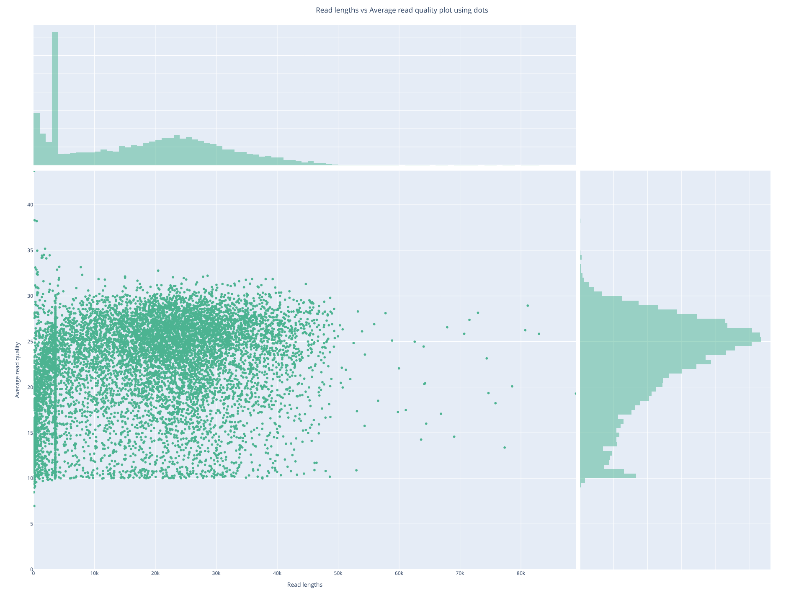
Nesse caso, siga as instruções do quadro "Se a biblioteca tiver DCS (lambda)" na Etapa 3.2.
Etapa 3 — Filtragem dos dados brutos de sequenciamento¶
Esta etapa é dividida em duas partes: remoção de adaptadores residuais e filtro por qualidade/tamanho.
3.1 Remoção de adaptadores (Porechop_ABI)¶
O Porechop_ABI usa uma abordagem ab initio. Ele descobre os adaptadores diretamente nas reads sem precisar de um banco de dados externo, o que é útil quando o kit de sequenciamento não é conhecido.
Atenção aos avisos
Mensagens como "this file is already trimmed" indicam que o basecaller (Dorado) já removeu parte dos adaptadores. O Porechop_ABI ainda consegue remover resíduos remanescentes. Veja no resultado que adaptadores SQK-NSK007 foram encontrados e removidos em ambas as amostras.
conda init
source ~/.bashrc
mkdir -p 2.Filtragem-dadosbrutos
conda activate porechop_abi_env
porechop_abi -abi -i 0.DadosBrutos/Scer1.fastq.gz -o 2.Filtragem-dadosbrutos/Scer1_trim.fastq.gz --format fastq.gz -t 20
porechop_abi -abi -i 0.DadosBrutos/Scer2.fastq.gz -o 2.Filtragem-dadosbrutos/Scer2_trim.fastq.gz --format fastq.gz -t 20
conda deactivate
Ver saída do comando
$ porechop_abi -abi -i 0.DadosBrutos/Scer1.fastq.gz -o 2.Filtragem-dadosbrutos/Scer1_trim.fastq.gz --format fastq.gz -t 20
Ab Initio Phase
Starting with a 10 run batch.
Using config file:/home/lgbio/programas/porechop_abi/Porechop_ABI/porechop_abi/ab_initio.config
Command line:
/home/lgbio/programas/porechop_abi/Porechop_ABI/porechop_abi/approx_counter 0.DadosBrutos/Scer1.fastq.gz -v 1 --config /home/lgbio/programas/porechop_abi/Porechop_ABI/porechop_abi/ab_initio.config -o ./tmp/temp_approx_kmer_count -nt 20 -mr 10
Kmer size: 16
Sampled sequences: 40000
Sampling length 100
LC filter threshold: 1
Adjusted LC threshold: 1
Nb thread: 20
Number of kept kmer: 500
Number of runs: 10
Verbosity level: 1
A total of 10 runs will be performed.
[334.902 ms] Parsing FASTA file
[15850.1 ms] Number of sequences found: 349324.
Starting run number 1
[15850.1 ms] Working on sequence start.
[24126.9 ms] Working on sequence end.
Starting run number 2
[31561 ms] Working on sequence start.
[38662.3 ms] Working on sequence end.
Starting run number 3
[46021.6 ms] Working on sequence start.
[52991.7 ms] Working on sequence end.
Starting run number 4
[60436.5 ms] Working on sequence start.
[67517.8 ms] Working on sequence end.
Starting run number 5
[74812.3 ms] Working on sequence start.
[81866.6 ms] Working on sequence end.
Starting run number 6
[89248.9 ms] Working on sequence start.
[96560.6 ms] Working on sequence end.
Starting run number 7
[103856 ms] Working on sequence start.
[110917 ms] Working on sequence end.
Starting run number 8
[118201 ms] Working on sequence start.
[125110 ms] Working on sequence end.
Starting run number 9
[132367 ms] Working on sequence start.
[139400 ms] Working on sequence end.
Starting run number 10
[146739 ms] Working on sequence start.
[153769 ms] Working on sequence end.
Assembling run 1
/!\ The most frequent kmer has been found in less than 10% of the reads starts after approximate count (2.44%)
/!\ It could mean this file is already trimmed or the sample do not contains detectable adapters.
/!\ The most frequent kmer has been found in less than 10% of the reads ends after approximate count (4.97%)
/!\ It could mean this file is already trimmed or the sample do not contains detectable adapters.
Assembling run 2
/!\ The most frequent kmer has been found in less than 10% of the reads starts after approximate count (2.34%)
/!\ It could mean this file is already trimmed or the sample do not contains detectable adapters.
/!\ The most frequent kmer has been found in less than 10% of the reads ends after approximate count (4.92%)
/!\ It could mean this file is already trimmed or the sample do not contains detectable adapters.
Assembling run 3
/!\ The most frequent kmer has been found in less than 10% of the reads starts after approximate count (2.4375%)
/!\ It could mean this file is already trimmed or the sample do not contains detectable adapters.
/!\ The most frequent kmer has been found in less than 10% of the reads ends after approximate count (4.8925%)
/!\ It could mean this file is already trimmed or the sample do not contains detectable adapters.
Assembling run 4
/!\ The most frequent kmer has been found in less than 10% of the reads starts after approximate count (2.255%)
/!\ It could mean this file is already trimmed or the sample do not contains detectable adapters.
/!\ The most frequent kmer has been found in less than 10% of the reads ends after approximate count (5.22%)
/!\ It could mean this file is already trimmed or the sample do not contains detectable adapters.
Assembling run 5
/!\ The most frequent kmer has been found in less than 10% of the reads starts after approximate count (2.4175%)
/!\ It could mean this file is already trimmed or the sample do not contains detectable adapters.
/!\ The most frequent kmer has been found in less than 10% of the reads ends after approximate count (4.905%)
/!\ It could mean this file is already trimmed or the sample do not contains detectable adapters.
Assembling run 6
/!\ The most frequent kmer has been found in less than 10% of the reads starts after approximate count (2.3675%)
/!\ It could mean this file is already trimmed or the sample do not contains detectable adapters.
/!\ The most frequent kmer has been found in less than 10% of the reads ends after approximate count (5.195%)
/!\ It could mean this file is already trimmed or the sample do not contains detectable adapters.
Assembling run 7
/!\ The most frequent kmer has been found in less than 10% of the reads starts after approximate count (2.16%)
/!\ It could mean this file is already trimmed or the sample do not contains detectable adapters.
/!\ The most frequent kmer has been found in less than 10% of the reads ends after approximate count (5.1475%)
/!\ It could mean this file is already trimmed or the sample do not contains detectable adapters.
Assembling run 8
/!\ The most frequent kmer has been found in less than 10% of the reads starts after approximate count (2.2675%)
/!\ It could mean this file is already trimmed or the sample do not contains detectable adapters.
/!\ The most frequent kmer has been found in less than 10% of the reads ends after approximate count (5.1375%)
/!\ It could mean this file is already trimmed or the sample do not contains detectable adapters.
Assembling run 9
/!\ The most frequent kmer has been found in less than 10% of the reads starts after approximate count (2.38%)
/!\ It could mean this file is already trimmed or the sample do not contains detectable adapters.
/!\ The most frequent kmer has been found in less than 10% of the reads ends after approximate count (5.2975%)
/!\ It could mean this file is already trimmed or the sample do not contains detectable adapters.
Assembling run 10
/!\ The most frequent kmer has been found in less than 10% of the reads starts after approximate count (2.2325%)
/!\ It could mean this file is already trimmed or the sample do not contains detectable adapters.
/!\ The most frequent kmer has been found in less than 10% of the reads ends after approximate count (4.98%)
/!\ It could mean this file is already trimmed or the sample do not contains detectable adapters.
/!\ The adapters currently found are not all identical.
/!\ A consensus will be made.
/!\ Launching 20 additional runs to build a consensus.
Following with a 20 run batch.
Using config file:/home/lgbio/programas/porechop_abi/Porechop_ABI/porechop_abi/ab_initio.config
Command line:
/home/lgbio/programas/porechop_abi/Porechop_ABI/porechop_abi/approx_counter 0.DadosBrutos/Scer1.fastq.gz -v 1 --config /home/lgbio/programas/porechop_abi/Porechop_ABI/porechop_abi/ab_initio.config -o ./tmp/temp_approx_kmer_count_sup -nt 20 -mr 20
Kmer size: 16
Sampled sequences: 40000
Sampling length 100
LC filter threshold: 1
Adjusted LC threshold: 1
Nb thread: 20
Number of kept kmer: 500
Number of runs: 20
Verbosity level: 1
A total of 20 runs will be performed.
[7.52815 ms] Parsing FASTA file
[14972.6 ms] Number of sequences found: 349324.
Starting run number 1
[14972.6 ms] Working on sequence start.
[22484.7 ms] Working on sequence end.
Starting run number 2
[29753.4 ms] Working on sequence start.
[36811.2 ms] Working on sequence end.
Starting run number 3
[44282.5 ms] Working on sequence start.
[51378.9 ms] Working on sequence end.
Starting run number 4
[58830.3 ms] Working on sequence start.
[65962.1 ms] Working on sequence end.
Starting run number 5
[73336.6 ms] Working on sequence start.
[80394.9 ms] Working on sequence end.
Starting run number 6
[87717.1 ms] Working on sequence start.
[94794.8 ms] Working on sequence end.
Starting run number 7
[102105 ms] Working on sequence start.
[109157 ms] Working on sequence end.
Starting run number 8
[116478 ms] Working on sequence start.
[123489 ms] Working on sequence end.
Starting run number 9
[130826 ms] Working on sequence start.
[137876 ms] Working on sequence end.
Starting run number 10
[145500 ms] Working on sequence start.
[152690 ms] Working on sequence end.
Starting run number 11
[160067 ms] Working on sequence start.
[167122 ms] Working on sequence end.
Starting run number 12
[174407 ms] Working on sequence start.
[181454 ms] Working on sequence end.
Starting run number 13
[188798 ms] Working on sequence start.
[195850 ms] Working on sequence end.
Starting run number 14
[203221 ms] Working on sequence start.
[210342 ms] Working on sequence end.
Starting run number 15
[217665 ms] Working on sequence start.
[226463 ms] Working on sequence end.
Starting run number 16
[233622 ms] Working on sequence start.
[240599 ms] Working on sequence end.
Starting run number 17
[247919 ms] Working on sequence start.
[255075 ms] Working on sequence end.
Starting run number 18
[262392 ms] Working on sequence start.
[269454 ms] Working on sequence end.
Starting run number 19
[276830 ms] Working on sequence start.
[283960 ms] Working on sequence end.
Starting run number 20
[291297 ms] Working on sequence start.
[298321 ms] Working on sequence end.
Assembling run 1
/!\ The most frequent kmer has been found in less than 10% of the reads starts after approximate count (2.32%)
/!\ It could mean this file is already trimmed or the sample do not contains detectable adapters.
/!\ The most frequent kmer has been found in less than 10% of the reads ends after approximate count (5.345%)
/!\ It could mean this file is already trimmed or the sample do not contains detectable adapters.
Assembling run 2
/!\ The most frequent kmer has been found in less than 10% of the reads starts after approximate count (2.375%)
/!\ It could mean this file is already trimmed or the sample do not contains detectable adapters.
/!\ The most frequent kmer has been found in less than 10% of the reads ends after approximate count (5.275%)
/!\ It could mean this file is already trimmed or the sample do not contains detectable adapters.
Assembling run 3
/!\ The most frequent kmer has been found in less than 10% of the reads starts after approximate count (2.3025%)
/!\ It could mean this file is already trimmed or the sample do not contains detectable adapters.
/!\ The most frequent kmer has been found in less than 10% of the reads ends after approximate count (5.0825%)
/!\ It could mean this file is already trimmed or the sample do not contains detectable adapters.
Assembling run 4
/!\ The most frequent kmer has been found in less than 10% of the reads starts after approximate count (2.2525%)
/!\ It could mean this file is already trimmed or the sample do not contains detectable adapters.
/!\ The most frequent kmer has been found in less than 10% of the reads ends after approximate count (5.0175%)
/!\ It could mean this file is already trimmed or the sample do not contains detectable adapters.
Assembling run 5
/!\ The most frequent kmer has been found in less than 10% of the reads starts after approximate count (2.465%)
/!\ It could mean this file is already trimmed or the sample do not contains detectable adapters.
/!\ The most frequent kmer has been found in less than 10% of the reads ends after approximate count (5.1925%)
/!\ It could mean this file is already trimmed or the sample do not contains detectable adapters.
Assembling run 6
/!\ The most frequent kmer has been found in less than 10% of the reads starts after approximate count (2.315%)
/!\ It could mean this file is already trimmed or the sample do not contains detectable adapters.
/!\ The most frequent kmer has been found in less than 10% of the reads ends after approximate count (4.8625%)
/!\ It could mean this file is already trimmed or the sample do not contains detectable adapters.
Assembling run 7
/!\ The most frequent kmer has been found in less than 10% of the reads starts after approximate count (2.1875%)
/!\ It could mean this file is already trimmed or the sample do not contains detectable adapters.
/!\ The most frequent kmer has been found in less than 10% of the reads ends after approximate count (5.065%)
/!\ It could mean this file is already trimmed or the sample do not contains detectable adapters.
Assembling run 8
/!\ The most frequent kmer has been found in less than 10% of the reads starts after approximate count (2.3275%)
/!\ It could mean this file is already trimmed or the sample do not contains detectable adapters.
/!\ The most frequent kmer has been found in less than 10% of the reads ends after approximate count (5.34%)
/!\ It could mean this file is already trimmed or the sample do not contains detectable adapters.
Assembling run 9
/!\ The most frequent kmer has been found in less than 10% of the reads starts after approximate count (2.445%)
/!\ It could mean this file is already trimmed or the sample do not contains detectable adapters.
/!\ The most frequent kmer has been found in less than 10% of the reads ends after approximate count (5.1175%)
/!\ It could mean this file is already trimmed or the sample do not contains detectable adapters.
Assembling run 10
/!\ The most frequent kmer has been found in less than 10% of the reads starts after approximate count (2.2625%)
/!\ It could mean this file is already trimmed or the sample do not contains detectable adapters.
/!\ The most frequent kmer has been found in less than 10% of the reads ends after approximate count (5.2575%)
/!\ It could mean this file is already trimmed or the sample do not contains detectable adapters.
Assembling run 11
/!\ The most frequent kmer has been found in less than 10% of the reads starts after approximate count (2.3425%)
/!\ It could mean this file is already trimmed or the sample do not contains detectable adapters.
/!\ The most frequent kmer has been found in less than 10% of the reads ends after approximate count (5.2375%)
/!\ It could mean this file is already trimmed or the sample do not contains detectable adapters.
Assembling run 12
/!\ The most frequent kmer has been found in less than 10% of the reads starts after approximate count (2.1975%)
/!\ It could mean this file is already trimmed or the sample do not contains detectable adapters.
/!\ The most frequent kmer has been found in less than 10% of the reads ends after approximate count (5.1375%)
/!\ It could mean this file is already trimmed or the sample do not contains detectable adapters.
Assembling run 13
/!\ The most frequent kmer has been found in less than 10% of the reads starts after approximate count (2.48%)
/!\ It could mean this file is already trimmed or the sample do not contains detectable adapters.
/!\ The most frequent kmer has been found in less than 10% of the reads ends after approximate count (5.16%)
/!\ It could mean this file is already trimmed or the sample do not contains detectable adapters.
Assembling run 14
/!\ The most frequent kmer has been found in less than 10% of the reads starts after approximate count (2.17%)
/!\ It could mean this file is already trimmed or the sample do not contains detectable adapters.
/!\ The most frequent kmer has been found in less than 10% of the reads ends after approximate count (4.9675%)
/!\ It could mean this file is already trimmed or the sample do not contains detectable adapters.
Assembling run 15
/!\ The most frequent kmer has been found in less than 10% of the reads starts after approximate count (2.1775%)
/!\ It could mean this file is already trimmed or the sample do not contains detectable adapters.
/!\ The most frequent kmer has been found in less than 10% of the reads ends after approximate count (5.3525%)
/!\ It could mean this file is already trimmed or the sample do not contains detectable adapters.
Assembling run 16
/!\ The most frequent kmer has been found in less than 10% of the reads starts after approximate count (2.495%)
/!\ It could mean this file is already trimmed or the sample do not contains detectable adapters.
/!\ The most frequent kmer has been found in less than 10% of the reads ends after approximate count (5.11%)
/!\ It could mean this file is already trimmed or the sample do not contains detectable adapters.
Assembling run 17
/!\ The most frequent kmer has been found in less than 10% of the reads starts after approximate count (2.4325%)
/!\ It could mean this file is already trimmed or the sample do not contains detectable adapters.
/!\ The most frequent kmer has been found in less than 10% of the reads ends after approximate count (5.1325%)
/!\ It could mean this file is already trimmed or the sample do not contains detectable adapters.
Assembling run 18
/!\ The most frequent kmer has been found in less than 10% of the reads starts after approximate count (2.295%)
/!\ It could mean this file is already trimmed or the sample do not contains detectable adapters.
/!\ The most frequent kmer has been found in less than 10% of the reads ends after approximate count (5.2025%)
/!\ It could mean this file is already trimmed or the sample do not contains detectable adapters.
Assembling run 19
/!\ The most frequent kmer has been found in less than 10% of the reads starts after approximate count (2.295%)
/!\ It could mean this file is already trimmed or the sample do not contains detectable adapters.
/!\ The most frequent kmer has been found in less than 10% of the reads ends after approximate count (5.0975%)
/!\ It could mean this file is already trimmed or the sample do not contains detectable adapters.
Assembling run 20
/!\ The most frequent kmer has been found in less than 10% of the reads starts after approximate count (2.43%)
/!\ It could mean this file is already trimmed or the sample do not contains detectable adapters.
/!\ The most frequent kmer has been found in less than 10% of the reads ends after approximate count (5.275%)
/!\ It could mean this file is already trimmed or the sample do not contains detectable adapters.
Consensus step done
/!\ Frequency warning triggered by 30/30 runs for start adapters
/!\ Frequency warning triggered by 30/30 runs for end adapters
Rebuild adapters:
Start
Consensus_1_start_(100.0%)
GTACTTCGTTCAGTTACGTATTGCTAAGGTTAACCTGGGAGCATCAGGTAGTAACAGCAGCACC
End
Consensus_1_end_(100.0%)
AGGTGCTGCTGTTACTACCTGATGCTCCCAGGTTAACCTTAGCAATACGTAACTTAA
Building consensus adapter objects
The inference of adapters sequence is done.
Loading reads
0.DadosBrutos/Scer1.fastq.gz
349,324 reads loaded
Looking for known adapter sets
10,000 / 10,000 (100.0%)
Best
read Best
start read end
Set %ID %ID
SQK-NSK007 96.6 81.8
Rapid 68.5 0.0
RBK004_upstream 76.9 0.0
SQK-MAP006 78.6 82.6
SQK-MAP006 short 74.1 75.9
PCR adapters 1 78.3 83.3
PCR adapters 2 81.8 82.6
PCR adapters 3 79.2 78.3
1D^2 part 1 75.0 73.3
1D^2 part 2 85.3 80.6
cDNA SSP 73.7 70.5
Barcode 1 (reverse) 84.0 80.0
Barcode 2 (reverse) 79.2 83.3
Barcode 3 (reverse) 76.9 75.0
Barcode 4 (reverse) 77.8 76.9
Barcode 5 (reverse) 80.0 77.8
Barcode 6 (reverse) 76.9 76.9
Barcode 7 (reverse) 80.0 76.9
Barcode 8 (reverse) 80.0 76.9
Barcode 9 (reverse) 79.2 76.9
Barcode 10 (reverse) 80.0 81.5
Barcode 11 (reverse) 76.9 80.0
Barcode 12 (reverse) 80.0 79.2
Barcode 1 (forward) 77.8 80.0
Barcode 2 (forward) 79.2 80.0
Barcode 3 (forward) 76.0 77.8
Barcode 4 (forward) 79.2 76.0
Barcode 5 (forward) 80.8 79.2
Barcode 6 (forward) 76.0 80.0
Barcode 7 (forward) 80.8 79.2
Barcode 8 (forward) 79.2 80.0
Barcode 9 (forward) 77.8 77.8
Barcode 10 (forward) 80.0 76.9
Barcode 11 (forward) 77.8 80.8
Barcode 12 (forward) 79.2 80.8
Barcode 13 (forward) 79.2 76.9
Barcode 14 (forward) 77.8 80.0
Barcode 15 (forward) 76.0 84.6
Barcode 16 (forward) 79.2 79.2
Barcode 17 (forward) 80.0 79.2
Barcode 18 (forward) 77.8 80.0
Barcode 19 (forward) 79.2 80.0
Barcode 20 (forward) 76.0 80.8
Barcode 21 (forward) 80.0 76.9
Barcode 22 (forward) 76.9 80.0
Barcode 23 (forward) 77.8 77.8
Barcode 24 (forward) 76.0 92.3
Barcode 25 (forward) 77.8 79.2
Barcode 26 (forward) 80.0 80.0
Barcode 27 (forward) 76.0 83.3
Barcode 28 (forward) 76.0 79.2
Barcode 29 (forward) 76.9 76.0
Barcode 30 (forward) 76.9 76.9
Barcode 31 (forward) 79.2 76.9
Barcode 32 (forward) 76.9 80.0
Barcode 33 (forward) 76.0 79.2
Barcode 34 (forward) 80.0 79.2
Barcode 35 (forward) 80.8 76.0
Barcode 36 (forward) 80.0 79.2
Barcode 37 (forward) 79.2 79.2
Barcode 38 (forward) 81.5 79.2
Barcode 39 (forward) 76.9 76.9
Barcode 40 (forward) 79.2 76.0
Barcode 41 (forward) 76.0 79.2
Barcode 42 (forward) 76.9 76.9
Barcode 43 (forward) 77.8 76.9
Barcode 44 (forward) 76.0 75.0
Barcode 45 (forward) 77.8 76.9
Barcode 46 (forward) 80.0 76.0
Barcode 47 (forward) 76.0 79.2
Barcode 48 (forward) 79.2 83.3
Barcode 49 (forward) 80.8 76.9
Barcode 50 (forward) 77.8 76.9
Barcode 51 (forward) 76.9 79.2
Barcode 52 (forward) 84.0 80.0
Barcode 53 (forward) 76.9 76.0
Barcode 54 (forward) 78.6 80.0
Barcode 55 (forward) 76.0 79.2
Barcode 56 (forward) 76.9 80.0
Barcode 57 (forward) 76.0 77.8
Barcode 58 (forward) 80.0 76.9
Barcode 59 (forward) 79.2 88.0
Barcode 60 (forward) 79.2 79.2
Barcode 61 (forward) 76.9 76.9
Barcode 62 (forward) 75.0 76.0
Barcode 63 (forward) 76.0 83.3
Barcode 64 (forward) 80.0 76.0
Barcode 65 (forward) 80.0 79.2
Barcode 66 (forward) 76.9 76.0
Barcode 67 (forward) 76.0 76.0
Barcode 68 (forward) 77.8 76.0
Barcode 69 (forward) 80.0 79.2
Barcode 70 (forward) 76.0 76.0
Barcode 71 (forward) 100.0 100.0
Barcode 72 (forward) 79.2 79.2
Barcode 73 (forward) 76.9 80.0
Barcode 74 (forward) 80.0 80.0
Barcode 75 (forward) 76.9 78.6
Barcode 76 (forward) 76.9 77.8
Barcode 77 (forward) 75.0 80.0
Barcode 78 (forward) 80.0 77.8
Barcode 79 (forward) 76.9 79.2
Barcode 80 (forward) 80.8 76.9
Barcode 81 (forward) 78.6 79.2
Barcode 82 (forward) 77.8 79.2
Barcode 83 (forward) 76.0 76.9
Barcode 84 (forward) 79.2 76.9
Barcode 85 (forward) 76.0 79.2
Barcode 86 (forward) 76.9 76.0
Barcode 87 (forward) 75.0 77.8
Barcode 88 (forward) 80.0 80.8
Barcode 89 (forward) 80.8 77.8
Barcode 90 (forward) 76.0 75.0
Barcode 91 (forward) 75.0 76.9
Barcode 92 (forward) 80.0 79.2
Barcode 93 (forward) 80.0 80.0
Barcode 94 (forward) 76.9 75.0
Barcode 95 (forward) 80.0 79.2
Barcode 96 (forward) 76.9 79.2
Consensus_1_start_(100.0%)_adapter 87.7 0.0
Consensus_1_end_(100.0%)_adapter 0.0 84.5
Trimming adapters from read ends
SQK-NSK007_Y_Top: AATGTACTTCGTTCAGTTACGTATTGCT
SQK-NSK007_Y_Bottom: GCAATACGTAACTGAACGAAGT
BC24: GCATAGTTCTGCATGATGGGTTAG
BC24_rev: CTAACCCATCATGCAGAACTATGC
BC71: CCTGGGAGCATCAGGTAGTAACAG
BC71_rev: CTGTTACTACCTGATGCTCCCAGG
349,324 / 349,324 (100.0%)
39,752 / 349,324 reads had adapters trimmed from their start (496,208 bp removed)
55,520 / 349,324 reads had adapters trimmed from their end (860,293 bp removed)
Splitting reads containing middle adapters
349,324 / 349,324 (100.0%)
738 / 349,324 reads were split based on middle adapters
Saving trimmed reads to file
Saved result to /media/hd16-databases/usuarios/renatadias/curso-nanopore-nov26/2.Filtragem-dadosbrutos/Scer1_trim.fastq.gz
### Scer2
$ porechop_abi -abi -i 0.DadosBrutos/Scer2.fastq.gz -o 2.Filtragem-dadosbrutos/Scer2_trim.fastq.gz --format fastq.gz -t 20
Ab Initio Phase
Starting with a 10 run batch.
Using config file:/home/lgbio/programas/porechop_abi/Porechop_ABI/porechop_abi/ab_initio.config
Command line:
/home/lgbio/programas/porechop_abi/Porechop_ABI/porechop_abi/approx_counter 0.DadosBrutos/Scer2.fastq.gz -v 1 --config /home/lgbio/programas/porechop_abi/Porechop_ABI/porechop_abi/ab_initio.config -o ./tmp/temp_approx_kmer_count -nt 20 -mr 10
Kmer size: 16
Sampled sequences: 40000
Sampling length 100
LC filter threshold: 1
Adjusted LC threshold: 1
Nb thread: 20
Number of kept kmer: 500
Number of runs: 10
Verbosity level: 1
A total of 10 runs will be performed.
[7.71936 ms] Parsing FASTA file
[1520.96 ms] Number of sequences found: 57918.
Starting run number 1
[1520.99 ms] Working on sequence start.
[9232.48 ms] Working on sequence end.
Starting run number 2
[17182.3 ms] Working on sequence start.
[24738.5 ms] Working on sequence end.
Starting run number 3
[32535.2 ms] Working on sequence start.
[40042 ms] Working on sequence end.
Starting run number 4
[48701.5 ms] Working on sequence start.
[56081 ms] Working on sequence end.
Starting run number 5
[63797.5 ms] Working on sequence start.
[71214.8 ms] Working on sequence end.
Starting run number 6
[78974.7 ms] Working on sequence start.
[86438 ms] Working on sequence end.
Starting run number 7
[94219 ms] Working on sequence start.
[101574 ms] Working on sequence end.
Starting run number 8
[109250 ms] Working on sequence start.
[116702 ms] Working on sequence end.
Starting run number 9
[124452 ms] Working on sequence start.
[131900 ms] Working on sequence end.
Starting run number 10
[139661 ms] Working on sequence start.
[147132 ms] Working on sequence end.
Assembling run 1
/!\ The most frequent kmer has been found in less than 10% of the reads starts after approximate count (2.245%)
/!\ It could mean this file is already trimmed or the sample do not contains detectable adapters.
/!\ The most frequent kmer has been found in less than 10% of the reads ends after approximate count (4.95%)
/!\ It could mean this file is already trimmed or the sample do not contains detectable adapters.
Assembling run 2
/!\ The most frequent kmer has been found in less than 10% of the reads starts after approximate count (2.12%)
/!\ It could mean this file is already trimmed or the sample do not contains detectable adapters.
/!\ The most frequent kmer has been found in less than 10% of the reads ends after approximate count (4.765%)
/!\ It could mean this file is already trimmed or the sample do not contains detectable adapters.
Assembling run 3
/!\ The most frequent kmer has been found in less than 10% of the reads starts after approximate count (2.295%)
/!\ It could mean this file is already trimmed or the sample do not contains detectable adapters.
/!\ The most frequent kmer has been found in less than 10% of the reads ends after approximate count (4.6875%)
/!\ It could mean this file is already trimmed or the sample do not contains detectable adapters.
Assembling run 4
/!\ The most frequent kmer has been found in less than 10% of the reads starts after approximate count (2.175%)
/!\ It could mean this file is already trimmed or the sample do not contains detectable adapters.
/!\ The most frequent kmer has been found in less than 10% of the reads ends after approximate count (4.66%)
/!\ It could mean this file is already trimmed or the sample do not contains detectable adapters.
Assembling run 5
/!\ The most frequent kmer has been found in less than 10% of the reads starts after approximate count (2.2%)
/!\ It could mean this file is already trimmed or the sample do not contains detectable adapters.
/!\ The most frequent kmer has been found in less than 10% of the reads ends after approximate count (4.695%)
/!\ It could mean this file is already trimmed or the sample do not contains detectable adapters.
Assembling run 6
/!\ The most frequent kmer has been found in less than 10% of the reads starts after approximate count (2.2925%)
/!\ It could mean this file is already trimmed or the sample do not contains detectable adapters.
/!\ The most frequent kmer has been found in less than 10% of the reads ends after approximate count (4.6425%)
/!\ It could mean this file is already trimmed or the sample do not contains detectable adapters.
Assembling run 7
/!\ The most frequent kmer has been found in less than 10% of the reads starts after approximate count (2.2%)
/!\ It could mean this file is already trimmed or the sample do not contains detectable adapters.
/!\ The most frequent kmer has been found in less than 10% of the reads ends after approximate count (4.715%)
/!\ It could mean this file is already trimmed or the sample do not contains detectable adapters.
Assembling run 8
/!\ The most frequent kmer has been found in less than 10% of the reads starts after approximate count (2.24%)
/!\ It could mean this file is already trimmed or the sample do not contains detectable adapters.
/!\ The most frequent kmer has been found in less than 10% of the reads ends after approximate count (4.7%)
/!\ It could mean this file is already trimmed or the sample do not contains detectable adapters.
Assembling run 9
/!\ The most frequent kmer has been found in less than 10% of the reads starts after approximate count (2.17%)
/!\ It could mean this file is already trimmed or the sample do not contains detectable adapters.
/!\ The most frequent kmer has been found in less than 10% of the reads ends after approximate count (4.96%)
/!\ It could mean this file is already trimmed or the sample do not contains detectable adapters.
Assembling run 10
/!\ The most frequent kmer has been found in less than 10% of the reads starts after approximate count (2.2125%)
/!\ It could mean this file is already trimmed or the sample do not contains detectable adapters.
/!\ The most frequent kmer has been found in less than 10% of the reads ends after approximate count (4.69%)
/!\ It could mean this file is already trimmed or the sample do not contains detectable adapters.
/!\ The adapters currently found are not all identical.
/!\ A consensus will be made.
/!\ Launching 20 additional runs to build a consensus.
Following with a 20 run batch.
Using config file:/home/lgbio/programas/porechop_abi/Porechop_ABI/porechop_abi/ab_initio.config
Command line:
/home/lgbio/programas/porechop_abi/Porechop_ABI/porechop_abi/approx_counter 0.DadosBrutos/Scer2.fastq.gz -v 1 --config /home/lgbio/programas/porechop_abi/Porechop_ABI/porechop_abi/ab_initio.config -o ./tmp/temp_approx_kmer_count_sup -nt 20 -mr 20
Kmer size: 16
Sampled sequences: 40000
Sampling length 100
LC filter threshold: 1
Adjusted LC threshold: 1
Nb thread: 20
Number of kept kmer: 500
Number of runs: 20
Verbosity level: 1
A total of 20 runs will be performed.
[7.66331 ms] Parsing FASTA file
[1519.48 ms] Number of sequences found: 57918.
Starting run number 1
[1519.51 ms] Working on sequence start.
[8777.44 ms] Working on sequence end.
Starting run number 2
[16421 ms] Working on sequence start.
[23651.6 ms] Working on sequence end.
Starting run number 3
[31685.6 ms] Working on sequence start.
[38871.8 ms] Working on sequence end.
Starting run number 4
[46463.4 ms] Working on sequence start.
[53639.9 ms] Working on sequence end.
Starting run number 5
[61086.2 ms] Working on sequence start.
[68404 ms] Working on sequence end.
Starting run number 6
[76268.9 ms] Working on sequence start.
[83443.6 ms] Working on sequence end.
Starting run number 7
[90929.5 ms] Working on sequence start.
[98148.5 ms] Working on sequence end.
Starting run number 8
[105599 ms] Working on sequence start.
[112795 ms] Working on sequence end.
Starting run number 9
[120292 ms] Working on sequence start.
[127487 ms] Working on sequence end.
Starting run number 10
[134950 ms] Working on sequence start.
[142160 ms] Working on sequence end.
Starting run number 11
[149656 ms] Working on sequence start.
[156898 ms] Working on sequence end.
Starting run number 12
[164422 ms] Working on sequence start.
[171627 ms] Working on sequence end.
Starting run number 13
[179178 ms] Working on sequence start.
[186370 ms] Working on sequence end.
Starting run number 14
[193881 ms] Working on sequence start.
[201082 ms] Working on sequence end.
Starting run number 15
[208542 ms] Working on sequence start.
[215711 ms] Working on sequence end.
Starting run number 16
[223182 ms] Working on sequence start.
[230440 ms] Working on sequence end.
Starting run number 17
[237992 ms] Working on sequence start.
[245220 ms] Working on sequence end.
Starting run number 18
[252706 ms] Working on sequence start.
[259924 ms] Working on sequence end.
Starting run number 19
[267485 ms] Working on sequence start.
[274748 ms] Working on sequence end.
Starting run number 20
[282293 ms] Working on sequence start.
[289483 ms] Working on sequence end.
Assembling run 1
/!\ The most frequent kmer has been found in less than 10% of the reads starts after approximate count (2.3375%)
/!\ It could mean this file is already trimmed or the sample do not contains detectable adapters.
/!\ The most frequent kmer has been found in less than 10% of the reads ends after approximate count (4.73%)
/!\ It could mean this file is already trimmed or the sample do not contains detectable adapters.
Assembling run 2
/!\ The most frequent kmer has been found in less than 10% of the reads starts after approximate count (2.39%)
/!\ It could mean this file is already trimmed or the sample do not contains detectable adapters.
/!\ The most frequent kmer has been found in less than 10% of the reads ends after approximate count (4.7975%)
/!\ It could mean this file is already trimmed or the sample do not contains detectable adapters.
Assembling run 3
/!\ The most frequent kmer has been found in less than 10% of the reads starts after approximate count (2.295%)
/!\ It could mean this file is already trimmed or the sample do not contains detectable adapters.
/!\ The most frequent kmer has been found in less than 10% of the reads ends after approximate count (4.8425%)
/!\ It could mean this file is already trimmed or the sample do not contains detectable adapters.
Assembling run 4
/!\ The most frequent kmer has been found in less than 10% of the reads starts after approximate count (2.2075%)
/!\ It could mean this file is already trimmed or the sample do not contains detectable adapters.
/!\ The most frequent kmer has been found in less than 10% of the reads ends after approximate count (4.7425%)
/!\ It could mean this file is already trimmed or the sample do not contains detectable adapters.
Assembling run 5
/!\ The most frequent kmer has been found in less than 10% of the reads starts after approximate count (2.205%)
/!\ It could mean this file is already trimmed or the sample do not contains detectable adapters.
/!\ The most frequent kmer has been found in less than 10% of the reads ends after approximate count (4.5625%)
/!\ It could mean this file is already trimmed or the sample do not contains detectable adapters.
Assembling run 6
/!\ The most frequent kmer has been found in less than 10% of the reads starts after approximate count (2.2975%)
/!\ It could mean this file is already trimmed or the sample do not contains detectable adapters.
/!\ The most frequent kmer has been found in less than 10% of the reads ends after approximate count (4.735%)
/!\ It could mean this file is already trimmed or the sample do not contains detectable adapters.
Assembling run 7
/!\ The most frequent kmer has been found in less than 10% of the reads starts after approximate count (2.16%)
/!\ It could mean this file is already trimmed or the sample do not contains detectable adapters.
/!\ The most frequent kmer has been found in less than 10% of the reads ends after approximate count (4.6975%)
/!\ It could mean this file is already trimmed or the sample do not contains detectable adapters.
Assembling run 8
/!\ The most frequent kmer has been found in less than 10% of the reads starts after approximate count (2.2925%)
/!\ It could mean this file is already trimmed or the sample do not contains detectable adapters.
/!\ The most frequent kmer has been found in less than 10% of the reads ends after approximate count (4.88%)
/!\ It could mean this file is already trimmed or the sample do not contains detectable adapters.
Assembling run 9
/!\ The most frequent kmer has been found in less than 10% of the reads starts after approximate count (2.0775%)
/!\ It could mean this file is already trimmed or the sample do not contains detectable adapters.
/!\ The most frequent kmer has been found in less than 10% of the reads ends after approximate count (4.76%)
/!\ It could mean this file is already trimmed or the sample do not contains detectable adapters.
Assembling run 10
/!\ The most frequent kmer has been found in less than 10% of the reads starts after approximate count (2.235%)
/!\ It could mean this file is already trimmed or the sample do not contains detectable adapters.
/!\ The most frequent kmer has been found in less than 10% of the reads ends after approximate count (4.735%)
/!\ It could mean this file is already trimmed or the sample do not contains detectable adapters.
Assembling run 11
/!\ The most frequent kmer has been found in less than 10% of the reads starts after approximate count (2.2675%)
/!\ It could mean this file is already trimmed or the sample do not contains detectable adapters.
/!\ The most frequent kmer has been found in less than 10% of the reads ends after approximate count (4.7025%)
/!\ It could mean this file is already trimmed or the sample do not contains detectable adapters.
Assembling run 12
/!\ The most frequent kmer has been found in less than 10% of the reads starts after approximate count (2.0825%)
/!\ It could mean this file is already trimmed or the sample do not contains detectable adapters.
/!\ The most frequent kmer has been found in less than 10% of the reads ends after approximate count (4.8%)
/!\ It could mean this file is already trimmed or the sample do not contains detectable adapters.
Assembling run 13
/!\ The most frequent kmer has been found in less than 10% of the reads starts after approximate count (2.2625%)
/!\ It could mean this file is already trimmed or the sample do not contains detectable adapters.
/!\ The most frequent kmer has been found in less than 10% of the reads ends after approximate count (5.015%)
/!\ It could mean this file is already trimmed or the sample do not contains detectable adapters.
Assembling run 14
/!\ The most frequent kmer has been found in less than 10% of the reads starts after approximate count (2.2775%)
/!\ It could mean this file is already trimmed or the sample do not contains detectable adapters.
/!\ The most frequent kmer has been found in less than 10% of the reads ends after approximate count (4.825%)
/!\ It could mean this file is already trimmed or the sample do not contains detectable adapters.
Assembling run 15
/!\ The most frequent kmer has been found in less than 10% of the reads starts after approximate count (2.2%)
/!\ It could mean this file is already trimmed or the sample do not contains detectable adapters.
/!\ The most frequent kmer has been found in less than 10% of the reads ends after approximate count (4.7875%)
/!\ It could mean this file is already trimmed or the sample do not contains detectable adapters.
Assembling run 16
/!\ The most frequent kmer has been found in less than 10% of the reads starts after approximate count (2.245%)
/!\ It could mean this file is already trimmed or the sample do not contains detectable adapters.
/!\ The most frequent kmer has been found in less than 10% of the reads ends after approximate count (4.7%)
/!\ It could mean this file is already trimmed or the sample do not contains detectable adapters.
Assembling run 17
/!\ The most frequent kmer has been found in less than 10% of the reads starts after approximate count (2.2375%)
/!\ It could mean this file is already trimmed or the sample do not contains detectable adapters.
/!\ The most frequent kmer has been found in less than 10% of the reads ends after approximate count (4.99%)
/!\ It could mean this file is already trimmed or the sample do not contains detectable adapters.
Assembling run 18
/!\ The most frequent kmer has been found in less than 10% of the reads starts after approximate count (2.2775%)
/!\ It could mean this file is already trimmed or the sample do not contains detectable adapters.
/!\ The most frequent kmer has been found in less than 10% of the reads ends after approximate count (4.89%)
/!\ It could mean this file is already trimmed or the sample do not contains detectable adapters.
Assembling run 19
/!\ The most frequent kmer has been found in less than 10% of the reads starts after approximate count (2.2125%)
/!\ It could mean this file is already trimmed or the sample do not contains detectable adapters.
/!\ The most frequent kmer has been found in less than 10% of the reads ends after approximate count (4.655%)
/!\ It could mean this file is already trimmed or the sample do not contains detectable adapters.
Assembling run 20
/!\ The most frequent kmer has been found in less than 10% of the reads starts after approximate count (2.295%)
/!\ It could mean this file is already trimmed or the sample do not contains detectable adapters.
/!\ The most frequent kmer has been found in less than 10% of the reads ends after approximate count (4.8%)
/!\ It could mean this file is already trimmed or the sample do not contains detectable adapters.
Consensus step done
/!\ Frequency warning triggered by 30/30 runs for start adapters
/!\ Frequency warning triggered by 30/30 runs for end adapters
Rebuild adapters:
Start
Consensus_1_start_(100.0%)
GTACTTCGTTCAGTTACGTATTGCTAAGGTTAATACAGTCCGAGCCT
End
Consensus_1_end_(100.0%)
AGGTGCTGAATCACATGAACTCGGACTGTATTAACCTTAGCAATACGTAACTTA
Building consensus adapter objects
The inference of adapters sequence is done.
Loading reads
0.DadosBrutos/Scer2.fastq.gz
57,918 reads loaded
Looking for known adapter sets
10,000 / 10,000 (100.0%)
Best
read Best
start read end
Set %ID %ID
SQK-NSK007 96.4 81.8
Rapid 67.3 0.0
RBK004_upstream 75.0 0.0
SQK-MAP006 78.6 82.6
SQK-MAP006 short 76.9 75.0
PCR adapters 1 78.3 83.3
PCR adapters 2 90.9 82.6
PCR adapters 3 78.3 80.0
1D^2 part 1 75.9 74.1
1D^2 part 2 88.6 78.1
cDNA SSP 69.8 69.0
Barcode 1 (reverse) 84.0 76.9
Barcode 2 (reverse) 77.8 80.0
Barcode 3 (reverse) 78.6 76.0
Barcode 4 (reverse) 79.2 78.6
Barcode 5 (reverse) 76.9 80.0
Barcode 6 (reverse) 77.8 79.2
Barcode 7 (reverse) 79.2 76.0
Barcode 8 (reverse) 76.0 79.2
Barcode 9 (reverse) 79.2 79.2
Barcode 10 (reverse) 76.9 79.2
Barcode 11 (reverse) 76.9 76.9
Barcode 12 (reverse) 83.3 95.8
Barcode 1 (forward) 80.0 80.0
Barcode 2 (forward) 80.0 80.8
Barcode 3 (forward) 80.0 76.9
Barcode 4 (forward) 80.8 76.9
Barcode 5 (forward) 80.0 77.8
Barcode 6 (forward) 79.2 80.8
Barcode 7 (forward) 76.9 80.8
Barcode 8 (forward) 76.0 79.2
Barcode 9 (forward) 80.0 76.0
Barcode 10 (forward) 80.0 76.9
Barcode 11 (forward) 80.0 80.8
Barcode 12 (forward) 76.9 83.3
Barcode 13 (forward) 80.0 87.5
Barcode 14 (forward) 76.9 76.9
Barcode 15 (forward) 79.2 76.0
Barcode 16 (forward) 80.0 76.9
Barcode 17 (forward) 80.8 76.0
Barcode 18 (forward) 76.0 79.2
Barcode 19 (forward) 80.0 77.8
Barcode 20 (forward) 76.9 77.8
Barcode 21 (forward) 80.0 76.0
Barcode 22 (forward) 76.9 80.0
Barcode 23 (forward) 79.2 80.0
Barcode 24 (forward) 80.0 80.0
Barcode 25 (forward) 76.9 77.8
Barcode 26 (forward) 79.2 80.8
Barcode 27 (forward) 83.3 79.2
Barcode 28 (forward) 79.2 79.2
Barcode 29 (forward) 76.0 76.9
Barcode 30 (forward) 92.0 79.2
Barcode 31 (forward) 80.0 80.0
Barcode 32 (forward) 80.8 76.9
Barcode 33 (forward) 77.8 77.8
Barcode 34 (forward) 77.8 76.9
Barcode 35 (forward) 80.8 81.5
Barcode 36 (forward) 80.8 76.9
Barcode 37 (forward) 79.2 80.0
Barcode 38 (forward) 84.6 80.0
Barcode 39 (forward) 79.2 76.0
Barcode 40 (forward) 78.6 80.0
Barcode 41 (forward) 79.2 79.2
Barcode 42 (forward) 76.0 76.9
Barcode 43 (forward) 77.8 79.2
Barcode 44 (forward) 79.2 79.2
Barcode 45 (forward) 80.0 76.9
Barcode 46 (forward) 80.0 76.0
Barcode 47 (forward) 79.2 79.2
Barcode 48 (forward) 92.0 81.5
Barcode 49 (forward) 80.0 80.0
Barcode 50 (forward) 80.8 77.8
Barcode 51 (forward) 80.8 77.8
Barcode 52 (forward) 80.8 80.0
Barcode 53 (forward) 80.0 77.8
Barcode 54 (forward) 79.2 80.8
Barcode 55 (forward) 78.6 76.9
Barcode 56 (forward) 79.2 80.0
Barcode 57 (forward) 76.9 76.9
Barcode 58 (forward) 87.5 76.9
Barcode 59 (forward) 83.3 80.0
Barcode 60 (forward) 76.9 77.8
Barcode 61 (forward) 91.7 80.8
Barcode 62 (forward) 80.0 76.0
Barcode 63 (forward) 80.0 79.2
Barcode 64 (forward) 80.8 78.6
Barcode 65 (forward) 76.9 76.0
Barcode 66 (forward) 76.9 76.9
Barcode 67 (forward) 79.2 80.0
Barcode 68 (forward) 79.2 76.9
Barcode 69 (forward) 100.0 100.0
Barcode 70 (forward) 76.0 79.2
Barcode 71 (forward) 79.2 79.2
Barcode 72 (forward) 79.2 76.9
Barcode 73 (forward) 77.8 76.9
Barcode 74 (forward) 79.2 80.0
Barcode 75 (forward) 76.9 78.6
Barcode 76 (forward) 76.0 76.9
Barcode 77 (forward) 80.0 79.2
Barcode 78 (forward) 79.2 79.2
Barcode 79 (forward) 76.9 77.8
Barcode 80 (forward) 80.8 80.8
Barcode 81 (forward) 80.0 76.0
Barcode 82 (forward) 79.2 80.8
Barcode 83 (forward) 80.8 76.9
Barcode 84 (forward) 80.0 79.2
Barcode 85 (forward) 79.2 77.8
Barcode 86 (forward) 77.8 79.2
Barcode 87 (forward) 80.0 80.0
Barcode 88 (forward) 80.0 80.0
Barcode 89 (forward) 80.0 79.2
Barcode 90 (forward) 76.0 75.0
Barcode 91 (forward) 76.0 76.0
Barcode 92 (forward) 77.8 76.9
Barcode 93 (forward) 79.2 76.9
Barcode 94 (forward) 76.0 76.0
Barcode 95 (forward) 80.8 76.9
Barcode 96 (forward) 76.9 80.0
Consensus_1_start_(100.0%)_adapter 91.7 0.0
Consensus_1_end_(100.0%)_adapter 0.0 90.9
Trimming adapters from read ends
SQK-NSK007_Y_Top: AATGTACTTCGTTCAGTTACGTATTGCT
SQK-NSK007_Y_Bottom: GCAATACGTAACTGAACGAAGT
PCR_2_start: TTTCTGTTGGTGCTGATATTGC
PCR_2_end: GCAATATCAGCACCAACAGAAA
BC12_rev: TCCGATTCTGCTTCTTTCTACCTG
BC12: CAGGTAGAAAGAAGCAGAATCGGA
BC30: TCAGTGAGGATCTACTTCGACCCA
BC30_rev: TGGGTCGAAGTAGATCCTCACTGA
BC48: CATCTGGAACGTGGTACACCTGTA
BC48_rev: TACAGGTGTACCACGTTCCAGATG
BC61: AGAGGGTACTATGTGCCTCAGCAC
BC61_rev: GTGCTGAGGCACATAGTACCCTCT
BC69: TACAGTCCGAGCCTCATGTGATCT
BC69_rev: AGATCACATGAGGCTCGGACTGTA
Consensus_1_start_(100.0%): GTACTTCGTTCAGTTACGTATTGCTAAGGTTAATACAGTCCGAGCCT
Consensus_1_end_(100.0%): AGGTGCTGAATCACATGAACTCGGACTGTATTAACCTTAGCAATACGTAACTTA
NB12_start: AATGTACTTCGTTCAGTTACGTATTGCTAAGGTTAATCCGATTCTGCTTCTTTCTACCTGCAGCACCT
NB12_end: AGGTGCTGCAGGTAGAAAGAAGCAGAATCGGATTAACCTTAGCAATACGTAACTGAACGAAGT
57,918 / 57,918 (100.0%)
12,715 / 57,918 reads had adapters trimmed from their start (174,084 bp removed)
13,566 / 57,918 reads had adapters trimmed from their end (220,542 bp removed)
Splitting reads containing middle adapters
57,918 / 57,918 (100.0%)
43 / 57,918 reads were split based on middle adapters
Saving trimmed reads to file
Saved result to /media/hd16-databases/usuarios/renatadias/curso-nanopore-nov26/2.Filtragem-dadosbrutos/Scer2_trim.fastq.gz
Como ler a saída do Porechop_ABI
A saída tem três partes. Só algumas delas são evidência real de adaptador.
1. Adaptadores inferidos (Rebuild adapters). O programa procura, sem consultar nenhum banco, sequências repetidas no início e no fim dos reads. No exemplo, o consenso do início tem três blocos: o adaptador de sequenciamento da ONT (GTACTTCGTTCAGTTACGTATTGCT), o trecho de ligação AAGGTTAA e um barcode. O consenso do fim é o reverso complementar da mesma estrutura. Como essa informação vem dos próprios reads, é a evidência mais confiável do que está de fato nos seus dados.
2. Tabela de conjuntos conhecidos (Looking for known adapter sets). Os valores são a melhor identidade entre os 10.000 reads analisados, não a fração de reads que tem o adaptador. Para sequências curtas de 24 a 28 bases, o acaso já produz identidades de 75 a 85%. Por isso, a maioria das linhas é ruído. Só importam as que se destacam, como o SQK-NSK007 (96,6% no início), o Barcode 71 (100% nas duas pontas) e os próprios consensos inferidos.
3. Lista de adaptadores aparados (Trimming adapters from read ends). É o que o programa de fato removeu. Aqui entram os conjuntos que passaram do limiar de identidade (90% por padrão). No exemplo, entraram o adaptador Y da ONT e o barcode BC71. Os consensos inferidos ficaram de fora porque não atingiram 90% (87,7% no início e 84,5% no fim). Mesmo assim, as partes que eles contêm (o adaptador Y e o BC71) foram removidas pelos conjuntos conhecidos. O BC24 também entrou, mas é um provável falso positivo: só apareceu no final dos reads (92,3%), e barcodes reais aparecem nas duas pontas.
O nome do kit na tabela não identifica o kit usado. O SQK-NSK007 foi a primeira versão de kit que continha essa sequência, e o mesmo adaptador aparece em kits de ligação posteriores. Para saber o kit, consulte os metadados da corrida (por exemplo, o campo library_construction_protocol no ENA).
Números finais. No exemplo do Scer1, 11,4% dos reads tinham adaptador no início e 15,9% no fim, e 738 reads (0,2%) foram divididos por adaptadores no meio, que são quimeras. Os trechos removidos tinham em média 12 a 15 bases, bem menos que as 64 bases do consenso inferido. Isso indica que o basecaller já tinha aparado a maior parte dos adaptadores e restavam apenas fragmentos. No total, foram removidas cerca de 1,36 Mb de 1,02 Gb (0,13%), então o impacto na cobertura é desprezível.
O resultado do -abi pode variar um pouco entre rodadas. A fase ab initio sorteia 40.000 reads (Sampled sequences: 40000), então o consenso inferido muda de uma rodada para outra. Em outra rodada com o Scer1, o consenso do início saiu mais curto (49 bases) e com identidade de 94,0%, acima do limiar de 90%, e por isso entrou na lista de trimming. O resultado mudou pouco: 40.770 reads aparados no início (em vez de 39.752), 739 divididos no meio (em vez de 738) e ~1,43 Mb removidas no total (em vez de ~1,36 Mb). Se os seus números forem um pouco diferentes dos mostrados aqui, é isso que está acontecendo.
O que conferir depois de rodar:
- O consenso e o barcode inferidos para o Scer2 são os mesmos do Scer1? Cada arquivo é tratado separadamente. Neste tutorial, não são: o Scer1 tem o barcode BC71 (
Barcode 71com 100% nas duas pontas) e o Scer2 tem o BC69 (Barcode 69com 100%). O consenso do início do Scer2 termina em...TACAGTCCGAGCCT, que é o começo do BC69, enquanto o do Scer1 contém o BC71 (CCTGGGAGCATCAGGT...). - Se nenhum consenso com identidade alta aparecer, é provável que os adaptadores já tenham sido removidos no basecalling, e o resultado do trimming será próximo de zero.
- Rode o NanoPlot depois da remoção e confirme que o N50 e o número de reads praticamente não mudaram.
Extra: usar adaptadores já conhecidos (sem barcodes)
Se você já sabe quais adaptadores foram usados e a biblioteca não tem barcodes, pode pular a inferência ab initio e passar o adaptador diretamente com --custom_adapters (-cap), em um arquivo de texto com o nome e as sequências do adaptador. Combinado com --discard_database (-ddb), que ignora o banco padrão do Porechop, o processo fica mais rápido e evita falsos positivos.
Com barcodes, como nos dados deste tutorial (BC71), prefira o -abi: o arquivo abaixo contém só o adaptador de sequenciamento, e o barcode ficaria nos reads.
# arquivo de adaptador conhecido (formato: nome / seq inicial / seq final)
cat > sqk_nsk007.txt << EOF
SQK-NSK007
AATGTACTTCGTTCAGTTACGTATTGCT
GCAATACGTAACTGAACGAAGT
EOF
porechop_abi -cap sqk_nsk007.txt -ddb -i 0.DadosBrutos/Scer1.fastq.gz -o 2.Filtragem-dadosbrutos/Scer1_trim_cap.fastq.gz --format fastq.gz -t 20
Comparação com os dados do exemplo (Scer1):
-abi (com barcode) |
-cap + -ddb (só adaptador) |
|
|---|---|---|
| Reads aparados no início | 39.752 (11,4%) | 15.546 (4,5%) |
| Reads aparados no fim | 55.520 (15,9%) | 26.715 (7,6%) |
| Bases removidas no total | ~1,36 Mb | ~0,60 Mb |
| Reads divididos no meio | 738 | 378 |
A diferença vem, em grande parte, do barcode (BC71), que o -abi infere dos reads e o arquivo com só o adaptador não conhece. Nos dois casos a fração de dados removida é muito pequena (~0,13% das bases com -abi e ~0,06% com -cap), então o efeito na montagem tende a ser pequeno. Mas o resultado mostra por que, quando a biblioteca tem barcode, o -abi é a opção mais completa.
Conferindo se o barcode foi removido: Para confirmar que o -abi remove o barcode, contamos os reads que ainda têm um trecho exato do BC71 nas pontas (primeiras e últimas 100 bases). No arquivo bruto, foram 216 no início e 1.248 no fim. Depois do -abi, caíram para 7 e 34. Depois do -cap, ficaram em 217 e 1.220, praticamente iguais ao bruto. Como o padrão é exato e os reads têm erros, esses números são apenas um limite inferior do que existe de fato.
for f in 0.DadosBrutos/Scer1.fastq.gz \
2.Filtragem-dadosbrutos/Scer1_trim.fastq.gz \
2.Filtragem-dadosbrutos/Scer1_trim_cap.fastq.gz; do
echo "== $f"
echo -n "início: "
seqkit subseq -r 1:100 "$f" | seqkit grep -s -P -p CCTGGGAGCATCAGGT | seqkit stats -T | tail -n 1 | cut -f4
echo -n "fim: "
seqkit subseq -r -100:-1 "$f" | seqkit grep -s -P -p ACCTGATGCTCCCAGG | seqkit stats -T | tail -n 1 | cut -f4
done
3.2 Filtro por qualidade e tamanho (Chopper)¶
| Parâmetro | Valor | Justificativa |
|---|---|---|
-q 10 |
Phred ≥ 10 | Remove reads com >10% de erro, o mínimo aceitável para Nanopore R9.4 |
-l 500 |
≥ 500bp | Remove reads curtas que prejudicam a montagem |
Extra: como funciona a escala Phred
A escala é logarítmica: P(erro) = 10^(-Q/10)
| Phred Score (Q) | Probabilidade de erro | Acurácia |
|---|---|---|
| Q10 | 10% (1 em 10) | 90% |
| Q20 | 1% (1 em 100) | 99% |
| Q30 | 0,1% (1 em 1.000) | 99,9% |
| Q40 | 0,01% (1 em 10.000) | 99,99% |
chopper -q 10 -l 500 -t 32 < 2.Filtragem-dadosbrutos/Scer1_trim.fastq.gz | gzip > 2.Filtragem-dadosbrutos/Scer1_q10_l500.fastq.gz
chopper -q 10 -l 500 -t 32 < 2.Filtragem-dadosbrutos/Scer2_trim.fastq.gz | gzip > 2.Filtragem-dadosbrutos/Scer2_q10_l500.fastq.gz
Ver saída do comando
$ chopper -q 10 -l 500 -t 32 < 2.Filtragem-dadosbrutos/Scer1_trim.fastq.gz | gzip > 2.Filtragem-dadosbrutos/Scer1_q10_l500.fastq.gz
Kept 230437 reads out of 349286 reads
$ chopper -q 10 -l 500 -t 32 < 2.Filtragem-dadosbrutos/Scer2_trim.fastq.gz | gzip > 2.Filtragem-dadosbrutos/Scer2_q10_l500.fastq.gz
Kept 33006 reads out of 57784 reads
Resultado
Scer1 manteve 230.437 de 349.286 reads (66%) e Scer2 manteve 33.006 de 57.784 (57%). A maior taxa de descarte em Scer2 é esperada dado o N50 mais baixo dessa amostra.
Se a biblioteca tiver DCS (lambda)
Se na Etapa 2 você identificou o pico do DCS em ~3,6 kb (ou sabe que o DCS foi usado no preparo da biblioteca), remova as reads de lambda nesta etapa, no lugar do comando do Chopper acima. Primeiro, baixe a referência do fago lambda (NC_001416.1):
mkdir -p 0.DadosBrutos/reference
curl -o 0.DadosBrutos/reference/lambda_NC_001416.1.fasta \
"https://eutils.ncbi.nlm.nih.gov/entrez/eutils/efetch.fcgi?db=nuccore&id=NC_001416.1&rettype=fasta&retmode=text"
Opção 1 (recomendada): Chopper com --contam. O próprio Chopper alinha cada read contra a referência de lambda e descarta as que alinham, no mesmo passo do filtro de qualidade e tamanho:
chopper -q 10 -l 500 -t 32 --contam 0.DadosBrutos/reference/lambda_NC_001416.1.fasta \
< 2.Filtragem-dadosbrutos/Scer1_trim.fastq.gz \
2> 2.Filtragem-dadosbrutos/Scer1_chopper.log \
| gzip > 2.Filtragem-dadosbrutos/Scer1_q10_l500.fastq.gz
cat 2.Filtragem-dadosbrutos/Scer1_chopper.log
A opção --contam existe nas versões mais recentes do Chopper; confira com chopper --help | grep contam. Como a saída tem o mesmo nome (Scer1_q10_l500.fastq.gz), as etapas seguintes não mudam.
Opção 2: NanoLyse antes do Chopper
Se a sua versão do Chopper não tiver --contam, remova o lambda com o NanoLyse e depois rode o Chopper normalmente sobre o arquivo sem lambda:
gunzip -c 2.Filtragem-dadosbrutos/Scer1_trim.fastq.gz \
| NanoLyse --reference 0.DadosBrutos/reference/lambda_NC_001416.1.fasta \
2> 2.Filtragem-dadosbrutos/Scer1_nanolyse.log \
| gzip > 2.Filtragem-dadosbrutos/Scer1_trim_no_lambda.fastq.gz
cat 2.Filtragem-dadosbrutos/Scer1_nanolyse.log
chopper -q 10 -l 500 -t 32 < 2.Filtragem-dadosbrutos/Scer1_trim_no_lambda.fastq.gz | gzip > 2.Filtragem-dadosbrutos/Scer1_q10_l500.fastq.gz
Repita para cada amostra que tiver o pico (troque Scer1 pelo nome da amostra).
Quando a remoção do lambda não é necessária
Se o seu pipeline remove as reads menores que 4 kb (por exemplo, chopper -l 4000), não é preciso remover o lambda separadamente: como o DCS tem ~3,6 kb, as reads de lambda são eliminadas junto com as reads curtas. Neste tutorial usamos -l 500, então, se houver DCS, a remoção é necessária.
Etapa 4 — Classificação taxonômica dos reads com Kraken2 (opcional)¶
Por que esta etapa é opcional
Em pipelines Illumina, é comum classificar os reads com o Kraken2 e descartar os que parecem contaminantes antes da montagem. Na montagem de genomas de organismos isolados com Nanopore, a verificação de contaminação costuma ser feita depois da montagem, com o BlobTools (Etapa 14): os contigs são longos e trazem cobertura, conteúdo GC e classificação taxonômica juntos, o que torna a avaliação muito mais confiável do que olhar read por read.
Mostramos o Kraken2 aqui para quem está acostumado com o fluxo Illumina e para ilustrar um cuidado importante: o resultado depende inteiramente do banco de dados usado. Os arquivos *_clean.fastq.gz gerados nesta etapa não são usados no restante do tutorial; as montagens usam Scer*_q10_l500.fastq.gz.
Rodar o Kraken2 e explorar a classificação (opcional)
O Kraken2 classifica cada read comparando seus k-mers com um banco de referência. Os reads não classificados seriam mantidos como dados "limpos".
Limitação do banco minikraken2
O minikraken2 inclui apenas bactérias, arqueias, vírus e humano, sem fungos. Para classificar reads de levedura de forma confiável, seria necessário um banco que inclua fungos (ex.: PlusPF).
mkdir 3.Descontaminacao
kraken2 --db /home/lgbio/lgbio_database/minikraken2_v2_8GB_201904_UPDATE --threads 20 --gzip-compressed --output 3.Descontaminacao/Scer1_kraken.out --report 3.Descontaminacao/Scer1_kraken_report.txt --unclassified-out /dev/stdout 2.Filtragem-dadosbrutos/Scer1_q10_l500.fastq.gz | gzip > 3.Descontaminacao/Scer1_clean.fastq.gz
kraken2 --db /home/lgbio/lgbio_database/minikraken2_v2_8GB_201904_UPDATE --threads 20 --gzip-compressed --output 3.Descontaminacao/Scer2_kraken.out --report 3.Descontaminacao/Scer2_kraken_report.txt --unclassified-out /dev/stdout 2.Filtragem-dadosbrutos/Scer2_q10_l500.fastq.gz | gzip > 3.Descontaminacao/Scer2_clean.fastq.gz
Ver saída do comando
$ kraken2 --db /home/lgbio/lgbio_database/minikraken2_v2_8GB_201904_UPDATE --threads 20 --gzip-compressed --output 3.Descontaminacao/Scer1_kraken.out --report 3.Descontaminacao/Scer1_kraken_report.txt --unclassified-out /dev/stdout 2.Filtragem-dadosbrutos/Scer1_q10_l500.fastq.gz | gzip > 3.Descontaminacao/Scer1_clean.fastq.gz
Loading database information... done.
230437 sequences (824.96 Mbp) processed in 73.962s (186.9 Kseq/m, 669.23 Mbp/m).
78405 sequences classified (34.02%)
152032 sequences unclassified (65.98%)
$ kraken2 --db /home/lgbio/lgbio_database/minikraken2_v2_8GB_201904_UPDATE --threads 20 --gzip-compressed --output 3.Descontaminacao/Scer2_kraken.out --report 3.Descontaminacao/Scer2_kraken_report.txt --unclassified-out /dev/stdout 2.Filtragem-dadosbrutos/Scer2_q10_l500.fastq.gz | gzip > 3.Descontaminacao/Scer2_clean.fastq.gz
Loading database information... done.
33006 sequences (79.21 Mbp) processed in 7.200s (275.0 Kseq/m, 660.05 Mbp/m).
10718 sequences classified (32.47%)
22288 sequences unclassified (67.53%)
Explorar o que o Kraken2 classificou (não remove dados). Visualizar os organismos mais abundantes:
# Top 20 organismos mais abundantes (excluindo não classificados)
sort -k2 -rn 3.Descontaminacao/Scer1_kraken_report.txt | grep -v "unclassified" | head -20
sort -k2 -rn 3.Descontaminacao/Scer2_kraken_report.txt | grep -v "unclassified" | head -20
Entendendo o relatório:
O arquivo kraken_report.txt tem 6 colunas:
- % de reads
- reads nesse táxon + descendentes
- reads apenas nesse táxon
- rank taxonômico (S=espécie, G=gênero, F=família...)
- taxID
- nome
Ver saída do comando
$ sort -k2 -rn 3.Descontaminacao/Scer1_kraken_report.txt | grep -v "unclassified" | head -20
34.02 78405 95 R 1 root
32.89 75788 644 R1 131567 cellular organisms
23.54 54235 54235 S 9606 Homo sapiens
23.54 54235 0 P9 32524 Amniota
23.54 54235 0 P8 32523 Tetrapoda
23.54 54235 0 P 7711 Chordata
23.54 54235 0 P7 1338369 Dipnotetrapodomorpha
23.54 54235 0 P6 8287 Sarcopterygii
23.54 54235 0 P5 117571 Euteleostomi
23.54 54235 0 P4 117570 Teleostomi
23.54 54235 0 P3 7776 Gnathostomata
23.54 54235 0 P2 7742 Vertebrata
23.54 54235 0 P1 89593 Craniata
23.54 54235 0 O 9443 Primates
23.54 54235 0 O4 314295 Hominoidea
23.54 54235 0 O3 9526 Catarrhini
23.54 54235 0 O2 314293 Simiiformes
23.54 54235 0 O1 376913 Haplorrhini
23.54 54235 0 K3 33511 Deuterostomia
23.54 54235 0 K 33208 Metazoa
$ sort -k2 -rn 3.Descontaminacao/Scer2_kraken_report.txt | grep -v "unclassified" | head -20
32.47 10718 6 R 1 root
31.85 10512 48 R1 131567 cellular organisms
24.63 8130 8130 S 9606 Homo sapiens
24.63 8130 0 P9 32524 Amniota
24.63 8130 0 P8 32523 Tetrapoda
24.63 8130 0 P 7711 Chordata
24.63 8130 0 P7 1338369 Dipnotetrapodomorpha
24.63 8130 0 P6 8287 Sarcopterygii
24.63 8130 0 P5 117571 Euteleostomi
24.63 8130 0 P4 117570 Teleostomi
24.63 8130 0 P3 7776 Gnathostomata
24.63 8130 0 P2 7742 Vertebrata
24.63 8130 0 P1 89593 Craniata
24.63 8130 0 O 9443 Primates
24.63 8130 0 O4 314295 Hominoidea
24.63 8130 0 O3 9526 Catarrhini
24.63 8130 0 O2 314293 Simiiformes
24.63 8130 0 O1 376913 Haplorrhini
24.63 8130 0 K3 33511 Deuterostomia
24.63 8130 0 K 33208 Metazoa
Extrair apenas espécies classificadas:
awk '$4=="S"' 3.Descontaminacao/Scer1_kraken_report.txt | sort -k2 -rn | head -20
awk '$4=="S"' 3.Descontaminacao/Scer2_kraken_report.txt | sort -k2 -rn | head -20
Ver saída do comando
$ awk '$4=="S"' 3.Descontaminacao/Scer1_kraken_report.txt | sort -k2 -rn | head -20
23.54 54235 54235 S 9606 Homo sapiens
7.65 17633 321 S 1396 Bacillus cereus
0.17 394 394 S 1405 Bacillus mycoides
0.06 140 140 S 856 Fusobacterium varium
0.06 130 130 S 1980001 Cellulosimicrobium sp. TH-20
0.03 68 68 S 471223 Geobacillus sp. WCH70
0.03 68 0 S 336988 Oenococcus kitaharae
0.03 65 65 S 47885 Pseudomonas oryzihabitans
0.02 55 55 S 2014542 Alcanivorax sp. N3-2A
0.02 39 39 S 28037 Streptococcus mitis
0.02 37 37 S 1540872 Candidatus Gracilibacteria bacterium HOT-871
0.02 35 35 S 29575 Taylorella equigenitalis
0.01 33 2 S 1296 Staphylococcus sciuri
0.01 32 32 S 777 Coxiella burnetii
0.01 27 0 S 851 Fusobacterium nucleatum
0.01 26 26 S 545612 Bartonella sp. OE 1-1
0.01 26 26 S 237610 Pseudomonas psychrotolerans
0.01 25 0 S 938406 Calothrix brevissima
0.01 24 24 S 164393 Lactobacillus fuchuensis
0.01 24 0 S 1219 Prochlorococcus marinus
$ awk '$4=="S"' 3.Descontaminacao/Scer2_kraken_report.txt | sort -k2 -rn | head -20
24.63 8130 8130 S 9606 Homo sapiens
5.21 1721 71 S 1396 Bacillus cereus
0.76 252 252 S 1980001 Cellulosimicrobium sp. TH-20
0.12 41 41 S 1405 Bacillus mycoides
0.08 25 25 S 944 Ehrlichia canis
0.03 11 11 S 2014542 Alcanivorax sp. N3-2A
0.03 10 10 S 856 Fusobacterium varium
0.02 7 7 S 1244531 Campylobacter iguaniorum
0.02 6 6 S 562 Escherichia coli
0.01 4 4 S 87541 Aerococcus christensenii
0.01 4 4 S 1288 Staphylococcus xylosus
0.01 4 0 S 668 Aliivibrio fischeri
0.01 4 0 S 165096 Weissella koreensis
0.01 3 3 S 74700 Entomoplasma freundtii
0.01 3 3 S 46867 Clostridium chauvoei
0.01 3 3 S 28037 Streptococcus mitis
0.01 3 3 S 2027857 Mariniflexile sp. TRM1-10
0.01 3 3 S 1540872 Candidatus Gracilibacteria bacterium HOT-871
0.01 3 3 S 1283 Staphylococcus haemolyticus
0.01 3 0 S 1296 Staphylococcus sciuri
Como interpretar o resultado
O Kraken2 classificou cerca de um terço dos reads (34% no Scer1 e 32% no Scer2), a maior parte como Homo sapiens (~24%) e Bacillus cereus (~5 a 8%):
| Amostra | Reads totais | Classificadas | Homo sapiens | B. cereus |
|---|---|---|---|---|
| Scer1 | 230,437 | 34.02% | 23.54% | 7.65% |
| Scer2 | 33,006 | 32.47% | 24.63% | 5.21% |
Isso não deve ser lido como contaminação
É muito improvável que um quarto dos reads de uma amostra de levedura seja DNA humano. O mais provável é que boa parte dessas classificações sejam falsos positivos:
- O banco não tem fungos. Os reads de S. cerevisiae não têm onde se encaixar, e qualquer semelhança com o que existe no banco basta para atribuí-los a outro organismo.
- Reads longos acumulam acertos ao acaso. Com o padrão
--confidence 0, um read é classificado se alguns poucos k-mers coincidirem com o banco. Um read Nanopore de vários kb tem milhares de k-mers; regiões repetitivas, de baixa complexidade ou com erros de sequenciamento produzem coincidências suficientes. O genoma humano, grande e cheio de repetições, atrai muitas dessas coincidências. - As proporções são quase idênticas nas duas bibliotecas (23,5% e 24,6% de "humano"). Contaminação real costuma variar entre bibliotecas; um valor constante combina mais com um viés do banco.
Se usássemos os arquivos *_clean.fastq.gz, descartaríamos cerca de um terço dos reads de levedura. Para uma classificação confiável, use um banco que inclua fungos (ex.: PlusPF) e um limiar de confiança maior (ex.: --confidence 0.1).
As demais espécies classificadas representam <1% cada e também são provavelmente artefatos. O B. cereus pode ser artefato ou uma contaminação real em pequena quantidade; a Etapa 14 ajuda a decidir.
Resultados pré-computados
Compare com a Etapa 14
Seguimos o tutorial sem aplicar essa filtragem. Na Etapa 14, o BlobTools avalia a contaminação diretamente nos contigs da montagem, e lá comparamos os dois resultados.
Etapa 5 — Controle de qualidade dos dados filtrados¶
5.1 - Comparar as estatísticas antes e após a filtragem para avaliar o impacto do processamento¶
mkdir 4.QC_dadosfiltrados/
NanoPlot --fastq 2.Filtragem-dadosbrutos/Scer1_q10_l500.fastq.gz -o 4.QC_dadosfiltrados/ --prefix Scer1_q10_l500_ --threads 20 --loglength
NanoPlot --fastq 2.Filtragem-dadosbrutos/Scer2_q10_l500.fastq.gz -o 4.QC_dadosfiltrados/ --prefix Scer2_q10_l500_ --threads 20 --loglength
Visualizar estatísticas
O que observar
Observe o N50, a qualidade média (mean quality) e a distribuição de tamanhos das reads.
cat 1.QC_dadosbrutos/Scer1_NanoStats.txt
cat 4.QC_dadosfiltrados/Scer1_q10_l500_NanoStats.txt
cat 1.QC_dadosbrutos/Scer2_NanoStats.txt
cat 4.QC_dadosfiltrados/Scer2_q10_l500_NanoStats.txt
Ver saída do comando
### Scer1 - Bruto
$ cat 1.QC_dadosbrutos/Scer1_NanoStats.txt
General summary:
Mean read length: 2,909.1
Mean read quality: 11.6
Median read length: 1,599.0
Median read quality: 12.8
Number of reads: 349,324.0
Read length N50: 5,592.0
STDEV read length: 3,578.7
Total bases: 1,016,222,921.0
Number, percentage and megabases of reads above quality cutoffs
>Q10: 274368 (78.5%) 840.0Mb
>Q15: 84994 (24.3%) 262.8Mb
>Q20: 2246 (0.6%) 2.5Mb
>Q25: 34 (0.0%) 0.0Mb
>Q30: 4 (0.0%) 0.0Mb
Top 5 highest mean basecall quality scores and their read lengths
1: 31.2 (217)
2: 30.9 (265)
3: 30.4 (102)
4: 30.1 (264)
5: 29.4 (213)
Top 5 longest reads and their mean basecall quality score
1: 88753 (7.6)
2: 82457 (11.0)
3: 79554 (4.3)
4: 71052 (12.0)
5: 49948 (13.8)
### Scer1 - Filtrado
$ cat 4.QC_dadosfiltrados/Scer1_q10_l500_NanoStats.txt
General summary:
Mean read length: 3,580.0
Mean read quality: 13.3
Median read length: 2,280.0
Median read quality: 13.8
Number of reads: 230,437.0
Read length N50: 5,790.0
STDEV read length: 3,739.4
Total bases: 824,955,177.0
Number, percentage and megabases of reads above quality cutoffs
>Q10: 230437 (100.0%) 825.0Mb
>Q15: 72837 (31.6%) 259.6Mb
>Q20: 1329 (0.6%) 2.3Mb
>Q25: 5 (0.0%) 0.0Mb
>Q30: 0 (0.0%) 0.0Mb
Top 5 highest mean basecall quality scores and their read lengths
1: 26.5 (567)
2: 26.1 (657)
3: 25.6 (7242)
4: 25.4 (926)
5: 25.0 (660)
Top 5 longest reads and their mean basecall quality score
1: 82457 (11.0)
2: 71052 (12.0)
3: 49939 (13.8)
4: 49916 (14.5)
5: 48511 (12.0)
### Scer2 - Bruto
$ cat 1.QC_dadosbrutos/Scer2_NanoStats.txt
General summary:
Mean read length: 1,865.7
Mean read quality: 10.9
Median read length: 1,127.0
Median read quality: 12.2
Number of reads: 57,918.0
Read length N50: 3,145.0
STDEV read length: 2,252.9
Total bases: 108,057,273.0
Number, percentage and megabases of reads above quality cutoffs
>Q10: 41441 (71.6%) 82.1Mb
>Q15: 12940 (22.3%) 26.6Mb
>Q20: 561 (1.0%) 0.8Mb
>Q25: 16 (0.0%) 0.0Mb
>Q30: 0 (0.0%) 0.0Mb
Top 5 highest mean basecall quality scores and their read lengths
1: 28.5 (139)
2: 28.0 (142)
3: 27.9 (552)
4: 26.9 (310)
5: 26.7 (387)
Top 5 longest reads and their mean basecall quality score
1: 88333 (7.8)
2: 71372 (13.3)
3: 70398 (13.3)
4: 63207 (10.1)
5: 46792 (5.1)
### Scer2 - Filtrado
$ cat 4.QC_dadosfiltrados/Scer2_q10_l500_NanoStats.txt
General summary:
Mean read length: 2,399.8
Mean read quality: 13.3
Median read length: 1,585.0
Median read quality: 13.7
Number of reads: 33,006.0
Read length N50: 3,484.0
STDEV read length: 2,413.2
Total bases: 79,206,228.0
Number, percentage and megabases of reads above quality cutoffs
>Q10: 33006 (100.0%) 79.2Mb
>Q15: 10503 (31.8%) 25.9Mb
>Q20: 392 (1.2%) 0.7Mb
>Q25: 1 (0.0%) 0.0Mb
>Q30: 0 (0.0%) 0.0Mb
Top 5 highest mean basecall quality scores and their read lengths
1: 27.9 (552)
2: 25.0 (580)
3: 24.7 (749)
4: 24.0 (656)
5: 24.0 (1233)
Top 5 longest reads and their mean basecall quality score
1: 71372 (13.3)
2: 70392 (13.3)
3: 63200 (10.1)
4: 31363 (16.0)
5: 30179 (12.8)
Comparação antes vs. após filtragem:
| Métrica | Scer1 bruto | Scer1 filtrado | Scer2 bruto | Scer2 filtrado |
|---|---|---|---|---|
| Número de reads | 349,324 | 230,437 | 57,918 | 33,006 |
| Total de bases | ~1Gb | 825.0Mb | ~108Mb | 79.2Mb |
| Mean quality | 11.6 | 13.3 | 10.9 | 13.3 |
| Read N50 | 5,592bp | 5,790bp | 3,145bp | 3,484bp |
| Reads mantidas | — | 66.0% | — | 57.0% |
Resultados pré-computados
Scer1_q10_l500_NanoStats.txt · Scer2_q10_l500_NanoStats.txt · Relatório NanoPlot Scer1 filtrado (HTML) · Relatório NanoPlot Scer2 filtrado (HTML)
5.2 Checar a qualidade dos dados filtrados pela distribuição de k-mers¶
Contagem de k-mers (k=21) com Meryl¶
meryl k=21 memory=24 threads=20 count 2.Filtragem-dadosbrutos/Scer1_q10_l500.fastq.gz output 4.QC_dadosfiltrados/Scer1_q10_l500.meryl
meryl k=21 memory=24 threads=20 count 2.Filtragem-dadosbrutos/Scer2_q10_l500.fastq.gz output 4.QC_dadosfiltrados/Scer2_q10_l500.meryl
Ver saída do comando
$ meryl k=21 memory=24 threads=20 count 2.Filtragem-dadosbrutos/Scer1_q10_l500.fastq.gz output 4.QC_dadosfiltrados/Scer1_q10_l500.meryl
Found 1 command tree.
Counting 2230 (estimated) million canonical 21-mers from 1 input file:
sequence-file: 2.Filtragem-dadosbrutos/Scer1_q10_l500.fastq.gz
SIMPLE MODE
-----------
21-mers
-> 4398046511104 entries for counts up to 65535.
-> 64 Tbits memory used
2339132415 input bases
-> expected max count of 9356529, needing 9 extra bits.
-> 36 Tbits memory used
12 TB memory needed
COMPLEX MODE
------------
prefix # of struct kmers/ segs/ min data total
bits prefix memory prefix prefix memory memory memory
------ ------- ------- ------- ------- ------- ------- -------
1 2 P 11 MB 557 MM 714 kS 8192 B 5717 MB 5729 MB
2 4 P 10 MB 278 MM 348 kS 16 kB 5578 MB 5589 MB
3 8 P 10 MB 139 MM 169 kS 32 kB 5438 MB 5449 MB
4 16 P 10 MB 69 MM 82 kS 64 kB 5300 MB 5310 MB
5 32 P 10 MB 34 MM 40 kS 128 kB 5162 MB 5172 MB
6 64 P 10 MB 17 MM 19 kS 256 kB 5020 MB 5030 MB
7 128 P 9 MB 8923 kM 9763 S 512 kB 4881 MB 4891 MB
8 256 P 10 MB 4461 kM 4745 S 1024 kB 4745 MB 4755 MB
9 512 P 10 MB 2230 kM 2303 S 2048 kB 4606 MB 4616 MB
10 1024 P 11 MB 1115 kM 1116 S 4096 kB 4464 MB 4475 MB
11 2048 P 14 MB 557 kM 541 S 8192 kB 4328 MB 4342 MB
12 4096 P 20 MB 278 kM 262 S 16 MB 4192 MB 4212 MB
13 8192 P 33 MB 139 kM 127 S 32 MB 4064 MB 4097 MB
14 16 kP 58 MB 69 kM 62 S 64 MB 3968 MB 4026 MB
15 32 kP 108 MB 34 kM 30 S 128 MB 3840 MB 3948 MB Best Value!
16 64 kP 209 MB 17 kM 15 S 256 MB 3840 MB 4049 MB
17 128 kP 411 MB 8924 M 7 S 512 MB 3584 MB 3995 MB
18 256 kP 816 MB 4462 M 4 S 1024 MB 4096 MB 4912 MB
19 512 kP 1624 MB 2231 M 2 S 2048 MB 4096 MB 5720 MB
20 1024 kP 3240 MB 1116 M 1 S 4096 MB 4096 MB 7336 MB
21 2048 kP 6480 MB 558 M 1 S 8192 MB 8192 MB 14 GB
22 4096 kP 12 GB 279 M 1 S 16 GB 16 GB 28 GB
23 8192 kP 25 GB 140 M 1 S 32 GB 32 GB 57 GB
24 16 MP 50 GB 70 M 1 S 64 GB 64 GB 114 GB
25 32 MP 101 GB 35 M 1 S 128 GB 128 GB 229 GB
FINAL CONFIGURATION
-------------------
Estimated to require 7667 MB memory out of 24 GB allowed.
Estimated to require 2 batches.
Configured complex mode for 7.488 GB memory per batch, and up to 2 batches.
Start counting with THREADED method.
Used 0.585 GB / 23.844 GB to store 2079826 kmers; need 0.032 GB to sort 107783 kmers
Used 0.699 GB / 23.844 GB to store 50002774 kmers; need 0.048 GB to sort 160637 kmers
Used 0.807 GB / 23.844 GB to store 85447237 kmers; need 0.072 GB to sort 241761 kmers
Used 0.912 GB / 23.844 GB to store 118809251 kmers; need 0.098 GB to sort 330174 kmers
Used 1.017 GB / 23.844 GB to store 152169925 kmers; need 0.123 GB to sort 413898 kmers
Used 1.123 GB / 23.844 GB to store 185525747 kmers; need 0.148 GB to sort 495923 kmers
Used 1.229 GB / 23.844 GB to store 218887656 kmers; need 0.171 GB to sort 572849 kmers
Used 1.335 GB / 23.844 GB to store 252250389 kmers; need 0.195 GB to sort 655612 kmers
Used 1.441 GB / 23.844 GB to store 285611941 kmers; need 0.223 GB to sort 747184 kmers
Used 1.548 GB / 23.844 GB to store 318962563 kmers; need 0.245 GB to sort 821244 kmers
Used 1.654 GB / 23.844 GB to store 352309262 kmers; need 0.273 GB to sort 917681 kmers
Used 1.767 GB / 23.844 GB to store 387753450 kmers; need 0.291 GB to sort 976578 kmers
Used 1.867 GB / 23.844 GB to store 419032341 kmers; need 0.319 GB to sort 1070500 kmers
Used 1.974 GB / 23.844 GB to store 452393201 kmers; need 0.343 GB to sort 1149531 kmers
Used 2.079 GB / 23.844 GB to store 485747179 kmers; need 0.368 GB to sort 1236351 kmers
Used 2.186 GB / 23.844 GB to store 519097939 kmers; need 0.391 GB to sort 1313438 kmers
Used 2.292 GB / 23.844 GB to store 552459034 kmers; need 0.414 GB to sort 1390341 kmers
Used 2.399 GB / 23.844 GB to store 585817835 kmers; need 0.435 GB to sort 1460054 kmers
Used 2.499 GB / 23.844 GB to store 617090772 kmers; need 0.462 GB to sort 1549692 kmers
Used 2.611 GB / 23.844 GB to store 652537551 kmers; need 0.485 GB to sort 1626862 kmers
Used 2.719 GB / 23.844 GB to store 685900447 kmers; need 0.507 GB to sort 1701769 kmers
Used 2.825 GB / 23.844 GB to store 719258965 kmers; need 0.528 GB to sort 1772109 kmers
Used 2.925 GB / 23.844 GB to store 750532392 kmers; need 0.555 GB to sort 1863928 kmers
Used 3.032 GB / 23.844 GB to store 783888643 kmers; need 0.577 GB to sort 1936530 kmers
Used 3.145 GB / 23.844 GB to store 819327431 kmers; need 0.590 GB to sort 1978681 kmers
Input complete. Writing results to '4.QC_dadosfiltrados/Scer1_q10_l500.meryl', using 20 threads.
finishIteration()--
Finished counting.
Cleaning up.
Bye.
$ meryl k=21 memory=24 threads=20 count 2.Filtragem-dadosbrutos/Scer2_q10_l500.fastq.gz output 4.QC_dadosfiltrados/Scer2_q10_l500.meryl
Found 1 command tree.
Counting 215 (estimated) million canonical 21-mers from 1 input file:
sequence-file: 2.Filtragem-dadosbrutos/Scer2_q10_l500.fastq.gz
SIMPLE MODE
-----------
21-mers
-> 4398046511104 entries for counts up to 65535.
-> 64 Tbits memory used
226163685 input bases
-> expected max count of 904654, needing 5 extra bits.
-> 20 Tbits memory used
10 TB memory needed
COMPLEX MODE
------------
prefix # of struct kmers/ segs/ min data total
bits prefix memory prefix prefix memory memory memory
------ ------- ------- ------- ------- ------- ------- -------
1 2 P 1112 kB 53 MM 69 kS 8192 B 552 MB 553 MB
2 4 P 1091 kB 26 MM 33 kS 16 kB 539 MB 540 MB
3 8 P 1077 kB 13 MM 16 kS 32 kB 525 MB 526 MB
4 16 P 1075 kB 6901 kM 8200 S 64 kB 512 MB 513 MB
5 32 P 1099 kB 3450 kM 3994 S 128 kB 499 MB 500 MB
6 64 P 1173 kB 1725 kM 1942 S 256 kB 485 MB 486 MB
7 128 P 1348 kB 862 kM 944 S 512 kB 472 MB 473 MB
8 256 P 1726 kB 431 kM 459 S 1024 kB 459 MB 460 MB
9 512 P 2508 kB 215 kM 223 S 2048 kB 446 MB 448 MB
10 1024 P 4096 kB 107 kM 108 S 4096 kB 432 MB 436 MB Best Value!
11 2048 P 7312 kB 53 kM 53 S 8192 kB 424 MB 431 MB
12 4096 P 13 MB 26 kM 26 S 16 MB 416 MB 429 MB
13 8192 P 26 MB 13 kM 13 S 32 MB 416 MB 442 MB
14 16 kP 51 MB 6902 M 6 S 64 MB 384 MB 435 MB
15 32 kP 101 MB 3451 M 3 S 128 MB 384 MB 485 MB
16 64 kP 203 MB 1726 M 2 S 256 MB 512 MB 715 MB
17 128 kP 405 MB 863 M 1 S 512 MB 512 MB 917 MB
18 256 kP 810 MB 432 M 1 S 1024 MB 1024 MB 1834 MB
19 512 kP 1620 MB 216 M 1 S 2048 MB 2048 MB 3668 MB
20 1024 kP 3240 MB 108 M 1 S 4096 MB 4096 MB 7336 MB
21 2048 kP 6480 MB 54 M 1 S 8192 MB 8192 MB 14 GB
FINAL CONFIGURATION
-------------------
Estimated to require 868 MB memory out of 24 GB allowed.
Estimated to require 2 batches.
Configured complex mode for 0.848 GB memory per batch, and up to 2 batches.
Start counting with THREADED method.
Used 0.270 GB / 23.844 GB to store 2074041 kmers; need 0.123 GB to sort 413833 kmers
Used 0.332 GB / 23.844 GB to store 18701309 kmers; need 0.200 GB to sort 671083 kmers
Used 0.411 GB / 23.844 GB to store 39491103 kmers; need 0.326 GB to sort 1093307 kmers
Used 0.474 GB / 23.844 GB to store 56121601 kmers; need 0.393 GB to sort 1318021 kmers
Input complete. Writing results to '4.QC_dadosfiltrados/Scer2_q10_l500.meryl', using 20 threads.
finishIteration()--
Finished counting.
Cleaning up.
Bye.
Gerar histograma (para uso posterior no GenomeScope):
meryl histogram 4.QC_dadosfiltrados/Scer1_q10_l500.meryl | sed 's/\t/ /g' > 4.QC_dadosfiltrados/Scer1_q10_l500.hist
meryl histogram 4.QC_dadosfiltrados/Scer2_q10_l500.meryl | sed 's/\t/ /g' > 4.QC_dadosfiltrados/Scer2_q10_l500.hist
Ver saída do comando
Rodar o GenomeScope2:¶
O GenomeScope2 não descobre a ploidia sozinho: ela é informada com -p, e o programa ajusta o modelo correspondente. Antes de rodar, vale procurar o que já se sabe sobre a linhagem.
Qual é a ploidia da Scer1?
As duas linhagens fazem parte do projeto 1002 Yeast Genomes (Peter et al., 2018, Nature), cuja tabela suplementar traz a ploidia (medida por citometria de fluxo) e a heterozigosidade de cada isolado:
| Scer1 | Scer2 | |
|---|---|---|
| Linhagem (código no projeto) | CBS7963 (AHC) | SM.9.1.AL1 (BVD) |
| Origem | Industrial, São Paulo, Brasil | Bioetanol, Brasil |
| Clado | Brazilian bioethanol | Brazilian bioethanol |
| Ploidia | 1 (haploide) | 2 (diploide) |
| SNPs heterozigotos | 37 (3,95 × 10⁻⁶) | 108 (1,15 × 10⁻⁵) |
| Zigosidade / aneuploidia | homozigota, euploide | homozigota, euploide |
- A Scer1 é haploide: cada região do genoma existe em uma única cópia. Usamos
-p 1. - A Scer2 é diploide homozigota: tem duas cópias de cada cromossomo, mas elas são praticamente idênticas. Usamos
-p 2, esperando heterozigosidade perto de zero.
Nos dois casos, não há haplótipos diferentes para separar: para a montagem, as duas se comportam como um genoma de cópia única. Vale notar que linhagens do mesmo clado podem ser bem diferentes: várias linhagens brasileiras de bioetanol na mesma tabela são diploides heterozigotas, com mais de 17 mil SNPs heterozigotos.
conda activate genomescope2_env
genomescope2 -i 4.QC_dadosfiltrados/Scer1_q10_l500.hist -o 4.QC_dadosfiltrados/Scer1_q10_l500_genomescope -k 21 -p 1 --name_prefix "Scer1_Oxford_Nanopore"
genomescope2 -i 4.QC_dadosfiltrados/Scer2_q10_l500.hist -o 4.QC_dadosfiltrados/Scer2_q10_l500_genomescope -k 21 -p 2 --name_prefix "Scer2_Oxford_Nanopore"
conda deactivate
Ver saída do comando
$ genomescope2 -i 4.QC_dadosfiltrados/Scer1_q10_l500.hist -o 4.QC_dadosfiltrados/Scer1_q10_l500_genomescope -k 21 -p 1 --name_prefix "Scer1_Oxford_Nanopore"
GenomeScope analyzing 4.QC_dadosfiltrados/Scer1_q10_l500.hist p=1 k=21 outdir=4.QC_dadosfiltrados/Scer1_q10_l500_genomescope
a:100%
Model converged het:0 kcov:31 err:0.0223 model fit:0.687 len:16514664
####
$ genomescope2 -i 4.QC_dadosfiltrados/Scer2_q10_l500.hist -o 4.QC_dadosfiltrados/Scer2_q10_l500_genomescope -k 21 -p 2 --name_prefix "Scer2_Oxford_Nanopore"
GenomeScope analyzing 4.QC_dadosfiltrados/Scer2_q10_l500.hist p=2 k=21 outdir=4.QC_dadosfiltrados/Scer2_q10_l500_genomescope
Fontconfig warning: using without calling FcInit()
aa:99.5% ab:0.501%
Model converged het:0.00501 kcov:93.1 err:0.0677 model fit:9.33 len:96874

Interpretando os resultados:
- Scer1: genoma estimado em ~16,5 Mb, cobertura de k-mers (
kcov) ~31x e erro estimado de ~2,2%. Com-p 1não há heterozigosidade a estimar (a:100%: todos os k-mers são de cópia única). O tamanho está acima do esperado para S. cerevisiae (~12 Mb). Isso é comum com reads Nanopore: a taxa de erro gera muitos k-mers com erro que o modelo não separa completamente dos k-mers reais, o que infla a estimativa de tamanho. Conteúdo repetitivo também contribui. No gráfico, há um pico único em ~31x (linha tracejada) e um pequeno "ombro" em ~15x. Esse ombro não é um segundo pico do genoma: ele cai sob a curva de erros (laranja), formada por k-mers com erros de leitura que aparecem várias vezes. - Scer2: resultado sem confiança (genoma estimado de apenas ~97 kb,
kcov~93x, model fit 9,33%). Com cobertura de ~6x e erro de ~7%, os k-mers do genoma nuclear quase não se separam dos k-mers com erro, e o modelo se ajusta a outra coisa: o pico em ~175x no gráfico corresponde a ~97 kb de sequência presente em muitas cópias, o que é compatível com o DNA mitocondrial da levedura (~86 kb, dezenas de cópias por célula), possivelmente somado a outras sequências multicópia, como o plasmídeo 2-micron e o rDNA. Esse resultado não deve ser usado para estimar o genoma.
Por que a kcov do Scer1 é tão menor que a cobertura de reads?
A cobertura de reads do Scer1 filtrado é de ~69x (825 Mb / 12 Mb), mas a kcov é de ~31x. O motivo é a taxa de erro: com ~2 a 4% de erro por base, só uma fração dos 21-mers de cada read sai sem erro (por exemplo, (1 − 0,04)^21 ≈ 42%, e 0,42 × 69 ≈ 29x). Isso é esperado em dados Nanopore e não indica problema nos dados.
E se tivéssemos usado -p 2 na Scer1?
Numa primeira versão deste tutorial, rodamos a Scer1 com -p 2. O modelo convergiu mesmo assim:
O GenomeScope "encontrou" 0,31% de heterozigosidade numa linhagem haploide. O pico real, em ~31x, foi interpretado como o pico homozigoto (2 × kcov), e parte dos k-mers com erro de leitura foi lida como um pico heterozigoto em ~15x. A qualidade do ajuste (model fit 0,684 contra 0,687) praticamente não muda entre os dois modelos.
A lição: o GenomeScope não testa a ploidia, ele ajusta a que você informa. Um modelo que converge não prova que a hipótese está certa, sobretudo com dados de erro alto. A ploidia deve vir de outra fonte (literatura, citometria de fluxo, Smudgeplot com reads de alta precisão).
Etapa 6 — Montagem com Flye¶
O Flye é um montador baseado em grafos de repeat, robusto para dados de longa leitura com cobertura variável. É especialmente recomendado quando a cobertura é baixa (como Scer2).
Comando¶
mkdir 5.Montagem-Flye
mkdir 5.Montagem-Flye/Scer1_q10_l500
mkdir 5.Montagem-Flye/Scer2_q10_l500
conda activate flye_env
flye --genome-size 12M --scaffold --nano-hq 2.Filtragem-dadosbrutos/Scer1_q10_l500.fastq.gz -o 5.Montagem-Flye/Scer1_q10_l500 -t 24
flye --genome-size 12M --scaffold --nano-hq 2.Filtragem-dadosbrutos/Scer2_q10_l500.fastq.gz -o 5.Montagem-Flye/Scer2_q10_l500 -t 24
conda deactivate
Ver saída do comando
$ flye --genome-size 12M --scaffold --nano-hq 2.Filtragem-dadosbrutos/Scer1_q10_l500.fastq.gz -o 5.Montagem-Flye/Scer1_q10_l500 -t 24
[2026-11-16 20:45:21] INFO: Starting Flye 2.9.6-b1802
[2026-11-16 20:45:21] INFO: >>>STAGE: configure
[2026-11-16 20:45:21] INFO: Configuring run
[2026-11-16 20:45:37] INFO: Total read length: 824955177
[2026-11-16 20:45:37] INFO: Input genome size: 12000000
[2026-11-16 20:45:37] INFO: Estimated coverage: 68
[2026-11-16 20:45:37] INFO: Reads N50/N90: 5790 / 1593
[2026-11-16 20:45:37] INFO: Minimum overlap set to 2000
[2026-11-16 20:45:37] INFO: >>>STAGE: assembly
[2026-11-16 20:45:37] INFO: Assembling disjointigs
[2026-11-16 20:45:37] INFO: Reading sequences
[2026-11-16 20:45:48] INFO: Building minimizer index
[2026-11-16 20:45:48] INFO: Pre-calculating index storage
0% 10% 20% 30% 40% 50% 60% 70% 80% 90% 100%
[2026-11-16 20:45:55] INFO: Filling index
0% 10% 20% 30% 40% 50% 60% 70% 80% 90% 100%
[2026-11-16 20:46:05] INFO: Extending reads
[2026-11-16 20:47:12] INFO: Overlap-based coverage: 38
[2026-11-16 20:47:12] INFO: Median overlap divergence: 0.0778406
0% 10% 20% 30% 40% 50% 60% 70% 80% 90% 100%
[2026-11-16 20:48:34] INFO: Assembled 75 disjointigs
[2026-11-16 20:48:35] INFO: Generating sequence
0% 10% 20% 30% 40% 50% 60% 70% 80% 90% 100%
[2026-11-16 20:48:38] INFO: Filtering contained disjointigs
0% 10% 20% 30% 40% 50% 60% 70% 80% 90% 100%
[2026-11-16 20:48:39] INFO: Contained seqs: 28
[2026-11-16 20:48:41] INFO: >>>STAGE: consensus
[2026-11-16 20:48:41] INFO: Running Minimap2
[2026-11-16 20:50:40] INFO: Computing consensus
[2026-11-16 20:51:28] INFO: Alignment error rate: 0.093479
[2026-11-16 20:51:28] INFO: >>>STAGE: repeat
[2026-11-16 20:51:28] INFO: Building and resolving repeat graph
[2026-11-16 20:51:28] INFO: Parsing disjointigs
[2026-11-16 20:51:28] INFO: Building repeat graph
0% 10% 20% 30% 40% 50% 60% 70% 80% 90% 100%
[2026-11-16 20:51:34] INFO: Median overlap divergence: 0.0601956
[2026-11-16 20:51:34] INFO: Parsing reads
[2026-11-16 20:51:45] INFO: Aligning reads to the graph
0% 10% 20% 30% 40% 50% 60% 70% 80% 90% 100%
[2026-11-16 20:52:23] INFO: Aligned read sequence: 657881709 / 707879832 (0.929369)
[2026-11-16 20:52:23] INFO: Median overlap divergence: 0.0394759
[2026-11-16 20:52:23] INFO: Mean edge coverage: 54
[2026-11-16 20:52:23] INFO: Simplifying the graph
[2026-11-16 20:52:25] INFO: >>>STAGE: contigger
[2026-11-16 20:52:25] INFO: Generating contigs
[2026-11-16 20:52:25] INFO: Reading sequences
[2026-11-16 20:52:37] INFO: Generated 98 contigs
[2026-11-16 20:52:37] INFO: Added 2 scaffold connections
[2026-11-16 20:52:38] INFO: >>>STAGE: polishing
[2026-11-16 20:52:38] INFO: Polishing genome (1/1)
[2026-11-16 20:52:38] INFO: Running minimap2
[2026-11-16 20:53:49] INFO: Separating alignment into bubbles
[2026-11-16 20:54:50] INFO: Alignment error rate: 0.072587
[2026-11-16 20:54:50] INFO: Correcting bubbles
0% 10% 20% 30% 40% 50% 60% 70% 80% 90% 100%
[2026-11-16 20:57:40] INFO: >>>STAGE: finalize
[2026-11-16 20:57:40] INFO: Assembly statistics:
Total length: 12301315
Fragments: 79
Fragments N50: 751043
Largest frg: 1526486
Scaffolds: 2
Mean coverage: 58
[2026-11-16 20:57:40] INFO: Final assembly: /media/hd16-databases/usuarios/renatadias/curso-nanopore-nov26/5.Montagem-Flye/Scer1_q10_l500/assembly.fasta
$ flye --genome-size 12M --scaffold --nano-hq 2.Filtragem-dadosbrutos/Scer2_q10_l500.fastq.gz -o 5.Montagem-Flye/Scer2_q10_l500 -t 24
[2026-11-16 20:57:40] INFO: Starting Flye 2.9.6-b1802
[2026-11-16 20:57:40] INFO: >>>STAGE: configure
[2026-11-16 20:57:40] INFO: Configuring run
[2026-11-16 20:57:41] INFO: Total read length: 79206228
[2026-11-16 20:57:41] INFO: Input genome size: 12000000
[2026-11-16 20:57:41] INFO: Estimated coverage: 6
[2026-11-16 20:57:41] INFO: Reads N50/N90: 3484 / 1062
[2026-11-16 20:57:41] INFO: Minimum overlap set to 1000
[2026-11-16 20:57:41] INFO: >>>STAGE: assembly
[2026-11-16 20:57:41] INFO: Assembling disjointigs
[2026-11-16 20:57:41] INFO: Reading sequences
[2026-11-16 20:57:42] INFO: Building minimizer index
[2026-11-16 20:57:42] INFO: Pre-calculating index storage
0% 10% 20% 30% 40% 50% 60% 70% 80% 90% 100%
[2026-11-16 20:57:43] INFO: Filling index
0% 10% 20% 30% 40% 50% 60% 70% 80% 90% 100%
[2026-11-16 20:57:45] INFO: Extending reads
[2026-11-16 20:57:57] INFO: Overlap-based coverage: 4
[2026-11-16 20:57:57] INFO: Median overlap divergence: 0.0729167
0% 10% 20% 30% 40% 50% 60% 70% 80% 90% 100%
[2026-11-16 20:58:01] INFO: Assembled 1070 disjointigs
[2026-11-16 20:58:01] INFO: Generating sequence
0% 10% 20% 30% 40% 50% 60% 70% 80% 90% 100%
[2026-11-16 20:58:02] INFO: Filtering contained disjointigs
0% 10% 20% 30% 40% 50% 60% 70% 80% 90% 100%
[2026-11-16 20:58:02] INFO: Contained seqs: 57
[2026-11-16 20:58:02] INFO: >>>STAGE: consensus
[2026-11-16 20:58:02] INFO: Running Minimap2
[2026-11-16 20:58:10] INFO: Computing consensus
[2026-11-16 20:58:19] INFO: Alignment error rate: 0.086339
[2026-11-16 20:58:19] INFO: >>>STAGE: repeat
[2026-11-16 20:58:19] INFO: Building and resolving repeat graph
[2026-11-16 20:58:19] INFO: Parsing disjointigs
[2026-11-16 20:58:19] INFO: Building repeat graph
0% 10% 20% 30% 40% 50% 60% 70% 80% 90% 100%
[2026-11-16 20:58:21] INFO: Median overlap divergence: 0.0702313
[2026-11-16 20:58:21] INFO: Parsing reads
[2026-11-16 20:58:22] INFO: Aligning reads to the graph
0% 10% 20% 30% 40% 50% 60% 70% 80% 90% 100%
[2026-11-16 20:58:24] INFO: Aligned read sequence: 60590940 / 72330336 (0.837698)
[2026-11-16 20:58:24] INFO: Median overlap divergence: 0.0379287
[2026-11-16 20:58:24] INFO: Mean edge coverage: 5
[2026-11-16 20:58:24] INFO: Simplifying the graph
[2026-11-16 20:58:25] INFO: >>>STAGE: contigger
[2026-11-16 20:58:25] INFO: Generating contigs
[2026-11-16 20:58:25] INFO: Reading sequences
[2026-11-16 20:58:26] INFO: Generated 747 contigs
[2026-11-16 20:58:26] INFO: Added 0 scaffold connections
[2026-11-16 20:58:26] INFO: >>>STAGE: polishing
[2026-11-16 20:58:26] INFO: Polishing genome (1/1)
[2026-11-16 20:58:26] INFO: Running minimap2
[2026-11-16 20:58:31] INFO: Separating alignment into bubbles
[2026-11-16 20:58:45] INFO: Alignment error rate: 0.062868
[2026-11-16 20:58:45] INFO: Correcting bubbles
0% 10% 20% 30% 40% 50% 60% 70% 80% 90% 100%
[2026-11-16 20:59:04] INFO: >>>STAGE: finalize
[2026-11-16 20:59:04] INFO: Assembly statistics:
Total length: 8359888
Fragments: 715
Fragments N50: 16118
Largest frg: 78752
Scaffolds: 0
Mean coverage: 8
[2026-11-16 20:59:04] INFO: Final assembly: /media/hd16-databases/usuarios/renatadias/curso-nanopore-nov26/5.Montagem-Flye/Scer2_q10_l500/assembly.fasta
FASTAs disponíveis no repositório
Opcional: visualizar o grafo da montagem (Bandage)
O Flye não produz só o FASTA final: ele também salva o grafo de montagem (assembly_graph.gfa), que mostra como as sequências se conectam. Onde o grafo é uma linha simples, a montagem foi resolvida sem ambiguidade; onde ele forma "nós" com vários caminhos possíveis, há repetições que o montador não conseguiu resolver, e é justamente nesses pontos que os contigs terminam.
O Bandage é um programa gráfico para visualizar esses grafos. Ele roda no seu computador (Windows, macOS ou Linux); em Macs com chip Apple, prefira o BandageNG, a versão mantida do programa. Primeiro, copie o grafo do servidor:
# no terminal do SEU computador (ajuste usuário, servidor e caminho)
scp usuario@servidor:caminho/do/projeto/5.Montagem-Flye/Scer1_q10_l500/assembly_graph.gfa Scer1_Flye_assembly_graph.gfa
scp usuario@servidor:caminho/do/projeto/5.Montagem-Flye/Scer2_q10_l500/assembly_graph.gfa Scer2_Flye_assembly_graph.gfa
No Bandage: File → Load graph, escolha o arquivo e clique em Draw graph. O que procurar:
- Componentes lineares longos: são os cromossomos bem montados. Compare a Scer1 (~68×) com a Scer2 (~6×): na Scer2, o grafo se desfaz em centenas de pedaços soltos.
- Nós muito conectados, com várias arestas entrando e saindo: são repetições (retrotransposons Ty, rDNA, subtelômeros). Em Graph display, marque Node lengths e Depth para ver o tamanho e a cobertura de cada nó; repetições costumam ter cobertura múltipla da média.
- Um pequeno círculo com cobertura muito alta: candidato ao DNA mitocondrial, que tem muitas cópias por célula. Vamos separá-lo da montagem nuclear na Etapa 9.4.
Os grafos desta rodada:
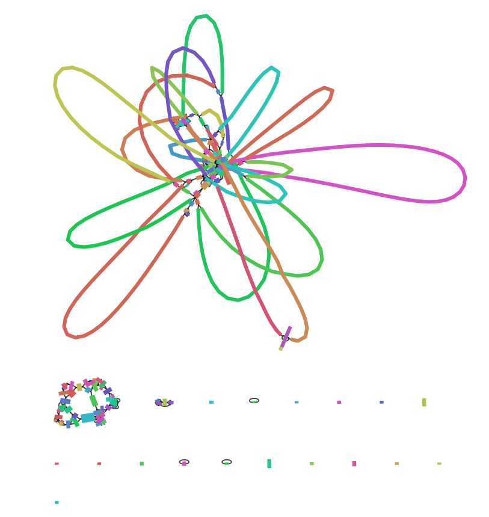
Quase todo o genoma forma um único componente: os contigs longos (as "pétalas") saem e voltam a um emaranhado central. Esse centro são as repetições compartilhadas entre cromossomos (retrotransposons Ty, rDNA, subtelômeros): como a mesma sequência aparece em vários lugares, o grafo passa por ela várias vezes, e o Flye encerra os contigs nas bordas dessas regiões. Abaixo, ficam alguns componentes pequenos e isolados.
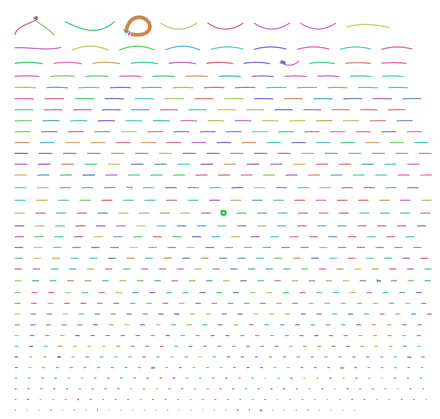
Com pouca cobertura, o grafo se desfaz em centenas de pedaços soltos, sem ligações entre si (756 segmentos e só 57 ligações, contra 153 segmentos e 292 ligações na Scer1). Não há reads suficientes para atravessar as regiões difíceis e conectar os pedaços: cada segmento vira um contig curto.
O Hifiasm também gera grafos (6.Montagem-hifiasm/*.p_ctg.gfa), que podem ser abertos da mesma forma.
Grafos pré-computados
Se não tiver acesso ao servidor, baixe os grafos desta rodada e abra no Bandage: Scer1 Flye · Scer2 Flye · Scer1 Hifiasm · Scer2 Hifiasm
Checklist da Etapa 6¶
- Tenho
assembly.fastapara Scer1 e Scer2 em5.Montagem-Flye/
Etapa 7 — Montagem com Hifiasm¶
O Hifiasm foi desenvolvido para dados HiFi (PacBio), mas tem suporte para Nanopore via --ont. Usa correção de erros baseada em overlap, geralmente gerando menos contigs que o Flye.
Comando
mkdir 6.Montagem-hifiasm
hifiasm -o 6.Montagem-hifiasm/Scer1_q10_l500_hifiasm -t 12 --primary --write-ec --ont 2.Filtragem-dadosbrutos/Scer1_q10_l500.fastq.gz 2> 6.Montagem-hifiasm/Scer1_q10_l500_hifiasm.log
hifiasm -o 6.Montagem-hifiasm/Scer2_q10_l500_hifiasm -t 12 --primary --write-ec --ont 2.Filtragem-dadosbrutos/Scer2_q10_l500.fastq.gz 2> 6.Montagem-hifiasm/Scer2_q10_l500_hifiasm.log
Ver saída do comando
### Scer1
$ hifiasm -o 6.Montagem-hifiasm/Scer1_q10_l500_hifiasm -t 12 --primary --write-ec --ont 2.Filtragem-dadosbrutos/Scer1_q10_l500.fastq.gz 2> 6.Montagem-hifiasm/Scer1_q10_l500_hifiasm.log
### Scer2
$ hifiasm -o 6.Montagem-hifiasm/Scer2_q10_l500_hifiasm -t 12 --primary --write-ec --ont 2.Filtragem-dadosbrutos/Scer2_q10_l500.fastq.gz 2> 6.Montagem-hifiasm/Scer2_q10_l500_hifiasm.log
Converter o GFA para FASTA¶
awk '/^S/{print ">"$2"\n"$3}' 6.Montagem-hifiasm/Scer1_q10_l500_hifiasm.p_ctg.gfa > 6.Montagem-hifiasm/Scer1_q10_l500_hifiasm.p_ctg.fa
awk '/^S/{print ">"$2"\n"$3}' 6.Montagem-hifiasm/Scer2_q10_l500_hifiasm.p_ctg.gfa > 6.Montagem-hifiasm/Scer2_q10_l500_hifiasm.p_ctg.fa
FASTAs disponíveis no repositório
Checklist da Etapa 7¶
- Tenho
Scer1_q10_l500_hifiasm.p_ctg.faeScer2_q10_l500_hifiasm.p_ctg.fa
Etapa 8 — Montagem com NextDenovo¶
O NextDenovo faz uma etapa de correção de erros nas reads (baseada em sobreposições entre elas) antes da montagem propriamente dita, o que ajuda a compensar reads mais ruidosas ou com cobertura mais baixa. Para rodar o NextDenovo, primeiro precisamos preparar um arquivo de configuração (run.cfg).
Criar o arquivo de configuração
mkdir 7.Montagem-NextDenovo/
mkdir 7.Montagem-NextDenovo/Scer1_q10_l500
realpath 2.Filtragem-dadosbrutos/Scer1_q10_l500.fastq.gz > 7.Montagem-NextDenovo/Scer1_q10_l500/input.fofn
cp /home/lgbio/programas/NextDenovo/doc/run.cfg 7.Montagem-NextDenovo/Scer1_q10_l500/.
nano 7.Montagem-NextDenovo/Scer1_q10_l500/run.cfg
run.cfg alterando os seguintes parâmetros
Comando para rodar:
Ver saída do comando
$ nextDenovo 7.Montagem-NextDenovo/Scer1_q10_l500/run.cfg
[2423043 INFO] 2026-11-16 20:46:53 NextDenovo start...
[2423043 INFO] 2026-11-16 20:46:53 version:2.5.2 logfile:pid2423043.log.info
[2423043 WARNING] 2026-11-16 20:46:53 Re-write workdir
[2423043 INFO] 2026-11-16 20:46:53 mkdir: /media/hd16-databases/usuarios/renatadias/curso-nanopore-nov26/7.Montagem-NextDenovo/Scer1_q10_l500/01_rundir
[2423043 INFO] 2026-11-16 20:46:53 mkdir: /media/hd16-databases/usuarios/renatadias/curso-nanopore-nov26/7.Montagem-NextDenovo/Scer1_q10_l500/01_rundir/01.raw_align
[2423043 INFO] 2026-11-16 20:46:53 mkdir: /media/hd16-databases/usuarios/renatadias/curso-nanopore-nov26/7.Montagem-NextDenovo/Scer1_q10_l500/01_rundir/02.cns_align
[2423043 INFO] 2026-11-16 20:46:53 mkdir: /media/hd16-databases/usuarios/renatadias/curso-nanopore-nov26/7.Montagem-NextDenovo/Scer1_q10_l500/01_rundir/03.ctg_graph
[2423043 INFO] 2026-11-16 20:46:58 Total jobs: 1
[2423043 INFO] 2026-11-16 20:46:58 Submitted jobID:[2423049] jobCmd:[/media/hd16-databases/usuarios/renatadias/curso-nanopore-nov26/7.Montagem-NextDenovo/Scer1_q10_l500/01_rundir/01.raw_align/01.db_stat.sh.work/db_stat1/nextDenovo.sh] in the local_cycle.
[2423043 INFO] 2026-11-16 20:47:07 db_stat done
[2423043 INFO] 2026-11-16 20:47:07 updated options:
rerun: 3
task: all
deltmp: 1
rewrite: 1
read_type: ont
job_type: local
input_type: raw
read_cutoff: 1k
seed_depth: 25.0
pa_correction: 3
seed_cutfiles: 3
genome_size: 12m
parallel_jobs: 20
seed_cutoff: 7803
blocksize: 28263802
job_prefix: nextDenovo
ctg_cns_options: -p 15
nextgraph_options: -a 1
sort_options: -m 20g -t 15 -k 40
minimap2_options_map: -x map-ont
minimap2_options_raw: -t 8 -x ava-ont
correction_options: -p 15 -max_lq_length 10000 -r ont -min_len_seed 3901
minimap2_options_cns: -t 8 -x ava-ont -k 17 -w 17 --minlen 780 --maxhan1 3901
workdir: /media/hd16-databases/usuarios/renatadias/curso-nanopore-nov26/7.Montagem-NextDenovo/Scer1_q10_l500/01_rundir
input_fofn: /media/hd16-databases/usuarios/renatadias/curso-nanopore-nov26/7.Montagem-NextDenovo/Scer1_q10_l500/input.fofn
raw_aligndir: /media/hd16-databases/usuarios/renatadias/curso-nanopore-nov26/7.Montagem-NextDenovo/Scer1_q10_l500/01_rundir/01.raw_align
cns_aligndir: /media/hd16-databases/usuarios/renatadias/curso-nanopore-nov26/7.Montagem-NextDenovo/Scer1_q10_l500/01_rundir/02.cns_align
ctg_graphdir: /media/hd16-databases/usuarios/renatadias/curso-nanopore-nov26/7.Montagem-NextDenovo/Scer1_q10_l500/01_rundir/03.ctg_graph
[2423043 INFO] 2026-11-16 20:47:07 summary of input data:
file: /media/hd16-databases/usuarios/renatadias/curso-nanopore-nov26/7.Montagem-NextDenovo/Scer1_q10_l500/01_rundir/01.raw_align/input.reads.stat
[Read length stat]
Types Count (#) Length (bp)
N10 3858 15868
N20 9732 11734
N30 17362 9253
N40 26905 7470
N50 38677 6060
N60 53234 4879
N70 71506 3834
N80 95244 2877
N90 128373 1956
Types Count (#) Bases (bp) Depth (X)
Raw 230437 824955177 68.75
Filtered 46851 34206736 2.85
Clean 183586 790748441 65.90
*Suggested seed_cutoff (genome size: 12.00Mb, expected seed depth: 45, real seed depth: 25.00): 7803 bp
*NOTE: The read/seed length is too short, and the assembly result is unexpected and please check the assembly quality carefully. Of course, it's better to sequencing more longer reads and try again.
[2423043 INFO] 2026-11-16 20:47:12 Total jobs: 1
[2423043 INFO] 2026-11-16 20:47:12 Submitted jobID:[2423165] jobCmd:[/media/hd16-databases/usuarios/renatadias/curso-nanopore-nov26/7.Montagem-NextDenovo/Scer1_q10_l500/01_rundir/01.raw_align/02.db_split.sh.work/db_split1/nextDenovo.sh] in the local_cycle.
[2423043 INFO] 2026-11-16 20:47:22 db_split done
[2423043 INFO] 2026-11-16 20:47:22 Total jobs: 60
[2423043 INFO] 2026-11-16 20:47:22 Submitted jobID:[2423205] jobCmd:[/media/hd16-databases/usuarios/renatadias/curso-nanopore-nov26/7.Montagem-NextDenovo/Scer1_q10_l500/01_rundir/01.raw_align/03.raw_align.sh.work/raw_align01/nextDenovo.sh] in the local_cycle.
[2423043 INFO] 2026-11-16 20:47:23 Submitted jobID:[2423211] jobCmd:[/media/hd16-databases/usuarios/renatadias/curso-nanopore-nov26/7.Montagem-NextDenovo/Scer1_q10_l500/01_rundir/01.raw_align/03.raw_align.sh.work/raw_align02/nextDenovo.sh] in the local_cycle.
[2423043 INFO] 2026-11-16 20:47:23 Submitted jobID:[2423220] jobCmd:[/media/hd16-databases/usuarios/renatadias/curso-nanopore-nov26/7.Montagem-NextDenovo/Scer1_q10_l500/01_rundir/01.raw_align/03.raw_align.sh.work/raw_align03/nextDenovo.sh] in the local_cycle.
[2423043 INFO] 2026-11-16 20:47:24 Submitted jobID:[2423229] jobCmd:[/media/hd16-databases/usuarios/renatadias/curso-nanopore-nov26/7.Montagem-NextDenovo/Scer1_q10_l500/01_rundir/01.raw_align/03.raw_align.sh.work/raw_align04/nextDenovo.sh] in the local_cycle.
[2423043 INFO] 2026-11-16 20:47:24 Submitted jobID:[2423243] jobCmd:[/media/hd16-databases/usuarios/renatadias/curso-nanopore-nov26/7.Montagem-NextDenovo/Scer1_q10_l500/01_rundir/01.raw_align/03.raw_align.sh.work/raw_align05/nextDenovo.sh] in the local_cycle.
[2423043 INFO] 2026-11-16 20:47:25 Submitted jobID:[2423261] jobCmd:[/media/hd16-databases/usuarios/renatadias/curso-nanopore-nov26/7.Montagem-NextDenovo/Scer1_q10_l500/01_rundir/01.raw_align/03.raw_align.sh.work/raw_align06/nextDenovo.sh] in the local_cycle.
[2423043 INFO] 2026-11-16 20:47:25 Submitted jobID:[2423270] jobCmd:[/media/hd16-databases/usuarios/renatadias/curso-nanopore-nov26/7.Montagem-NextDenovo/Scer1_q10_l500/01_rundir/01.raw_align/03.raw_align.sh.work/raw_align07/nextDenovo.sh] in the local_cycle.
[2423043 INFO] 2026-11-16 20:47:26 Submitted jobID:[2423280] jobCmd:[/media/hd16-databases/usuarios/renatadias/curso-nanopore-nov26/7.Montagem-NextDenovo/Scer1_q10_l500/01_rundir/01.raw_align/03.raw_align.sh.work/raw_align08/nextDenovo.sh] in the local_cycle.
[2423043 INFO] 2026-11-16 20:47:26 Submitted jobID:[2423302] jobCmd:[/media/hd16-databases/usuarios/renatadias/curso-nanopore-nov26/7.Montagem-NextDenovo/Scer1_q10_l500/01_rundir/01.raw_align/03.raw_align.sh.work/raw_align09/nextDenovo.sh] in the local_cycle.
[2423043 INFO] 2026-11-16 20:47:27 Submitted jobID:[2423314] jobCmd:[/media/hd16-databases/usuarios/renatadias/curso-nanopore-nov26/7.Montagem-NextDenovo/Scer1_q10_l500/01_rundir/01.raw_align/03.raw_align.sh.work/raw_align10/nextDenovo.sh] in the local_cycle.
[2423043 INFO] 2026-11-16 20:47:27 Submitted jobID:[2423348] jobCmd:[/media/hd16-databases/usuarios/renatadias/curso-nanopore-nov26/7.Montagem-NextDenovo/Scer1_q10_l500/01_rundir/01.raw_align/03.raw_align.sh.work/raw_align11/nextDenovo.sh] in the local_cycle.
[2423043 INFO] 2026-11-16 20:47:28 Submitted jobID:[2423360] jobCmd:[/media/hd16-databases/usuarios/renatadias/curso-nanopore-nov26/7.Montagem-NextDenovo/Scer1_q10_l500/01_rundir/01.raw_align/03.raw_align.sh.work/raw_align12/nextDenovo.sh] in the local_cycle.
[2423043 INFO] 2026-11-16 20:47:28 Submitted jobID:[2423376] jobCmd:[/media/hd16-databases/usuarios/renatadias/curso-nanopore-nov26/7.Montagem-NextDenovo/Scer1_q10_l500/01_rundir/01.raw_align/03.raw_align.sh.work/raw_align13/nextDenovo.sh] in the local_cycle.
[2423043 INFO] 2026-11-16 20:47:29 Submitted jobID:[2423385] jobCmd:[/media/hd16-databases/usuarios/renatadias/curso-nanopore-nov26/7.Montagem-NextDenovo/Scer1_q10_l500/01_rundir/01.raw_align/03.raw_align.sh.work/raw_align14/nextDenovo.sh] in the local_cycle.
[2423043 INFO] 2026-11-16 20:47:29 Submitted jobID:[2423402] jobCmd:[/media/hd16-databases/usuarios/renatadias/curso-nanopore-nov26/7.Montagem-NextDenovo/Scer1_q10_l500/01_rundir/01.raw_align/03.raw_align.sh.work/raw_align15/nextDenovo.sh] in the local_cycle.
[2423043 INFO] 2026-11-16 20:47:30 Submitted jobID:[2423428] jobCmd:[/media/hd16-databases/usuarios/renatadias/curso-nanopore-nov26/7.Montagem-NextDenovo/Scer1_q10_l500/01_rundir/01.raw_align/03.raw_align.sh.work/raw_align16/nextDenovo.sh] in the local_cycle.
[2423043 INFO] 2026-11-16 20:47:30 Submitted jobID:[2423467] jobCmd:[/media/hd16-databases/usuarios/renatadias/curso-nanopore-nov26/7.Montagem-NextDenovo/Scer1_q10_l500/01_rundir/01.raw_align/03.raw_align.sh.work/raw_align17/nextDenovo.sh] in the local_cycle.
[2423043 INFO] 2026-11-16 20:47:31 Submitted jobID:[2423497] jobCmd:[/media/hd16-databases/usuarios/renatadias/curso-nanopore-nov26/7.Montagem-NextDenovo/Scer1_q10_l500/01_rundir/01.raw_align/03.raw_align.sh.work/raw_align18/nextDenovo.sh] in the local_cycle.
[2423043 INFO] 2026-11-16 20:47:31 Submitted jobID:[2423534] jobCmd:[/media/hd16-databases/usuarios/renatadias/curso-nanopore-nov26/7.Montagem-NextDenovo/Scer1_q10_l500/01_rundir/01.raw_align/03.raw_align.sh.work/raw_align19/nextDenovo.sh] in the local_cycle.
[2423043 INFO] 2026-11-16 20:47:32 Submitted jobID:[2423570] jobCmd:[/media/hd16-databases/usuarios/renatadias/curso-nanopore-nov26/7.Montagem-NextDenovo/Scer1_q10_l500/01_rundir/01.raw_align/03.raw_align.sh.work/raw_align20/nextDenovo.sh] in the local_cycle.
[2423043 INFO] 2026-11-16 20:47:51 Submitted jobID:[2423836] jobCmd:[/media/hd16-databases/usuarios/renatadias/curso-nanopore-nov26/7.Montagem-NextDenovo/Scer1_q10_l500/01_rundir/01.raw_align/03.raw_align.sh.work/raw_align21/nextDenovo.sh] in the local_cycle.
[2423043 INFO] 2026-11-16 20:47:51 Submitted jobID:[2423844] jobCmd:[/media/hd16-databases/usuarios/renatadias/curso-nanopore-nov26/7.Montagem-NextDenovo/Scer1_q10_l500/01_rundir/01.raw_align/03.raw_align.sh.work/raw_align22/nextDenovo.sh] in the local_cycle.
[2423043 INFO] 2026-11-16 20:47:52 Submitted jobID:[2423850] jobCmd:[/media/hd16-databases/usuarios/renatadias/curso-nanopore-nov26/7.Montagem-NextDenovo/Scer1_q10_l500/01_rundir/01.raw_align/03.raw_align.sh.work/raw_align23/nextDenovo.sh] in the local_cycle.
[2423043 INFO] 2026-11-16 20:47:53 Submitted jobID:[2423861] jobCmd:[/media/hd16-databases/usuarios/renatadias/curso-nanopore-nov26/7.Montagem-NextDenovo/Scer1_q10_l500/01_rundir/01.raw_align/03.raw_align.sh.work/raw_align24/nextDenovo.sh] in the local_cycle.
[2423043 INFO] 2026-11-16 20:47:56 Submitted jobID:[2423881] jobCmd:[/media/hd16-databases/usuarios/renatadias/curso-nanopore-nov26/7.Montagem-NextDenovo/Scer1_q10_l500/01_rundir/01.raw_align/03.raw_align.sh.work/raw_align25/nextDenovo.sh] in the local_cycle.
[2423043 INFO] 2026-11-16 20:47:59 Submitted jobID:[2424048] jobCmd:[/media/hd16-databases/usuarios/renatadias/curso-nanopore-nov26/7.Montagem-NextDenovo/Scer1_q10_l500/01_rundir/01.raw_align/03.raw_align.sh.work/raw_align26/nextDenovo.sh] in the local_cycle.
[2423043 INFO] 2026-11-16 20:47:59 Submitted jobID:[2424075] jobCmd:[/media/hd16-databases/usuarios/renatadias/curso-nanopore-nov26/7.Montagem-NextDenovo/Scer1_q10_l500/01_rundir/01.raw_align/03.raw_align.sh.work/raw_align27/nextDenovo.sh] in the local_cycle.
[2423043 INFO] 2026-11-16 20:48:00 Submitted jobID:[2424112] jobCmd:[/media/hd16-databases/usuarios/renatadias/curso-nanopore-nov26/7.Montagem-NextDenovo/Scer1_q10_l500/01_rundir/01.raw_align/03.raw_align.sh.work/raw_align28/nextDenovo.sh] in the local_cycle.
[2423043 INFO] 2026-11-16 20:48:00 Submitted jobID:[2424147] jobCmd:[/media/hd16-databases/usuarios/renatadias/curso-nanopore-nov26/7.Montagem-NextDenovo/Scer1_q10_l500/01_rundir/01.raw_align/03.raw_align.sh.work/raw_align29/nextDenovo.sh] in the local_cycle.
[2423043 INFO] 2026-11-16 20:48:01 Submitted jobID:[2424174] jobCmd:[/media/hd16-databases/usuarios/renatadias/curso-nanopore-nov26/7.Montagem-NextDenovo/Scer1_q10_l500/01_rundir/01.raw_align/03.raw_align.sh.work/raw_align30/nextDenovo.sh] in the local_cycle.
[2423043 INFO] 2026-11-16 20:48:02 Submitted jobID:[2424236] jobCmd:[/media/hd16-databases/usuarios/renatadias/curso-nanopore-nov26/7.Montagem-NextDenovo/Scer1_q10_l500/01_rundir/01.raw_align/03.raw_align.sh.work/raw_align31/nextDenovo.sh] in the local_cycle.
[2423043 INFO] 2026-11-16 20:48:02 Submitted jobID:[2424381] jobCmd:[/media/hd16-databases/usuarios/renatadias/curso-nanopore-nov26/7.Montagem-NextDenovo/Scer1_q10_l500/01_rundir/01.raw_align/03.raw_align.sh.work/raw_align32/nextDenovo.sh] in the local_cycle.
[2423043 INFO] 2026-11-16 20:48:03 Submitted jobID:[2424485] jobCmd:[/media/hd16-databases/usuarios/renatadias/curso-nanopore-nov26/7.Montagem-NextDenovo/Scer1_q10_l500/01_rundir/01.raw_align/03.raw_align.sh.work/raw_align33/nextDenovo.sh] in the local_cycle.
[2423043 INFO] 2026-11-16 20:48:04 Submitted jobID:[2424600] jobCmd:[/media/hd16-databases/usuarios/renatadias/curso-nanopore-nov26/7.Montagem-NextDenovo/Scer1_q10_l500/01_rundir/01.raw_align/03.raw_align.sh.work/raw_align34/nextDenovo.sh] in the local_cycle.
[2423043 INFO] 2026-11-16 20:48:06 Submitted jobID:[2425138] jobCmd:[/media/hd16-databases/usuarios/renatadias/curso-nanopore-nov26/7.Montagem-NextDenovo/Scer1_q10_l500/01_rundir/01.raw_align/03.raw_align.sh.work/raw_align35/nextDenovo.sh] in the local_cycle.
[2423043 INFO] 2026-11-16 20:48:07 Submitted jobID:[2425359] jobCmd:[/media/hd16-databases/usuarios/renatadias/curso-nanopore-nov26/7.Montagem-NextDenovo/Scer1_q10_l500/01_rundir/01.raw_align/03.raw_align.sh.work/raw_align36/nextDenovo.sh] in the local_cycle.
[2423043 INFO] 2026-11-16 20:48:08 Submitted jobID:[2425455] jobCmd:[/media/hd16-databases/usuarios/renatadias/curso-nanopore-nov26/7.Montagem-NextDenovo/Scer1_q10_l500/01_rundir/01.raw_align/03.raw_align.sh.work/raw_align37/nextDenovo.sh] in the local_cycle.
[2423043 INFO] 2026-11-16 20:48:09 Submitted jobID:[2425660] jobCmd:[/media/hd16-databases/usuarios/renatadias/curso-nanopore-nov26/7.Montagem-NextDenovo/Scer1_q10_l500/01_rundir/01.raw_align/03.raw_align.sh.work/raw_align38/nextDenovo.sh] in the local_cycle.
[2423043 INFO] 2026-11-16 20:48:25 Submitted jobID:[2426537] jobCmd:[/media/hd16-databases/usuarios/renatadias/curso-nanopore-nov26/7.Montagem-NextDenovo/Scer1_q10_l500/01_rundir/01.raw_align/03.raw_align.sh.work/raw_align39/nextDenovo.sh] in the local_cycle.
[2423043 INFO] 2026-11-16 20:48:28 Submitted jobID:[2426548] jobCmd:[/media/hd16-databases/usuarios/renatadias/curso-nanopore-nov26/7.Montagem-NextDenovo/Scer1_q10_l500/01_rundir/01.raw_align/03.raw_align.sh.work/raw_align40/nextDenovo.sh] in the local_cycle.
[2423043 INFO] 2026-11-16 20:48:30 Submitted jobID:[2426556] jobCmd:[/media/hd16-databases/usuarios/renatadias/curso-nanopore-nov26/7.Montagem-NextDenovo/Scer1_q10_l500/01_rundir/01.raw_align/03.raw_align.sh.work/raw_align41/nextDenovo.sh] in the local_cycle.
[2423043 INFO] 2026-11-16 20:48:30 Submitted jobID:[2426565] jobCmd:[/media/hd16-databases/usuarios/renatadias/curso-nanopore-nov26/7.Montagem-NextDenovo/Scer1_q10_l500/01_rundir/01.raw_align/03.raw_align.sh.work/raw_align42/nextDenovo.sh] in the local_cycle.
[2423043 INFO] 2026-11-16 20:48:32 Submitted jobID:[2426588] jobCmd:[/media/hd16-databases/usuarios/renatadias/curso-nanopore-nov26/7.Montagem-NextDenovo/Scer1_q10_l500/01_rundir/01.raw_align/03.raw_align.sh.work/raw_align43/nextDenovo.sh] in the local_cycle.
[2423043 INFO] 2026-11-16 20:48:36 Submitted jobID:[2426929] jobCmd:[/media/hd16-databases/usuarios/renatadias/curso-nanopore-nov26/7.Montagem-NextDenovo/Scer1_q10_l500/01_rundir/01.raw_align/03.raw_align.sh.work/raw_align44/nextDenovo.sh] in the local_cycle.
[2423043 INFO] 2026-11-16 20:48:36 Submitted jobID:[2426935] jobCmd:[/media/hd16-databases/usuarios/renatadias/curso-nanopore-nov26/7.Montagem-NextDenovo/Scer1_q10_l500/01_rundir/01.raw_align/03.raw_align.sh.work/raw_align45/nextDenovo.sh] in the local_cycle.
[2423043 INFO] 2026-11-16 20:48:37 Submitted jobID:[2427283] jobCmd:[/media/hd16-databases/usuarios/renatadias/curso-nanopore-nov26/7.Montagem-NextDenovo/Scer1_q10_l500/01_rundir/01.raw_align/03.raw_align.sh.work/raw_align46/nextDenovo.sh] in the local_cycle.
[2423043 INFO] 2026-11-16 20:48:38 Submitted jobID:[2427463] jobCmd:[/media/hd16-databases/usuarios/renatadias/curso-nanopore-nov26/7.Montagem-NextDenovo/Scer1_q10_l500/01_rundir/01.raw_align/03.raw_align.sh.work/raw_align47/nextDenovo.sh] in the local_cycle.
[2423043 INFO] 2026-11-16 20:48:38 Submitted jobID:[2427513] jobCmd:[/media/hd16-databases/usuarios/renatadias/curso-nanopore-nov26/7.Montagem-NextDenovo/Scer1_q10_l500/01_rundir/01.raw_align/03.raw_align.sh.work/raw_align48/nextDenovo.sh] in the local_cycle.
[2423043 INFO] 2026-11-16 20:48:39 Submitted jobID:[2427520] jobCmd:[/media/hd16-databases/usuarios/renatadias/curso-nanopore-nov26/7.Montagem-NextDenovo/Scer1_q10_l500/01_rundir/01.raw_align/03.raw_align.sh.work/raw_align49/nextDenovo.sh] in the local_cycle.
[2423043 INFO] 2026-11-16 20:48:39 Submitted jobID:[2427537] jobCmd:[/media/hd16-databases/usuarios/renatadias/curso-nanopore-nov26/7.Montagem-NextDenovo/Scer1_q10_l500/01_rundir/01.raw_align/03.raw_align.sh.work/raw_align50/nextDenovo.sh] in the local_cycle.
[2423043 INFO] 2026-11-16 20:48:40 Submitted jobID:[2427862] jobCmd:[/media/hd16-databases/usuarios/renatadias/curso-nanopore-nov26/7.Montagem-NextDenovo/Scer1_q10_l500/01_rundir/01.raw_align/03.raw_align.sh.work/raw_align51/nextDenovo.sh] in the local_cycle.
[2423043 INFO] 2026-11-16 20:48:41 Submitted jobID:[2427886] jobCmd:[/media/hd16-databases/usuarios/renatadias/curso-nanopore-nov26/7.Montagem-NextDenovo/Scer1_q10_l500/01_rundir/01.raw_align/03.raw_align.sh.work/raw_align52/nextDenovo.sh] in the local_cycle.
[2423043 INFO] 2026-11-16 20:48:41 Submitted jobID:[2427900] jobCmd:[/media/hd16-databases/usuarios/renatadias/curso-nanopore-nov26/7.Montagem-NextDenovo/Scer1_q10_l500/01_rundir/01.raw_align/03.raw_align.sh.work/raw_align53/nextDenovo.sh] in the local_cycle.
[2423043 INFO] 2026-11-16 20:48:42 Submitted jobID:[2427943] jobCmd:[/media/hd16-databases/usuarios/renatadias/curso-nanopore-nov26/7.Montagem-NextDenovo/Scer1_q10_l500/01_rundir/01.raw_align/03.raw_align.sh.work/raw_align54/nextDenovo.sh] in the local_cycle.
[2423043 INFO] 2026-11-16 20:48:43 Submitted jobID:[2427985] jobCmd:[/media/hd16-databases/usuarios/renatadias/curso-nanopore-nov26/7.Montagem-NextDenovo/Scer1_q10_l500/01_rundir/01.raw_align/03.raw_align.sh.work/raw_align55/nextDenovo.sh] in the local_cycle.
[2423043 INFO] 2026-11-16 20:48:46 Submitted jobID:[2428093] jobCmd:[/media/hd16-databases/usuarios/renatadias/curso-nanopore-nov26/7.Montagem-NextDenovo/Scer1_q10_l500/01_rundir/01.raw_align/03.raw_align.sh.work/raw_align56/nextDenovo.sh] in the local_cycle.
[2423043 INFO] 2026-11-16 20:48:59 Submitted jobID:[2428246] jobCmd:[/media/hd16-databases/usuarios/renatadias/curso-nanopore-nov26/7.Montagem-NextDenovo/Scer1_q10_l500/01_rundir/01.raw_align/03.raw_align.sh.work/raw_align57/nextDenovo.sh] in the local_cycle.
[2423043 INFO] 2026-11-16 20:49:05 Submitted jobID:[2428261] jobCmd:[/media/hd16-databases/usuarios/renatadias/curso-nanopore-nov26/7.Montagem-NextDenovo/Scer1_q10_l500/01_rundir/01.raw_align/03.raw_align.sh.work/raw_align58/nextDenovo.sh] in the local_cycle.
[2423043 INFO] 2026-11-16 20:49:05 Submitted jobID:[2428267] jobCmd:[/media/hd16-databases/usuarios/renatadias/curso-nanopore-nov26/7.Montagem-NextDenovo/Scer1_q10_l500/01_rundir/01.raw_align/03.raw_align.sh.work/raw_align59/nextDenovo.sh] in the local_cycle.
[2423043 INFO] 2026-11-16 20:49:08 Submitted jobID:[2428290] jobCmd:[/media/hd16-databases/usuarios/renatadias/curso-nanopore-nov26/7.Montagem-NextDenovo/Scer1_q10_l500/01_rundir/01.raw_align/03.raw_align.sh.work/raw_align60/nextDenovo.sh] in the local_cycle.
[2423043 INFO] 2026-11-16 20:49:57 raw_align done
[2423043 INFO] 2026-11-16 20:50:02 Total jobs: 3
[2423043 INFO] 2026-11-16 20:50:02 Submitted jobID:[2428443] jobCmd:[/media/hd16-databases/usuarios/renatadias/curso-nanopore-nov26/7.Montagem-NextDenovo/Scer1_q10_l500/01_rundir/01.raw_align/04.sort_align.sh.work/sort_align1/nextDenovo.sh] in the local_cycle.
[2423043 INFO] 2026-11-16 20:50:03 Submitted jobID:[2428455] jobCmd:[/media/hd16-databases/usuarios/renatadias/curso-nanopore-nov26/7.Montagem-NextDenovo/Scer1_q10_l500/01_rundir/01.raw_align/04.sort_align.sh.work/sort_align2/nextDenovo.sh] in the local_cycle.
[2423043 INFO] 2026-11-16 20:50:03 Submitted jobID:[2428462] jobCmd:[/media/hd16-databases/usuarios/renatadias/curso-nanopore-nov26/7.Montagem-NextDenovo/Scer1_q10_l500/01_rundir/01.raw_align/04.sort_align.sh.work/sort_align3/nextDenovo.sh] in the local_cycle.
[2423043 INFO] 2026-11-16 20:50:16 sort_align done
[2423043 INFO] 2026-11-16 20:50:16 remove temporary result: /media/hd16-databases/usuarios/renatadias/curso-nanopore-nov26/7.Montagem-NextDenovo/Scer1_q10_l500/01_rundir/01.raw_align/03.raw_align.sh.work/raw_align01/input.seed.001.2bit.0.ovl
[2423043 INFO] 2026-11-16 20:50:16 remove temporary result: /media/hd16-databases/usuarios/renatadias/curso-nanopore-nov26/7.Montagem-NextDenovo/Scer1_q10_l500/01_rundir/01.raw_align/03.raw_align.sh.work/raw_align02/input.seed.001.2bit.1.ovl
[2423043 INFO] 2026-11-16 20:50:16 remove temporary result: /media/hd16-databases/usuarios/renatadias/curso-nanopore-nov26/7.Montagem-NextDenovo/Scer1_q10_l500/01_rundir/01.raw_align/03.raw_align.sh.work/raw_align03/input.seed.001.2bit.2.ovl
[2423043 INFO] 2026-11-16 20:50:16 remove temporary result: /media/hd16-databases/usuarios/renatadias/curso-nanopore-nov26/7.Montagem-NextDenovo/Scer1_q10_l500/01_rundir/01.raw_align/03.raw_align.sh.work/raw_align04/input.seed.001.2bit.3.ovl
[2423043 INFO] 2026-11-16 20:50:16 remove temporary result: /media/hd16-databases/usuarios/renatadias/curso-nanopore-nov26/7.Montagem-NextDenovo/Scer1_q10_l500/01_rundir/01.raw_align/03.raw_align.sh.work/raw_align05/input.seed.001.2bit.4.ovl
[2423043 INFO] 2026-11-16 20:50:16 remove temporary result: /media/hd16-databases/usuarios/renatadias/curso-nanopore-nov26/7.Montagem-NextDenovo/Scer1_q10_l500/01_rundir/01.raw_align/03.raw_align.sh.work/raw_align06/input.seed.001.2bit.5.ovl
[2423043 INFO] 2026-11-16 20:50:16 remove temporary result: /media/hd16-databases/usuarios/renatadias/curso-nanopore-nov26/7.Montagem-NextDenovo/Scer1_q10_l500/01_rundir/01.raw_align/03.raw_align.sh.work/raw_align07/input.seed.001.2bit.6.ovl
[2423043 INFO] 2026-11-16 20:50:16 remove temporary result: /media/hd16-databases/usuarios/renatadias/curso-nanopore-nov26/7.Montagem-NextDenovo/Scer1_q10_l500/01_rundir/01.raw_align/03.raw_align.sh.work/raw_align08/input.seed.001.2bit.7.ovl
[2423043 INFO] 2026-11-16 20:50:16 remove temporary result: /media/hd16-databases/usuarios/renatadias/curso-nanopore-nov26/7.Montagem-NextDenovo/Scer1_q10_l500/01_rundir/01.raw_align/03.raw_align.sh.work/raw_align09/input.seed.001.2bit.8.ovl
[2423043 INFO] 2026-11-16 20:50:16 remove temporary result: /media/hd16-databases/usuarios/renatadias/curso-nanopore-nov26/7.Montagem-NextDenovo/Scer1_q10_l500/01_rundir/01.raw_align/03.raw_align.sh.work/raw_align10/input.seed.001.2bit.9.ovl
[2423043 INFO] 2026-11-16 20:50:16 remove temporary result: /media/hd16-databases/usuarios/renatadias/curso-nanopore-nov26/7.Montagem-NextDenovo/Scer1_q10_l500/01_rundir/01.raw_align/03.raw_align.sh.work/raw_align11/input.seed.001.2bit.10.ovl
[2423043 INFO] 2026-11-16 20:50:16 remove temporary result: /media/hd16-databases/usuarios/renatadias/curso-nanopore-nov26/7.Montagem-NextDenovo/Scer1_q10_l500/01_rundir/01.raw_align/03.raw_align.sh.work/raw_align12/input.seed.001.2bit.11.ovl
[2423043 INFO] 2026-11-16 20:50:16 remove temporary result: /media/hd16-databases/usuarios/renatadias/curso-nanopore-nov26/7.Montagem-NextDenovo/Scer1_q10_l500/01_rundir/01.raw_align/03.raw_align.sh.work/raw_align13/input.seed.001.2bit.12.ovl
[2423043 INFO] 2026-11-16 20:50:16 remove temporary result: /media/hd16-databases/usuarios/renatadias/curso-nanopore-nov26/7.Montagem-NextDenovo/Scer1_q10_l500/01_rundir/01.raw_align/03.raw_align.sh.work/raw_align14/input.seed.001.2bit.13.ovl
[2423043 INFO] 2026-11-16 20:50:16 remove temporary result: /media/hd16-databases/usuarios/renatadias/curso-nanopore-nov26/7.Montagem-NextDenovo/Scer1_q10_l500/01_rundir/01.raw_align/03.raw_align.sh.work/raw_align15/input.seed.001.2bit.14.ovl
[2423043 INFO] 2026-11-16 20:50:16 remove temporary result: /media/hd16-databases/usuarios/renatadias/curso-nanopore-nov26/7.Montagem-NextDenovo/Scer1_q10_l500/01_rundir/01.raw_align/03.raw_align.sh.work/raw_align16/input.seed.001.2bit.15.ovl
[2423043 INFO] 2026-11-16 20:50:16 remove temporary result: /media/hd16-databases/usuarios/renatadias/curso-nanopore-nov26/7.Montagem-NextDenovo/Scer1_q10_l500/01_rundir/01.raw_align/03.raw_align.sh.work/raw_align17/input.seed.001.2bit.16.ovl
[2423043 INFO] 2026-11-16 20:50:16 remove temporary result: /media/hd16-databases/usuarios/renatadias/curso-nanopore-nov26/7.Montagem-NextDenovo/Scer1_q10_l500/01_rundir/01.raw_align/03.raw_align.sh.work/raw_align18/input.seed.001.2bit.17.ovl
[2423043 INFO] 2026-11-16 20:50:16 remove temporary result: /media/hd16-databases/usuarios/renatadias/curso-nanopore-nov26/7.Montagem-NextDenovo/Scer1_q10_l500/01_rundir/01.raw_align/03.raw_align.sh.work/raw_align19/input.seed.001.2bit.18.ovl
[2423043 INFO] 2026-11-16 20:50:16 remove temporary result: /media/hd16-databases/usuarios/renatadias/curso-nanopore-nov26/7.Montagem-NextDenovo/Scer1_q10_l500/01_rundir/01.raw_align/03.raw_align.sh.work/raw_align20/input.seed.001.2bit.19.ovl
[2423043 INFO] 2026-11-16 20:50:16 remove temporary result: /media/hd16-databases/usuarios/renatadias/curso-nanopore-nov26/7.Montagem-NextDenovo/Scer1_q10_l500/01_rundir/01.raw_align/03.raw_align.sh.work/raw_align21/input.seed.001.2bit.20.ovl
[2423043 INFO] 2026-11-16 20:50:16 remove temporary result: /media/hd16-databases/usuarios/renatadias/curso-nanopore-nov26/7.Montagem-NextDenovo/Scer1_q10_l500/01_rundir/01.raw_align/03.raw_align.sh.work/raw_align20/input.seed.003.2bit.19.ovl
[2423043 INFO] 2026-11-16 20:50:16 remove temporary result: /media/hd16-databases/usuarios/renatadias/curso-nanopore-nov26/7.Montagem-NextDenovo/Scer1_q10_l500/01_rundir/01.raw_align/03.raw_align.sh.work/raw_align22/input.seed.003.2bit.21.ovl
[2423043 INFO] 2026-11-16 20:50:16 remove temporary result: /media/hd16-databases/usuarios/renatadias/curso-nanopore-nov26/7.Montagem-NextDenovo/Scer1_q10_l500/01_rundir/01.raw_align/03.raw_align.sh.work/raw_align23/input.seed.003.2bit.22.ovl
[2423043 INFO] 2026-11-16 20:50:16 remove temporary result: /media/hd16-databases/usuarios/renatadias/curso-nanopore-nov26/7.Montagem-NextDenovo/Scer1_q10_l500/01_rundir/01.raw_align/03.raw_align.sh.work/raw_align24/input.seed.003.2bit.23.ovl
[2423043 INFO] 2026-11-16 20:50:16 remove temporary result: /media/hd16-databases/usuarios/renatadias/curso-nanopore-nov26/7.Montagem-NextDenovo/Scer1_q10_l500/01_rundir/01.raw_align/03.raw_align.sh.work/raw_align25/input.seed.003.2bit.24.ovl
[2423043 INFO] 2026-11-16 20:50:16 remove temporary result: /media/hd16-databases/usuarios/renatadias/curso-nanopore-nov26/7.Montagem-NextDenovo/Scer1_q10_l500/01_rundir/01.raw_align/03.raw_align.sh.work/raw_align26/input.seed.003.2bit.25.ovl
[2423043 INFO] 2026-11-16 20:50:16 remove temporary result: /media/hd16-databases/usuarios/renatadias/curso-nanopore-nov26/7.Montagem-NextDenovo/Scer1_q10_l500/01_rundir/01.raw_align/03.raw_align.sh.work/raw_align27/input.seed.003.2bit.26.ovl
[2423043 INFO] 2026-11-16 20:50:16 remove temporary result: /media/hd16-databases/usuarios/renatadias/curso-nanopore-nov26/7.Montagem-NextDenovo/Scer1_q10_l500/01_rundir/01.raw_align/03.raw_align.sh.work/raw_align28/input.seed.003.2bit.27.ovl
[2423043 INFO] 2026-11-16 20:50:16 remove temporary result: /media/hd16-databases/usuarios/renatadias/curso-nanopore-nov26/7.Montagem-NextDenovo/Scer1_q10_l500/01_rundir/01.raw_align/03.raw_align.sh.work/raw_align29/input.seed.003.2bit.28.ovl
[2423043 INFO] 2026-11-16 20:50:16 remove temporary result: /media/hd16-databases/usuarios/renatadias/curso-nanopore-nov26/7.Montagem-NextDenovo/Scer1_q10_l500/01_rundir/01.raw_align/03.raw_align.sh.work/raw_align30/input.seed.003.2bit.29.ovl
[2423043 INFO] 2026-11-16 20:50:16 remove temporary result: /media/hd16-databases/usuarios/renatadias/curso-nanopore-nov26/7.Montagem-NextDenovo/Scer1_q10_l500/01_rundir/01.raw_align/03.raw_align.sh.work/raw_align31/input.seed.003.2bit.30.ovl
[2423043 INFO] 2026-11-16 20:50:16 remove temporary result: /media/hd16-databases/usuarios/renatadias/curso-nanopore-nov26/7.Montagem-NextDenovo/Scer1_q10_l500/01_rundir/01.raw_align/03.raw_align.sh.work/raw_align32/input.seed.003.2bit.31.ovl
[2423043 INFO] 2026-11-16 20:50:16 remove temporary result: /media/hd16-databases/usuarios/renatadias/curso-nanopore-nov26/7.Montagem-NextDenovo/Scer1_q10_l500/01_rundir/01.raw_align/03.raw_align.sh.work/raw_align33/input.seed.003.2bit.32.ovl
[2423043 INFO] 2026-11-16 20:50:16 remove temporary result: /media/hd16-databases/usuarios/renatadias/curso-nanopore-nov26/7.Montagem-NextDenovo/Scer1_q10_l500/01_rundir/01.raw_align/03.raw_align.sh.work/raw_align34/input.seed.003.2bit.33.ovl
[2423043 INFO] 2026-11-16 20:50:16 remove temporary result: /media/hd16-databases/usuarios/renatadias/curso-nanopore-nov26/7.Montagem-NextDenovo/Scer1_q10_l500/01_rundir/01.raw_align/03.raw_align.sh.work/raw_align35/input.seed.003.2bit.34.ovl
[2423043 INFO] 2026-11-16 20:50:16 remove temporary result: /media/hd16-databases/usuarios/renatadias/curso-nanopore-nov26/7.Montagem-NextDenovo/Scer1_q10_l500/01_rundir/01.raw_align/03.raw_align.sh.work/raw_align36/input.seed.003.2bit.35.ovl
[2423043 INFO] 2026-11-16 20:50:16 remove temporary result: /media/hd16-databases/usuarios/renatadias/curso-nanopore-nov26/7.Montagem-NextDenovo/Scer1_q10_l500/01_rundir/01.raw_align/03.raw_align.sh.work/raw_align37/input.seed.003.2bit.36.ovl
[2423043 INFO] 2026-11-16 20:50:16 remove temporary result: /media/hd16-databases/usuarios/renatadias/curso-nanopore-nov26/7.Montagem-NextDenovo/Scer1_q10_l500/01_rundir/01.raw_align/03.raw_align.sh.work/raw_align38/input.seed.003.2bit.37.ovl
[2423043 INFO] 2026-11-16 20:50:16 remove temporary result: /media/hd16-databases/usuarios/renatadias/curso-nanopore-nov26/7.Montagem-NextDenovo/Scer1_q10_l500/01_rundir/01.raw_align/03.raw_align.sh.work/raw_align39/input.seed.003.2bit.38.ovl
[2423043 INFO] 2026-11-16 20:50:16 remove temporary result: /media/hd16-databases/usuarios/renatadias/curso-nanopore-nov26/7.Montagem-NextDenovo/Scer1_q10_l500/01_rundir/01.raw_align/03.raw_align.sh.work/raw_align40/input.seed.003.2bit.39.ovl
[2423043 INFO] 2026-11-16 20:50:16 remove temporary result: /media/hd16-databases/usuarios/renatadias/curso-nanopore-nov26/7.Montagem-NextDenovo/Scer1_q10_l500/01_rundir/01.raw_align/03.raw_align.sh.work/raw_align41/input.seed.003.2bit.40.ovl
[2423043 INFO] 2026-11-16 20:50:16 remove temporary result: /media/hd16-databases/usuarios/renatadias/curso-nanopore-nov26/7.Montagem-NextDenovo/Scer1_q10_l500/01_rundir/01.raw_align/03.raw_align.sh.work/raw_align21/input.seed.002.2bit.20.ovl
[2423043 INFO] 2026-11-16 20:50:16 remove temporary result: /media/hd16-databases/usuarios/renatadias/curso-nanopore-nov26/7.Montagem-NextDenovo/Scer1_q10_l500/01_rundir/01.raw_align/03.raw_align.sh.work/raw_align41/input.seed.002.2bit.40.ovl
[2423043 INFO] 2026-11-16 20:50:16 remove temporary result: /media/hd16-databases/usuarios/renatadias/curso-nanopore-nov26/7.Montagem-NextDenovo/Scer1_q10_l500/01_rundir/01.raw_align/03.raw_align.sh.work/raw_align42/input.seed.002.2bit.41.ovl
[2423043 INFO] 2026-11-16 20:50:16 remove temporary result: /media/hd16-databases/usuarios/renatadias/curso-nanopore-nov26/7.Montagem-NextDenovo/Scer1_q10_l500/01_rundir/01.raw_align/03.raw_align.sh.work/raw_align43/input.seed.002.2bit.42.ovl
[2423043 INFO] 2026-11-16 20:50:16 remove temporary result: /media/hd16-databases/usuarios/renatadias/curso-nanopore-nov26/7.Montagem-NextDenovo/Scer1_q10_l500/01_rundir/01.raw_align/03.raw_align.sh.work/raw_align44/input.seed.002.2bit.43.ovl
[2423043 INFO] 2026-11-16 20:50:16 remove temporary result: /media/hd16-databases/usuarios/renatadias/curso-nanopore-nov26/7.Montagem-NextDenovo/Scer1_q10_l500/01_rundir/01.raw_align/03.raw_align.sh.work/raw_align45/input.seed.002.2bit.44.ovl
[2423043 INFO] 2026-11-16 20:50:16 remove temporary result: /media/hd16-databases/usuarios/renatadias/curso-nanopore-nov26/7.Montagem-NextDenovo/Scer1_q10_l500/01_rundir/01.raw_align/03.raw_align.sh.work/raw_align46/input.seed.002.2bit.45.ovl
[2423043 INFO] 2026-11-16 20:50:16 remove temporary result: /media/hd16-databases/usuarios/renatadias/curso-nanopore-nov26/7.Montagem-NextDenovo/Scer1_q10_l500/01_rundir/01.raw_align/03.raw_align.sh.work/raw_align47/input.seed.002.2bit.46.ovl
[2423043 INFO] 2026-11-16 20:50:16 remove temporary result: /media/hd16-databases/usuarios/renatadias/curso-nanopore-nov26/7.Montagem-NextDenovo/Scer1_q10_l500/01_rundir/01.raw_align/03.raw_align.sh.work/raw_align48/input.seed.002.2bit.47.ovl
[2423043 INFO] 2026-11-16 20:50:16 remove temporary result: /media/hd16-databases/usuarios/renatadias/curso-nanopore-nov26/7.Montagem-NextDenovo/Scer1_q10_l500/01_rundir/01.raw_align/03.raw_align.sh.work/raw_align49/input.seed.002.2bit.48.ovl
[2423043 INFO] 2026-11-16 20:50:16 remove temporary result: /media/hd16-databases/usuarios/renatadias/curso-nanopore-nov26/7.Montagem-NextDenovo/Scer1_q10_l500/01_rundir/01.raw_align/03.raw_align.sh.work/raw_align50/input.seed.002.2bit.49.ovl
[2423043 INFO] 2026-11-16 20:50:16 remove temporary result: /media/hd16-databases/usuarios/renatadias/curso-nanopore-nov26/7.Montagem-NextDenovo/Scer1_q10_l500/01_rundir/01.raw_align/03.raw_align.sh.work/raw_align51/input.seed.002.2bit.50.ovl
[2423043 INFO] 2026-11-16 20:50:16 remove temporary result: /media/hd16-databases/usuarios/renatadias/curso-nanopore-nov26/7.Montagem-NextDenovo/Scer1_q10_l500/01_rundir/01.raw_align/03.raw_align.sh.work/raw_align52/input.seed.002.2bit.51.ovl
[2423043 INFO] 2026-11-16 20:50:16 remove temporary result: /media/hd16-databases/usuarios/renatadias/curso-nanopore-nov26/7.Montagem-NextDenovo/Scer1_q10_l500/01_rundir/01.raw_align/03.raw_align.sh.work/raw_align53/input.seed.002.2bit.52.ovl
[2423043 INFO] 2026-11-16 20:50:16 remove temporary result: /media/hd16-databases/usuarios/renatadias/curso-nanopore-nov26/7.Montagem-NextDenovo/Scer1_q10_l500/01_rundir/01.raw_align/03.raw_align.sh.work/raw_align54/input.seed.002.2bit.53.ovl
[2423043 INFO] 2026-11-16 20:50:16 remove temporary result: /media/hd16-databases/usuarios/renatadias/curso-nanopore-nov26/7.Montagem-NextDenovo/Scer1_q10_l500/01_rundir/01.raw_align/03.raw_align.sh.work/raw_align55/input.seed.002.2bit.54.ovl
[2423043 INFO] 2026-11-16 20:50:16 remove temporary result: /media/hd16-databases/usuarios/renatadias/curso-nanopore-nov26/7.Montagem-NextDenovo/Scer1_q10_l500/01_rundir/01.raw_align/03.raw_align.sh.work/raw_align56/input.seed.002.2bit.55.ovl
[2423043 INFO] 2026-11-16 20:50:16 remove temporary result: /media/hd16-databases/usuarios/renatadias/curso-nanopore-nov26/7.Montagem-NextDenovo/Scer1_q10_l500/01_rundir/01.raw_align/03.raw_align.sh.work/raw_align57/input.seed.002.2bit.56.ovl
[2423043 INFO] 2026-11-16 20:50:16 remove temporary result: /media/hd16-databases/usuarios/renatadias/curso-nanopore-nov26/7.Montagem-NextDenovo/Scer1_q10_l500/01_rundir/01.raw_align/03.raw_align.sh.work/raw_align58/input.seed.002.2bit.57.ovl
[2423043 INFO] 2026-11-16 20:50:16 remove temporary result: /media/hd16-databases/usuarios/renatadias/curso-nanopore-nov26/7.Montagem-NextDenovo/Scer1_q10_l500/01_rundir/01.raw_align/03.raw_align.sh.work/raw_align59/input.seed.002.2bit.58.ovl
[2423043 INFO] 2026-11-16 20:50:16 remove temporary result: /media/hd16-databases/usuarios/renatadias/curso-nanopore-nov26/7.Montagem-NextDenovo/Scer1_q10_l500/01_rundir/01.raw_align/03.raw_align.sh.work/raw_align60/input.seed.002.2bit.59.ovl
[2423043 INFO] 2026-11-16 20:50:21 Total jobs: 3
[2423043 INFO] 2026-11-16 20:50:21 Submitted jobID:[2428608] jobCmd:[/media/hd16-databases/usuarios/renatadias/curso-nanopore-nov26/7.Montagem-NextDenovo/Scer1_q10_l500/01_rundir/02.cns_align/01.seed_cns.sh.work/seed_cns1/nextDenovo.sh] in the local_cycle.
[2423043 INFO] 2026-11-16 20:50:21 Submitted jobID:[2428614] jobCmd:[/media/hd16-databases/usuarios/renatadias/curso-nanopore-nov26/7.Montagem-NextDenovo/Scer1_q10_l500/01_rundir/02.cns_align/01.seed_cns.sh.work/seed_cns2/nextDenovo.sh] in the local_cycle.
[2423043 INFO] 2026-11-16 20:50:22 Submitted jobID:[2428632] jobCmd:[/media/hd16-databases/usuarios/renatadias/curso-nanopore-nov26/7.Montagem-NextDenovo/Scer1_q10_l500/01_rundir/02.cns_align/01.seed_cns.sh.work/seed_cns3/nextDenovo.sh] in the local_cycle.
[2423043 INFO] 2026-11-16 20:50:44 seed_cns done
[2423043 INFO] 2026-11-16 20:50:44 seed_cns finished, and final corrected reads file:
[2423043 INFO] 2026-11-16 20:50:44 /media/hd16-databases/usuarios/renatadias/curso-nanopore-nov26/7.Montagem-NextDenovo/Scer1_q10_l500/01_rundir/02.cns_align/01.seed_cns.sh.work/seed_cns*/cns.fasta
[2423043 INFO] 2026-11-16 20:50:44 Total jobs: 6
[2423043 INFO] 2026-11-16 20:50:44 Submitted jobID:[2429603] jobCmd:[/media/hd16-databases/usuarios/renatadias/curso-nanopore-nov26/7.Montagem-NextDenovo/Scer1_q10_l500/01_rundir/02.cns_align/02.cns_align.sh.work/cns_align1/nextDenovo.sh] in the local_cycle.
[2423043 INFO] 2026-11-16 20:50:45 Submitted jobID:[2429756] jobCmd:[/media/hd16-databases/usuarios/renatadias/curso-nanopore-nov26/7.Montagem-NextDenovo/Scer1_q10_l500/01_rundir/02.cns_align/02.cns_align.sh.work/cns_align2/nextDenovo.sh] in the local_cycle.
[2423043 INFO] 2026-11-16 20:50:45 Submitted jobID:[2429886] jobCmd:[/media/hd16-databases/usuarios/renatadias/curso-nanopore-nov26/7.Montagem-NextDenovo/Scer1_q10_l500/01_rundir/02.cns_align/02.cns_align.sh.work/cns_align3/nextDenovo.sh] in the local_cycle.
[2423043 INFO] 2026-11-16 20:50:46 Submitted jobID:[2430056] jobCmd:[/media/hd16-databases/usuarios/renatadias/curso-nanopore-nov26/7.Montagem-NextDenovo/Scer1_q10_l500/01_rundir/02.cns_align/02.cns_align.sh.work/cns_align4/nextDenovo.sh] in the local_cycle.
[2423043 INFO] 2026-11-16 20:50:46 Submitted jobID:[2430199] jobCmd:[/media/hd16-databases/usuarios/renatadias/curso-nanopore-nov26/7.Montagem-NextDenovo/Scer1_q10_l500/01_rundir/02.cns_align/02.cns_align.sh.work/cns_align5/nextDenovo.sh] in the local_cycle.
[2423043 INFO] 2026-11-16 20:50:47 Submitted jobID:[2430317] jobCmd:[/media/hd16-databases/usuarios/renatadias/curso-nanopore-nov26/7.Montagem-NextDenovo/Scer1_q10_l500/01_rundir/02.cns_align/02.cns_align.sh.work/cns_align6/nextDenovo.sh] in the local_cycle.
[2423043 INFO] 2026-11-16 20:50:55 cns_align done
[2423043 INFO] 2026-11-16 20:51:00 Total jobs: 1
[2423043 INFO] 2026-11-16 20:51:00 Submitted jobID:[2431305] jobCmd:[/media/hd16-databases/usuarios/renatadias/curso-nanopore-nov26/7.Montagem-NextDenovo/Scer1_q10_l500/01_rundir/03.ctg_graph/01.ctg_graph.sh.work/ctg_graph1/nextDenovo.sh] in the local_cycle.
[2423043 INFO] 2026-11-16 20:51:01 ctg_graph done
[2423043 INFO] 2026-11-16 20:51:01 Total jobs: 21
[2423043 INFO] 2026-11-16 20:51:01 Submitted jobID:[2431320] jobCmd:[/media/hd16-databases/usuarios/renatadias/curso-nanopore-nov26/7.Montagem-NextDenovo/Scer1_q10_l500/01_rundir/03.ctg_graph/02.ctg_align.sh.work/ctg_align01/nextDenovo.sh] in the local_cycle.
[2423043 INFO] 2026-11-16 20:51:01 Submitted jobID:[2431347] jobCmd:[/media/hd16-databases/usuarios/renatadias/curso-nanopore-nov26/7.Montagem-NextDenovo/Scer1_q10_l500/01_rundir/03.ctg_graph/02.ctg_align.sh.work/ctg_align02/nextDenovo.sh] in the local_cycle.
[2423043 INFO] 2026-11-16 20:51:02 Submitted jobID:[2431388] jobCmd:[/media/hd16-databases/usuarios/renatadias/curso-nanopore-nov26/7.Montagem-NextDenovo/Scer1_q10_l500/01_rundir/03.ctg_graph/02.ctg_align.sh.work/ctg_align03/nextDenovo.sh] in the local_cycle.
[2423043 INFO] 2026-11-16 20:51:07 Submitted jobID:[2431571] jobCmd:[/media/hd16-databases/usuarios/renatadias/curso-nanopore-nov26/7.Montagem-NextDenovo/Scer1_q10_l500/01_rundir/03.ctg_graph/02.ctg_align.sh.work/ctg_align04/nextDenovo.sh] in the local_cycle.
[2423043 INFO] 2026-11-16 20:51:08 Submitted jobID:[2431682] jobCmd:[/media/hd16-databases/usuarios/renatadias/curso-nanopore-nov26/7.Montagem-NextDenovo/Scer1_q10_l500/01_rundir/03.ctg_graph/02.ctg_align.sh.work/ctg_align05/nextDenovo.sh] in the local_cycle.
[2423043 INFO] 2026-11-16 20:51:08 Submitted jobID:[2431724] jobCmd:[/media/hd16-databases/usuarios/renatadias/curso-nanopore-nov26/7.Montagem-NextDenovo/Scer1_q10_l500/01_rundir/03.ctg_graph/02.ctg_align.sh.work/ctg_align06/nextDenovo.sh] in the local_cycle.
[2423043 INFO] 2026-11-16 20:51:09 Submitted jobID:[2431867] jobCmd:[/media/hd16-databases/usuarios/renatadias/curso-nanopore-nov26/7.Montagem-NextDenovo/Scer1_q10_l500/01_rundir/03.ctg_graph/02.ctg_align.sh.work/ctg_align07/nextDenovo.sh] in the local_cycle.
[2423043 INFO] 2026-11-16 20:51:10 Submitted jobID:[2431928] jobCmd:[/media/hd16-databases/usuarios/renatadias/curso-nanopore-nov26/7.Montagem-NextDenovo/Scer1_q10_l500/01_rundir/03.ctg_graph/02.ctg_align.sh.work/ctg_align08/nextDenovo.sh] in the local_cycle.
[2423043 INFO] 2026-11-16 20:51:10 Submitted jobID:[2432001] jobCmd:[/media/hd16-databases/usuarios/renatadias/curso-nanopore-nov26/7.Montagem-NextDenovo/Scer1_q10_l500/01_rundir/03.ctg_graph/02.ctg_align.sh.work/ctg_align09/nextDenovo.sh] in the local_cycle.
[2423043 INFO] 2026-11-16 20:51:12 Submitted jobID:[2432143] jobCmd:[/media/hd16-databases/usuarios/renatadias/curso-nanopore-nov26/7.Montagem-NextDenovo/Scer1_q10_l500/01_rundir/03.ctg_graph/02.ctg_align.sh.work/ctg_align10/nextDenovo.sh] in the local_cycle.
[2423043 INFO] 2026-11-16 20:51:12 Submitted jobID:[2432195] jobCmd:[/media/hd16-databases/usuarios/renatadias/curso-nanopore-nov26/7.Montagem-NextDenovo/Scer1_q10_l500/01_rundir/03.ctg_graph/02.ctg_align.sh.work/ctg_align11/nextDenovo.sh] in the local_cycle.
[2423043 INFO] 2026-11-16 20:51:13 Submitted jobID:[2432261] jobCmd:[/media/hd16-databases/usuarios/renatadias/curso-nanopore-nov26/7.Montagem-NextDenovo/Scer1_q10_l500/01_rundir/03.ctg_graph/02.ctg_align.sh.work/ctg_align12/nextDenovo.sh] in the local_cycle.
[2423043 INFO] 2026-11-16 20:51:14 Submitted jobID:[2432433] jobCmd:[/media/hd16-databases/usuarios/renatadias/curso-nanopore-nov26/7.Montagem-NextDenovo/Scer1_q10_l500/01_rundir/03.ctg_graph/02.ctg_align.sh.work/ctg_align13/nextDenovo.sh] in the local_cycle.
[2423043 INFO] 2026-11-16 20:51:14 Submitted jobID:[2432475] jobCmd:[/media/hd16-databases/usuarios/renatadias/curso-nanopore-nov26/7.Montagem-NextDenovo/Scer1_q10_l500/01_rundir/03.ctg_graph/02.ctg_align.sh.work/ctg_align14/nextDenovo.sh] in the local_cycle.
[2423043 INFO] 2026-11-16 20:51:15 Submitted jobID:[2432548] jobCmd:[/media/hd16-databases/usuarios/renatadias/curso-nanopore-nov26/7.Montagem-NextDenovo/Scer1_q10_l500/01_rundir/03.ctg_graph/02.ctg_align.sh.work/ctg_align15/nextDenovo.sh] in the local_cycle.
[2423043 INFO] 2026-11-16 20:51:16 Submitted jobID:[2432703] jobCmd:[/media/hd16-databases/usuarios/renatadias/curso-nanopore-nov26/7.Montagem-NextDenovo/Scer1_q10_l500/01_rundir/03.ctg_graph/02.ctg_align.sh.work/ctg_align16/nextDenovo.sh] in the local_cycle.
[2423043 INFO] 2026-11-16 20:51:17 Submitted jobID:[2432745] jobCmd:[/media/hd16-databases/usuarios/renatadias/curso-nanopore-nov26/7.Montagem-NextDenovo/Scer1_q10_l500/01_rundir/03.ctg_graph/02.ctg_align.sh.work/ctg_align17/nextDenovo.sh] in the local_cycle.
[2423043 INFO] 2026-11-16 20:51:17 Submitted jobID:[2432820] jobCmd:[/media/hd16-databases/usuarios/renatadias/curso-nanopore-nov26/7.Montagem-NextDenovo/Scer1_q10_l500/01_rundir/03.ctg_graph/02.ctg_align.sh.work/ctg_align18/nextDenovo.sh] in the local_cycle.
[2423043 INFO] 2026-11-16 20:51:18 Submitted jobID:[2432925] jobCmd:[/media/hd16-databases/usuarios/renatadias/curso-nanopore-nov26/7.Montagem-NextDenovo/Scer1_q10_l500/01_rundir/03.ctg_graph/02.ctg_align.sh.work/ctg_align19/nextDenovo.sh] in the local_cycle.
[2423043 INFO] 2026-11-16 20:51:18 Submitted jobID:[2432986] jobCmd:[/media/hd16-databases/usuarios/renatadias/curso-nanopore-nov26/7.Montagem-NextDenovo/Scer1_q10_l500/01_rundir/03.ctg_graph/02.ctg_align.sh.work/ctg_align20/nextDenovo.sh] in the local_cycle.
[2423043 INFO] 2026-11-16 20:51:19 Submitted jobID:[2433074] jobCmd:[/media/hd16-databases/usuarios/renatadias/curso-nanopore-nov26/7.Montagem-NextDenovo/Scer1_q10_l500/01_rundir/03.ctg_graph/02.ctg_align.sh.work/ctg_align21/nextDenovo.sh] in the local_cycle.
[2423043 INFO] 2026-11-16 20:51:21 ctg_align done
[2423043 INFO] 2026-11-16 20:51:26 Total jobs: 3
[2423043 INFO] 2026-11-16 20:51:26 Submitted jobID:[2433246] jobCmd:[/media/hd16-databases/usuarios/renatadias/curso-nanopore-nov26/7.Montagem-NextDenovo/Scer1_q10_l500/01_rundir/03.ctg_graph/03.ctg_cns.sh.work/ctg_cns1/nextDenovo.sh] in the local_cycle.
[2423043 INFO] 2026-11-16 20:51:27 Submitted jobID:[2433270] jobCmd:[/media/hd16-databases/usuarios/renatadias/curso-nanopore-nov26/7.Montagem-NextDenovo/Scer1_q10_l500/01_rundir/03.ctg_graph/03.ctg_cns.sh.work/ctg_cns2/nextDenovo.sh] in the local_cycle.
[2423043 INFO] 2026-11-16 20:51:27 Submitted jobID:[2433295] jobCmd:[/media/hd16-databases/usuarios/renatadias/curso-nanopore-nov26/7.Montagem-NextDenovo/Scer1_q10_l500/01_rundir/03.ctg_graph/03.ctg_cns.sh.work/ctg_cns3/nextDenovo.sh] in the local_cycle.
[2423043 INFO] 2026-11-16 20:51:33 ctg_cns done
[2423043 INFO] 2026-11-16 20:51:33 remove temporary result: /media/hd16-databases/usuarios/renatadias/curso-nanopore-nov26/7.Montagem-NextDenovo/Scer1_q10_l500/01_rundir/03.ctg_graph/02.ctg_align.sh.work/ctg_align01/input.seed.001.2bit.sort.bam
[2423043 INFO] 2026-11-16 20:51:33 remove temporary result: /media/hd16-databases/usuarios/renatadias/curso-nanopore-nov26/7.Montagem-NextDenovo/Scer1_q10_l500/01_rundir/03.ctg_graph/02.ctg_align.sh.work/ctg_align02/input.seed.003.2bit.sort.bam
[2423043 INFO] 2026-11-16 20:51:33 remove temporary result: /media/hd16-databases/usuarios/renatadias/curso-nanopore-nov26/7.Montagem-NextDenovo/Scer1_q10_l500/01_rundir/03.ctg_graph/02.ctg_align.sh.work/ctg_align03/input.seed.002.2bit.sort.bam
[2423043 INFO] 2026-11-16 20:51:33 remove temporary result: /media/hd16-databases/usuarios/renatadias/curso-nanopore-nov26/7.Montagem-NextDenovo/Scer1_q10_l500/01_rundir/03.ctg_graph/02.ctg_align.sh.work/ctg_align04/input.part.006.2bit.sort.bam
[2423043 INFO] 2026-11-16 20:51:33 remove temporary result: /media/hd16-databases/usuarios/renatadias/curso-nanopore-nov26/7.Montagem-NextDenovo/Scer1_q10_l500/01_rundir/03.ctg_graph/02.ctg_align.sh.work/ctg_align05/input.part.015.2bit.sort.bam
[2423043 INFO] 2026-11-16 20:51:33 remove temporary result: /media/hd16-databases/usuarios/renatadias/curso-nanopore-nov26/7.Montagem-NextDenovo/Scer1_q10_l500/01_rundir/03.ctg_graph/02.ctg_align.sh.work/ctg_align06/input.part.010.2bit.sort.bam
[2423043 INFO] 2026-11-16 20:51:33 remove temporary result: /media/hd16-databases/usuarios/renatadias/curso-nanopore-nov26/7.Montagem-NextDenovo/Scer1_q10_l500/01_rundir/03.ctg_graph/02.ctg_align.sh.work/ctg_align07/input.part.009.2bit.sort.bam
[2423043 INFO] 2026-11-16 20:51:33 remove temporary result: /media/hd16-databases/usuarios/renatadias/curso-nanopore-nov26/7.Montagem-NextDenovo/Scer1_q10_l500/01_rundir/03.ctg_graph/02.ctg_align.sh.work/ctg_align08/input.part.014.2bit.sort.bam
[2423043 INFO] 2026-11-16 20:51:33 remove temporary result: /media/hd16-databases/usuarios/renatadias/curso-nanopore-nov26/7.Montagem-NextDenovo/Scer1_q10_l500/01_rundir/03.ctg_graph/02.ctg_align.sh.work/ctg_align09/input.part.005.2bit.sort.bam
[2423043 INFO] 2026-11-16 20:51:33 remove temporary result: /media/hd16-databases/usuarios/renatadias/curso-nanopore-nov26/7.Montagem-NextDenovo/Scer1_q10_l500/01_rundir/03.ctg_graph/02.ctg_align.sh.work/ctg_align10/input.part.008.2bit.sort.bam
[2423043 INFO] 2026-11-16 20:51:33 remove temporary result: /media/hd16-databases/usuarios/renatadias/curso-nanopore-nov26/7.Montagem-NextDenovo/Scer1_q10_l500/01_rundir/03.ctg_graph/02.ctg_align.sh.work/ctg_align11/input.part.002.2bit.sort.bam
[2423043 INFO] 2026-11-16 20:51:33 remove temporary result: /media/hd16-databases/usuarios/renatadias/curso-nanopore-nov26/7.Montagem-NextDenovo/Scer1_q10_l500/01_rundir/03.ctg_graph/02.ctg_align.sh.work/ctg_align12/input.part.004.2bit.sort.bam
[2423043 INFO] 2026-11-16 20:51:33 remove temporary result: /media/hd16-databases/usuarios/renatadias/curso-nanopore-nov26/7.Montagem-NextDenovo/Scer1_q10_l500/01_rundir/03.ctg_graph/02.ctg_align.sh.work/ctg_align13/input.part.012.2bit.sort.bam
[2423043 INFO] 2026-11-16 20:51:33 remove temporary result: /media/hd16-databases/usuarios/renatadias/curso-nanopore-nov26/7.Montagem-NextDenovo/Scer1_q10_l500/01_rundir/03.ctg_graph/02.ctg_align.sh.work/ctg_align14/input.part.016.2bit.sort.bam
[2423043 INFO] 2026-11-16 20:51:33 remove temporary result: /media/hd16-databases/usuarios/renatadias/curso-nanopore-nov26/7.Montagem-NextDenovo/Scer1_q10_l500/01_rundir/03.ctg_graph/02.ctg_align.sh.work/ctg_align15/input.part.011.2bit.sort.bam
[2423043 INFO] 2026-11-16 20:51:33 remove temporary result: /media/hd16-databases/usuarios/renatadias/curso-nanopore-nov26/7.Montagem-NextDenovo/Scer1_q10_l500/01_rundir/03.ctg_graph/02.ctg_align.sh.work/ctg_align16/input.part.013.2bit.sort.bam
[2423043 INFO] 2026-11-16 20:51:33 remove temporary result: /media/hd16-databases/usuarios/renatadias/curso-nanopore-nov26/7.Montagem-NextDenovo/Scer1_q10_l500/01_rundir/03.ctg_graph/02.ctg_align.sh.work/ctg_align17/input.part.001.2bit.sort.bam
[2423043 INFO] 2026-11-16 20:51:33 remove temporary result: /media/hd16-databases/usuarios/renatadias/curso-nanopore-nov26/7.Montagem-NextDenovo/Scer1_q10_l500/01_rundir/03.ctg_graph/02.ctg_align.sh.work/ctg_align18/input.part.018.2bit.sort.bam
[2423043 INFO] 2026-11-16 20:51:33 remove temporary result: /media/hd16-databases/usuarios/renatadias/curso-nanopore-nov26/7.Montagem-NextDenovo/Scer1_q10_l500/01_rundir/03.ctg_graph/02.ctg_align.sh.work/ctg_align19/input.part.017.2bit.sort.bam
[2423043 INFO] 2026-11-16 20:51:33 remove temporary result: /media/hd16-databases/usuarios/renatadias/curso-nanopore-nov26/7.Montagem-NextDenovo/Scer1_q10_l500/01_rundir/03.ctg_graph/02.ctg_align.sh.work/ctg_align20/input.part.007.2bit.sort.bam
[2423043 INFO] 2026-11-16 20:51:33 remove temporary result: /media/hd16-databases/usuarios/renatadias/curso-nanopore-nov26/7.Montagem-NextDenovo/Scer1_q10_l500/01_rundir/03.ctg_graph/02.ctg_align.sh.work/ctg_align21/input.part.003.2bit.sort.bam
[2423043 INFO] 2026-11-16 20:51:33 nextDenovo finished
[2423043 INFO] 2026-11-16 20:51:33 final assembly file:
[2423043 INFO] 2026-11-16 20:51:33 /media/hd16-databases/usuarios/renatadias/curso-nanopore-nov26/7.Montagem-NextDenovo/Scer1_q10_l500/01_rundir/03.ctg_graph/nd.asm.fasta
[2423043 INFO] 2026-11-16 20:51:33 final stat file:
[2423043 INFO] 2026-11-16 20:51:33 /media/hd16-databases/usuarios/renatadias/curso-nanopore-nov26/7.Montagem-NextDenovo/Scer1_q10_l500/01_rundir/03.ctg_graph/nd.asm.fasta.stat
[2423043 INFO] 2026-11-16 20:51:33 asm stat:
[2423043 INFO] 2026-11-16 20:51:33
Type Length (bp) Count (#)
N10 1417670 1
N20 1034621 2
N30 914158 4
N40 892283 5
N50 766859 7
N60 728438 8
N70 547530 10
N80 395080 13
N90 257183 17
Min. 12342 -
Max. 1417670 -
Ave. 418058 -
Total 12123689 29
Configuração:
mkdir 7.Montagem-NextDenovo/Scer2_q10_l500
realpath 2.Filtragem-dadosbrutos/Scer2_q10_l500.fastq.gz > 7.Montagem-NextDenovo/Scer2_q10_l500/input.fofn
cp /home/lgbio/programas/NextDenovo/doc/run.cfg 7.Montagem-NextDenovo/Scer2_q10_l500/.
nano 7.Montagem-NextDenovo/Scer2_q10_l500/run.cfg
run.cfg alterando os seguintes parâmetros:
Comando para rodar:
Ver saída do comando
$ nextDenovo 7.Montagem-NextDenovo/Scer2_q10_l500/run.cfg
[2447828 INFO] 2026-11-16 21:01:24 NextDenovo start...
[2447828 INFO] 2026-11-16 21:01:24 version:2.5.2 logfile:pid2447828.log.info
[2447828 WARNING] 2026-11-16 21:01:24 Re-write workdir
[2447828 INFO] 2026-11-16 21:01:24 mkdir: /media/hd16-databases/usuarios/renatadias/curso-nanopore-nov26/7.Montagem-NextDenovo/Scer2_q10_l500/01_rundir
[2447828 INFO] 2026-11-16 21:01:24 mkdir: /media/hd16-databases/usuarios/renatadias/curso-nanopore-nov26/7.Montagem-NextDenovo/Scer2_q10_l500/01_rundir/01.raw_align
[2447828 INFO] 2026-11-16 21:01:24 mkdir: /media/hd16-databases/usuarios/renatadias/curso-nanopore-nov26/7.Montagem-NextDenovo/Scer2_q10_l500/01_rundir/02.cns_align
[2447828 INFO] 2026-11-16 21:01:24 mkdir: /media/hd16-databases/usuarios/renatadias/curso-nanopore-nov26/7.Montagem-NextDenovo/Scer2_q10_l500/01_rundir/03.ctg_graph
[2447828 INFO] 2026-11-16 21:01:29 Total jobs: 1
[2447828 INFO] 2026-11-16 21:01:29 Submitted jobID:[2447834] jobCmd:[/media/hd16-databases/usuarios/renatadias/curso-nanopore-nov26/7.Montagem-NextDenovo/Scer2_q10_l500/01_rundir/01.raw_align/01.db_stat.sh.work/db_stat1/nextDenovo.sh] in the local_cycle.
[2447828 INFO] 2026-11-16 21:01:30 db_stat done
[2447828 INFO] 2026-11-16 21:01:30 updated options:
rerun: 3
task: all
deltmp: 1
rewrite: 1
read_type: ont
job_type: local
input_type: raw
read_cutoff: 1k
seed_depth: 6.03
pa_correction: 3
seed_cutfiles: 3
genome_size: 12m
parallel_jobs: 20
seed_cutoff: 1001
blocksize: 10000000
job_prefix: nextDenovo
ctg_cns_options: -p 15
nextgraph_options: -a 1
sort_options: -m 20g -t 15 -k 4
minimap2_options_map: -x map-ont
minimap2_options_raw: -t 8 -x ava-ont
correction_options: -p 15 -max_lq_length 10000 -r ont -min_len_seed 500
minimap2_options_cns: -t 8 -x ava-ont -k 17 -w 17 --minlen 100 --maxhan1 500
workdir: /media/hd16-databases/usuarios/renatadias/curso-nanopore-nov26/7.Montagem-NextDenovo/Scer2_q10_l500/01_rundir
input_fofn: /media/hd16-databases/usuarios/renatadias/curso-nanopore-nov26/7.Montagem-NextDenovo/Scer2_q10_l500/input.fofn
raw_aligndir: /media/hd16-databases/usuarios/renatadias/curso-nanopore-nov26/7.Montagem-NextDenovo/Scer2_q10_l500/01_rundir/01.raw_align
cns_aligndir: /media/hd16-databases/usuarios/renatadias/curso-nanopore-nov26/7.Montagem-NextDenovo/Scer2_q10_l500/01_rundir/02.cns_align
ctg_graphdir: /media/hd16-databases/usuarios/renatadias/curso-nanopore-nov26/7.Montagem-NextDenovo/Scer2_q10_l500/01_rundir/03.ctg_graph
[2447828 INFO] 2026-11-16 21:01:30 summary of input data:
file: /media/hd16-databases/usuarios/renatadias/curso-nanopore-nov26/7.Montagem-NextDenovo/Scer2_q10_l500/01_rundir/01.raw_align/input.reads.stat
[Read length stat]
Types Count (#) Length (bp)
N10 531 10337
N20 1367 7520
N30 2455 5961
N40 3811 4773
N50 5496 3864
N60 7586 3110
N70 10184 2494
N80 13455 1960
N90 17729 1463
Types Count (#) Bases (bp) Depth (X)
Raw 33006 79206228 6.60
Filtered 9315 6860892 0.57
Clean 23691 72345336 6.03
*Suggested seed_cutoff (genome size: 12.00Mb, expected seed depth: 45, real seed depth: 6.03): 1001 bp
*NOTE: The read/seed length is too short, and the assembly result is unexpected and please check the assembly quality carefully. Of course, it's better to sequencing more longer reads and try again.
[2447828 ERROR] 2026-11-16 21:01:30 the input data is insufficient for an assembly.
ERROR conda.cli.main_run:execute(142): `conda run /home/lgbio/programas/NextDenovo/nextDenovo 7.Montagem-NextDenovo/Scer2_q10_l500/run.cfg` failed. (See above for error)
NextDenovo na Scer2
O NextDenovo não conseguiu rodar para a amostra Scer2. O próprio log revela o motivo: a profundidade real de seeds foi de apenas 6,03x, bem abaixo dos 45x esperados para um genoma de ~12 Mb (real seed depth: 6.03), levando ao erro the input data is insufficient for an assembly. Isso confirma que o Scer2 tem cobertura de sequenciamento insuficiente para essa amostra, não é um bug do NextDenovo.
FASTA disponível no repositório
Checklist da Etapa 8¶
- Tenho
nd.asm.fastapara Scer1 em7.Montagem-NextDenovo/Scer1_q10_l500/01_rundir/03.ctg_graph/ - Entendi por que Scer2 não gerou montagem
Etapa 9 — Avaliação da qualidade das montagens¶
Utilizamos três ferramentas complementares:
| Ferramenta | O que avalia |
|---|---|
| QUAST | Contiguidade, tamanho, erros em relação à referência |
| Merqury | Qualidade de bases (QV) e completude por k-mers |
| BUSCO | Completude de genes conservados |
- Fazer download do genoma de referência: *
datasets download genome accession GCF_000146045.2 --include genome --filename Scer_reference.zip
unzip Scer_reference.zip
9.1 Estatísticas básicas (QUAST)¶
Ao rodar o QUAST de novo
Se o diretório de saída já existir, o QUAST reaproveita os alinhamentos antigos (Using existing alignments...). Se as montagens mudaram, apague o diretório antes de rodar de novo: rm -rf 8.QC_montagens/quast_q10_l500.
quast.py -r ncbi_dataset/data/GCF_000146045.2/GCF_000146045.2_R64_genomic.fna -s 5.Montagem-Flye/Scer1_q10_l500/assembly.fasta 6.Montagem-hifiasm/Scer1_q10_l500_hifiasm.p_ctg.fa 7.Montagem-NextDenovo/Scer1_q10_l500/01_rundir/03.ctg_graph/nd.asm.fasta 5.Montagem-Flye/Scer2_q10_l500/assembly.fasta 6.Montagem-hifiasm/Scer2_q10_l500_hifiasm.p_ctg.fa -o 8.QC_montagens/quast_q10_l500 -t 24 --labels "Scer1_Flye,Scer1_Hifiasm,Scer1_NextDenovo,Scer2_Flye,Scer2_Hifiasm"
Ver saída do comando
$ quast.py -r ncbi_dataset/data/GCF_000146045.2/GCF_000146045.2_R64_genomic.fna -s 5.Montagem-Flye/Scer1_q10_l500/assembly.fasta 6.Montagem-hifiasm/Scer1_q10_l500_hifiasm.p_ctg.fa 7.Montagem-NextDenovo/Scer1_q10_l500/01_rundir/03.ctg_graph/nd.asm.fasta 5.Montagem-Flye/Scer2_q10_l500/assembly.fasta 6.Montagem-hifiasm/Scer2_q10_l500_hifiasm.p_ctg.fa -o 8.QC_montagens/quast_q10_l500 -t 24 --labels "Scer1_Flye,Scer1_Hifiasm,Scer1_NextDenovo,Scer2_Flye,Scer2_Hifiasm"
/usr/local/bin/quast.py -r ncbi_dataset/data/GCF_000146045.2/GCF_000146045.2_R64_genomic.fna -s 5.Montagem-Flye/Scer1_q10_l500/assembly.fasta 6.Montagem-hifiasm/Scer1_q10_l500_hifiasm.p_ctg.fa 7.Montagem-NextDenovo/Scer1_q10_l500/01_rundir/03.ctg_graph/nd.asm.fasta 5.Montagem-Flye/Scer2_q10_l500/assembly.fasta 6.Montagem-hifiasm/Scer2_q10_l500_hifiasm.p_ctg.fa -o 8.QC_montagens/quast_q10_l500 -t 24 --labels Scer1_Flye,Scer1_Hifiasm,Scer1_NextDenovo,Scer2_Flye,Scer2_Hifiasm
Version: 5.3.0, fb88221c
System information:
OS: Linux-5.15.0-139-generic-x86_64-with-Ubuntu-20.04-focal (linux_64)
Python version: 2.7.18
CPUs number: 144
Started: 2026-11-16 21:06:37
Logging to /media/hd16-databases/usuarios/renatadias/curso-nanopore-nov26/8.QC_montagens/quast_q10_l500/quast.log
CWD: /media/hd16-databases/usuarios/renatadias/curso-nanopore-nov26
Main parameters:
MODE: default, threads: 24, split scaffolds: true, min contig length: 500, min alignment length: 65, \
min alignment IDY: 95.0, ambiguity: one, min local misassembly length: 200, min extensive misassembly length: 1000
WARNING: Can't draw plots: python-matplotlib is missing or corrupted.
Reference:
/media/hd16-databases/usuarios/renatadias/curso-nanopore-nov26/ncbi_dataset/data/GCF_000146045.2/GCF_000146045.2_R64_genomic.fna ==> GCF_000146045.2_R64_genomic
Contigs:
Pre-processing...
1 5.Montagem-Flye/Scer1_q10_l500/assembly.fasta ==> Scer1_Flye
1 breaking scaffolds into contigs:
1 79 scaffolds (Scer1_Flye) were broken into 81 contigs (Scer1_Flye_broken)
2 6.Montagem-hifiasm/Scer1_q10_l500_hifiasm.p_ctg.fa ==> Scer1_Hifiasm
2 breaking scaffolds into contigs:
2 WARNING: nothing was broken, skipping 'Scer1_Hifiasm broken' from further analysis
3 7.Montagem-NextDenovo/Scer1_q10_l500/01_rundir/03.ctg_graph/nd.asm.fasta ==> Scer1_NextDenovo
3 breaking scaffolds into contigs:
3 WARNING: nothing was broken, skipping 'Scer1_NextDenovo broken' from further analysis
4 5.Montagem-Flye/Scer2_q10_l500/assembly.fasta ==> Scer2_Flye
4 breaking scaffolds into contigs:
4 WARNING: nothing was broken, skipping 'Scer2_Flye broken' from further analysis
5 6.Montagem-hifiasm/Scer2_q10_l500_hifiasm.p_ctg.fa ==> Scer2_Hifiasm
5 breaking scaffolds into contigs:
5 WARNING: nothing was broken, skipping 'Scer2_Hifiasm broken' from further analysis
2026-11-16 21:06:38
Running Basic statistics processor...
Reference genome:
GCF_000146045.2_R64_genomic.fna, length = 12157105, num fragments = 17, GC % = 38.15
Contig files:
1 Scer1_Flye
2 Scer1_Flye_broken
3 Scer1_Hifiasm
4 Scer1_NextDenovo
5 Scer2_Flye
6 Scer2_Hifiasm
Calculating N50 and L50...
1 Scer1_Flye, N50 = 751043, L50 = 7, auN = 760329.1, Total length = 12301315, GC % = 37.98, # N's per 100 kbp = 1.63
2 Scer1_Flye_broken, N50 = 681036, L50 = 7, auN = 715300.6, Total length = 12301115, GC % = 37.98, # N's per 100 kbp = 0.00
3 Scer1_Hifiasm, N50 = 709754, L50 = 8, auN = 663675.9, Total length = 12980404, GC % = 37.68, # N's per 100 kbp = 0.00
4 Scer1_NextDenovo, N50 = 766859, L50 = 7, auN = 750855.2, Total length = 12123689, GC % = 38.39, # N's per 100 kbp = 0.00
5 Scer2_Flye, N50 = 16118, L50 = 163, auN = 19945.6, Total length = 8359493, GC % = 38.10, # N's per 100 kbp = 0.00
6 Scer2_Hifiasm, N50 = 102299, L50 = 1, auN = 59051.2, Total length = 189042, GC % = 26.39, # N's per 100 kbp = 0.00
Done.
2026-11-16 21:06:41
Running Contig analyzer...
WARNING: Version of installed minimap2 differs from its version in the QUAST package (2.28). Please make sure that you use an actual version of software.
1 Scer1_Flye
2 Scer1_Flye_broken
1 Logging to files /media/hd16-databases/usuarios/renatadias/curso-nanopore-nov26/8.QC_montagens/quast_q10_l500/contigs_reports/contigs_report_Scer1_Flye.stdout and contigs_report_Scer1_Flye.stderr...
3 Scer1_Hifiasm
2 Logging to files /media/hd16-databases/usuarios/renatadias/curso-nanopore-nov26/8.QC_montagens/quast_q10_l500/contigs_reports/contigs_report_Scer1_Flye_broken.stdout and contigs_report_Scer1_Flye_broken.stderr...
1 Aligning contigs to the reference
4 Scer1_NextDenovo
3 Logging to files /media/hd16-databases/usuarios/renatadias/curso-nanopore-nov26/8.QC_montagens/quast_q10_l500/contigs_reports/contigs_report_Scer1_Hifiasm.stdout and contigs_report_Scer1_Hifiasm.stderr...
2 Aligning contigs to the reference
5 Scer2_Flye
6 Scer2_Hifiasm
3 Aligning contigs to the reference
4 Logging to files /media/hd16-databases/usuarios/renatadias/curso-nanopore-nov26/8.QC_montagens/quast_q10_l500/contigs_reports/contigs_report_Scer1_NextDenovo.stdout and contigs_report_Scer1_NextDenovo.stderr...
5 Logging to files /media/hd16-databases/usuarios/renatadias/curso-nanopore-nov26/8.QC_montagens/quast_q10_l500/contigs_reports/contigs_report_Scer2_Flye.stdout and contigs_report_Scer2_Flye.stderr...
4 Aligning contigs to the reference
6 Logging to files /media/hd16-databases/usuarios/renatadias/curso-nanopore-nov26/8.QC_montagens/quast_q10_l500/contigs_reports/contigs_report_Scer2_Hifiasm.stdout and contigs_report_Scer2_Hifiasm.stderr...
5 Aligning contigs to the reference
6 Aligning contigs to the reference
WARNING: Version of installed minimap2 differs from its version in the QUAST package (2.28). Please make sure that you use an actual version of software.
WARNING: Version of installed minimap2 differs from its version in the QUAST package (2.28). Please make sure that you use an actual version of software.
WARNING: Version of installed minimap2 differs from its version in the QUAST package (2.28). Please make sure that you use an actual version of software.
WARNING: Version of installed minimap2 differs from its version in the QUAST package (2.28). Please make sure that you use an actual version of software.
WARNING: Version of installed minimap2 differs from its version in the QUAST package (2.28). Please make sure that you use an actual version of software.
WARNING: Version of installed minimap2 differs from its version in the QUAST package (2.28). Please make sure that you use an actual version of software.
6 Analysis is finished.
5 Analysis is finished.
2 Analysis is finished.
1 Analysis is finished.
4 Analysis is finished.
3 Analysis is finished.
Creating total report...
saved to /media/hd16-databases/usuarios/renatadias/curso-nanopore-nov26/8.QC_montagens/quast_q10_l500/contigs_reports/misassemblies_report.txt, misassemblies_report.tsv, and misassemblies_report.tex
Transposed version of total report...
saved to /media/hd16-databases/usuarios/renatadias/curso-nanopore-nov26/8.QC_montagens/quast_q10_l500/contigs_reports/transposed_report_misassemblies.txt, transposed_report_misassemblies.tsv, and transposed_report_misassemblies.tex
Creating total report...
saved to /media/hd16-databases/usuarios/renatadias/curso-nanopore-nov26/8.QC_montagens/quast_q10_l500/contigs_reports/unaligned_report.txt, unaligned_report.tsv, and unaligned_report.tex
Done.
2026-11-16 21:06:47
Running NA-NGA calculation...
1 Scer1_Flye, Largest alignment = 663281, NA50 = 221923, NGA50 = 221923, LA50 = 18, LGA50 = 18
2 Scer1_Flye_broken, Largest alignment = 663281, NA50 = 221923, NGA50 = 221923, LA50 = 18, LGA50 = 18
3 Scer1_Hifiasm, Largest alignment = 522170, NA50 = 184740, NGA50 = 186270, LA50 = 22, LGA50 = 20
4 Scer1_NextDenovo, Largest alignment = 522275, NA50 = 195195, NGA50 = 195195, LA50 = 21, LGA50 = 21
5 Scer2_Flye, Largest alignment = 69649, NA50 = 15391, NGA50 = 9628, LA50 = 177, LGA50 = 332
6 Scer2_Hifiasm, Largest alignment = 52811, NA50 = 7331, LA50 = 5
Done.
2026-11-16 21:06:48
Running Genome analyzer...
NOTICE: No file with genomic features were provided. Use the --features option if you want to specify it.
NOTICE: No file with operons were provided. Use the -O option if you want to specify it.
1 Scer1_Flye
2 Scer1_Flye_broken
3 Scer1_Hifiasm
4 Scer1_NextDenovo
5 Scer2_Flye
6 Scer2_Hifiasm
6 Analysis is finished.
5 Analysis is finished.
3 Analysis is finished.
1 Analysis is finished.
4 Analysis is finished.
2 Analysis is finished.
Done.
NOTICE: Genes are not predicted by default. Use --gene-finding or --glimmer option to enable it.
2026-11-16 21:06:51
Creating large visual summaries...
This may take a while: press Ctrl-C to skip this step..
1 of 1: Creating Icarus viewers...
Done
2026-11-16 21:06:51
RESULTS:
Text versions of total report are saved to /media/hd16-databases/usuarios/renatadias/curso-nanopore-nov26/8.QC_montagens/quast_q10_l500/report.txt, report.tsv, and report.tex
Text versions of transposed total report are saved to /media/hd16-databases/usuarios/renatadias/curso-nanopore-nov26/8.QC_montagens/quast_q10_l500/transposed_report.txt, transposed_report.tsv, and transposed_report.tex
HTML version (interactive tables and plots) is saved to /media/hd16-databases/usuarios/renatadias/curso-nanopore-nov26/8.QC_montagens/quast_q10_l500/report.html
Icarus (contig browser) is saved to /media/hd16-databases/usuarios/renatadias/curso-nanopore-nov26/8.QC_montagens/quast_q10_l500/icarus.html
Log is saved to /media/hd16-databases/usuarios/renatadias/curso-nanopore-nov26/8.QC_montagens/quast_q10_l500/quast.log
Finished: 2026-11-16 21:06:51
Elapsed time: 0:00:14.613269
NOTICEs: 3; WARNINGs: 2; non-fatal ERRORs: 0
Thank you for using QUAST!
Imprimir os resultados de estatística do quast na tela¶
Ver saída do comando
$ cat 8.QC_montagens/quast_q10_l500/report.tsv
Assembly Scer1_Flye Scer1_Flye_broken Scer1_Hifiasm Scer1_NextDenovo Scer2_Flye Scer2_Hifiasm
# contigs (>= 0 bp) 79 81 87 29 715 14
# contigs (>= 1000 bp) 70 72 87 29 705 14
# contigs (>= 5000 bp) 51 53 43 29 524 8
# contigs (>= 10000 bp) 41 43 38 29 327 4
# contigs (>= 25000 bp) 26 27 31 25 64 1
# contigs (>= 50000 bp) 23 24 25 22 7 1
Total length (>= 0 bp) 12301315 12301115 12980404 12123689 8359888 189042
Total length (>= 1000 bp) 12294955 12294755 12980404 12123689 8353022 189042
Total length (>= 5000 bp) 12252549 12252349 12864037 12123689 7745098 165487
Total length (>= 10000 bp) 12180974 12180774 12825604 12123689 6306489 136504
Total length (>= 25000 bp) 11953482 11939740 12704491 12057480 2237848 102299
Total length (>= 50000 bp) 11866354 11852612 12491884 11949322 418598 102299
# contigs 79 81 87 29 714 14
Largest contig 1526486 1526486 1078125 1417670 78752 102299
Total length 12301315 12301115 12980404 12123689 8359493 189042
Reference length 12157105 12157105 12157105 12157105 12157105 12157105
GC (%) 37.98 37.98 37.68 38.39 38.10 26.39
Reference GC (%) 38.15 38.15 38.15 38.15 38.15 38.15
N50 751043 681036 709754 766859 16118 102299
NG50 754184 681036 722953 766859 10683 -
N90 257647 257647 228503 257183 6041 4737
NG90 314926 314926 315275 257183 - -
auN 760329.1 715300.6 663675.9 750855.2 19945.6 59051.2
auNG 769348.3 723773.9 708621.1 748791.4 13715.0 918.2
L50 7 7 8 7 163 1
LG50 6 7 7 7 305 -
L90 17 18 19 17 484 9
LG90 16 17 17 17 - -
# misassemblies 155 153 197 167 69 7
# misassembled contigs 37 38 31 28 57 2
Misassembled contigs length 12051755 12038013 12663919 12111347 1008974 112971
# local misassemblies 113 113 164 100 53 12
# scaffold gap ext. mis. 0 0 0 0 0 0
# scaffold gap loc. mis. 0 0 0 0 0 0
# unaligned mis. contigs 0 1 6 0 1 0
# unaligned contigs 5 + 38 part 5 + 39 part 1 + 40 part 0 + 21 part 7 + 56 part 1 + 2 part
Unaligned length 249141 248778 294366 158032 146129 33588
Genome fraction (%) 95.690 95.688 96.009 95.472 65.928 1.178
Duplication ratio 1.033 1.033 1.084 1.028 1.022 1.083
# N's per 100 kbp 1.63 0.00 0.00 0.00 0.00 0.00
# mismatches per 100 kbp 503.38 503.38 496.83 490.14 746.31 705.74
# indels per 100 kbp 83.49 83.47 94.61 83.61 550.26 439.31
Largest alignment 663281 663281 522170 522275 69649 52811
Total aligned length 12021604 12021492 12651190 11937235 8188554 155015
NA50 221923 221923 184740 195195 15391 7331
NGA50 221923 221923 186270 195195 9628 -
NA90 32628 32588 17418 37670 4777 -
NGA90 39422 39422 39995 36235 - -
auNA 245597.7 244945.6 204126.5 211321.9 18028.1 19375.4
auNGA 248511.0 247847.2 217950.3 210741.0 12396.5 301.3
LA50 18 18 22 21 177 5
LGA50 18 18 20 21 332 -
LA90 64 65 97 68 538 -
LGA90 61 61 67 69 - -
Abra os arquivos report.html e icarus.html no seu navegador de internet.
Relatório pré-computado
QUAST report.html · QUAST icarus.html (navegador de contigs)
9.2 Qualidade das bases e completude por k-mers (Merqury)¶
mkdir -p 8.QC_montagens/merqury
# Scer1_Flye
mkdir -p 8.QC_montagens/merqury/Scer1_q10_l500_Flye
cd 8.QC_montagens/merqury/Scer1_q10_l500_Flye
merqury.sh ../../../4.QC_dadosfiltrados/Scer1_q10_l500.meryl ../../../5.Montagem-Flye/Scer1_q10_l500/assembly.fasta Scer1_q10_l500_Flye
cd ../../..
# Scer2_Flye
mkdir -p 8.QC_montagens/merqury/Scer2_q10_l500_Flye
cd 8.QC_montagens/merqury/Scer2_q10_l500_Flye
merqury.sh ../../../4.QC_dadosfiltrados/Scer2_q10_l500.meryl ../../../5.Montagem-Flye/Scer2_q10_l500/assembly.fasta Scer2_q10_l500_Flye
cd ../../..
# Scer1_hifiasm
mkdir -p 8.QC_montagens/merqury/Scer1_q10_l500_hifiasm
cd 8.QC_montagens/merqury/Scer1_q10_l500_hifiasm
merqury.sh ../../../4.QC_dadosfiltrados/Scer1_q10_l500.meryl ../../../6.Montagem-hifiasm/Scer1_q10_l500_hifiasm.p_ctg.fa Scer1_q10_l500_hifiasm
cd ../../..
# Scer2_hifiasm
mkdir -p 8.QC_montagens/merqury/Scer2_q10_l500_hifiasm
cd 8.QC_montagens/merqury/Scer2_q10_l500_hifiasm
merqury.sh ../../../4.QC_dadosfiltrados/Scer2_q10_l500.meryl ../../../6.Montagem-hifiasm/Scer2_q10_l500_hifiasm.p_ctg.fa Scer2_q10_l500_hifiasm
cd ../../..
# Scer1_nextdenovo
mkdir -p 8.QC_montagens/merqury/Scer1_q10_l500_nextdenovo
cd 8.QC_montagens/merqury/Scer1_q10_l500_nextdenovo
merqury.sh ../../../4.QC_dadosfiltrados/Scer1_q10_l500.meryl ../../../7.Montagem-NextDenovo/Scer1_q10_l500/01_rundir/03.ctg_graph/nd.asm.fasta Scer1_q10_l500_nextdenovo
cd ../../..
Ver saída do comando
### Scer1 - Flye
$ merqury.sh ../../../4.QC_dadosfiltrados/Scer1_q10_l500.meryl ../../../5.Montagem-Flye/Scer1_q10_l500/assembly.fasta Scer1_q10_l500_Flye
read: Scer1_q10_l500.meryl
No haplotype dbs provided.
Running Merqury in non-trio mode...
asm1: assembly.fasta
out : Scer1_q10_l500_Flye
Get spectra-cn plots and QV stats
#### Scer2 - Flye
$ merqury.sh ../../../4.QC_dadosfiltrados/Scer2_q10_l500.meryl ../../../5.Montagem-Flye/Scer2_q10_l500/assembly.fasta Scer2_q10_l500_Flye
read: Scer2_q10_l500.meryl
No haplotype dbs provided.
Running Merqury in non-trio mode...
asm1: assembly.fasta
out : Scer2_q10_l500_Flye
Get spectra-cn plots and QV stats
### Scer1 - Hifiasm
$ merqury.sh ../../../4.QC_dadosfiltrados/Scer1_q10_l500.meryl ../../../6.Montagem-hifiasm/Scer1_q10_l500_hifiasm.p_ctg.fa Scer1_q10_l500_hifiasm
read: Scer1_q10_l500.meryl
No haplotype dbs provided.
Running Merqury in non-trio mode...
asm1: Scer1_q10_l500_hifiasm.p_ctg.fa
out : Scer1_q10_l500_hifiasm
Get spectra-cn plots and QV stats
### Scer2 - Hifiasm
$ merqury.sh ../../../4.QC_dadosfiltrados/Scer2_q10_l500.meryl ../../../6.Montagem-hifiasm/Scer2_q10_l500_hifiasm.p_ctg.fa Scer2_q10_l500_hifiasm
read: Scer2_q10_l500.meryl
No haplotype dbs provided.
Running Merqury in non-trio mode...
asm1: Scer2_q10_l500_hifiasm.p_ctg.fa
out : Scer2_q10_l500_hifiasm
Get spectra-cn plots and QV stats
### Scer1 - NextDenovo
$ merqury.sh ../../../4.QC_dadosfiltrados/Scer1_q10_l500.meryl ../../../7.Montagem-NextDenovo/Scer1_q10_l500/01_rundir/03.ctg_graph/nd.asm.fasta Scer1_q10_l500_nextdenovo
read: Scer1_q10_l500.meryl
No haplotype dbs provided.
Running Merqury in non-trio mode...
asm1: nd.asm.fasta
out : Scer1_q10_l500_nextdenovo
Get spectra-cn plots and QV stats
Juntar os resultados do Merqury em um arquivo:
cd 8.QC_montagens/merqury
echo -e "Sample\tQV\tError_rate\tCompleteness" > merqury_summary.tsv
for prefix in Scer1_q10_l500_Flye Scer2_q10_l500_Flye Scer1_q10_l500_hifiasm Scer2_q10_l500_hifiasm Scer1_q10_l500_nextdenovo; do
qv=$(awk 'END{print $4}' ${prefix}/${prefix}.qv 2>/dev/null)
err=$(awk 'END{print $5}' ${prefix}/${prefix}.qv 2>/dev/null)
comp=$(awk 'END{print $5}' ${prefix}/${prefix}.completeness.stats 2>/dev/null)
echo -e "$prefix\t$qv\t$err\t$comp"
done >> merqury_summary.tsv
cat merqury_summary.tsv
cd ../..
Ver saída do comando
$ cat merqury_summary.tsv
Sample QV Error_rate Completeness
Scer1_q10_l500_Flye 43.3392 4.63532e-05 93.9846
Scer2_q10_l500_Flye 25.1942 0.00302399 89.9916
Scer1_q10_l500_hifiasm 49.3833 1.15257e-05 94.0388
Scer2_q10_l500_hifiasm 38.7082 0.000134641 71.8306
Scer1_q10_l500_nextdenovo 42.3283 5.85018e-05 92.4538
Resultado pré-computado
9.3 Completude de genes conservados (BUSCO)¶
O BUSCO (Benchmarking Universal Single-Copy Orthologs) avalia a completude do assembly a partir de um conjunto curado de genes esperados como cópia única em quase todas as espécies de uma linhagem específica. Nesse tutorial, utilizaremos o banco saccharomycetaceae_odb12, adequado para leveduras. Diferente do Merqury (que usa só os reads, sem referência) e do QUAST (que depende de um genoma de referência), o BUSCO não precisa de nenhum dos dois: ele busca os genes conservados diretamente na montagem, via alinhamento de proteínas e modelos HMM.
O resultado classifica cada gene esperado em quatro categorias:
- Complete (C): gene encontrado por completo. Pode ser single-copy (S), uma cópia, o esperado para um genoma haploide, ou duplicated (D), mais de uma cópia, sinal de possível haplótipo não colapsado ou expansão gênica real
- Fragmented (F): gene encontrado só parcialmente
- Missing (M): gene não encontrado
# Escolha o dataset mais adequado
busco --list-datasets
# Nesse caso, podemos usar o saccharomycetaceae_odb12.2
busco -i ncbi_dataset/data/GCF_000146045.2/GCF_000146045.2_R64_genomic.fna -l saccharomycetaceae_odb12 -m genome -o 8.QC_montagens/BUSCO/Scer_referencia
busco -i 5.Montagem-Flye/Scer1_q10_l500/assembly.fasta -l saccharomycetaceae_odb12 -m genome -o 8.QC_montagens/BUSCO/Scer1_q10_l500_Flye
busco -i 5.Montagem-Flye/Scer2_q10_l500/assembly.fasta -l saccharomycetaceae_odb12 -m genome -o 8.QC_montagens/BUSCO/Scer2_q10_l500_Flye
busco -i 6.Montagem-hifiasm/Scer1_q10_l500_hifiasm.p_ctg.fa -l saccharomycetaceae_odb12 -m genome -o 8.QC_montagens/BUSCO/Scer1_q10_l500_hifiasm
busco -i 6.Montagem-hifiasm/Scer2_q10_l500_hifiasm.p_ctg.fa -l saccharomycetaceae_odb12 -m genome -o 8.QC_montagens/BUSCO/Scer2_q10_l500_hifiasm
busco -i 7.Montagem-NextDenovo/Scer1_q10_l500/01_rundir/03.ctg_graph/nd.asm.fasta -l saccharomycetaceae_odb12 -m genome -o 8.QC_montagens/BUSCO/Scer1_q10_l500_nextdenovo
Ver exemplo de saída do comando
$ busco -i ncbi_dataset/data/GCF_000146045.2/GCF_000146045.2_R64_genomic.fna -l saccharomycetaceae_odb12 -m genome -o 8.QC_montagens/BUSCO/Scer_referencia
2026-11-17 14:20:17 INFO: ***** Start a BUSCO v6.0.0 analysis, current time: 11/17/2026 14:20:17 *****
2026-11-17 14:20:17 INFO: Configuring BUSCO with /home/lgbio/busco/config/config.ini
2026-11-17 14:20:17 INFO: Running genome mode
2026-11-17 14:20:17 INFO: Downloading information on latest versions of BUSCO data...
2026-11-17 14:20:21 INFO: Input file is /media/hd16-databases/usuarios/renatadias/curso-nanopore-nov26/ncbi_dataset/data/GCF_000146045.2/GCF_000146045.2_R64_genomic.fna
2026-11-17 14:20:21 INFO: Downloading file 'https://busco-data.ezlab.org/v5/data/lineages/saccharomycetaceae_odb12.2026-05-22.tar.gz'
2026-11-17 14:20:39 INFO: Decompressing file '/media/hd16-databases/usuarios/renatadias/curso-nanopore-nov26/busco_downloads/lineages/saccharomycetaceae_odb12.tar.gz'
2026-11-17 14:20:48 INFO: Running BUSCO using lineage dataset saccharomycetaceae_odb12 (eukaryota, 2026-05-22)
2026-11-17 14:20:48 INFO: Running 1 job(s) on bbtools, starting at 11/17/2026 14:20:48
2026-11-17 14:20:50 INFO: [bbtools] 1 of 1 task(s) completed
2026-11-17 14:20:50 INFO: Running 1 job(s) on miniprot_index, starting at 11/17/2026 14:20:50
2026-11-17 14:20:51 INFO: [miniprot_index] 1 of 1 task(s) completed
2026-11-17 14:20:52 INFO: Running 1 job(s) on miniprot_align, starting at 11/17/2026 14:20:52
2026-11-17 14:32:11 INFO: [miniprot_align] 1 of 1 task(s) completed
2026-11-17 14:32:13 INFO: ***** Run HMMER on gene sequences *****
2026-11-17 14:32:17 INFO: Running 3282 job(s) on hmmsearch, starting at 11/17/2026 14:32:17
2026-11-17 14:32:31 INFO: [hmmsearch] 329 of 3282 task(s) completed
2026-11-17 14:32:42 INFO: [hmmsearch] 657 of 3282 task(s) completed
2026-11-17 14:32:54 INFO: [hmmsearch] 985 of 3282 task(s) completed
2026-11-17 14:33:07 INFO: [hmmsearch] 1313 of 3282 task(s) completed
2026-11-17 14:33:19 INFO: [hmmsearch] 1641 of 3282 task(s) completed
2026-11-17 14:33:30 INFO: [hmmsearch] 1970 of 3282 task(s) completed
2026-11-17 14:33:43 INFO: [hmmsearch] 2298 of 3282 task(s) completed
2026-11-17 14:33:57 INFO: [hmmsearch] 2626 of 3282 task(s) completed
2026-11-17 14:34:12 INFO: [hmmsearch] 2954 of 3282 task(s) completed
2026-11-17 14:34:23 INFO: [hmmsearch] 3282 of 3282 task(s) completed
2026-11-17 14:34:24 INFO: 10 candidate overlapping regions found
2026-11-17 14:34:24 INFO: 3465 exons in total
2026-11-17 14:34:24 WARNING: 49 of 3278 Complete matches (1.5%) contain internal stop codons in Miniprot gene predictions
2026-11-17 14:34:25 INFO:
-------------------------------------------------------------------------------------------
|Results from dataset saccharomycetaceae_odb12 |
-------------------------------------------------------------------------------------------
|C:99.9%[S:99.8%,D:0.0%],F:0.0%,M:0.1%,n:3282,E:1.5% |
|3278 Complete BUSCOs (C) (of which 49 contain internal stop codons) |
|3277 Complete and single-copy BUSCOs (S) |
|1 Complete and duplicated BUSCOs (D) |
|0 Fragmented BUSCOs (F) |
|4 Missing BUSCOs (M) |
|3282 Total BUSCO groups searched |
-------------------------------------------------------------------------------------------
2026-11-17 14:34:25 INFO: BUSCO analysis done with WARNING(s). Total running time: 843 seconds
***** Summary of warnings: *****
2026-11-17 14:34:24 WARNING:busco.busco_tools.hmmer 49 of 3278 Complete matches (1.5%) contain internal stop codons in Miniprot gene predictions
2026-11-17 14:34:25 INFO: Results written in 8.QC_montagens/BUSCO/Scer_referencia
2026-11-17 14:34:25 INFO: For assistance with interpreting the results, please consult the userguide: https://busco.ezlab.org/busco_userguide.html
2026-11-17 14:34:25 INFO: Visit this page https://gitlab.com/ezlab/busco#how-to-cite-busco to see how to cite BUSCO
2026-11-17 14:34:25 INFO: Thank you for using BUSCO! Anonymous usage data is gathered to improve the tool. You may opt out with --opt-out-run-stats.
$ busco -i 5.Montagem-Flye/Scer1_q10_l500/assembly.fasta -l saccharomycetaceae_odb12 -m genome -o 8.QC_montagens/BUSCO/Scer1_q10_l500_Flye
2026-11-17 14:34:27 INFO: ***** Start a BUSCO v6.0.0 analysis, current time: 11/17/2026 14:34:27 *****
2026-11-17 14:34:27 INFO: Configuring BUSCO with /home/lgbio/busco/config/config.ini
2026-11-17 14:34:27 INFO: Running genome mode
2026-11-17 14:34:27 INFO: Downloading information on latest versions of BUSCO data...
2026-11-17 14:34:31 INFO: Input file is /media/hd16-databases/usuarios/renatadias/curso-nanopore-nov26/5.Montagem-Flye/Scer1_q10_l500/assembly.fasta
2026-11-17 14:34:31 INFO: The local file or folder /media/hd16-databases/usuarios/renatadias/curso-nanopore-nov26/busco_downloads/lineages/saccharomycetaceae_odb12 is the last available version.
2026-11-17 14:34:31 INFO: Running BUSCO using lineage dataset saccharomycetaceae_odb12 (eukaryota, 2026-05-22)
2026-11-17 14:34:31 INFO: Running 1 job(s) on bbtools, starting at 11/17/2026 14:34:31
2026-11-17 14:34:32 INFO: [bbtools] 1 of 1 task(s) completed
2026-11-17 14:34:32 INFO: Running 1 job(s) on miniprot_index, starting at 11/17/2026 14:34:32
2026-11-17 14:34:34 INFO: [miniprot_index] 1 of 1 task(s) completed
2026-11-17 14:34:35 INFO: Running 1 job(s) on miniprot_align, starting at 11/17/2026 14:34:35
2026-11-17 14:46:11 INFO: [miniprot_align] 1 of 1 task(s) completed
2026-11-17 14:46:13 INFO: ***** Run HMMER on gene sequences *****
2026-11-17 14:46:17 INFO: Running 3282 job(s) on hmmsearch, starting at 11/17/2026 14:46:17
2026-11-17 14:46:32 INFO: [hmmsearch] 329 of 3282 task(s) completed
2026-11-17 14:46:44 INFO: [hmmsearch] 657 of 3282 task(s) completed
2026-11-17 14:46:59 INFO: [hmmsearch] 985 of 3282 task(s) completed
2026-11-17 14:47:11 INFO: [hmmsearch] 1313 of 3282 task(s) completed
2026-11-17 14:47:24 INFO: [hmmsearch] 1641 of 3282 task(s) completed
2026-11-17 14:47:38 INFO: [hmmsearch] 1970 of 3282 task(s) completed
2026-11-17 14:47:51 INFO: [hmmsearch] 2298 of 3282 task(s) completed
2026-11-17 14:48:09 INFO: [hmmsearch] 2626 of 3282 task(s) completed
2026-11-17 14:48:24 INFO: [hmmsearch] 2954 of 3282 task(s) completed
2026-11-17 14:48:41 INFO: [hmmsearch] 3282 of 3282 task(s) completed
2026-11-17 14:48:42 INFO: 18 candidate overlapping regions found
2026-11-17 14:48:42 INFO: 3481 exons in total
2026-11-17 14:48:43 WARNING: 54 of 3271 Complete matches (1.7%) contain internal stop codons in Miniprot gene predictions
2026-11-17 14:48:43 INFO:
-------------------------------------------------------------------------------------------
|Results from dataset saccharomycetaceae_odb12 |
-------------------------------------------------------------------------------------------
|C:99.7%[S:99.6%,D:0.1%],F:0.0%,M:0.3%,n:3282,E:1.7% |
|3271 Complete BUSCOs (C) (of which 54 contain internal stop codons) |
|3268 Complete and single-copy BUSCOs (S) |
|3 Complete and duplicated BUSCOs (D) |
|1 Fragmented BUSCOs (F) |
|10 Missing BUSCOs (M) |
|3282 Total BUSCO groups searched |
-------------------------------------------------------------------------------------------
2026-11-17 14:48:43 INFO: BUSCO analysis done with WARNING(s). Total running time: 852 seconds
***** Summary of warnings: *****
2026-11-17 14:48:43 WARNING:busco.busco_tools.hmmer 54 of 3271 Complete matches (1.7%) contain internal stop codons in Miniprot gene predictions
2026-11-17 14:48:43 INFO: Results written in 8.QC_montagens/BUSCO/Scer1_q10_l500_Flye
2026-11-17 14:48:43 INFO: For assistance with interpreting the results, please consult the userguide: https://busco.ezlab.org/busco_userguide.html
2026-11-17 14:48:43 INFO: Visit this page https://gitlab.com/ezlab/busco#how-to-cite-busco to see how to cite BUSCO
2026-11-17 14:48:43 INFO: Thank you for using BUSCO! Anonymous usage data is gathered to improve the tool. You may opt out with --opt-out-run-stats.
$ busco -i 5.Montagem-Flye/Scer2_q10_l500/assembly.fasta -l saccharomycetaceae_odb12 -m genome -o 8.QC_montagens/BUSCO/Scer2_q10_l500_Flye
2026-11-17 14:48:46 INFO: ***** Start a BUSCO v6.0.0 analysis, current time: 11/17/2026 14:48:46 *****
2026-11-17 14:48:46 INFO: Configuring BUSCO with /home/lgbio/busco/config/config.ini
2026-11-17 14:48:46 INFO: Running genome mode
2026-11-17 14:48:46 INFO: Downloading information on latest versions of BUSCO data...
2026-11-17 14:48:51 INFO: Input file is /media/hd16-databases/usuarios/renatadias/curso-nanopore-nov26/5.Montagem-Flye/Scer2_q10_l500/assembly.fasta
2026-11-17 14:48:51 INFO: The local file or folder /media/hd16-databases/usuarios/renatadias/curso-nanopore-nov26/busco_downloads/lineages/saccharomycetaceae_odb12 is the last available version.
2026-11-17 14:48:51 INFO: Running BUSCO using lineage dataset saccharomycetaceae_odb12 (eukaryota, 2026-05-22)
2026-11-17 14:48:51 INFO: Running 1 job(s) on bbtools, starting at 11/17/2026 14:48:51
2026-11-17 14:48:53 INFO: [bbtools] 1 of 1 task(s) completed
2026-11-17 14:48:53 INFO: Running 1 job(s) on miniprot_index, starting at 11/17/2026 14:48:53
2026-11-17 14:48:54 INFO: [miniprot_index] 1 of 1 task(s) completed
2026-11-17 14:48:56 INFO: Running 1 job(s) on miniprot_align, starting at 11/17/2026 14:48:56
2026-11-17 15:00:31 INFO: [miniprot_align] 1 of 1 task(s) completed
2026-11-17 15:00:34 INFO: ***** Run HMMER on gene sequences *****
2026-11-17 15:00:37 INFO: Running 2790 job(s) on hmmsearch, starting at 11/17/2026 15:00:37
2026-11-17 15:00:47 INFO: [hmmsearch] 279 of 2790 task(s) completed
2026-11-17 15:00:55 INFO: [hmmsearch] 558 of 2790 task(s) completed
2026-11-17 15:01:03 INFO: [hmmsearch] 837 of 2790 task(s) completed
2026-11-17 15:01:11 INFO: [hmmsearch] 1116 of 2790 task(s) completed
2026-11-17 15:01:20 INFO: [hmmsearch] 1395 of 2790 task(s) completed
2026-11-17 15:01:27 INFO: [hmmsearch] 1674 of 2790 task(s) completed
2026-11-17 15:01:35 INFO: [hmmsearch] 1953 of 2790 task(s) completed
2026-11-17 15:01:46 INFO: [hmmsearch] 2232 of 2790 task(s) completed
2026-11-17 15:01:57 INFO: [hmmsearch] 2511 of 2790 task(s) completed
2026-11-17 15:02:05 INFO: [hmmsearch] 2790 of 2790 task(s) completed
2026-11-17 15:02:06 INFO: 10 candidate overlapping regions found
2026-11-17 15:02:06 INFO: 2431 exons in total
2026-11-17 15:02:07 WARNING: 30 of 2190 Complete matches (1.4%) contain internal stop codons in Miniprot gene predictions
2026-11-17 15:02:07 INFO:
-------------------------------------------------------------------------------------------
|Results from dataset saccharomycetaceae_odb12 |
-------------------------------------------------------------------------------------------
|C:66.7%[S:66.6%,D:0.1%],F:3.0%,M:30.2%,n:3282,E:1.4% |
|2190 Complete BUSCOs (C) (of which 30 contain internal stop codons) |
|2186 Complete and single-copy BUSCOs (S) |
|4 Complete and duplicated BUSCOs (D) |
|100 Fragmented BUSCOs (F) |
|992 Missing BUSCOs (M) |
|3282 Total BUSCO groups searched |
-------------------------------------------------------------------------------------------
2026-11-17 15:02:07 INFO: BUSCO analysis done with WARNING(s). Total running time: 796 seconds
***** Summary of warnings: *****
2026-11-17 15:02:07 WARNING:busco.busco_tools.hmmer 30 of 2190 Complete matches (1.4%) contain internal stop codons in Miniprot gene predictions
2026-11-17 15:02:07 INFO: Results written in 8.QC_montagens/BUSCO/Scer2_q10_l500_Flye
2026-11-17 15:02:07 INFO: For assistance with interpreting the results, please consult the userguide: https://busco.ezlab.org/busco_userguide.html
2026-11-17 15:02:07 INFO: Visit this page https://gitlab.com/ezlab/busco#how-to-cite-busco to see how to cite BUSCO
2026-11-17 15:02:07 INFO: Thank you for using BUSCO! Anonymous usage data is gathered to improve the tool. You may opt out with --opt-out-run-stats.
$ busco -i 6.Montagem-hifiasm/Scer1_q10_l500_hifiasm.p_ctg.fa -l saccharomycetaceae_odb12 -m genome -o 8.QC_montagens/BUSCO/Scer1_q10_l500_hifiasm
2026-11-17 15:02:10 INFO: ***** Start a BUSCO v6.0.0 analysis, current time: 11/17/2026 15:02:10 *****
2026-11-17 15:02:10 INFO: Configuring BUSCO with /home/lgbio/busco/config/config.ini
2026-11-17 15:02:10 INFO: Running genome mode
2026-11-17 15:02:10 INFO: Downloading information on latest versions of BUSCO data...
2026-11-17 15:02:13 INFO: Input file is /media/hd16-databases/usuarios/renatadias/curso-nanopore-nov26/6.Montagem-hifiasm/Scer1_q10_l500_hifiasm.p_ctg.fa
2026-11-17 15:02:13 INFO: The local file or folder /media/hd16-databases/usuarios/renatadias/curso-nanopore-nov26/busco_downloads/lineages/saccharomycetaceae_odb12 is the last available version.
2026-11-17 15:02:14 INFO: Running BUSCO using lineage dataset saccharomycetaceae_odb12 (eukaryota, 2026-05-22)
2026-11-17 15:02:14 INFO: Running 1 job(s) on bbtools, starting at 11/17/2026 15:02:14
2026-11-17 15:02:14 INFO: [bbtools] 1 of 1 task(s) completed
2026-11-17 15:02:14 INFO: Running 1 job(s) on miniprot_index, starting at 11/17/2026 15:02:14
2026-11-17 15:02:16 INFO: [miniprot_index] 1 of 1 task(s) completed
2026-11-17 15:02:17 INFO: Running 1 job(s) on miniprot_align, starting at 11/17/2026 15:02:17
2026-11-17 15:16:54 INFO: [miniprot_align] 1 of 1 task(s) completed
2026-11-17 15:16:56 INFO: ***** Run HMMER on gene sequences *****
2026-11-17 15:17:00 INFO: Running 3282 job(s) on hmmsearch, starting at 11/17/2026 15:17:00
2026-11-17 15:18:14 INFO: [hmmsearch] 329 of 3282 task(s) completed
2026-11-17 15:19:38 INFO: [hmmsearch] 657 of 3282 task(s) completed
2026-11-17 15:21:11 INFO: [hmmsearch] 985 of 3282 task(s) completed
2026-11-17 15:22:04 INFO: [hmmsearch] 1313 of 3282 task(s) completed
2026-11-17 15:22:22 INFO: [hmmsearch] 1641 of 3282 task(s) completed
2026-11-17 15:23:15 INFO: [hmmsearch] 1970 of 3282 task(s) completed
2026-11-17 15:24:10 INFO: [hmmsearch] 2298 of 3282 task(s) completed
2026-11-17 15:25:06 INFO: [hmmsearch] 2626 of 3282 task(s) completed
2026-11-17 15:26:07 INFO: [hmmsearch] 2954 of 3282 task(s) completed
2026-11-17 15:26:56 INFO: [hmmsearch] 3282 of 3282 task(s) completed
2026-11-17 15:26:57 INFO: 17 candidate overlapping regions found
2026-11-17 15:26:57 INFO: 3538 exons in total
2026-11-17 15:26:58 WARNING: 51 of 3271 Complete matches (1.6%) contain internal stop codons in Miniprot gene predictions
2026-11-17 15:26:59 INFO:
-------------------------------------------------------------------------------------------
|Results from dataset saccharomycetaceae_odb12 |
-------------------------------------------------------------------------------------------
|C:99.7%[S:98.0%,D:1.7%],F:0.0%,M:0.3%,n:3282,E:1.6% |
|3271 Complete BUSCOs (C) (of which 51 contain internal stop codons) |
|3216 Complete and single-copy BUSCOs (S) |
|55 Complete and duplicated BUSCOs (D) |
|1 Fragmented BUSCOs (F) |
|10 Missing BUSCOs (M) |
|3282 Total BUSCO groups searched |
-------------------------------------------------------------------------------------------
2026-11-17 15:26:59 INFO: BUSCO analysis done with WARNING(s). Total running time: 1485 seconds
***** Summary of warnings: *****
2026-11-17 15:26:58 WARNING:busco.busco_tools.hmmer 51 of 3271 Complete matches (1.6%) contain internal stop codons in Miniprot gene predictions
2026-11-17 15:26:59 INFO: Results written in 8.QC_montagens/BUSCO/Scer1_q10_l500_hifiasm
2026-11-17 15:26:59 INFO: For assistance with interpreting the results, please consult the userguide: https://busco.ezlab.org/busco_userguide.html
2026-11-17 15:26:59 INFO: Visit this page https://gitlab.com/ezlab/busco#how-to-cite-busco to see how to cite BUSCO
2026-11-17 15:26:59 INFO: Thank you for using BUSCO! Anonymous usage data is gathered to improve the tool. You may opt out with --opt-out-run-stats.
$ busco -i 6.Montagem-hifiasm/Scer2_q10_l500_hifiasm.p_ctg.fa -l saccharomycetaceae_odb12 -m genome -o 8.QC_montagens/BUSCO/Scer2_q10_l500_hifiasm
2026-11-17 15:27:01 INFO: ***** Start a BUSCO v6.0.0 analysis, current time: 11/17/2026 15:27:01 *****
2026-11-17 15:27:01 INFO: Configuring BUSCO with /home/lgbio/busco/config/config.ini
2026-11-17 15:27:01 INFO: Running genome mode
2026-11-17 15:27:01 INFO: Downloading information on latest versions of BUSCO data...
2026-11-17 15:27:07 INFO: Input file is /media/hd16-databases/usuarios/renatadias/curso-nanopore-nov26/6.Montagem-hifiasm/Scer2_q10_l500_hifiasm.p_ctg.fa
2026-11-17 15:27:07 INFO: The local file or folder /media/hd16-databases/usuarios/renatadias/curso-nanopore-nov26/busco_downloads/lineages/saccharomycetaceae_odb12 is the last available version.
2026-11-17 15:27:07 INFO: Running BUSCO using lineage dataset saccharomycetaceae_odb12 (eukaryota, 2026-05-22)
2026-11-17 15:27:07 INFO: Running 1 job(s) on bbtools, starting at 11/17/2026 15:27:07
2026-11-17 15:27:08 INFO: [bbtools] 1 of 1 task(s) completed
2026-11-17 15:27:08 INFO: Running 1 job(s) on miniprot_index, starting at 11/17/2026 15:27:08
2026-11-17 15:27:08 INFO: [miniprot_index] 1 of 1 task(s) completed
2026-11-17 15:27:13 INFO: Running 1 job(s) on miniprot_align, starting at 11/17/2026 15:27:13
2026-11-17 15:27:38 INFO: [miniprot_align] 1 of 1 task(s) completed
2026-11-17 15:27:38 INFO: ***** Run HMMER on gene sequences *****
2026-11-17 15:27:38 INFO: Running 116 job(s) on hmmsearch, starting at 11/17/2026 15:27:38
2026-11-17 15:27:41 INFO: [hmmsearch] 12 of 116 task(s) completed
2026-11-17 15:27:42 INFO: [hmmsearch] 24 of 116 task(s) completed
2026-11-17 15:27:42 INFO: [hmmsearch] 35 of 116 task(s) completed
2026-11-17 15:27:43 INFO: [hmmsearch] 47 of 116 task(s) completed
2026-11-17 15:27:46 INFO: [hmmsearch] 58 of 116 task(s) completed
2026-11-17 15:27:46 INFO: [hmmsearch] 70 of 116 task(s) completed
2026-11-17 15:27:47 INFO: [hmmsearch] 82 of 116 task(s) completed
2026-11-17 15:27:47 INFO: [hmmsearch] 93 of 116 task(s) completed
2026-11-17 15:27:47 INFO: [hmmsearch] 105 of 116 task(s) completed
2026-11-17 15:27:48 INFO: [hmmsearch] 116 of 116 task(s) completed
2026-11-17 15:27:48 INFO: 17 exons in total
2026-11-17 15:27:48 INFO:
---------------------------------------------------
|Results from dataset saccharomycetaceae_odb12 |
---------------------------------------------------
|C:0.5%[S:0.5%,D:0.0%],F:0.1%,M:99.5%,n:3282 |
|15 Complete BUSCOs (C) |
|15 Complete and single-copy BUSCOs (S) |
|0 Complete and duplicated BUSCOs (D) |
|2 Fragmented BUSCOs (F) |
|3265 Missing BUSCOs (M) |
|3282 Total BUSCO groups searched |
---------------------------------------------------
2026-11-17 15:27:48 INFO: BUSCO analysis done. Total running time: 41 seconds
2026-11-17 15:27:48 INFO: Results written in 8.QC_montagens/BUSCO/Scer2_q10_l500_hifiasm
2026-11-17 15:27:48 INFO: For assistance with interpreting the results, please consult the userguide: https://busco.ezlab.org/busco_userguide.html
2026-11-17 15:27:48 INFO: Visit this page https://gitlab.com/ezlab/busco#how-to-cite-busco to see how to cite BUSCO
2026-11-17 15:27:48 INFO: Thank you for using BUSCO! Anonymous usage data is gathered to improve the tool. You may opt out with --opt-out-run-stats.
$ busco -i 7.Montagem-NextDenovo/Scer1_q10_l500/01_rundir/03.ctg_graph/nd.asm.fasta -l saccharomycetaceae_odb12 -m genome -o 8.QC_montagens/BUSCO/Scer1_q10_l500_nextdenovo
2026-11-17 15:27:50 INFO: ***** Start a BUSCO v6.0.0 analysis, current time: 11/17/2026 15:27:50 *****
2026-11-17 15:27:50 INFO: Configuring BUSCO with /home/lgbio/busco/config/config.ini
2026-11-17 15:27:50 INFO: Running genome mode
2026-11-17 15:27:50 INFO: Downloading information on latest versions of BUSCO data...
2026-11-17 15:27:53 INFO: Input file is /media/hd16-databases/usuarios/renatadias/curso-nanopore-nov26/7.Montagem-NextDenovo/Scer1_q10_l500/01_rundir/03.ctg_graph/nd.asm.fasta
2026-11-17 15:27:53 INFO: The local file or folder /media/hd16-databases/usuarios/renatadias/curso-nanopore-nov26/busco_downloads/lineages/saccharomycetaceae_odb12 is the last available version.
2026-11-17 15:27:56 INFO: Running BUSCO using lineage dataset saccharomycetaceae_odb12 (eukaryota, 2026-05-22)
2026-11-17 15:27:56 INFO: Running 1 job(s) on bbtools, starting at 11/17/2026 15:27:56
2026-11-17 15:27:57 INFO: [bbtools] 1 of 1 task(s) completed
2026-11-17 15:27:57 INFO: Running 1 job(s) on miniprot_index, starting at 11/17/2026 15:27:57
2026-11-17 15:27:59 INFO: [miniprot_index] 1 of 1 task(s) completed
2026-11-17 15:28:00 INFO: Running 1 job(s) on miniprot_align, starting at 11/17/2026 15:28:00
2026-11-17 15:39:22 INFO: [miniprot_align] 1 of 1 task(s) completed
2026-11-17 15:39:24 INFO: ***** Run HMMER on gene sequences *****
2026-11-17 15:39:28 INFO: Running 3282 job(s) on hmmsearch, starting at 11/17/2026 15:39:28
2026-11-17 15:39:40 INFO: [hmmsearch] 329 of 3282 task(s) completed
2026-11-17 15:39:52 INFO: [hmmsearch] 657 of 3282 task(s) completed
2026-11-17 15:40:04 INFO: [hmmsearch] 985 of 3282 task(s) completed
2026-11-17 15:40:16 INFO: [hmmsearch] 1313 of 3282 task(s) completed
2026-11-17 15:40:29 INFO: [hmmsearch] 1641 of 3282 task(s) completed
2026-11-17 15:40:42 INFO: [hmmsearch] 1970 of 3282 task(s) completed
2026-11-17 15:40:54 INFO: [hmmsearch] 2298 of 3282 task(s) completed
2026-11-17 15:41:09 INFO: [hmmsearch] 2626 of 3282 task(s) completed
2026-11-17 15:41:23 INFO: [hmmsearch] 2954 of 3282 task(s) completed
2026-11-17 15:41:34 INFO: [hmmsearch] 3282 of 3282 task(s) completed
2026-11-17 15:41:34 INFO: 18 candidate overlapping regions found
2026-11-17 15:41:34 INFO: 3481 exons in total
2026-11-17 15:41:35 WARNING: 52 of 3270 Complete matches (1.6%) contain internal stop codons in Miniprot gene predictions
2026-11-17 15:41:36 INFO:
-------------------------------------------------------------------------------------------
|Results from dataset saccharomycetaceae_odb12 |
-------------------------------------------------------------------------------------------
|C:99.6%[S:99.5%,D:0.2%],F:0.0%,M:0.3%,n:3282,E:1.6% |
|3270 Complete BUSCOs (C) (of which 52 contain internal stop codons) |
|3265 Complete and single-copy BUSCOs (S) |
|5 Complete and duplicated BUSCOs (D) |
|1 Fragmented BUSCOs (F) |
|11 Missing BUSCOs (M) |
|3282 Total BUSCO groups searched |
-------------------------------------------------------------------------------------------
2026-11-17 15:41:36 INFO: BUSCO analysis done with WARNING(s). Total running time: 822 seconds
***** Summary of warnings: *****
2026-11-17 15:41:35 WARNING:busco.busco_tools.hmmer 52 of 3270 Complete matches (1.6%) contain internal stop codons in Miniprot gene predictions
2026-11-17 15:41:36 INFO: Results written in 8.QC_montagens/BUSCO/Scer1_q10_l500_nextdenovo
2026-11-17 15:41:36 INFO: For assistance with interpreting the results, please consult the userguide: https://busco.ezlab.org/busco_userguide.html
2026-11-17 15:41:36 INFO: Visit this page https://gitlab.com/ezlab/busco#how-to-cite-busco to see how to cite BUSCO
2026-11-17 15:41:36 INFO: Thank you for using BUSCO! Anonymous usage data is gathered to improve the tool. You may opt out with --opt-out-run-stats.
Gerar gráficos comparativos com os resultados do BUSCO
# Copiar os short_summary de cada run para uma pasta
mkdir 8.QC_montagens/BUSCO/summaries
cp 8.QC_montagens/BUSCO/Scer_referencia/short_summary*.txt 8.QC_montagens/BUSCO/summaries/
cp 8.QC_montagens/BUSCO/Scer1_q10_l500_Flye/short_summary*.txt 8.QC_montagens/BUSCO/summaries/
cp 8.QC_montagens/BUSCO/Scer2_q10_l500_Flye/short_summary*.txt 8.QC_montagens/BUSCO/summaries/
cp 8.QC_montagens/BUSCO/Scer1_q10_l500_hifiasm/short_summary*.txt 8.QC_montagens/BUSCO/summaries/
cp 8.QC_montagens/BUSCO/Scer2_q10_l500_hifiasm/short_summary*.txt 8.QC_montagens/BUSCO/summaries/
cp 8.QC_montagens/BUSCO/Scer1_q10_l500_nextdenovo/short_summary*.txt 8.QC_montagens/BUSCO/summaries/
# Gerar tabelas comparativas
grep -H "C:" 8.QC_montagens/BUSCO/summaries/short_summary*.txt \
| sed -E 's/^(.*):[[:space:]]*C:([0-9.]+)%\[S:([0-9.]+)%,D:([0-9.]+)%\],F:([0-9.]+)%,M:([0-9.]+)%,n:([0-9]+)(,E:([0-9.]+)%)?[[:space:]]*$/\1\t\2\t\3\t\4\t\5\t\6\t\7\t\9/' \
| sed -E 's#^.*/##; s/^short_summary\.[a-z]+\.[^.]+_odb[0-9]+\.//; s/\.txt\t/\t/' \
| { echo -e "Sample\tComplete\tSingle\tDuplicated\tFragmented\tMissing\tn\tE"; cat; } \
| column -t -s $'\t'
# Gerar o gráfico comparativo
conda activate busco
python /home/lgbio/busco/scripts/generate_plot.py -wd 8.QC_montagens/BUSCO/summaries/
Ver saída do comando
Sample Complete Single Duplicated Fragmented Missing n E
Scer1_q10_l500_Flye 99.7 99.6 0.1 0.0 0.3 3282 1.7
Scer1_q10_l500_hifiasm 99.7 98.0 1.7 0.0 0.3 3282 1.6
Scer1_q10_l500_nextdenovo 99.6 99.5 0.2 0.0 0.3 3282 1.6
Scer2_q10_l500_Flye 66.7 66.6 0.1 3.0 30.2 3282 1.4
Scer2_q10_l500_hifiasm 0.5 0.5 0.0 0.1 99.5 3282
Scer_referencia 99.9 99.8 0.0 0.0 0.1 3282 1.5
$ python /home/lgbio/busco/scripts/generate_plot.py -wd 8.QC_montagens/BUSCO/summaries/
2026-11-17 15:44:51 INFO: ****************** Start plot generation at 11/17/2026 15:44:51 ******************
2026-11-17 15:44:51 INFO: Load data ...
2026-11-17 15:44:51 INFO: Loaded 8.QC_montagens/BUSCO/summaries/short_summary.specific.saccharomycetaceae_odb12.Scer1_q10_l500_nextdenovo.txt successfully
2026-11-17 15:44:51 INFO: Loaded 8.QC_montagens/BUSCO/summaries/short_summary.specific.saccharomycetaceae_odb12.Scer2_q10_l500_hifiasm.txt successfully
2026-11-17 15:44:51 INFO: Loaded 8.QC_montagens/BUSCO/summaries/short_summary.specific.saccharomycetaceae_odb12.Scer2_q10_l500_Flye.txt successfully
2026-11-17 15:44:51 INFO: Loaded 8.QC_montagens/BUSCO/summaries/short_summary.specific.saccharomycetaceae_odb12.Scer1_q10_l500_Flye.txt successfully
2026-11-17 15:44:51 INFO: Loaded 8.QC_montagens/BUSCO/summaries/short_summary.specific.saccharomycetaceae_odb12.Scer1_q10_l500_hifiasm.txt successfully
2026-11-17 15:44:51 INFO: Loaded 8.QC_montagens/BUSCO/summaries/short_summary.specific.saccharomycetaceae_odb12.Scer_referencia.txt successfully
2026-11-17 15:44:51 INFO: Generate the R code ...
2026-11-17 15:44:51 INFO: Run the R code ...
2026-11-17 15:44:54 INFO:
[1] "Plotting the figure ..."
[1] "Done"
2026-11-17 15:44:54 ERROR:
Mensagen de aviso:
The `size` argument of `element_line()` is deprecated as of ggplot2 3.4.0.
ℹ Please use the `linewidth` argument instead.
2026-11-17 15:44:54 INFO: Plot generation done. Total running time: 2.7333452701568604 seconds
2026-11-17 15:44:54 INFO: Results written in 8.QC_montagens/BUSCO/summaries/
O ERROR do generate_plot.py não é um erro
A mensagem marcada como ERROR é só um aviso do ggplot2 sobre um argumento obsoleto (size → linewidth). O gráfico é gerado normalmente: confira as linhas "Done" e Plot generation done.
| Sample | Complete (%) | Single (%) | Duplicated (%) | Fragmented (%) | Missing (%) | n | E (%) |
|---|---|---|---|---|---|---|---|
| Scer1_q10_l500_Flye | 99.7 | 99.6 | 0.1 | 0.0 | 0.3 | 3282 | 1.7 |
| Scer1_q10_l500_hifiasm | 99.7 | 98.0 | 1.7 | 0.0 | 0.3 | 3282 | 1.6 |
| Scer1_q10_l500_nextdenovo | 99.6 | 99.5 | 0.2 | 0.0 | 0.3 | 3282 | 1.6 |
| Scer2_q10_l500_Flye | 66.7 | 66.6 | 0.1 | 3.0 | 30.2 | 3282 | 1.4 |
| Scer2_q10_l500_hifiasm | 0.5 | 0.5 | 0.0 | 0.1 | 99.5 | 3282 | — |
| Scer_referencia | 99.9 | 99.8 | 0.0 | 0.0 | 0.1 | 3282 | 1.5 |
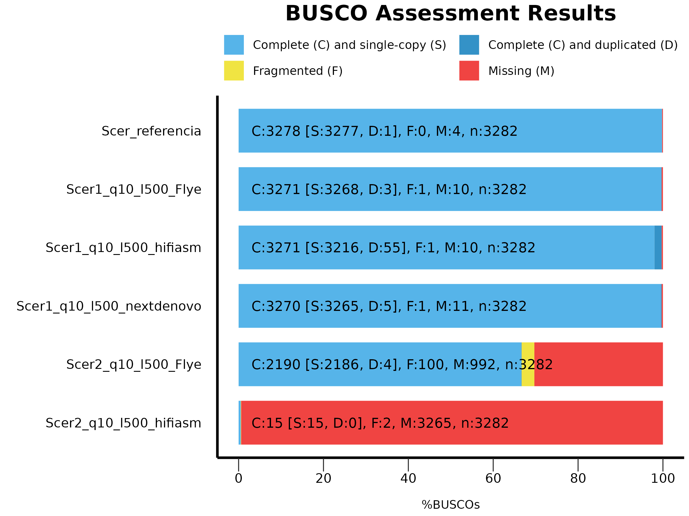
Resumos BUSCO pré-computados
Gráfico comparativo (PNG) · Scer1_Flye · Scer1_Hifiasm · Scer1_NextDenovo · Scer2_Flye · Scer2_Hifiasm
Dica
Um Complete alto sozinho não garante uma boa montagem. Vale sempre olhar também o Duplicated. Duplicated alto (como encontramos no Hifiasm, 1,7% vs 0,1% do Flye e 0,2% do NextDenovo) indica que parte do genoma foi montada duas vezes. Em linhagens diploides heterozigotas, a causa costuma ser haplótipos não colapsados. A Scer1, porém, é haploide (Etapa 5): aqui as cópias extras são falsas duplicações, criadas pelo próprio montador. O Hifiasm foi desenvolvido para reads HiFi, quase sem erro; com reads Nanopore R9.4.1, cópias de uma mesma região que diferem só por erros de leitura podem ser tratadas como se fossem haplótipos diferentes.
9.4 Separação do genoma mitocondrial¶
As montagens contêm, além dos 16 cromossomos nucleares, contigs do DNA mitocondrial (~86 kb em S. cerevisiae). Eles são fáceis de reconhecer: GC muito baixo (~17%, contra ~38% do genoma nuclear) e cobertura muito acima da média, porque cada célula tem dezenas de cópias do genoma mitocondrial.
Separamos esses contigs antes de qualquer outra limpeza. A mitocôndria é um genoma à parte e não deve ser tratada pelas ferramentas pensadas para o genoma nuclear. Um exemplo concreto: o purge_dups (Etapa 9.5) remove sequências com cobertura muito alta, e numa primeira versão deste tutorial, em que ele rodava antes desta etapa, descartou todos os contigs mitocondriais do Flye e do Hifiasm sem nenhum aviso.
A separação não descarta nada: o genoma mitocondrial fica num arquivo próprio, e as próximas etapas usam só a parte nuclear. Para identificar os contigs mitocondriais, alinhamos cada montagem contra o genoma mitocondrial da referência (NC_001224.1) e consideramos mitocondrial todo contig com pelo menos metade do comprimento alinhada a ele.
mkdir -p 9.Mitocondria 9.Montagens-nucleares
conda activate polimento # para o samtools
samtools faidx ncbi_dataset/data/GCF_000146045.2/GCF_000146045.2_R64_genomic.fna NC_001224.1 > 9.Mitocondria/mito_referencia.fasta
declare -A bruta=(
[Scer1_q10_l500_Flye]="5.Montagem-Flye/Scer1_q10_l500/assembly.fasta"
[Scer1_q10_l500_hifiasm]="6.Montagem-hifiasm/Scer1_q10_l500_hifiasm.p_ctg.fa"
[Scer1_q10_l500_nextdenovo]="7.Montagem-NextDenovo/Scer1_q10_l500/01_rundir/03.ctg_graph/nd.asm.fasta"
[Scer2_q10_l500_Flye]="5.Montagem-Flye/Scer2_q10_l500/assembly.fasta"
[Scer2_q10_l500_hifiasm]="6.Montagem-hifiasm/Scer2_q10_l500_hifiasm.p_ctg.fa"
)
for prefix in Scer1_q10_l500_Flye Scer1_q10_l500_hifiasm Scer1_q10_l500_nextdenovo Scer2_q10_l500_Flye Scer2_q10_l500_hifiasm; do
f=9.Mitocondria/${prefix}_completa.fasta
cp ${bruta[$prefix]} $f
# contigs com >= 50% do comprimento alinhado ao mitocondrial da referência
minimap2 -x asm10 -t 8 9.Mitocondria/mito_referencia.fasta $f 2>/dev/null \
| awk '{cob[$1]+=$4-$3; tam[$1]=$2} END{for(c in cob) if(cob[c]/tam[c]>=0.5) print c}' \
| sort > 9.Mitocondria/${prefix}.mito.ids
# separar: mitocondrial para um arquivo, nuclear para outro
samtools faidx $f
cut -f1 $f.fai | grep -vxF -f 9.Mitocondria/${prefix}.mito.ids > 9.Mitocondria/${prefix}.nuclear.ids
samtools faidx $f -r 9.Mitocondria/${prefix}.nuclear.ids > 9.Montagens-nucleares/${prefix}.fasta
if [ -s 9.Mitocondria/${prefix}.mito.ids ]; then
samtools faidx $f -r 9.Mitocondria/${prefix}.mito.ids > 9.Mitocondria/${prefix}_mito.fasta
fi
echo "$prefix: $(wc -l < 9.Mitocondria/${prefix}.mito.ids) contigs mitocondriais"
done
conda deactivate
# conferir: tamanho e GC de cada contig classificado como mitocondrial
for f in 9.Mitocondria/*_mito.fasta; do
echo "== $f"
awk '/^>/{if(n)printf "%s\t%d pb\tGC %.1f%%\n",n,l,100*g/l; n=substr($1,2); l=0; g=0; next}
{l+=length($0); g+=gsub(/[GCgc]/,"")}
END{if(n)printf "%s\t%d pb\tGC %.1f%%\n",n,l,100*g/l}' $f
done
Ver saída do comando (resumida)
Scer1_q10_l500_Flye: 33 contigs mitocondriais
Scer1_q10_l500_hifiasm: 49 contigs mitocondriais
Scer1_q10_l500_nextdenovo: 0 contigs mitocondriais
Scer2_q10_l500_Flye: 9 contigs mitocondriais
Scer2_q10_l500_hifiasm: 1 contigs mitocondriais
== 9.Mitocondria/Scer1_q10_l500_Flye_mito.fasta
contig_117 15062 pb GC 17.0%
contig_119 4058 pb GC 17.8%
contig_120 9322 pb GC 16.8%
...
contig_46 701 pb GC 8.3%
contig_47 15640 pb GC 16.9%
...
contig_55 21582 pb GC 16.4%
contig_56 10696 pb GC 14.2%
...
contig_68 23578 pb GC 15.2%
...
contig_73 14979 pb GC 19.3%
== 9.Mitocondria/Scer1_q10_l500_hifiasm_mito.fasta
ptg000016l 2515 pb GC 17.5%
ptg000019l 115403 pb GC 16.4%
ptg000026l 2437 pb GC 13.5%
ptg000027l 2077 pb GC 17.3%
ptg000028c 89648 pb GC 17.9%
...
ptg000038l 31260 pb GC 16.8%
ptg000039l 96126 pb GC 15.6%
...
ptg000054l 17477 pb GC 16.0%
...
ptg000087l 4173 pb GC 21.9%
== 9.Mitocondria/Scer2_q10_l500_Flye_mito.fasta
contig_128 1382 pb GC 7.8%
contig_409 4435 pb GC 8.4%
contig_410 959 pb GC 21.2%
contig_412 787 pb GC 11.7%
contig_413 564 pb GC 9.9%
contig_414 1489 pb GC 10.8%
contig_447 1046 pb GC 8.1%
contig_448 877 pb GC 6.6%
contig_746 78752 pb GC 16.9%
== 9.Mitocondria/Scer2_q10_l500_hifiasm_mito.fasta
ptg000005l 102299 pb GC 16.8%
| Montagem | Contigs mitocondriais | Soma | Maior contig |
|---|---|---|---|
| Scer1 Flye | 33 | 224.759 pb | 23.578 pb |
| Scer1 Hifiasm | 49 | 480.246 pb | 115.403 pb |
| Scer1 NextDenovo | 0 | — | — |
| Scer2 Flye | 9 | 90.291 pb | 78.752 pb |
| Scer2 Hifiasm | 1 | 102.299 pb | 102.299 pb |
Todos os contigs selecionados têm GC entre 7% e 26%, bem abaixo dos ~38% do genoma nuclear: a classificação é consistente. Mas cada montador lidou com a mitocôndria de um jeito:
- Scer1 Flye: a mitocôndria saiu em 33 pedaços, que somam ~225 kb, mais de duas vezes o tamanho esperado (~86 kb). Com uma cobertura altíssima, pequenas variações entre reads geram caminhos alternativos no grafo, e o mesmo trecho aparece em mais de um contig.
- Scer1 Hifiasm: o caso extremo: 49 contigs e ~480 kb, com três cópias quase completas (115, 96 e 90 kb) e dezenas de pedaços de ~2 kb. Isso explica boa parte do tamanho inflado do Hifiasm (13,0 Mb): sem a mitocôndria, ele cai para ~12,5 Mb.
- Scer1 NextDenovo: nenhum contig mitocondrial. O NextDenovo não montou a mitocôndria. Uma explicação provável: ele usa só as reads mais longas como "sementes" da montagem e trata regiões de cobertura muito alta como repetições, e o mtDNA, com reads curtas e cobertura altíssima, se encaixa nos dois casos.
- Scer2 Flye: um contig de 79 kb, quase a mitocôndria inteira, mais 8 fragmentos pequenos e muito ricos em AT (GC < 12%).
- Scer2 Hifiasm: um único contig de 102 kb, mais da metade de toda a montagem (189 kb). É o mesmo sinal que apareceu no GenomeScope da Scer2 (um pico de ~97 kb de sequência multicópia, Etapa 5) e explica o GC anômalo dessa montagem.
Por que guardar a mitocôndria em vez de descartar?
O genoma mitocondrial é um produto da montagem como qualquer outro: ele carrega genes próprios e é muito usado em estudos de população e evolução. Aqui, nenhuma das montagens o recuperou de forma limpa (fragmentado ou em cópias redundantes), e montá-lo bem pede uma estratégia própria, a partir só das reads mitocondriais. Por isso ele fica separado em 9.Mitocondria/ e não segue no pipeline do genoma nuclear.
A partir daqui, as montagens seguem pela pasta 9.Montagens-nucleares/. Os genomas mitocondriais ficam em 9.Mitocondria/.
9.5 Remoção de duplicatas (purge_dups)¶
Em genomas com heterozigose, o montador às vezes monta as duas versões (haplótipos) de uma mesma região como contigs separados. A montagem fica maior que o genoma e com genes duplicados. A Scer1 é haploide e não tem haplótipos, mas o mesmo sintoma aparece por outro motivo: o montador pode gerar cópias redundantes de uma região a partir das reads com erro. Vimos isso no Hifiasm da Scer1: 13,0 Mb para um genoma de ~12,1 Mb e 1,7% de BUSCOs duplicados, contra 0,1–0,2% no Flye e no NextDenovo. Para o purge_dups, os dois casos têm a mesma assinatura e são tratados igual.
O purge_dups identifica essas cópias extras combinando duas informações:
- Cobertura de reads: numa região duplicada na montagem, as reads se dividem entre as duas cópias, e cada uma fica com cerca de metade da cobertura esperada.
- Similaridade entre contigs: a cópia extra tem que ser muito parecida com outro trecho da montagem.
Uma duplicata é removida quando as duas condições se combinam. (O purge_dups também descarta contigs só pela cobertura, quando ela é baixa ou alta demais; veremos isso adiante.) Fazemos isso antes do polimento: com uma cópia só de cada região, todas as reads alinham no mesmo lugar e o polimento dessas regiões fica melhor.
Por que só a Scer1?
O purge_dups decide o que é duplicata a partir do histograma de cobertura. Com ~6× de cobertura, a Scer2 não tem resolução para separar "cobertura normal" (~6×) de "metade da cobertura" (~3×), e o próprio limite inferior padrão (5×) já cairia em cima do pico: boa parte do genoma seria descartada como "lixo". Além disso, a Scer2 é diploide homozigota (Etapa 5), então não esperamos haplótipos separados. As montagens da Scer2 seguem sem purge_dups, só sem a mitocôndria.
Instalação: ambiente purge_dups_env
O matplotlib só é necessário para a figura opcional do histograma de cobertura (hist_plot.py). Num ambiente que já existe, ele pode ser acrescentado com conda install -n purge_dups_env -c conda-forge matplotlib.
conda activate purge_dups_env
R=2.Filtragem-dadosbrutos/Scer1_q10_l500.fastq.gz
mkdir -p 9.Purge_dups
for s in Scer1_q10_l500_Flye Scer1_q10_l500_hifiasm Scer1_q10_l500_nextdenovo; do
echo "===== $s ====="
O=9.Purge_dups/$s
mkdir -p $O
cp 9.Montagens-nucleares/$s.fasta $O/$s.fasta # montagem bruta, já sem a mitocôndria
# 1) cobertura: alinhar as reads na montagem e calcular os limites de corte
minimap2 -x map-ont -t 24 $O/$s.fasta $R > $O/reads.paf
pbcstat -O $O $O/reads.paf
calcuts $O/PB.stat > $O/cutoffs 2> $O/calcuts.log
# 2) similaridade: alinhar a montagem contra ela mesma
split_fa $O/$s.fasta > $O/$s.split.fasta
minimap2 -x asm5 -DP -t 24 $O/$s.split.fasta $O/$s.split.fasta > $O/$s.split.self.paf
# 3) decidir o que é duplicata e separar as sequências
purge_dups -2 -T $O/cutoffs -c $O/PB.base.cov $O/$s.split.self.paf > $O/dups.bed 2> $O/purge_dups.log
get_seqs -e $O/dups.bed $O/$s.fasta -p $O/$s
done 2>&1 | tee 9.Purge_dups/purge_dups.log
conda deactivate
Para cada montagem, o purge_dups gera dois arquivos:
<montagem>.purged.fa: a montagem sem as duplicatas, que segue no pipeline;<montagem>.hap.fa: as sequências removidas, guardadas à parte.
A opção -e do get_seqs só remove duplicatas nas pontas dos contigs (ou contigs inteiros), sem quebrar um contig no meio. É a escolha mais conservadora para a montagem primária.
Ver saída do comando (resumida)
===== Scer1_q10_l500_Flye =====
[M::main::0.395*3.17] loaded/built the index for 46 target sequence(s)
[M::mm_idx_stat::0.477*2.79] distinct minimizers: 2083051 (95.48% are singletons); average occurrences: 1.086; average spacing: 5.337; total length: 12076556
[M::worker_pipeline::11.807*11.01] mapped 140416 sequences
[M::worker_pipeline::15.078*13.61] mapped 90021 sequences
[M::main] CMD: minimap2 -x map-ont -t 24 9.Purge_dups/Scer1_q10_l500_Flye/Scer1_q10_l500_Flye.fasta 2.Filtragem-dadosbrutos/Scer1_q10_l500.fastq.gz
[M::main] Real time: 15.110 sec; CPU: 205.226 sec; Peak RSS: 1.010 GB
Program starts
[M::aa_pb] collecting positions from paf file
[M::aa_pb] calculating coverage for each base on genome
[M::aa_pb] print coverage histogram for the contigs
...
Program finished successfully
[M::main::0.274*2.90] loaded/built the index for 48 target sequence(s)
[M::worker_pipeline::0.572*4.09] mapped 48 sequences
[M::main] CMD: minimap2 -x asm5 -DP -t 24 9.Purge_dups/Scer1_q10_l500_Flye/Scer1_q10_l500_Flye.split.fasta 9.Purge_dups/Scer1_q10_l500_Flye/Scer1_q10_l500_Flye.split.fasta
[M::main] Real time: 0.591 sec; CPU: 2.358 sec; Peak RSS: 0.171 GB
===== Scer1_q10_l500_hifiasm =====
[M::main::0.386*3.12] loaded/built the index for 38 target sequence(s)
[M::mm_idx_stat::0.456*2.79] distinct minimizers: 2080893 (94.28% are singletons); average occurrences: 1.126; average spacing: 5.336; total length: 12500158
...
[M::main] Real time: 24.997 sec; CPU: 440.662 sec; Peak RSS: 1.134 GB
...
[M::main::0.271*2.94] loaded/built the index for 38 target sequence(s)
[M::main] Real time: 1.467 sec; CPU: 4.136 sec; Peak RSS: 0.243 GB
===== Scer1_q10_l500_nextdenovo =====
[M::main::0.384*3.41] loaded/built the index for 29 target sequence(s)
[M::mm_idx_stat::0.456*3.03] distinct minimizers: 2072410 (95.65% are singletons); average occurrences: 1.096; average spacing: 5.336; total length: 12123689
...
[M::main] Real time: 14.678 sec; CPU: 194.130 sec; Peak RSS: 1.025 GB
...
[M::main::0.266*2.89] loaded/built the index for 29 target sequence(s)
[M::main] Real time: 0.559 sec; CPU: 2.806 sec; Peak RSS: 0.202 GB
O log mostra, para cada montagem, as duas etapas de alinhamento: as reads contra a montagem (map-ont, 230.437 reads), seguidas do pbcstat ("Program finished successfully"), e a montagem contra ela mesma (asm5). As montagens já entram sem a mitocôndria (Etapa 9.4): o Flye tem 46 sequências (12,08 Mb), o Hifiasm 38 (12,50 Mb) e o NextDenovo, que não tinha mitocôndria, continua com 29 (12,12 Mb). No Flye, o alinhamento contra si mesma mostra 48 sequências, e não 46: o split_fa quebra os contigs nos trechos de N (os 2 gaps que o Flye deixou), como o QUAST já havia indicado. O purge_dups e o get_seqs não escrevem nada na tela: as mensagens deles ficam em 9.Purge_dups/<montagem>/purge_dups.log, e o resultado aparece nos comandos a seguir.
Quanto foi removido?
for s in Scer1_q10_l500_Flye Scer1_q10_l500_hifiasm Scer1_q10_l500_nextdenovo; do
O=9.Purge_dups/$s
echo "===== $s"
echo "limites de corte (calcuts): $(cat $O/cutoffs)"
awk '/^>/{n++; next}{b+=length($0)} END{printf "antes: %d sequências, %d pb\n", n, b}' $O/$s.fasta
awk '/^>/{n++; next}{b+=length($0)} END{printf "depois: %d sequências, %d pb\n", n, b}' $O/$s.purged.fa
awk '/^>/{n++; next}{b+=length($0)} END{printf "removido: %d sequências, %d pb\n", n, b}' $O/$s.hap.fa
done
Ver saída do comando (primeira rodada, limites automáticos)
===== Scer1_q10_l500_Flye
limites de corte (calcuts): 5 37 61 73 122 219
antes: 46 sequências, 12076556 pb
depois: 36 sequências, 11914226 pb
removido: 13 sequências, 162330 pb
===== Scer1_q10_l500_hifiasm
limites de corte (calcuts): 5 37 61 73 122 219
antes: 38 sequências, 12500158 pb
depois: 24 sequências, 12110625 pb
removido: 18 sequências, 389533 pb
===== Scer1_q10_l500_nextdenovo
limites de corte (calcuts): 5 37 61 73 122 219
antes: 29 sequências, 12123689 pb
depois: 25 sequências, 11984517 pb
removido: 9 sequências, 139172 pb
| Montagem | Antes | Depois | Removido | % removida |
|---|---|---|---|---|
| Scer1 Flye | 46 seq · 12.076.556 pb | 36 seq · 11.914.226 pb | 13 seq · 162.330 pb | 1,3% |
| Scer1 Hifiasm | 38 seq · 12.500.158 pb | 24 seq · 12.110.625 pb | 18 seq · 389.533 pb | 3,1% |
| Scer1 NextDenovo | 29 seq · 12.123.689 pb | 25 seq · 11.984.517 pb | 9 seq · 139.172 pb | 1,1% |
Três coisas para observar (e uma suspeita, que o histograma a seguir vai confirmar):
- Os limites de corte são os mesmos nas três montagens. Faz sentido: eles saem da cobertura das reads, e as reads são as mesmas. O que muda é quanto de cada montagem cai abaixo desses limites e se sobrepõe a outra parte dela mesma.
- As bases fecham, mas as sequências não. Depois + removido dá exatamente o tamanho original, mas a soma de sequências passa do total (Flye: 36 + 13 = 49, contra 46). É o efeito do
-e: alguns contigs tiveram só uma ponta removida, e assim aparecem nos dois arquivos, a parte principal no.purged.fae a ponta no.hap.fa. - O Hifiasm foi o que mais perdeu (18 sequências, 390 kb), o que bate com os contigs pequenos e redundantes vistos no QUAST e com os BUSCOs duplicados. Mas a suspeita: Flye e NextDenovo ficaram com 11,91 e 11,98 Mb, abaixo dos ~12,07 Mb do genoma nuclear da referência. Será que o purge_dups removeu mais do que devia?
Como o purge_dups decidiu: o histograma de cobertura
O calcuts escolhe os limites a partir do histograma de cobertura das reads (PB.stat). Numa montagem sem duplicatas, há um único pico, na cobertura média (~58× na Scer1). Se houver duplicatas, aparece um segundo pico (ou um "ombro") na metade da cobertura: são as regiões em que as reads se dividiram entre duas cópias. O comando abaixo desenha o histograma no terminal, com os limites do calcuts marcados:
for s in Scer1_q10_l500_Flye Scer1_q10_l500_hifiasm Scer1_q10_l500_nextdenovo; do
O=9.Purge_dups/$s
echo "===== $s limites (calcuts): $(cat $O/cutoffs)"
awk -v cortes="$(cat $O/cutoffs)" '
BEGIN{n=split(cortes,k," "); for(i=1;i<=n;i++) corte[k[i]]=1}
$1<=150 {b=int($1/3); c[b]+=$2; if(c[b]>m) m=c[b]}
END{for(b=0;b<=50;b++){bar=""; for(j=0;j<int(50*c[b]/m);j++) bar=bar"#"; mark="";
for(x=b*3;x<b*3+3;x++) if(x in corte) mark=mark" <- corte "x;
printf "%3d-%3dx | %s%s\n", b*3, b*3+2, bar, mark}}' $O/PB.stat
echo
cat $O/calcuts.log
echo
done
Cada linha agrupa 3 valores de cobertura, e o comprimento da barra é proporcional ao número de bases com aquela cobertura. O calcuts.log mostra quantos picos o calcuts encontrou e como calculou os limites.
Ver saída do comando (resumida)
===== Scer1_q10_l500_Flye limites (calcuts): 5 37 61 73 122 219
0- 2x |
3- 5x | <- corte 5
6- 8x |
9- 11x |
12- 14x |
15- 17x |
18- 20x |
21- 23x |
24- 26x |
27- 29x |
30- 32x | #
33- 35x | ####
36- 38x | ########### <- corte 37
39- 41x | #####################
42- 44x | #################################
45- 47x | #############################################
48- 50x | ##################################################
51- 53x | ##############################################
54- 56x | #####################################
57- 59x | ##########################
60- 62x | ################## <- corte 61
63- 65x | ###########
66- 68x | ######
69- 71x | ###
72- 74x | ## <- corte 73
75- 77x | #
78- 80x |
...
120-122x | <- corte 122
...
150-152x |
[M::calcuts] Find 1 peaks
[M::calcuts] mean: 51, peak: 49, mean larger than peak, treat as diploid assembly
[W::calcuts] mean is not significantly different with peak, please recheck the cutoffs
===== Scer1_q10_l500_hifiasm limites (calcuts): 5 37 61 73 122 219
0- 2x |
3- 5x | <- corte 5
6- 8x |
9- 11x | #
12- 14x |
15- 17x |
18- 20x | #
21- 23x |
24- 26x |
27- 29x |
30- 32x | ##
33- 35x | #####
36- 38x | ########### <- corte 37
39- 41x | #####################
... (daqui em diante, igual ao Flye)
[M::calcuts] Find 1 peaks
[M::calcuts] mean: 53, peak: 49, mean larger than peak, treat as diploid assembly
[W::calcuts] mean is not significantly different with peak, please recheck the cutoffs
===== Scer1_q10_l500_nextdenovo limites (calcuts): 5 37 61 73 122 219
(histograma praticamente idêntico ao do Flye)
[M::calcuts] Find 1 peaks
[M::calcuts] mean: 51, peak: 49, mean larger than peak, treat as diploid assembly
[W::calcuts] mean is not significantly different with peak, please recheck the cutoffs
Lendo o histograma:
- Há um único pico, em ~49×, e nenhum pico em ~25× (metade da cobertura). É o esperado para uma linhagem haploide, como a Scer1: quase todo o genoma foi montado uma vez só.
- A diferença está na cauda da esquerda. Só o Hifiasm tem algumas bases com cobertura entre 9× e 20×: são trechos que ele montou duas vezes, e as reads se dividiram entre as cópias. São os verdadeiros candidatos a duplicata. Antes de separarmos a mitocôndria, essa cauda era bem maior: as várias cópias redundantes do mtDNA no Hifiasm dividiam as reads mitocondriais entre si e também caíam nessa faixa.
- O
calcutsnão sabe a ploidia. Encontrou um pico só e supôs que ele fosse o pico haploide de uma montagem diploide ("treat as diploid assembly"). Por isso colocou a fronteira haploide/diploide (o 4º valor) em 73×, 1,5 vez o pico. Ele mesmo avisa que o resultado é duvidoso: "please recheck the cutoffs".
Com a fronteira em 73×, quase todo o genoma fica abaixo dela e é tratado como "cópia haploide". O purge_dups passa então a decidir só pela semelhança da montagem com ela mesma, e pode remover repetições verdadeiras (retrotransposons Ty, rDNA, subtelômeros). Um sinal disso está nas contagens acima: Flye e NextDenovo ficaram com 11,91 e 11,98 Mb, abaixo dos ~12,07 Mb do genoma nuclear da referência.
Nunca aceite os limites automáticos sem olhar o histograma
O calcuts funciona bem quando há dois picos (haplótipos separados e regiões colapsadas). Com um pico só, ele precisa adivinhar, e aqui adivinhou errado. O histograma e o calcuts.log são a forma de conferir.
Corrigindo os limites. Definimos os valores à mão a partir do pico de 49×:
-l 5: abaixo disso, cobertura de lixo (mantemos o valor automático);-m 37: a fronteira haploide/diploide fica entre a metade do pico (~25×) e o pico (49×), em ~0,75 × 49. Só regiões com cobertura bem abaixo da média passam a ser candidatas a duplicata;-u 147: 3 × 49; acima disso, repetições colapsadas.
Não é preciso refazer os alinhamentos: o PB.stat, o PB.base.cov e o .split.self.paf continuam valendo. Refazemos só as três últimas etapas:
conda activate purge_dups_env
for s in Scer1_q10_l500_Flye Scer1_q10_l500_hifiasm Scer1_q10_l500_nextdenovo; do
echo "===== $s"
O=9.Purge_dups/$s
cp -n $O/cutoffs $O/cutoffs.auto # guarda os limites automáticos
calcuts -l 5 -m 37 -u 147 $O/PB.stat > $O/cutoffs 2> $O/calcuts.log
cat $O/cutoffs
purge_dups -2 -T $O/cutoffs -c $O/PB.base.cov $O/$s.split.self.paf > $O/dups.bed 2> $O/purge_dups.log
get_seqs -e $O/dups.bed $O/$s.fasta -p $O/$s
done
conda deactivate
O get_seqs sobrescreve o .purged.fa e o .hap.fa. Rode de novo o comando "Quanto foi removido?" para ver o novo resultado:
Ver saída do comando (limites manuais)
===== Scer1_q10_l500_Flye
limites de corte (calcuts): 5 36 36 37 37 147
antes: 46 sequências, 12076556 pb
depois: 37 sequências, 11962229 pb
removido: 10 sequências, 114327 pb
===== Scer1_q10_l500_hifiasm
limites de corte (calcuts): 5 36 36 37 37 147
antes: 38 sequências, 12500158 pb
depois: 24 sequências, 12161687 pb
removido: 15 sequências, 338471 pb
===== Scer1_q10_l500_nextdenovo
limites de corte (calcuts): 5 36 36 37 37 147
antes: 29 sequências, 12123689 pb
depois: 24 sequências, 12016151 pb
removido: 6 sequências, 107538 pb
| Montagem | Antes (nuclear) | Removido (automático, 73×) | Removido (manual, 37×) | Depois (manual) |
|---|---|---|---|---|
| Scer1 Flye | 12.076.556 pb | 162.330 pb (1,3%) | 114.327 pb (0,9%) | 11.962.229 pb |
| Scer1 Hifiasm | 12.500.158 pb | 389.533 pb (3,1%) | 338.471 pb (2,7%) | 12.161.687 pb |
| Scer1 NextDenovo | 12.123.689 pb | 139.172 pb (1,1%) | 107.538 pb (0,9%) | 12.016.151 pb |
Com os limites corrigidos, o purge_dups remove de 30 a 50 kb a menos em cada montagem: são os trechos que só saíam porque a fronteira em 73× tratava todo o genoma como "cópia haploide". O Hifiasm continua sendo o que mais perde, como esperado, e as três montagens terminam entre 11,96 e 12,16 Mb, perto dos ~12,07 Mb do genoma nuclear da referência.
O que foi removido? O purge_dups classifica cada trecho que retira, e a classe fica na 4ª coluna do dups.bed:
| Classe | Significado |
|---|---|
HAPLOTIG |
contig inteiro que é cópia de outro trecho da montagem (a duplicata clássica) |
OVLP |
ponta de contig que se sobrepõe a outro contig |
REPEAT |
contig formado quase só por repetições presentes em outros contigs |
JUNK |
contig com cobertura abaixo do limite inferior (lixo) |
HIGHCOV |
contig com cobertura acima do limite superior |
Note que JUNK e HIGHCOV são removidos só pela cobertura, sem precisar de semelhança com outro trecho. Foi por isso que, quando o purge_dups rodou com a mitocôndria ainda na montagem, ela saiu como HIGHCOV.
for s in Scer1_q10_l500_Flye Scer1_q10_l500_hifiasm Scer1_q10_l500_nextdenovo; do
echo "===== $s"
awk '{n[$4]++; b[$4]+=$3-$2} END{for(k in n) printf " %-9s %3d regiões %8d pb\n", k, n[k], b[k]}' 9.Purge_dups/$s/dups.bed
done
Ver saída do comando
===== Scer1_q10_l500_Flye
HIGHCOV 2 regiões 2953 pb
HAPLOTIG 5 regiões 102901 pb
REPEAT 3 regiões 8471 pb
===== Scer1_q10_l500_hifiasm
HIGHCOV 1 regiões 35888 pb
OVLP 1 regiões 43261 pb
HAPLOTIG 6 regiões 175492 pb
REPEAT 6 regiões 71343 pb
JUNK 1 regiões 12485 pb
===== Scer1_q10_l500_nextdenovo
OVLP 1 regiões 12108 pb
HAPLOTIG 1 regiões 29221 pb
REPEAT 4 regiões 66209 pb
- Flye e Hifiasm: a maior parte do que saiu é
HAPLOTIG(103 kb no Flye, 175 kb no Hifiasm), ou seja, duplicatas de verdade. Como a Scer1 é haploide, são falsas duplicações criadas na montagem. - NextDenovo: quase não tinha duplicatas (um único
HAPLOTIG, de 29 kb). O que mais saiu foiREPEAT(66 kb): contigs formados quase só por repetições que também estão em outros contigs. HIGHCOV: como a mitocôndria já tinha sido separada, o que sobra nessa classe é nuclear: pequeno no Flye (3 kb) e maior no Hifiasm (36 kb). Regiões de cobertura alta no genoma nuclear de levedura costumam ser repetições colapsadas, como o rDNA (~150 cópias de uma unidade de 9 kb no cromossomo XII) ou o plasmídeo 2-micron.
Para saber o que é esse HIGHCOV, alinhamos à referência os contigs que contêm essas regiões:
conda activate purge_dups_env
REF=ncbi_dataset/data/GCF_000146045.2/GCF_000146045.2_R64_genomic.fna
for s in Scer1_q10_l500_Flye Scer1_q10_l500_hifiasm; do
O=9.Purge_dups/$s
echo "===== $s"
awk '$4=="HIGHCOV"' $O/dups.bed | tee $O/highcov.bed
awk 'NR==FNR{c[$1]=1; next} /^>/{n=substr($1,2); p=(n in c); if(p) print ">"n; next} p' $O/highcov.bed $O/$s.fasta > $O/highcov_contigs.fa
minimap2 -x asm10 -t 8 $REF $O/highcov_contigs.fa 2>/dev/null | cut -f1-11 | sort -k10,10nr | head -5
done
conda deactivate
Ver saída do comando
===== Scer1_q10_l500_Flye
contig_129 1 2197 HIGHCOV
contig_127 1 758 HIGHCOV
===== Scer1_q10_l500_hifiasm
ptg000025l 1 35889 HIGHCOV
ptg000025l 35889 6817 24196 + NC_001144.5 1078177 451418 468895 17088 17477
ptg000025l 35889 15869 33276 + NC_001144.5 1078177 451418 468919 17078 17502
ptg000025l 35889 18 15169 + NC_001144.5 1078177 453697 468919 14910 15222
ptg000025l 35889 33975 35873 + NC_001144.5 1078177 451418 453318 1877 1900
- Hifiasm: o
ptg000025l(35,9 kb) é inteiro rDNA. Seus trechos alinham, um após o outro, na mesma região do cromossomo XII (NC_001144.5, 451–469 kb), onde a referência guarda duas unidades do rDNA. No genoma real, esse arranjo tem ~150 unidades em sequência (1–2 Mb), e nenhuma montagem com reads deste tamanho o resolve inteiro: o Hifiasm montou um pedaço solto do arranjo, com cobertura muito alta porque as reads de todas as cópias se acumulam nele. - Flye: os dois contigs
HIGHCOVsão minúsculos (2,2 kb e 0,8 kb) e não alinham na referência. Uma possibilidade é o plasmídeo 2-micron, presente em muitas linhagens e ausente da referência R64.
Remover o contig de rDNA é aceitável: ele não traz informação nova (é o mesmo bloco de 9 kb repetido), não poderia ser posicionado com segurança no cromossomo XII e continua guardado no .hap.fa. Mas é bom saber o que saiu: o purge_dups não removeu uma duplicata, e sim uma repetição colapsada real do genoma.
O mesmo histograma como figura
O purge_dups inclui um script que desenha o histograma com os limites, como imagem:
conda activate purge_dups_env
for s in Scer1_q10_l500_Flye Scer1_q10_l500_hifiasm Scer1_q10_l500_nextdenovo; do
hist_plot.py -c 9.Purge_dups/$s/cutoffs 9.Purge_dups/$s/PB.stat 9.Purge_dups/$s/$s.cobertura.png
done
conda deactivate
Copie os arquivos .png para o seu computador (scp) para visualizá-los.
As figuras abaixo foram geradas depois da correção dos limites (veja adiante), por isso mostram os cortes manuais: 5× (vermelho), 37× (verde) e 147× (azul-claro). O pico em ~49× fica todo à direita da linha verde, fora da zona de remoção.
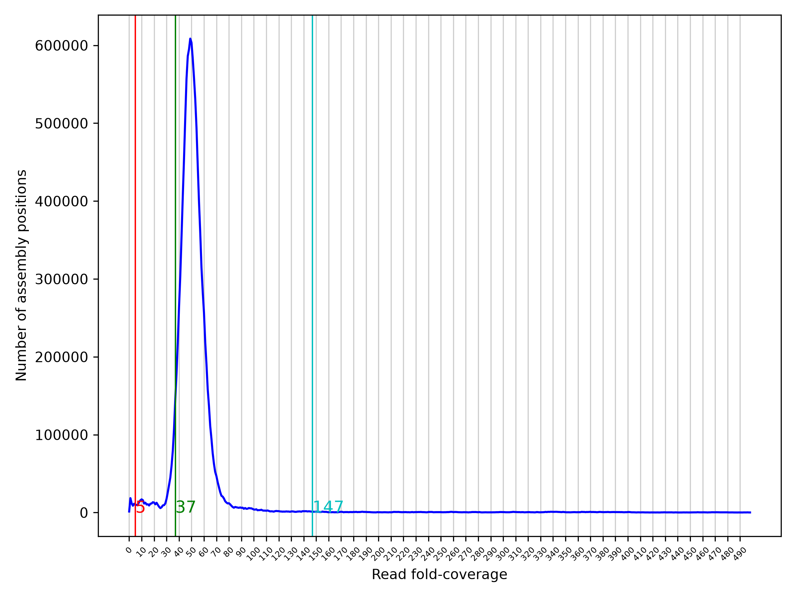
Repare na pequena elevação entre 10× e 25×, à esquerda da linha verde: são os trechos duplicados que o purge_dups remove.
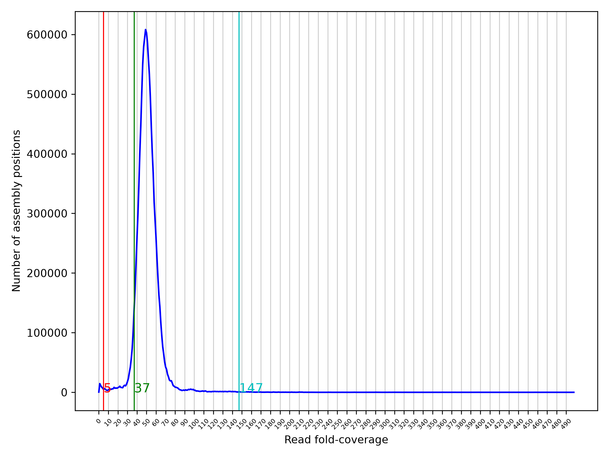
Falsas duplicações pelo Merqury
O Merqury oferece uma régua independente para o mesmo problema. O script false_duplications.sh olha o espectro de k-mers da montagem (*.spectra-cn.hist): entre os k-mers que aparecem uma vez no genoma (pela cobertura nas reads), quantos estão duas ou mais vezes na montagem? Essa fração é a taxa de falsas duplicações. As montagens brutas já foram avaliadas pelo Merqury na Etapa 9.2; falta rodar as purgadas. Lembre que as purgadas também estão sem a mitocôndria: os k-mers mitocondriais das reads deixam de ser encontrados na montagem, e a completude cai um pouco por isso, sem relação com o purge_dups.
cd 8.QC_montagens/merqury
for s in Scer1_q10_l500_Flye Scer1_q10_l500_hifiasm Scer1_q10_l500_nextdenovo; do
mkdir -p ${s}_purgada && cd ${s}_purgada
merqury.sh ../../../4.QC_dadosfiltrados/Scer1_q10_l500.meryl \
../../../9.Purge_dups/$s/$s.purged.fa \
${s}_purgada
cd ..
done
# falsas duplicações: bruta x purgada
for s in Scer1_q10_l500_Flye Scer1_q10_l500_hifiasm Scer1_q10_l500_nextdenovo; do
for v in $s ${s}_purgada; do
bash $MERQURY/eval/false_duplications.sh $v/$v.*.spectra-cn.hist
done
done | awk 'NR==1 || !/^hist/' | column -t
cd ../..
O script usa a variável $MERQURY, que aponta para a pasta de instalação do Merqury (a mesma usada pelo merqury.sh). Se ela estiver vazia, use o caminho completo (no nosso servidor, /home/lgbio/programas/merqury/eval/false_duplications.sh).
Na saída, as colunas 1, 2, 3, 4 e >4 contam os k-mers de cópia única nas reads que aparecem 1, 2, 3, 4 ou mais vezes na montagem; dup% é a porcentagem que aparece mais de uma vez, ou seja, a taxa de falsas duplicações.
Ver saída do comando
hist cutoff 1 2 3 4 >4 dup(>1) all dup%
Scer1_q10_l500_Flye/Scer1_q10_l500_Flye.assembly.spectra-cn.hist 45 10811670 34061 15943 1333 7 51344 10863014 0.47265
Scer1_q10_l500_Flye_purgada/Scer1_q10_l500_Flye_purgada.Scer1_q10_l500_Flye.purged.spectra-cn.hist 45 10812916 14401 7915 22316 10835232 0.205958
Scer1_q10_l500_hifiasm/Scer1_q10_l500_hifiasm.Scer1_q10_l500_hifiasm.p_ctg.spectra-cn.hist 45 10691393 177186 1783 977 268 180214 10871607 1.65766
Scer1_q10_l500_hifiasm_purgada/Scer1_q10_l500_hifiasm_purgada.Scer1_q10_l500_hifiasm.purged.spectra-cn.hist 45 10774377 31294 69 2 31365 10805742 0.290262
Scer1_q10_l500_nextdenovo/Scer1_q10_l500_nextdenovo.nd.asm.spectra-cn.hist 45 10756032 42305 5328 11 5 47649 10803681 0.441044
Scer1_q10_l500_nextdenovo_purgada/Scer1_q10_l500_nextdenovo_purgada.Scer1_q10_l500_nextdenovo.purged.spectra-cn.hist 45 10761370 27681 4678 11 5 32375 10793745 0.299942
Em algumas linhas as colunas parecem "desalinhadas": quando não há k-mers em 4 ou mais cópias, o script simplesmente não imprime essas colunas, e os números seguintes andam para a esquerda. Na tabela abaixo, os valores já estão nas colunas certas.
cutoff (45) é a contagem nas reads abaixo da qual o script considera um k-mer como de cópia única no genoma.
| Montagem | Versão | 1 cópia | 2 cópias | 3 cópias | 4+ cópias | dup% |
|---|---|---|---|---|---|---|
| Scer1 Flye | bruta | 10.811.670 | 34.061 | 15.943 | 1.340 | 0,47% |
| purgada | 10.812.916 | 14.401 | 7.915 | 0 | 0,21% | |
| Scer1 Hifiasm | bruta | 10.691.393 | 177.186 | 1.783 | 1.245 | 1,66% |
| purgada | 10.774.377 | 31.294 | 69 | 2 | 0,29% | |
| Scer1 NextDenovo | bruta | 10.756.032 | 42.305 | 5.328 | 16 | 0,44% |
| purgada | 10.761.370 | 27.681 | 4.678 | 16 | 0,30% |
- O purge_dups funcionou nas três montagens. A taxa de falsas duplicações caiu em todas, e de forma mais forte no Hifiasm: de 1,66% para 0,29%, uma redução de quase seis vezes. É a mesma história contada pelo histograma de cobertura e pelos BUSCOs duplicados, agora por uma régua independente (k-mers, sem alinhamento).
- Os k-mers duplicados viraram cópia única. No Hifiasm, a coluna "1 cópia" aumentou ~83 mil k-mers: eles estavam em duas cópias na montagem e passaram a estar em uma só, que é exatamente o que se espera de uma remoção de duplicata bem feita.
- O custo é pequeno. A coluna
all(k-mers de cópia única das reads encontrados na montagem) cai um pouco: ~28 mil no Flye, ~66 mil no Hifiasm e ~10 mil no NextDenovo, menos de 0,7% do total. São trechos que só existiam nas sequências removidas. Uma parte vem das pontas e dos contigsREPEATe do rDNA, e o restante pode ser conteúdo real perdido, que vale acompanhar pela completude do BUSCO a seguir. - Por que não chega a zero? Restam ~0,2–0,3% de k-mers em duas ou mais cópias, que o purge_dups não remove porque estão no meio de contigs (lembre que o
-esó corta pontas e contigs inteiros) ou porque são cópias reais muito parecidas, como genes de famílias subteloméricas.
BUSCO das montagens purgadas: a duplicação de genes é a medida mais direta do efeito do purge_dups.
conda activate busco
for s in Scer1_q10_l500_Flye Scer1_q10_l500_hifiasm Scer1_q10_l500_nextdenovo; do
busco -i 9.Purge_dups/$s/$s.purged.fa -l saccharomycetaceae_odb12 -m genome -o 8.QC_montagens/BUSCO/${s}_purgada -c 24
done
conda deactivate
for s in Scer1_q10_l500_Flye Scer1_q10_l500_hifiasm Scer1_q10_l500_nextdenovo; do
echo "$s bruta: $(grep -h 'C:' 8.QC_montagens/BUSCO/$s/short_summary*.txt | tr -d '\t ')"
echo "$s purgada: $(grep -h 'C:' 8.QC_montagens/BUSCO/${s}_purgada/short_summary*.txt | tr -d '\t ')"
done
Saída: BUSCO bruta x purgada
Scer1_q10_l500_Flye bruta: C:99.7%[S:99.6%,D:0.1%],F:0.0%,M:0.3%,n:3282,E:1.7%
Scer1_q10_l500_Flye purgada: C:99.6%[S:99.6%,D:0.0%],F:0.0%,M:0.3%,n:3282,E:1.7%
Scer1_q10_l500_hifiasm bruta: C:99.7%[S:98.0%,D:1.7%],F:0.0%,M:0.3%,n:3282,E:1.6%
Scer1_q10_l500_hifiasm purgada: C:99.7%[S:99.5%,D:0.2%],F:0.0%,M:0.3%,n:3282,E:1.6%
Scer1_q10_l500_nextdenovo bruta: C:99.6%[S:99.5%,D:0.2%],F:0.0%,M:0.3%,n:3282,E:1.6%
Scer1_q10_l500_nextdenovo purgada: C:99.6%[S:99.5%,D:0.1%],F:0.0%,M:0.3%,n:3282,E:1.6%
Trecho do resumo completo de uma das montagens purgadas (Hifiasm):
|C:99.7%[S:99.5%,D:0.2%],F:0.0%,M:0.3%,n:3282,E:1.6% |
|3272 Complete BUSCOs (C) (of which 53 contain internal stop codons)
|3266 Complete and single-copy BUSCOs (S)
|6 Complete and duplicated BUSCOs (D)
|1 Fragmented BUSCOs (F)
|9 Missing BUSCOs (M)
WARNING: 53 of 3272 Complete matches (1.6%) contain internal stop codons in Miniprot gene predictions
| Montagem | Versão | Completos (C) | Cópia única (S) | Duplicados (D) | Faltando (M) |
|---|---|---|---|---|---|
| Scer1 Flye | bruta | 99,7% | 99,6% | 0,1% | 0,3% |
| purgada | 99,6% | 99,6% | 0,0% (1 gene) | 0,3% | |
| Scer1 Hifiasm | bruta | 99,7% | 98,0% | 1,7% | 0,3% |
| purgada | 99,7% | 99,5% | 0,2% (6 genes) | 0,3% | |
| Scer1 NextDenovo | bruta | 99,6% | 99,5% | 0,2% | 0,3% |
| purgada | 99,6% | 99,5% | 0,1% (4 genes) | 0,3% |
- A duplicação caiu sem perda de completude. No Hifiasm, os genes duplicados passaram de 1,7% (~56 genes) para 0,2% (6 genes), e esses ~50 genes voltaram para a coluna de cópia única (S: 98,0% → 99,5%). O total de completos não mudou: o purge_dups tirou a segunda cópia, não o gene.
- Flye e NextDenovo quase não mudaram, porque já tinham pouca duplicação. A diferença de 0,1 ponto no C do Flye equivale a um ou dois genes e está dentro da variação esperada.
- Os três indicadores concordam. Histograma de cobertura, k-mers do Merqury e BUSCO contam a mesma história: o Hifiasm era a montagem com mais falsas duplicações, e o purge_dups as removeu.
- O
E:e o aviso de stop codons. Cerca de 1,6% dos genes completos têm um códon de parada no meio da predição. Erros de indel (bases a mais ou a menos que quebram a fase de leitura) produzem esse sinal, mas compare com a referência S288C na Etapa 9.3: ela também temE:1,5%(49 genes), e uma referência de alta qualidade não tem esses erros. Ou seja, quase todo esse valor é um "fundo" que vem da própria predição de genes (o Miniprot), e não da montagem. Voltamos a ele na Etapa 13.1, depois do polimento.
Montagens que seguem para o polimento: as três da Scer1 purgadas e as duas da Scer2 só com a parte nuclear, todas com o mesmo padrão de nome.
mkdir -p 9.Montagens-purgadas
for a in Flye hifiasm nextdenovo; do
cp 9.Purge_dups/Scer1_q10_l500_$a/Scer1_q10_l500_$a.purged.fa 9.Montagens-purgadas/Scer1_q10_l500_$a.fasta
done
cp 9.Montagens-nucleares/Scer2_q10_l500_Flye.fasta 9.Montagens-purgadas/
cp 9.Montagens-nucleares/Scer2_q10_l500_hifiasm.fasta 9.Montagens-purgadas/
ls -lh 9.Montagens-purgadas/
Checklist da Etapa 9¶
- Tenho relatórios QUAST (HTML) para as cinco montagens
- Tenho
merqury_summary.tsvconsolidado - Tenho BUSCO
short_summaryde cada montagem e da referência - Entendi por que Merqury, BUSCO e QUAST podem discordar sobre "completude"
- Separei os contigs mitocondriais (
9.Mitocondria/) e tenho as montagens nucleares em9.Montagens-nucleares/ - Rodei o purge_dups nas montagens da Scer1, conferi o histograma e os limites de corte, e tenho as montagens de entrada do polimento em
9.Montagens-purgadas/
Etapa 10 — Polimento (Medaka e Illumina) (opcional)¶
O polimento tem como objetivo corrigir erros residuais da montagem, melhorando a acurácia das bases. O ideal seria usar reads Illumina (muito mais precisas, com padrão de erro diferente do Nanopore) para essa correção, uma abordagem conhecida como polimento híbrido. Quando não há dados Illumina disponíveis, como é o caso da Scer2, é possível usar os próprios reads Nanopore para polir a montagem. O Medaka faz esse polimento a partir de um modelo neural treinado especificamente para reads ONT. Essa abordagem não chega à precisão do polimento híbrido com Illumina, mas ainda pode trazer ganhos de acurácia em relação à montagem bruta. Para a Scer1 existem reads Illumina públicas da mesma linhagem, e faremos o polimento híbrido na Etapa 10.1.
O Medaka precisa de um modelo compatível com a química da flowcell e com o basecaller usados no sequenciamento. Quando essa informação não está nos metadados, o cabeçalho das reads pode dar pistas: ele traz o ID da flowcell usada.
Ver saída do comando
O final do cabeçalho mostra o ID da flowcell: PAG90098 para o Scer1 e PAK00454 para o Scer2. O prefixo indica o tipo de flowcell PromethION: PAG corresponde à química R9.4.1 e PAK à química R10.4.1. Por isso, as duas amostras usarão modelos diferentes no Medaka.
Listar modelos disponíveis no Medaka para confirmar qual usar:
Ver exemplo de saída do comando
$ medaka tools list_models
2026-07-07 22:49:27.515180: W tensorflow/stream_executor/platform/default/dso_loader.cc:64] Could not load dynamic library 'libcudart.so.11.0'; dlerror: libcudart.so.11.0: cannot open shared object file: No such file or directory; LD_LIBRARY_PATH: /opt/jdk-19/lib/server/
2026-07-07 22:49:27.515204: I tensorflow/stream_executor/cuda/cudart_stub.cc:29] Ignore above cudart dlerror if you do not have a GPU set up on your machine.
Available: r103_fast_g507, r103_fast_snp_g507, r103_fast_variant_g507, r103_hac_g507, r103_hac_snp_g507, r103_hac_variant_g507, r103_min_high_g345, r103_min_high_g360, r103_prom_high_g360, r103_prom_snp_g3210, r103_prom_variant_g3210, r103_sup_g507, r103_sup_snp_g507, r103_sup_variant_g507, r1041_e82_400bps_fast_g615, r1041_e82_400bps_fast_variant_g615, r1041_e82_400bps_hac_g615, r1041_e82_400bps_hac_variant_g615, r1041_e82_400bps_sup_g615, r1041_e82_400bps_sup_variant_g615, r104_e81_fast_g5015, r104_e81_fast_variant_g5015, r104_e81_hac_g5015, r104_e81_hac_variant_g5015, r104_e81_sup_g5015, r104_e81_sup_g610, r104_e81_sup_variant_g610, r10_min_high_g303, r10_min_high_g340, r941_e81_fast_g514, r941_e81_fast_variant_g514, r941_e81_hac_g514, r941_e81_hac_variant_g514, r941_e81_sup_g514, r941_e81_sup_variant_g514, r941_min_fast_g303, r941_min_fast_g507, r941_min_fast_snp_g507, r941_min_fast_variant_g507, r941_min_hac_g507, r941_min_hac_snp_g507, r941_min_hac_variant_g507, r941_min_high_g303, r941_min_high_g330, r941_min_high_g340_rle, r941_min_high_g344, r941_min_high_g351, r941_min_high_g360, r941_min_sup_g507, r941_min_sup_snp_g507, r941_min_sup_variant_g507, r941_prom_fast_g303, r941_prom_fast_g507, r941_prom_fast_snp_g507, r941_prom_fast_variant_g507, r941_prom_hac_g507, r941_prom_hac_snp_g507, r941_prom_hac_variant_g507, r941_prom_high_g303, r941_prom_high_g330, r941_prom_high_g344, r941_prom_high_g360, r941_prom_high_g4011, r941_prom_snp_g303, r941_prom_snp_g322, r941_prom_snp_g360, r941_prom_sup_g507, r941_prom_sup_snp_g507, r941_prom_sup_variant_g507, r941_prom_variant_g303, r941_prom_variant_g322, r941_prom_variant_g360, r941_sup_plant_g610, r941_sup_plant_variant_g610
Default consensus: r941_min_hac_g507
Default variant: r941_min_hac_variant_g507
Para o nosso caso, os modelos mais próximos são:
- Scer1 (PromethION, R9.4.1):
-m r941_prom_hac_g507 - Scer2 (PromethION, R10.4.1):
-m r1041_e82_400bps_hac_g615
Comando para rodar o Medaka
mkdir -p 9.Polimento-Medaka
conda activate medaka
for prefix in Scer1_q10_l500_Flye Scer1_q10_l500_hifiasm Scer1_q10_l500_nextdenovo Scer2_q10_l500_Flye Scer2_q10_l500_hifiasm; do
sample=${prefix%%_*}
# modelo de acordo com a flowcell: Scer1 = R9.4.1, Scer2 = R10.4.1
if [ "$sample" = "Scer1" ]; then modelo=r941_prom_hac_g507; else modelo=r1041_e82_400bps_hac_g615; fi
rm -rf 9.Polimento-Medaka/$prefix
medaka_consensus -i 2.Filtragem-dadosbrutos/${sample}_q10_l500.fastq.gz \
-d 9.Montagens-purgadas/${prefix}.fasta \
-o 9.Polimento-Medaka/$prefix -t 24 -m $modelo
done 2>&1 | tee 9.Polimento-Medaka/medaka.log
conda deactivate
O Medaka parte das montagens de 9.Montagens-purgadas/ (Etapa 9.5): todas sem a mitocôndria, e as da Scer1 também sem duplicatas. O rm -rf antes de cada execução é importante: se a pasta de saída já existir, o Medaka reaproveita o alinhamento antigo em vez de refazê-lo.
O log fica em 9.Polimento-Medaka/medaka.log. Ele é longo (mais de mil linhas para as cinco montagens), então abaixo está só a execução da Scer1 Flye, resumida:
Saída: medaka.log (Scer1 Flye, resumida)
Checking program versions
This is medaka 2.2.1
Program Version Required Pass
bcftools 1.23.1 1.11 True
bgzip 1.23.1 1.11 True
minimap2 2.30 2.11 True
samtools 1.23.1 1.11 True
tabix 1.23.1 1.11 True
Aligning basecalls to draft
Using the existing fai index file .../9.Montagens-purgadas/Scer1_q10_l500_Flye.fasta.fai
Using the existing mmi index file .../9.Montagens-purgadas/Scer1_q10_l500_Flye.fasta.map-ont.mmi
[M::mm_idx_stat] kmer size: 15; skip: 10; is_hpc: 0; #seq: 37
[M::worker_pipeline::26.452*17.57] mapped 140416 sequences
[M::worker_pipeline::34.498*17.34] mapped 90021 sequences
[M::main] Real time: 34.674 sec; CPU: 598.412 sec; Peak RSS: 4.572 GB
Running medaka inference
[21:21:29 - Predict] Reducing threads, anymore is a waste.
[21:21:29 - Predict] Setting pytorch intra/inter-op threads to 2/1.
[21:21:29 - Predict] Processing region(s): contig_10_1:0-257647 contig_100_1:0-1059572 ... scaffold_33_1:0-1036318
[21:21:29 - Predict] Using model: .../r941_prom_hac_g507_model_pt.tar.gz.
[21:21:29 - Predict] Model device: cpu
[21:21:29 - PWorker] Running inference for 11.9M draft bases.
[21:21:34 - Feature] Pileup counts do not span requested region, requested contig_20_1:0-29297, received 0-28224.
[21:21:35 - Feature] Pileup counts do not span requested region, requested contig_25_1:0-421592, received 673-1906.
[21:21:35 - Feature] Pileup counts do not span requested region, requested contig_25_1:0-421592, received 2609-421591.
[21:21:40 - Feature] Pileup counts do not span requested region, requested scaffold_33_1:0-1000000, received 100-999999.
[21:26:43 - PWorker] Processed 22 batches
[21:26:51 - Predict] Finished processing all regions.
[21:26:55 - TrimOlap] contig_25_1:673.0-1906.0 and contig_25_1:2609.0-8760.0 cannot be concatenated as there is no overlap and they do not abut.
Polished assembly written to 9.Polimento-Medaka/Scer1_q10_l500_Flye/consensus.fasta, have a nice day.
Lendo o log. O Medaka trabalha em duas fases:
- Alinhamento (
Aligning basecalls to draft): o minimap2 alinha todas as reads contra a montagem. As mensagensUsing the existing ... index fileaparecem porque os índices (.faie.mmi) ficam ao lado do FASTA de entrada, em9.Montagens-purgadas/, e não na pasta de saída. Eles sobrevivem aorm -rfe são reaproveitados, o que não é problema, já que a montagem de entrada não mudou. - Inferência (
Running medaka inference): uma rede neural (GRUModel) lê a pilha de reads em cada posição e decide a base mais provável. É a fase mais demorada, cerca de 5 minutos por montagem da Scer1.
Algumas mensagens assustam mas são normais:
Reducing threads, anymore is a waste: rodando na CPU (Model device: cpu), a inferência usa poucos threads de forma eficiente, então o Medaka ignora parte do-t 24. O alinhamento, por outro lado, usa todos.Pileup counts do not span requested region: há trechos sem reads alinhadas, geralmente nas pontas dos contigs ou em contigs pequenos. Nesses trechos o Medaka não tem o que corrigir e mantém a sequência original. Na Scer1 isso ocorre poucas vezes por montagem (de 1 a 4), e na Scer2 Flye, com ~6x de cobertura, um pouco mais (9).cannot be concatenated as there is no overlap: nocontig_25_1há um buraco de cobertura (entre 1906 e 2609 pb), e o Medaka não consegue emendar as duas partes polidas. O contig não é cortado: o trecho sem cobertura fica como estava na montagem.
Ao final, cada pasta tem um consensus.fasta, a montagem polida:
Saída: arquivos polidos
-rw-rw-r--+ 1 renata renata 11972061 nov 18 21:26 9.Polimento-Medaka/Scer1_q10_l500_Flye/consensus.fasta
-rw-rw-r--+ 1 renata renata 12168275 nov 18 21:32 9.Polimento-Medaka/Scer1_q10_l500_hifiasm/consensus.fasta
-rw-rw-r--+ 1 renata renata 12018251 nov 18 21:38 9.Polimento-Medaka/Scer1_q10_l500_nextdenovo/consensus.fasta
-rw-rw-r--+ 1 renata renata 8261274 nov 18 21:45 9.Polimento-Medaka/Scer2_q10_l500_Flye/consensus.fasta
-rw-rw-r--+ 1 renata renata 86915 nov 18 21:46 9.Polimento-Medaka/Scer2_q10_l500_hifiasm/consensus.fasta
Cada montagem da Scer1 levou cerca de 6 minutos; a Scer2 Flye, 7 minutos; e a Scer2 Hifiasm, menos de 1 minuto, por ser minúscula. O tamanho mostrado pelo ls está em bytes do arquivo (inclui cabeçalhos e quebras de linha), não em pares de base, mas já mostra que o Medaka não muda o tamanho da montagem: ele corrige bases e pequenos indels, sem juntar nem descartar contigs. A comparação de verdade, antes e depois do polimento, vem na Etapa 11.
Scer2 Hifiasm: quase nada sobrou
O arquivo da Scer2 Hifiasm tem só ~87 kb. A montagem bruta tinha 189 kb, dos quais 102 kb eram o contig mitocondrial separado na Etapa 9.4; o que resta é um punhado de contigs nucleares. Com ~6x de cobertura, o Hifiasm praticamente não montou o genoma nuclear da Scer2. A montagem segue no tutorial só para comparação.
FASTAs polidos disponíveis no repositório
Scer1_Flye_medaka_consensus.fasta · Scer2_Flye_medaka_consensus.fasta · Scer1_Hifiasm_medaka_consensus.fasta · Scer2_Hifiasm_medaka_consensus.fasta · Scer1_NextDenovo_medaka_consensus.fasta
10.1 Polimento híbrido com reads Illumina¶
O polimento mais eficiente para montagens Nanopore usa reads Illumina: elas são curtas, mas muito precisas, e têm um perfil de erro diferente do Nanopore (substituições raras, quase nenhum erro em homopolímeros). É uma situação comum na prática: o genoma é montado com reads longas e uma rodada Illumina da mesma linhagem é usada para corrigir as bases.
Nesta etapa vamos polir as três montagens da Scer1 (Flye, Hifiasm e NextDenovo), já polidas com o Medaka, usando reads Illumina reais da mesma linhagem. O polimento é feito em sequência: primeiro o Medaka corrige com as próprias reads Nanopore, depois as reads Illumina corrigem o que sobrou.
Sobre os dados desta etapa
A amostra Scer1 é a linhagem CBS7963. Além do sequenciamento Nanopore usado até aqui (projeto PRJEB77686), essa linhagem foi sequenciada com Illumina no projeto 1002 Saccharomyces cerevisiae genomes (PRJEB13017):
| Run | ERR1309041 |
| Plataforma | Illumina HiSeq 2000, paired-end, 2×100 pb |
| Volume | 16,2 milhões de pares, 3,2 Gb (≈ 260× de cobertura) |
A amostra Scer2 (SM.9.1.AL1) também foi sequenciada nesse projeto (ERR1309387). Para manter o tempo de execução razoável, esta etapa usa só a Scer1; repetir o polimento na Scer2 fica como exercício opcional.
Dois detalhes que valem para dados reais em geral: as reads Illumina e Nanopore vieram de culturas diferentes da mesma linhagem, sequenciadas com anos de diferença, então pode haver algumas mutações reais entre elas (poucas, perto dos erros de montagem). E muitas linhagens de S. cerevisiae são diploides e heterozigotas: nos sítios heterozigotos as reads discordam entre si, e os polidores tendem, corretamente, a não alterar a base. A CBS7963 não tem esse problema: é haploide (37 SNPs heterozigotos no genoma inteiro, segundo o próprio projeto 1002 Genomes, que gerou estas reads).
Instalação: ambiente polimento
conda create -n polimento -c conda-forge -c bioconda \
"polypolish>=0.6" pypolca bwa samtools seqtk pilon
A versão do Polypolish precisa ser 0.6 ou mais nova: as anteriores usam outra sintaxe (polypolish_insert_filter.py).
Baixar uma parte das reads Illumina:
Os arquivos completos têm ~1,5 GB cada (≈ 260× de cobertura), muito mais do que o polimento precisa. Em vez de baixar tudo e depois sortear uma fração, vamos ler só o começo de cada arquivo direto do ENA: o head pega os primeiros 2,4 milhões de reads (4 linhas por read = 9.600.000 linhas), o que dá ≈ 40× (2,4 M pares × 2 × 100 pb ÷ 12 Mb), e o wget para sozinho quando o head termina.
Isso funciona por dois motivos. Num FASTQ Illumina, a ordem das reads segue a posição na lâmina do sequenciador, e não a posição no genoma, então as primeiras reads cobrem o genoma inteiro. E os arquivos R1 e R2 estão na mesma ordem, então as primeiras 2,4 milhões de reads de cada um formam os mesmos pares.
mkdir -p 0.DadosBrutos/illumina
URL=ftp://ftp.sra.ebi.ac.uk/vol1/fastq/ERR130/001/ERR1309041
for r in 1 2; do
wget -qO- $URL/ERR1309041_$r.fastq.gz | zcat | head -n 9600000 | gzip > 0.DadosBrutos/illumina/Scer1_ilmn_40x_$r.fq.gz
done
ls -lh 0.DadosBrutos/illumina/
for r in 1 2; do echo "R$r: $(( $(zcat 0.DadosBrutos/illumina/Scer1_ilmn_40x_$r.fq.gz | wc -l) / 4 )) reads"; done
zcat 0.DadosBrutos/illumina/Scer1_ilmn_40x_1.fq.gz | head -1
zcat 0.DadosBrutos/illumina/Scer1_ilmn_40x_2.fq.gz | head -1
Mensagens como "gzip: stdout: Broken pipe" são esperadas: indicam apenas que o head fechou a leitura quando chegou ao número de linhas pedido. Para conferir que os pares estão corretos, as duas últimas linhas devem mostrar o mesmo nome de read em R1 e R2.
Alternativa: baixar tudo e sortear
Se você precisar dos arquivos completos, baixe-os e sorteie uma fração com o seqtk. Usar a mesma semente (-s 42) nos dois arquivos garante que os mesmos pares sejam sorteados em R1 e R2. O sorteio é mais rigoroso que pegar o começo do arquivo, mas exige baixar ~2,9 GB.
wget -nc -P 0.DadosBrutos/illumina ftp://ftp.sra.ebi.ac.uk/vol1/fastq/ERR130/001/ERR1309041/ERR1309041_1.fastq.gz
wget -nc -P 0.DadosBrutos/illumina ftp://ftp.sra.ebi.ac.uk/vol1/fastq/ERR130/001/ERR1309041/ERR1309041_2.fastq.gz
md5sum 0.DadosBrutos/illumina/ERR1309041_*.fastq.gz
# esperado: 27978d9658c241b7e7d78a66cbb4f10b ERR1309041_1.fastq.gz
# e5a6fa179a09891484e88bf116746fa1 ERR1309041_2.fastq.gz
conda activate polimento
for r in 1 2; do
seqtk sample -s 42 0.DadosBrutos/illumina/ERR1309041_$r.fastq.gz 0.15 | gzip > 0.DadosBrutos/illumina/Scer1_ilmn_40x_$r.fq.gz
done
conda deactivate
Ver saída do comando
$ ls -lh 0.DadosBrutos/illumina/
total 427M
-rw-rw-r--+ 1 renata renata 214M nov 17 18:47 Scer1_ilmn_40x_1.fq.gz
-rw-rw-r--+ 1 renata renata 214M nov 17 19:07 Scer1_ilmn_40x_2.fq.gz
$ for r in 1 2; do echo "R$r: $(( $(zcat 0.DadosBrutos/illumina/Scer1_ilmn_40x_$r.fq.gz | wc -l) / 4 )) reads"; done
R1: 2400000 reads
R2: 2400000 reads
$ zcat 0.DadosBrutos/illumina/Scer1_ilmn_40x_1.fq.gz | head -1
@ERR1309041.1 H8:D2C6RACXX:2:1101:2101:2243/1
$ zcat 0.DadosBrutos/illumina/Scer1_ilmn_40x_2.fq.gz | head -1
@ERR1309041.1 H8:D2C6RACXX:2:1101:2101:2243/2
O nome da read é o mesmo nos dois arquivos; só muda o sufixo /1 (R1) ou /2 (R2). O restante do nome traz o instrumento, a flowcell (D2C6RACXX), a lane (2), o tile (1101) e as coordenadas x:y do cluster na lâmina. Por isso a ordem das reads segue a lâmina, e não o genoma. Pelo horário dos arquivos, cada download levou cerca de 20 minutos.
Polir as três montagens da Scer1 com Polypolish e pypolca:
O Polypolish usa todos os alinhamentos de cada read (bwa mem -a), inclusive os de regiões repetitivas, e só altera uma base quando as reads concordam. Isso o torna muito conservador: ele quase nunca introduz erros novos. O pypolca roda em seguida e corrige o que o Polypolish deixou passar, principalmente indels.
O laço abaixo repete o mesmo processo para as três montagens da Scer1 já polidas com o Medaka. Para cada uma, ele copia a montagem para uma pasta própria em 9.Polimento-Illumina/, alinha as reads, roda o Polypolish e o pypolca e salva o resultado final como <montagem>_hibrido.fasta. Leva cerca de 5 minutos por montagem.
conda activate polimento
D=0.DadosBrutos/illumina
mkdir -p 9.Polimento-Illumina
for s in Scer1_q10_l500_Flye Scer1_q10_l500_hifiasm Scer1_q10_l500_nextdenovo; do
echo "===== $s ====="
O=9.Polimento-Illumina/$s
# apaga resultados anteriores: o pypolca não sobrescreve uma pasta existente
rm -rf $O
mkdir -p $O
# montagem polida com Medaka (Etapa 10)
cp 9.Polimento-Medaka/$s/consensus.fasta $O/${s}_medaka.fasta
# alinhamento: cada arquivo de reads separadamente, com todos os alinhamentos (-a)
bwa index $O/${s}_medaka.fasta
bwa mem -t 24 -a $O/${s}_medaka.fasta $D/Scer1_ilmn_40x_1.fq.gz > $O/aln_1.sam
bwa mem -t 24 -a $O/${s}_medaka.fasta $D/Scer1_ilmn_40x_2.fq.gz > $O/aln_2.sam
# Polypolish
polypolish filter --in1 $O/aln_1.sam --in2 $O/aln_2.sam --out1 $O/filt_1.sam --out2 $O/filt_2.sam
polypolish polish $O/${s}_medaka.fasta $O/filt_1.sam $O/filt_2.sam \
> $O/${s}_polypolish.fasta 2> $O/polypolish.log
# pypolca
pypolca run -a $O/${s}_polypolish.fasta -1 $D/Scer1_ilmn_40x_1.fq.gz -2 $D/Scer1_ilmn_40x_2.fq.gz \
-t 24 -o $O/pypolca --careful
cp $O/pypolca/pypolca_corrected.fasta $O/${s}_hibrido.fasta
# os SAM são grandes e só servem de entrada para o Polypolish
rm $O/aln_*.sam $O/filt_*.sam
done 2>&1 | tee 9.Polimento-Illumina/polimento_hibrido.log
conda deactivate
O 2>&1 | tee grava tudo o que aparece na tela em 9.Polimento-Illumina/polimento_hibrido.log, para você consultar depois. Ao final, cada montagem terá três versões: a bruta (Etapas 5–7), a polida com Medaka (9.Polimento-Medaka/<montagem>/consensus.fasta) e a polida com Medaka + Illumina (9.Polimento-Illumina/<montagem>/<montagem>_hibrido.fasta).
Ver saída do comando (resumida)
$ cat 9.Polimento-Illumina/polimento_hibrido.log
===== Scer1_q10_l500_Flye =====
[main] CMD: bwa index 9.Polimento-Illumina/Scer1_q10_l500_Flye/Scer1_q10_l500_Flye_medaka.fasta
[main] Real time: 11.882 sec
[M::mem_process_seqs] Processed 2400000 reads in 184.459 CPU sec, 45.796 real sec
[M::mem_process_seqs] Processed 2400000 reads in 178.449 CPU sec, 33.244 real sec
Starting Polypolish filter
Polypolish version: 0.7.1
9.Polimento-Illumina/Scer1_q10_l500_Flye/aln_1.sam: 3,837,861 alignments from 2,195,039 reads
9.Polimento-Illumina/Scer1_q10_l500_Flye/aln_2.sam: 3,828,088 alignments from 2,187,951 reads
Matching read pairs: 2,171,427
fr: 1,725,247 pairs
rf: 398 pairs
ff: 284 pairs
rr: 305 pairs
Automatically determined correct orientation: fr
Low threshold: 96 (0.1st percentile)
High threshold: 630 (99.9th percentile)
Filtering 9.Polimento-Illumina/Scer1_q10_l500_Flye/aln_1.sam:
3,445,256 pass
392,605 fail
Filtering 9.Polimento-Illumina/Scer1_q10_l500_Flye/aln_2.sam:
3,429,916 pass
398,172 fail
Alignments before filtering: 7,665,949
Alignments after filtering: 6,875,172
INFO | You are using pypolca version 0.5.0
INFO | Samtools v1.24 found.
INFO | freebayes v1.3.9 found.
INFO | bwa v0.7.19-r1273 found.
INFO | Creating BWA index
INFO | Aligning reads with BWA
INFO | Sorting and indexing alignment file
INFO | Calling variants.
INFO | POLCA has found variants. Fixing
INFO | Stats BEFORE polishing:
INFO | Substitution Errors Found: 179
INFO | Insertion/Deletion Errors Found: 557
INFO | Assembly Size: 11971488
INFO | Consensus Quality Before Polishing: 99.99
INFO | Consensus QV Before Polishing: 42.11
INFO | pypolca has finished
INFO | Elapsed time: 119.67 seconds
===== Scer1_q10_l500_hifiasm =====
[main] CMD: bwa index 9.Polimento-Illumina/Scer1_q10_l500_hifiasm/Scer1_q10_l500_hifiasm_medaka.fasta
[main] Real time: 6.680 sec
[M::mem_process_seqs] Processed 2400000 reads in 148.048 CPU sec, 6.413 real sec
[M::mem_process_seqs] Processed 2400000 reads in 148.487 CPU sec, 6.502 real sec
Starting Polypolish filter
Polypolish version: 0.7.1
9.Polimento-Illumina/Scer1_q10_l500_hifiasm/aln_1.sam: 7,454,593 alignments from 2,211,479 reads
9.Polimento-Illumina/Scer1_q10_l500_hifiasm/aln_2.sam: 7,426,822 alignments from 2,204,580 reads
Matching read pairs: 2,190,465
fr: 1,709,449 pairs
rf: 279 pairs
ff: 245 pairs
rr: 260 pairs
Automatically determined correct orientation: fr
Low threshold: 96 (0.1st percentile)
High threshold: 630 (99.9th percentile)
Filtering 9.Polimento-Illumina/Scer1_q10_l500_hifiasm/aln_1.sam:
6,895,048 pass
559,545 fail
Filtering 9.Polimento-Illumina/Scer1_q10_l500_hifiasm/aln_2.sam:
6,862,564 pass
564,258 fail
Alignments before filtering: 14,881,415
Alignments after filtering: 13,757,612
INFO | You are using pypolca version 0.5.0
INFO | Samtools v1.24 found.
INFO | freebayes v1.3.9 found.
INFO | bwa v0.7.19-r1273 found.
INFO | Creating BWA index
INFO | Aligning reads with BWA
INFO | Sorting and indexing alignment file
INFO | Calling variants.
INFO | POLCA has found variants. Fixing
INFO | Stats BEFORE polishing:
INFO | Substitution Errors Found: 118
INFO | Insertion/Deletion Errors Found: 571
INFO | Assembly Size: 12167653
INFO | Consensus Quality Before Polishing: 99.99
INFO | Consensus QV Before Polishing: 42.47
INFO | pypolca has finished
INFO | Elapsed time: 117.36 seconds
===== Scer1_q10_l500_nextdenovo =====
[main] CMD: bwa index 9.Polimento-Illumina/Scer1_q10_l500_nextdenovo/Scer1_q10_l500_nextdenovo_medaka.fasta
[main] Real time: 6.777 sec
[M::mem_process_seqs] Processed 2400000 reads in 159.300 CPU sec, 7.423 real sec
[M::mem_process_seqs] Processed 2400000 reads in 157.404 CPU sec, 7.744 real sec
Starting Polypolish filter
Polypolish version: 0.7.1
9.Polimento-Illumina/Scer1_q10_l500_nextdenovo/aln_1.sam: 3,967,895 alignments from 2,152,884 reads
9.Polimento-Illumina/Scer1_q10_l500_nextdenovo/aln_2.sam: 3,961,385 alignments from 2,145,693 reads
Matching read pairs: 2,137,056
fr: 1,697,490 pairs
rf: 237 pairs
ff: 267 pairs
rr: 268 pairs
Automatically determined correct orientation: fr
Low threshold: 99 (0.1st percentile)
High threshold: 631 (99.9th percentile)
Filtering 9.Polimento-Illumina/Scer1_q10_l500_nextdenovo/aln_1.sam:
3,508,765 pass
459,130 fail
Filtering 9.Polimento-Illumina/Scer1_q10_l500_nextdenovo/aln_2.sam:
3,493,606 pass
467,779 fail
Alignments before filtering: 7,929,280
Alignments after filtering: 7,002,371
INFO | You are using pypolca version 0.5.0
INFO | Samtools v1.24 found.
INFO | freebayes v1.3.9 found.
INFO | bwa v0.7.19-r1273 found.
INFO | Creating BWA index
INFO | Aligning reads with BWA
INFO | Sorting and indexing alignment file
INFO | Calling variants.
INFO | POLCA has found variants. Fixing
INFO | Stats BEFORE polishing:
INFO | Substitution Errors Found: 341
INFO | Insertion/Deletion Errors Found: 1001
INFO | Assembly Size: 12016795
INFO | Consensus Quality Before Polishing: 99.99
INFO | Consensus QV Before Polishing: 39.52
INFO | pypolca has finished
INFO | Elapsed time: 129.84 seconds
O log completo tem também os textos explicativos do Polypolish e a lista de parâmetros do pypolca, omitidos aqui.
Como ler a saída
| Flye | Hifiasm | NextDenovo | |
|---|---|---|---|
| Reads de R1 alinhadas | 2.195.039 (91,5%) | 2.211.479 (92,1%) | 2.152.884 (89,7%) |
| Alinhamentos por read | ~1,7 | ~3,4 | ~1,8 |
| Alinhamentos descartados pelo filtro | 10,3% | 7,6% | 11,7% |
| pypolca: substituições / indels corrigidos | 179 / 557 | 118 / 571 | 341 / 1.001 |
| QV estimado pelo pypolca (após o Polypolish) | 42,11 | 42,47 | 39,52 |
- ~8–10% das reads não alinham: as montagens que entram aqui não têm mais a mitocôndria (Etapa 9.4), e boa parte das reads Illumina que sobram deve ser justamente de DNA mitocondrial, que está presente em dezenas de cópias por célula. Isso não atrapalha: essas reads não teriam onde alinhar no genoma nuclear de qualquer forma. O mesmo vale para outros elementos que não estão nas montagens, como o plasmídeo 2-mícrons.
- Mais alinhamentos do que reads: com
bwa mem -a, uma read de uma região repetitiva é registrada em todas as cópias. O genoma de levedura tem muitas repetições (retrotransposons Ty, rDNA, subtelômeros), e é justamente nelas que o Polypolish leva vantagem sobre polidores que usam só o melhor alinhamento. - Hifiasm, ~3,4 alinhamentos por read: o dobro das outras montagens. Mesmo depois do purge_dups, o Hifiasm guarda mais cópias de regiões repetitivas, como as unidades do rDNA (Etapa 9.5), e cada read dessas regiões alinha em todas elas.
- Orientação e inserto: nas três montagens, quase todos os pares estão na orientação
fr, como esperado para uma biblioteca paired-end comum. Pares fora do intervalo de tamanho de inserto (~100–630 pb), ou discordantes, são marcados comofaile não são usados. - pypolca: os números em "Stats BEFORE polishing" referem-se à montagem que entrou no pypolca, já polida pelo Medaka e pelo Polypolish. Em montagens Nanopore, a maior parte dos erros residuais são indels em homopolímeros (sequências como
AAAAAA), e é para isso que rodamos o pypolca por último. O NextDenovo, que não faz polimento interno, chega a esta etapa com quase o dobro de erros residuais das outras montagens.
Quantas correções foram feitas?
O log do Polypolish informa, para cada contig, quantas posições foram alteradas (linhas N positions changed); o awk abaixo soma todas. O relatório do pypolca só tem o bloco "Stats BEFORE polishing": são os erros que ele encontrou e corrigiu na montagem que recebeu, isto é, a que já tinha passado pelo Polypolish.
for s in Scer1_q10_l500_Flye Scer1_q10_l500_hifiasm Scer1_q10_l500_nextdenovo; do
O=9.Polimento-Illumina/$s
echo "===== $s"
awk '/positions? changed/ {gsub(",","",$1); s+=$1} END {print "Polypolish - posições alteradas:", s}' $O/polypolish.log
grep -E 'Substitution|Insertion' $O/pypolca/pypolca.report | sed 's/^/pypolca - /'
done
Ver saída do comando
===== Scer1_q10_l500_Flye
Polypolish - posições alteradas: 1854
pypolca - Substitution Errors Found: 179
pypolca - Insertion/Deletion Errors Found: 557
===== Scer1_q10_l500_hifiasm
Polypolish - posições alteradas: 1583
pypolca - Substitution Errors Found: 118
pypolca - Insertion/Deletion Errors Found: 571
===== Scer1_q10_l500_nextdenovo
Polypolish - posições alteradas: 2784
pypolca - Substitution Errors Found: 341
pypolca - Insertion/Deletion Errors Found: 1001
| Montagem | Polypolish (posições alteradas) | pypolca (correções) | Total |
|---|---|---|---|
| Flye | 1.854 | 736 | 2.590 |
| Hifiasm | 1.583 | 689 | 2.272 |
| NextDenovo | 2.784 | 1.342 | 4.126 |
Mesmo depois do Medaka, cada montagem ainda tinha milhares de bases que as reads Illumina contradizem. Os números não são diretamente comparáveis entre as ferramentas: o Polypolish conta bases alteradas (um indel de 3 pb vale 3), e o pypolca conta eventos (cada substituição ou indel vale 1). O NextDenovo, que não faz polimento interno, foi o que mais precisou de correções nas duas ferramentas. Mais correções não significam, por si só, uma montagem melhor ou pior: quem diz se a montagem melhorou é o QV do Merqury, na Etapa 11.
Alternativa clássica: Pilon
O Pilon foi por muitos anos o padrão para polimento com Illumina e ainda aparece em muitos artigos. Ele é mais lento, usa mais memória e descarta reads com alinhamento ambíguo, o que pode deixar erros sem correção em regiões repetitivas. Exemplo para uma montagem:
conda activate polimento
D=0.DadosBrutos/illumina
s=Scer1_q10_l500_Flye
O=9.Polimento-Illumina/$s
bwa mem -t 24 $O/${s}_medaka.fasta $D/Scer1_ilmn_40x_1.fq.gz $D/Scer1_ilmn_40x_2.fq.gz \
| samtools sort -@ 8 -o $O/pilon_aln.bam
samtools index $O/pilon_aln.bam
pilon -Xmx16G --genome $O/${s}_medaka.fasta --frags $O/pilon_aln.bam \
--outdir $O/pilon --output ${s}_pilon --changes --threads 24
conda deactivate
O arquivo ${s}_pilon.changes lista cada alteração feita.
A avaliação das três versões de cada montagem (bruta, Medaka e Medaka + Illumina) fica para a Etapa 11.
Checklist da Etapa 10¶
- Identifiquei o modelo Medaka correto para cada amostra (R9.4.1 × R10.4.1)
- Tenho
consensus.fastapolido em9.Polimento-Medaka/<sample>_<assembler>/ - Poli as três montagens da Scer1 (já polidas com Medaka) com as reads Illumina (Polypolish + pypolca)
- Tenho
<montagem>_hibrido.fastaem9.Polimento-Illumina/<montagem>/
Etapa 11 — Avaliação da qualidade após o polimento¶
Agora comparamos as versões de cada montagem lado a lado:
| Amostra | Versões |
|---|---|
| Scer1 (Flye, Hifiasm, NextDenovo) | bruta → purgada (sem mitocôndria + purge_dups) → Medaka → Medaka + Illumina (híbrido) |
| Scer2 (Flye, Hifiasm) | bruta → Medaka (sobre a parte nuclear; sem polimento Illumina) |
A versão "bruta" é a montagem original, ainda com a mitocôndria; todas as outras já estão sem ela (Etapa 9.4).
Usamos três réguas: o QUAST (contiguidade e comparação com a referência), o Merqury com k-mers Nanopore (as mesmas reads usadas na montagem) e, para a Scer1, o Merqury com k-mers Illumina (uma régua independente).
11.1 Estatísticas básicas (QUAST)¶
quast.py \
-r ncbi_dataset/data/GCF_000146045.2/GCF_000146045.2_R64_genomic.fna \
-o 8.QC_montagens/quast-polimento_q10_l500 \
-s \
-t 24 \
--labels "Scer1_Flye,Scer1_Flye_purgada,Scer1_Flye_medaka,Scer1_Flye_hibrido,Scer1_Hifiasm,Scer1_Hifiasm_purgada,Scer1_Hifiasm_medaka,Scer1_Hifiasm_hibrido,Scer1_NextDenovo,Scer1_NextDenovo_purgada,Scer1_NextDenovo_medaka,Scer1_NextDenovo_hibrido,Scer2_Flye,Scer2_Flye_medaka,Scer2_Hifiasm,Scer2_Hifiasm_medaka" \
5.Montagem-Flye/Scer1_q10_l500/assembly.fasta \
9.Montagens-purgadas/Scer1_q10_l500_Flye.fasta \
9.Polimento-Medaka/Scer1_q10_l500_Flye/consensus.fasta \
9.Polimento-Illumina/Scer1_q10_l500_Flye/Scer1_q10_l500_Flye_hibrido.fasta \
6.Montagem-hifiasm/Scer1_q10_l500_hifiasm.p_ctg.fa \
9.Montagens-purgadas/Scer1_q10_l500_hifiasm.fasta \
9.Polimento-Medaka/Scer1_q10_l500_hifiasm/consensus.fasta \
9.Polimento-Illumina/Scer1_q10_l500_hifiasm/Scer1_q10_l500_hifiasm_hibrido.fasta \
7.Montagem-NextDenovo/Scer1_q10_l500/01_rundir/03.ctg_graph/nd.asm.fasta \
9.Montagens-purgadas/Scer1_q10_l500_nextdenovo.fasta \
9.Polimento-Medaka/Scer1_q10_l500_nextdenovo/consensus.fasta \
9.Polimento-Illumina/Scer1_q10_l500_nextdenovo/Scer1_q10_l500_nextdenovo_hibrido.fasta \
5.Montagem-Flye/Scer2_q10_l500/assembly.fasta \
9.Polimento-Medaka/Scer2_q10_l500_Flye/consensus.fasta \
6.Montagem-hifiasm/Scer2_q10_l500_hifiasm.p_ctg.fa \
9.Polimento-Medaka/Scer2_q10_l500_hifiasm/consensus.fasta
Abra os arquivos report.html e icarus.html no seu navegador de internet.
QUAST reaproveita alinhamentos
Se a pasta de saída já existir, o QUAST avisa Existing results can be reused e, para cada montagem cujo rótulo (--labels) já foi analisado, usa o alinhamento antigo (Using existing alignments...). Isso só é seguro se o arquivo daquela montagem não mudou. Na dúvida, apague a pasta antes (rm -rf 8.QC_montagens/quast-polimento_q10_l500).
Ver saída do comando (resumida)
$ quast.py -r ncbi_dataset/data/GCF_000146045.2/GCF_000146045.2_R64_genomic.fna -o 8.QC_montagens/quast-polimento_q10_l500 -s -t 24 --labels "..." (16 montagens)
Version: 5.3.0, fb88221c
Started: 2026-11-19 09:45:49
Main parameters:
MODE: default, threads: 24, split scaffolds: true, min contig length: 500, min alignment length: 65, \
min alignment IDY: 95.0, ambiguity: one, min local misassembly length: 200, min extensive misassembly length: 1000
WARNING: Can't draw plots: python-matplotlib is missing or corrupted.
Contigs:
Pre-processing...
1 5.Montagem-Flye/Scer1_q10_l500/assembly.fasta ==> Scer1_Flye
1 79 scaffolds (Scer1_Flye) were broken into 81 contigs (Scer1_Flye_broken)
2 9.Montagens-purgadas/Scer1_q10_l500_Flye.fasta ==> Scer1_Flye_purgada
2 37 scaffolds (Scer1_Flye_purgada) were broken into 39 contigs (Scer1_Flye_purgada_broken)
3 9.Polimento-Medaka/Scer1_q10_l500_Flye/consensus.fasta ==> Scer1_Flye_medaka
3 37 scaffolds (Scer1_Flye_medaka) were broken into 38 contigs (Scer1_Flye_medaka_broken)
4 9.Polimento-Illumina/Scer1_q10_l500_Flye/Scer1_q10_l500_Flye_hibrido.fasta ==> Scer1_Flye_hibrido
4 37 scaffolds (Scer1_Flye_hibrido) were broken into 38 contigs (Scer1_Flye_hibrido_broken)
5 6.Montagem-hifiasm/Scer1_q10_l500_hifiasm.p_ctg.fa ==> Scer1_Hifiasm
5 WARNING: nothing was broken, skipping 'Scer1_Hifiasm broken' from further analysis
(... o mesmo para as demais montagens ...)
Running Basic statistics processor...
Reference genome:
GCF_000146045.2_R64_genomic.fna, length = 12157105, num fragments = 17, GC % = 38.15
Calculating N50 and L50...
1 Scer1_Flye, N50 = 751043, L50 = 7, auN = 760329.1, Total length = 12301315, GC % = 37.98, # N's per 100 kbp = 1.63
3 Scer1_Flye_purgada, N50 = 754184, L50 = 6, auN = 778986.7, Total length = 11962229, GC % = 38.38, # N's per 100 kbp = 1.67
5 Scer1_Flye_medaka, N50 = 754537, L50 = 6, auN = 779324.0, Total length = 11971521, GC % = 38.37, # N's per 100 kbp = 0.84
7 Scer1_Flye_hibrido, N50 = 754533, L50 = 6, auN = 779307.9, Total length = 11971151, GC % = 38.36, # N's per 100 kbp = 0.84
9 Scer1_Hifiasm, N50 = 709754, L50 = 8, auN = 663675.9, Total length = 12980404, GC % = 37.68, # N's per 100 kbp = 0.00
10 Scer1_Hifiasm_purgada, N50 = 722953, L50 = 7, auN = 704379.3, Total length = 12161687, GC % = 38.43, # N's per 100 kbp = 0.00
11 Scer1_Hifiasm_medaka, N50 = 723241, L50 = 7, auN = 704731.3, Total length = 12167915, GC % = 38.43, # N's per 100 kbp = 0.00
12 Scer1_Hifiasm_hibrido, N50 = 723225, L50 = 7, auN = 704706.3, Total length = 12167298, GC % = 38.42, # N's per 100 kbp = 0.00
13 Scer1_NextDenovo, N50 = 766859, L50 = 7, auN = 750855.2, Total length = 12123689, GC % = 38.39, # N's per 100 kbp = 0.00
14 Scer1_NextDenovo_purgada, N50 = 766859, L50 = 7, auN = 757129.3, Total length = 12016151, GC % = 38.36, # N's per 100 kbp = 0.00
15 Scer1_NextDenovo_medaka, N50 = 766989, L50 = 7, auN = 757192.5, Total length = 12017915, GC % = 38.36, # N's per 100 kbp = 0.00
16 Scer1_NextDenovo_hibrido, N50 = 766906, L50 = 7, auN = 757054.6, Total length = 12015996, GC % = 38.36, # N's per 100 kbp = 0.00
17 Scer2_Flye, N50 = 16118, L50 = 163, auN = 19945.6, Total length = 8359493, GC % = 38.10, # N's per 100 kbp = 0.00
18 Scer2_Flye_medaka, N50 = 15859, L50 = 164, auN = 19376.8, Total length = 8251798, GC % = 38.20, # N's per 100 kbp = 0.00
19 Scer2_Hifiasm, N50 = 102299, L50 = 1, auN = 59051.2, Total length = 189042, GC % = 26.39, # N's per 100 kbp = 0.00
20 Scer2_Hifiasm_medaka, N50 = 7329, L50 = 5, auN = 8046.9, Total length = 86746, GC % = 37.75, # N's per 100 kbp = 0.00
(as versões "_broken" do Flye foram omitidas)
Done.
Running Contig analyzer...
WARNING: Version of installed minimap2 differs from its version in the QUAST package (2.28). Please make sure that you use an actual version of software.
(... mensagens de alinhamento de cada montagem contra a referência ...)
Done.
Running NA-NGA calculation...
1 Scer1_Flye, Largest alignment = 663281, NA50 = 221923, NGA50 = 221923, LA50 = 18, LGA50 = 18
3 Scer1_Flye_purgada, Largest alignment = 663281, NA50 = 247820, NGA50 = 221923, LA50 = 17, LGA50 = 18
5 Scer1_Flye_medaka, Largest alignment = 663473, NA50 = 247865, NGA50 = 221961, LA50 = 17, LGA50 = 18
7 Scer1_Flye_hibrido, Largest alignment = 663474, NA50 = 247835, NGA50 = 221944, LA50 = 17, LGA50 = 18
9 Scer1_Hifiasm, Largest alignment = 522170, NA50 = 184740, NGA50 = 186270, LA50 = 22, LGA50 = 20
10 Scer1_Hifiasm_purgada, Largest alignment = 522170, NA50 = 186270, NGA50 = 186270, LA50 = 20, LGA50 = 20
11 Scer1_Hifiasm_medaka, Largest alignment = 522341, NA50 = 186382, NGA50 = 186382, LA50 = 20, LGA50 = 20
12 Scer1_Hifiasm_hibrido, Largest alignment = 522334, NA50 = 186340, NGA50 = 186340, LA50 = 20, LGA50 = 20
13 Scer1_NextDenovo, Largest alignment = 522275, NA50 = 195195, NGA50 = 195195, LA50 = 21, LGA50 = 21
14 Scer1_NextDenovo_purgada, Largest alignment = 522275, NA50 = 195195, NGA50 = 185942, LA50 = 21, LGA50 = 22
15 Scer1_NextDenovo_medaka, Largest alignment = 522424, NA50 = 195238, NGA50 = 185986, LA50 = 21, LGA50 = 22
16 Scer1_NextDenovo_hibrido, Largest alignment = 522356, NA50 = 195208, NGA50 = 185947, LA50 = 21, LGA50 = 22
17 Scer2_Flye, Largest alignment = 69649, NA50 = 15391, NGA50 = 9628, LA50 = 177, LGA50 = 332
18 Scer2_Flye_medaka, Largest alignment = 69538, NA50 = 15312, NGA50 = 9297, LA50 = 176, LGA50 = 337
19 Scer2_Hifiasm, Largest alignment = 52811, NA50 = 7331, LA50 = 5
20 Scer2_Hifiasm_medaka, Largest alignment = 11295, NA50 = 6039, LA50 = 6
Done.
RESULTS:
Text versions of total report are saved to .../8.QC_montagens/quast-polimento_q10_l500/report.txt, report.tsv, and report.tex
HTML version (interactive tables and plots) is saved to .../8.QC_montagens/quast-polimento_q10_l500/report.html
Icarus (contig browser) is saved to .../8.QC_montagens/quast-polimento_q10_l500/icarus.html
Finished: 2026-11-19 09:47:03
Elapsed time: 0:01:14.090233
NOTICEs: 4; WARNINGs: 2; non-fatal ERRORs: 0
| Montagem | Versão | N50 | Tamanho total | NGA50 |
|---|---|---|---|---|
| Scer1 Flye | bruta | 751.043 | 12.301.315 | 221.923 |
| purgada | 754.184 | 11.962.229 | 221.923 | |
| Medaka | 754.537 | 11.971.521 | 221.961 | |
| híbrido | 754.533 | 11.971.151 | 221.944 | |
| Scer1 Hifiasm | bruta | 709.754 | 12.980.404 | 186.270 |
| purgada | 722.953 | 12.161.687 | 186.270 | |
| Medaka | 723.241 | 12.167.915 | 186.382 | |
| híbrido | 723.225 | 12.167.298 | 186.340 | |
| Scer1 NextDenovo | bruta | 766.859 | 12.123.689 | 195.195 |
| purgada | 766.859 | 12.016.151 | 185.942 | |
| Medaka | 766.989 | 12.017.915 | 185.986 | |
| híbrido | 766.906 | 12.015.996 | 185.947 | |
| Scer2 Flye | bruta | 16.118 | 8.359.493 | 9.628 |
| Medaka | 15.859 | 8.251.798 | 9.297 | |
| Scer2 Hifiasm | bruta | 102.299 | 189.042 | — |
| Medaka | 7.329 | 86.746 | — |
Como interpretar
Da bruta para a purgada (mitocôndria + purge_dups, Etapas 9.4 e 9.5):
- O tamanho cai para perto do genoma de referência (12,16 Mb): −339 kb no Flye, −819 kb no Hifiasm e −108 kb no NextDenovo. No Hifiasm, a montagem purgada (12,16 Mb) fica praticamente do tamanho da referência.
- O N50 sobe um pouco (Flye 751 → 754 kb; Hifiasm 710 → 723 kb), porque saíram contigs pequenos (mitocondriais e duplicados) e o N50 é calculado sobre um total menor. Não é ganho real de contiguidade.
- O NGA50, que é medido contra a referência, não mudou no Flye nem no Hifiasm. Isso mostra que o que saiu era redundante: nenhum trecho do genoma nuclear foi perdido nos blocos grandes. No NextDenovo ele caiu de 195 para 186 kb, sinal de que um dos cortes do purge_dups pegou a ponta de um bloco bem alinhado. É uma perda pequena, mas é o tipo de efeito colateral que vale conferir depois de remover duplicatas.
- O GC sobe (37,7–38,0% → 38,4%), porque o DNA mitocondrial da levedura é muito rico em AT (~17% de GC) e saiu da montagem.
Da purgada para o Medaka e o híbrido:
- A contiguidade praticamente não muda. O polimento corrige bases; ele não junta nem quebra contigs. O número de contigs é o mesmo, e o N50 varia só algumas centenas de pares de bases.
- O Medaka aumenta as montagens da Scer1 (de 1,8 a 9,3 kb): o erro mais comum do Nanopore é a deleção de bases em homopolímeros, e o Medaka devolve essas bases.
- No Flye, o Medaka também preencheu uma das duas lacunas (
N) que o Flye tinha deixado entre contigs de um mesmo scaffold: osN's per 100 kbpcaem de 1,67 para 0,84, e o QUAST passa a quebrar os scaffolds em 38 contigs em vez de 39. - O polimento com Illumina reduz um pouco (de ~370 pb a ~1,9 kb): ele remove parte das inserções do Medaka que as reads Illumina não confirmam.
- Na Scer2, a comparação com a bruta mistura dois efeitos: a remoção da mitocôndria (90 kb no Flye, 102 kb no Hifiasm) e o polimento. Descontada a mitocôndria, o Medaka reduziu a Scer2 Flye em ~17 kb. Com cobertura baixa (~6×), o Medaka tem pouca informação, e as alterações são menos confiáveis. A Scer2 Hifiasm, sem o contig mitocondrial, fica com só ~87 kb (Etapa 10).
- Para saber se as bases ficaram mais corretas, o QUAST não basta: a comparação com a referência (S288C) mistura erros de montagem com diferenças reais entre linhagens. Para isso, usamos o Merqury (11.2 e 11.3).
Comparação com a referência. O report.txt traz também as métricas de alinhamento contra a S288C:
grep -E '^Assembly|^# contigs |^Genome fraction|^Duplication|^# misassemblies|^# mismatches|^# indels' \
8.QC_montagens/quast-polimento_q10_l500/report.txt
| Montagem | Versão | Contigs | Fração do genoma (%) | Duplicação | Misassemblies | Mismatches /100 kb | Indels /100 kb |
|---|---|---|---|---|---|---|---|
| Scer1 Flye | bruta | 79 | 95,69 | 1,033 | 155 | 503 | 83,5 |
| purgada | 37 | 94,92 | 1,019 | 135 | 484 | 72,4 | |
| Medaka | 37 | 95,00 | 1,016 | 131 | 483 | 58,3 | |
| híbrido | 37 | 95,00 | 1,016 | 132 | 482 | 52,5 | |
| Scer1 Hifiasm | bruta | 87 | 96,01 | 1,084 | 197 | 497 | 94,6 |
| purgada | 24 | 95,26 | 1,032 | 169 | 478 | 72,9 | |
| Medaka | 24 | 95,24 | 1,033 | 167 | 478 | 56,8 | |
| híbrido | 24 | 95,28 | 1,033 | 168 | 477 | 51,4 | |
| Scer1 NextDenovo | bruta | 29 | 95,47 | 1,028 | 167 | 490 | 83,6 |
| purgada | 24 | 95,41 | 1,021 | 164 | 488 | 82,0 | |
| Medaka | 24 | 95,33 | 1,021 | 166 | 487 | 61,7 | |
| híbrido | 24 | 95,39 | 1,020 | 164 | 487 | 53,4 | |
| Scer2 Flye | bruta | 714 | 65,93 | 1,022 | 69 | 746 | 550 |
| Medaka | 705 | 65,31 | 1,019 | 61 | 746 | 528 | |
| Scer2 Hifiasm | bruta | 14 | 1,18 | 1,083 | 7 | 706 | 439 |
| Medaka | 13 | 0,61 | 0,998 | 2 | 613 | 159 |
Como interpretar
- A fração do genoma cai ~0,7 ponto da bruta para a purgada no Flye e no Hifiasm. Isso é exatamente o tamanho da mitocôndria: 85,8 kb de 12,16 Mb da referência são 0,7%. Saiu da montagem e, portanto, deixou de ser "coberta". No NextDenovo, que não tinha mitocôndria, a queda é de só 0,06 ponto (~7 kb), a perda de sequência real que já tinha aparecido no NGA50.
- A razão de duplicação do Hifiasm cai de 1,084 para 1,032, mais uma confirmação de que o purge_dups removeu cópias redundantes.
- Os indels são o que o polimento corrige. Nas três montagens da Scer1, os indels por 100 kb caem a cada etapa, de 83–95 na bruta para 51–53 no híbrido. A queda maior vem do Medaka; o Illumina tira mais um pouco. A queda da bruta para a purgada no Flye e no Hifiasm vem da remoção da mitocôndria e das duplicatas, que concentravam erros.
- Os mismatches quase não mudam (~480 por 100 kb, ou ~0,5%) e não devem mudar: são, em sua maioria, diferenças reais entre a CBS7963 e a S288C, e não erros. Duas linhagens de S. cerevisiae diferem tipicamente em 0,5–1% das posições. O mesmo vale para boa parte dos indels que restam no híbrido e para os misassemblies, que incluem rearranjos verdadeiros entre linhagens. É por isso que medimos a qualidade das bases com o Merqury, que não depende de uma referência.
- Na Scer2 Flye, o Medaka reduziu pouco os indels (550 → 528). Com ~6× de cobertura, sobram muitos erros, e a fração do genoma montada é de só 65%. A Scer2 Hifiasm cobre menos de 1% do genoma.
Relatório pré-computado
11.2 Qualidade das bases e completude por k-mers Nanopore (Merqury)¶
Como na Etapa 9.2, usamos os k-mers das reads Nanopore filtradas. As montagens brutas foram avaliadas na 9.2 e as purgadas na 9.5; agora avaliamos as versões polidas, e o resumo junta todas.
cd 8.QC_montagens/merqury
# Scer1: versões Medaka e híbrida (a versão purgada já foi avaliada na Etapa 9.5)
for sample in Scer1_q10_l500_Flye_medaka Scer1_q10_l500_hifiasm_medaka Scer1_q10_l500_nextdenovo_medaka; do
rm -rf $sample # apaga resultados antigos: o Merqury reaproveita arquivos existentes
mkdir -p $sample && cd $sample
merqury.sh ../../../4.QC_dadosfiltrados/Scer1_q10_l500.meryl \
../../../9.Polimento-Medaka/${sample%_medaka}/consensus.fasta \
$sample
cd ..
done
for sample in Scer1_q10_l500_Flye_hibrido Scer1_q10_l500_hifiasm_hibrido Scer1_q10_l500_nextdenovo_hibrido; do
rm -rf $sample
mkdir -p $sample && cd $sample
merqury.sh ../../../4.QC_dadosfiltrados/Scer1_q10_l500.meryl \
../../../9.Polimento-Illumina/${sample%_hibrido}/${sample}.fasta \
$sample
cd ..
done
# Scer2: versão Medaka
for sample in Scer2_q10_l500_Flye_medaka Scer2_q10_l500_hifiasm_medaka; do
rm -rf $sample
mkdir -p $sample && cd $sample
merqury.sh ../../../4.QC_dadosfiltrados/Scer2_q10_l500.meryl \
../../../9.Polimento-Medaka/${sample%_medaka}/consensus.fasta \
$sample
cd ..
done
cd ../..
Ver saída do comando (resumida)
# Scer1: versões Medaka
read: Scer1_q10_l500.meryl
No haplotype dbs provided.
Running Merqury in non-trio mode...
asm1: consensus.fasta
out : Scer1_q10_l500_Flye_medaka
Get spectra-cn plots and QV stats
(... o mesmo para Scer1_q10_l500_hifiasm_medaka e Scer1_q10_l500_nextdenovo_medaka ...)
# Scer1: versões híbridas
read: Scer1_q10_l500.meryl
No haplotype dbs provided.
Running Merqury in non-trio mode...
asm1: Scer1_q10_l500_Flye_hibrido.fasta
out : Scer1_q10_l500_Flye_hibrido
Get spectra-cn plots and QV stats
(... o mesmo para Scer1_q10_l500_hifiasm_hibrido e Scer1_q10_l500_nextdenovo_hibrido ...)
# Scer2: versões Medaka
read: Scer2_q10_l500.meryl
No haplotype dbs provided.
Running Merqury in non-trio mode...
asm1: consensus.fasta
out : Scer2_q10_l500_Flye_medaka
Get spectra-cn plots and QV stats
(... o mesmo para Scer2_q10_l500_hifiasm_medaka ...)
O Merqury não mostra os resultados na tela: o QV e a completude ficam nos arquivos .qv e .completeness.stats dentro da pasta de cada amostra, que vamos juntar a seguir. Repare que, para as versões Medaka, a montagem aparece sempre como consensus.fasta; é por isso que cada amostra roda em uma pasta própria.
O ${sample%_medaka} remove o sufixo _medaka do nome da amostra (por exemplo, Scer1_q10_l500_Flye_medaka vira Scer1_q10_l500_Flye), que é o nome da pasta de saída do Medaka. O ${sample%_hibrido} faz o mesmo com o sufixo _hibrido.
Juntar os resultados do Merqury em um arquivo:
cd 8.QC_montagens/merqury
echo -e "Sample\tQV\tError_rate\tCompleteness" > merqury_summary_polimento.tsv
for prefix in Scer1_q10_l500_Flye Scer1_q10_l500_Flye_purgada Scer1_q10_l500_Flye_medaka Scer1_q10_l500_Flye_hibrido \
Scer1_q10_l500_hifiasm Scer1_q10_l500_hifiasm_purgada Scer1_q10_l500_hifiasm_medaka Scer1_q10_l500_hifiasm_hibrido \
Scer1_q10_l500_nextdenovo Scer1_q10_l500_nextdenovo_purgada Scer1_q10_l500_nextdenovo_medaka Scer1_q10_l500_nextdenovo_hibrido \
Scer2_q10_l500_Flye Scer2_q10_l500_Flye_medaka \
Scer2_q10_l500_hifiasm Scer2_q10_l500_hifiasm_medaka; do
qv=$(awk 'END{print $4}' ${prefix}/${prefix}.qv 2>/dev/null)
err=$(awk 'END{print $5}' ${prefix}/${prefix}.qv 2>/dev/null)
comp=$(awk 'END{print $5}' ${prefix}/${prefix}.completeness.stats 2>/dev/null)
echo -e "$prefix\t$qv\t$err\t$comp"
done >> merqury_summary_polimento.tsv
column -t merqury_summary_polimento.tsv
cd ../..
Ver saída do comando
$ column -t merqury_summary_polimento.tsv
Sample QV Error_rate Completeness
Scer1_q10_l500_Flye 43.3392 4.63532e-05 93.9846
Scer1_q10_l500_Flye_purgada 45.3423 2.92259e-05 93.0454
Scer1_q10_l500_Flye_medaka 43.3389 4.63569e-05 93.0713
Scer1_q10_l500_Flye_hibrido 44.971 3.18349e-05 93.0835
Scer1_q10_l500_hifiasm 49.3833 1.15257e-05 94.0388
Scer1_q10_l500_hifiasm_purgada 50.7533 8.40761e-06 92.9639
Scer1_q10_l500_hifiasm_medaka 46.3397 2.3229e-05 93.0422
Scer1_q10_l500_hifiasm_hibrido 49.7119 1.06859e-05 93.0596
Scer1_q10_l500_nextdenovo 42.3283 5.85018e-05 92.4538
Scer1_q10_l500_nextdenovo_purgada 42.8126 5.23281e-05 92.3822
Scer1_q10_l500_nextdenovo_medaka 40.6819 8.54688e-05 92.5878
Scer1_q10_l500_nextdenovo_hibrido 43.0445 4.96073e-05 92.6542
Scer2_q10_l500_Flye 25.1942 0.00302399 89.9916
Scer2_q10_l500_Flye_medaka 25.5501 0.00278608 24.4887
Scer2_q10_l500_hifiasm 38.7082 0.000134641 71.8306
Scer2_q10_l500_hifiasm_medaka 32.5242 0.000559221 6.4674
QV com k-mers Nanopore:
| Montagem | Bruta | Purgada | Medaka | Híbrido (Medaka + Illumina) |
|---|---|---|---|---|
| Scer1 Flye | 43,3 | 45,3 | 43,3 | 45,0 |
| Scer1 Hifiasm | 49,4 | 50,8 | 46,3 | 49,7 |
| Scer1 NextDenovo | 42,3 | 42,8 | 40,7 | 43,0 |
| Scer2 Flye | 25,2 | — | 25,6 | — |
| Scer2 Hifiasm | 38,7 | — | 32,5 | — |
Na Scer2 não há versão purgada: a coluna "Medaka" já é só a parte nuclear (sem a mitocôndria) e polida.
Da bruta para a purgada, o QV sobe nas três montagens da Scer1 (+0,5 a +2,0). O que saiu (cópias redundantes da mitocôndria, duplicatas e contigs JUNK de baixa cobertura) concentrava mais erros do que o resto da montagem.
A completude (fração dos k-mers confiáveis das reads presentes na montagem):
- Scer1: cai ~1 ponto da bruta para a purgada e depois praticamente não muda. Esse ponto é a mitocôndria: seus k-mers estão nas reads, mas não estão mais na montagem nuclear. O polimento não acrescenta nem remove regiões, como vimos no QUAST.
-
Scer2: despenca (Flye 90,0% → 24,5%; Hifiasm 71,8% → 6,5%). Isso não é o Medaka estragando a montagem. A pista está na Scer2 Hifiasm bruta: ela tem só 189 kb, dos quais 102 kb são a mitocôndria, e mesmo assim tinha "71,8% de completude", algo impossível se a régua fosse o genoma nuclear. Com ~6× de cobertura, a maioria dos k-mers nucleares aparece poucas vezes nas reads e fica abaixo do limite que o Merqury usa para considerar um k-mer confiável. Sobram como "confiáveis" sobretudo os k-mers de sequências com muitas cópias, e a principal delas é o DNA mitocondrial, com dezenas de cópias por célula. Quando a mitocôndria sai da montagem, a completude cai junto. Na Scer2, a completude do Merqury mede quase só a mitocôndria e não diz nada sobre o genoma nuclear.
Dá para confirmar olhando o arquivo
.completeness.stats, cuja 4ª coluna é o número de k-mers confiáveis das reads:cd 8.QC_montagens/merqury cat Scer1_q10_l500_Flye/*.completeness.stats cat Scer2_q10_l500_Flye/*.completeness.stats Scer2_q10_l500_Flye_medaka/*.completeness.stats cd ../..assembly all 11299872 12023116 93.9846 assembly all 104986 116662 89.9916 consensus all 28569 116662 24.4887Na Scer1 são ~12 milhões de k-mers confiáveis, o tamanho do genoma. Na Scer2 são só ~117 mil, cem vezes menos e da ordem do tamanho da mitocôndria (~86 kb). A Scer2 Flye bruta continha ~105 mil deles; sem a mitocôndria, restam ~29 mil.
O Medaka piorou as montagens?
Por esta régua, sim: da purgada para o Medaka, o QV cai nas três montagens da Scer1 (−2,0 a −4,4), e o polimento com Illumina recupera quase tudo. Mas lembre o que estamos usando como régua: os k-mers das mesmas reads Nanopore usadas na montagem e no próprio Medaka.
As reads Nanopore têm erros sistemáticos, principalmente em homopolímeros: muitas reads erram do mesmo jeito no mesmo lugar. A montagem herda esses erros, e eles também estão nos k-mers das reads, então o Merqury não os conta como erro. Quando o Medaka corrige um desses erros, a sequência corrigida gera k-mers que quase não aparecem nas reads, e o Merqury passa a contá-los como erro. Ou seja, esta régua pode punir justamente as correções.
Para decidir, precisamos de uma régua que não compartilhe os erros do Nanopore: os k-mers Illumina, na próxima seção.
Resultado pré-computado
Quando o Medaka não melhora
Em dados R9.4.1 com montadores que já fazem polimento interno (Flye, Hifiasm), o ganho do Medaka pode ser marginal ou até negativo. O Medaka é mais útil em dados R10.4+ ou quando usado com montadores sem polimento interno. Sempre compare o QV antes e depois usando o Merqury.
11.3 Qualidade das bases com k-mers Illumina (Merqury, só Scer1)¶
Os k-mers das reads Nanopore têm os mesmos vieses de erro das montagens feitas com elas: um erro sistemático do Nanopore (como os de homopolímeros) aparece tanto na montagem quanto na régua e não é contado. Os k-mers das reads Illumina são uma régua independente e mais confiável. Vamos medir as três versões de cada montagem da Scer1 com eles.
D=0.DadosBrutos/illumina
meryl k=21 memory=24 threads=24 count $D/Scer1_ilmn_40x_1.fq.gz $D/Scer1_ilmn_40x_2.fq.gz output 4.QC_dadosfiltrados/Scer1_ilmn.meryl
mkdir -p 8.QC_montagens/merqury_illumina && cd 8.QC_montagens/merqury_illumina
M=../../../4.QC_dadosfiltrados/Scer1_ilmn.meryl
# montagens brutas (os caminhos são diferentes para cada montador)
mkdir -p Scer1_q10_l500_Flye && cd Scer1_q10_l500_Flye
merqury.sh $M ../../../5.Montagem-Flye/Scer1_q10_l500/assembly.fasta Scer1_q10_l500_Flye
cd ..
mkdir -p Scer1_q10_l500_hifiasm && cd Scer1_q10_l500_hifiasm
merqury.sh $M ../../../6.Montagem-hifiasm/Scer1_q10_l500_hifiasm.p_ctg.fa Scer1_q10_l500_hifiasm
cd ..
mkdir -p Scer1_q10_l500_nextdenovo && cd Scer1_q10_l500_nextdenovo
merqury.sh $M ../../../7.Montagem-NextDenovo/Scer1_q10_l500/01_rundir/03.ctg_graph/nd.asm.fasta Scer1_q10_l500_nextdenovo
cd ..
# versões purgada, Medaka e híbrida
for s in Scer1_q10_l500_Flye Scer1_q10_l500_hifiasm Scer1_q10_l500_nextdenovo; do
rm -rf ${s}_purgada; mkdir -p ${s}_purgada && cd ${s}_purgada
merqury.sh $M ../../../9.Montagens-purgadas/$s.fasta ${s}_purgada
cd ..
rm -rf ${s}_medaka; mkdir -p ${s}_medaka && cd ${s}_medaka
merqury.sh $M ../../../9.Polimento-Medaka/$s/consensus.fasta ${s}_medaka
cd ..
rm -rf ${s}_hibrido; mkdir -p ${s}_hibrido && cd ${s}_hibrido
merqury.sh $M ../../../9.Polimento-Illumina/$s/${s}_hibrido.fasta ${s}_hibrido
cd ..
done
# resumo
echo -e "Sample\tQV\tError_rate\tCompleteness" > merqury_illumina_summary.tsv
for s in Scer1_q10_l500_Flye Scer1_q10_l500_hifiasm Scer1_q10_l500_nextdenovo; do
for prefix in $s ${s}_purgada ${s}_medaka ${s}_hibrido; do
qv=$(awk 'END{print $4}' ${prefix}/${prefix}.qv 2>/dev/null)
err=$(awk 'END{print $5}' ${prefix}/${prefix}.qv 2>/dev/null)
comp=$(awk 'END{print $5}' ${prefix}/${prefix}.completeness.stats 2>/dev/null)
echo -e "$prefix\t$qv\t$err\t$comp"
done
done >> merqury_illumina_summary.tsv
column -t merqury_illumina_summary.tsv
cd ../..
Cada versão é avaliada numa pasta própria. Isso evita um problema do Merqury: ele guarda os k-mers de cada montagem num banco com o nome do arquivo FASTA (por exemplo, consensus.meryl) e reaproveita esse banco, sem avisar, se ele já existir na pasta. Como várias montagens têm o mesmo nome de arquivo (consensus.fasta), avaliá-las na mesma pasta faria a segunda receber o resultado da primeira.
Ver saída do comando (resumida)
$ meryl k=21 memory=24 threads=24 count 0.DadosBrutos/illumina/Scer1_ilmn_40x_1.fq.gz 0.DadosBrutos/illumina/Scer1_ilmn_40x_2.fq.gz output 4.QC_dadosfiltrados/Scer1_ilmn.meryl
Found 1 command tree.
Counting 1278 (estimated) million canonical 21-mers from 2 input files:
sequence-file: 0.DadosBrutos/illumina/Scer1_ilmn_40x_1.fq.gz
sequence-file: 0.DadosBrutos/illumina/Scer1_ilmn_40x_2.fq.gz
(...)
FINAL CONFIGURATION
-------------------
Estimated to require 4539 MB memory out of 24 GB allowed.
Estimated to require 2 batches.
(...)
Input complete. Writing results to '4.QC_dadosfiltrados/Scer1_ilmn.meryl', using 24 threads.
finishIteration()--
Finished counting.
Cleaning up.
Bye.
$ merqury.sh $M ../../../5.Montagem-Flye/Scer1_q10_l500/assembly.fasta Scer1_q10_l500_Flye
read: Scer1_ilmn.meryl
No haplotype dbs provided.
Running Merqury in non-trio mode...
asm1: assembly.fasta
out : Scer1_q10_l500_Flye
Get spectra-cn plots and QV stats
(... o mesmo para as outras versões ...)
$ column -t merqury_illumina_summary.tsv
Sample QV Error_rate Completeness
Scer1_q10_l500_Flye 32.5739 0.000552852 99.3021
Scer1_q10_l500_Flye_purgada 33.881 0.000409164 98.5443
Scer1_q10_l500_Flye_medaka 34.9703 0.000318394 98.8318
Scer1_q10_l500_Flye_hibrido 36.2018 0.000239785 98.9676
Scer1_q10_l500_hifiasm 32.1296 0.000612401 99.2242
Scer1_q10_l500_hifiasm_purgada 35.6488 0.000272346 98.52
Scer1_q10_l500_hifiasm_medaka 38.6867 0.000135309 98.887
Scer1_q10_l500_hifiasm_hibrido 41.2846 7.43949e-05 99.017
Scer1_q10_l500_nextdenovo 32.0048 0.000630261 97.8113
Scer1_q10_l500_nextdenovo_purgada 32.0963 0.000617116 97.7385
Scer1_q10_l500_nextdenovo_medaka 33.9771 0.000400209 98.2778
Scer1_q10_l500_nextdenovo_hibrido 35.4923 0.00028234 98.4936
Resultado pré-computado
QV da Scer1 pelas duas réguas:
| Montagem | Régua | Bruta | Purgada | Medaka | Híbrido (Medaka + Illumina) |
|---|---|---|---|---|---|
| Flye | Nanopore (11.2) | 43,3 | 45,3 | 43,3 | 45,0 |
| Illumina | 32,6 | 33,9 | 35,0 | 36,2 | |
| Hifiasm | Nanopore (11.2) | 49,4 | 50,8 | 46,3 | 49,7 |
| Illumina | 32,1 | 35,6 | 38,7 | 41,3 | |
| NextDenovo | Nanopore (11.2) | 42,3 | 42,8 | 40,7 | 43,0 |
| Illumina | 32,0 | 32,1 | 34,0 | 35,5 |
Como interpretar
- Pela régua Illumina, cada passo melhorou as três montagens. A remoção da mitocôndria e das duplicatas trouxe de +0,1 a +3,5 de QV, o Medaka mais +1,1 a +3,0, e o polimento com Illumina mais +1,2 a +2,6. Do começo ao fim, o Hifiasm foi de QV 32,1 para 41,3: a taxa de erro caiu de ~1 a cada 1.600 bases para ~1 a cada 13.000.
- Por que a purgada já melhora o QV? O DNA mitocondrial é tão rico em AT (~17% de GC) que o Illumina o cobre mal, e os k-mers dos contigs mitocondriais parecem erros para esta régua. O ganho é maior no Hifiasm (+3,5), que tinha 49 contigs mitocondriais, e quase nulo no NextDenovo (+0,1), que não tinha nenhum.
- A completude cai um pouco na purgada e volta a subir com o polimento. A queda (~0,8 ponto no Flye e no Hifiasm) é a mitocôndria: as reads Illumina também têm k-mers mitocondriais, que deixaram de estar na montagem. Depois, cada polimento devolve à montagem k-mers corretos que antes estavam com erro.
- As duas réguas discordam, e em sentidos opostos. A régua Nanopore dizia que o Medaka piorava as montagens; a régua Illumina, que é independente dos erros do Nanopore, mostra que ele melhorou. A régua Nanopore estava punindo as correções, como discutimos na 11.2.
- A régua Nanopore também superestima a qualidade: ela dá QV 42–51 para as montagens, contra 32–41 pela régua Illumina. Os erros sistemáticos do Nanopore estão tanto na montagem quanto nas reads, e por isso não são contados.
- A melhor montagem muda conforme a régua. As três montagens brutas estavam empatadas pela régua Illumina (QV ~32). Depois de todas as etapas, o Hifiasm se destaca (41,3), seguido do Flye (36,2) e do NextDenovo (35,5).
- Lição geral: avalie uma montagem com uma régua que não compartilhe os vieses dos dados usados para construí-la. Quando não há dados independentes (como na Scer2), o QV do Merqury com as próprias reads deve ser lido com cautela, principalmente para comparar versões antes e depois do polimento.
Onde estão os erros que sobram? (QV por contig)
O Merqury também calcula o QV de cada sequência (aqui, a montagem Flye híbrida), no arquivo <saída>.<montagem>.qv. Ordenando pelo número de k-mers com erro (2ª coluna), vemos onde eles se concentram:
cd 8.QC_montagens/merqury_illumina/Scer1_q10_l500_Flye_hibrido
sort -k2,2nr Scer1_q10_l500_Flye_hibrido.Scer1_q10_l500_Flye_hibrido.qv | head
cd ../../..
contig_108_1 16888 32725 14.6889 0.033971
contig_100_1 11110 1059905 32.9959 0.000501655
contig_138_1 6940 8341 10.8914 0.0814438
contig_123_1 5621 6386 10.1723 0.0961095
contig_36_1 5161 5769 9.9308 0.101606
contig_150_1 2397 139847 30.8463 0.000822935
contig_12_1 2126 814232 39.0486 0.000124491
contig_93_1 1879 913413 40.0853 9.80542e-05
contig_10_1 1859 257809 34.6274 0.000344554
contig_103_1 1480 754513 40.2922 9.34936e-05
As colunas são: contig, k-mers com erro, tamanho, QV e taxa de erro.
- Quatro contigs pequenos (
contig_108_1,contig_138_1,contig_123_1econtig_36_1, com QV entre 10 e 15) somam só ~53 kb, ou 0,4% da montagem, mas concentram mais da metade dos k-mers com erro. Sem eles, o QV da montagem ficaria perto de 40. - Nos cromossomos grandes, o QV fica entre 39 e 40 (
contig_12_1,contig_93_1,contig_103_1).
O que são esses quatro contigs? Não são mitocondriais, porque a mitocôndria já foi separada na Etapa 9.4. Para descobrir, medimos o GC deles e procuramos onde alinham na referência:
conda activate polimento
f=9.Polimento-Illumina/Scer1_q10_l500_Flye/Scer1_q10_l500_Flye_hibrido.fasta
samtools faidx $f
samtools faidx $f contig_108_1 contig_138_1 contig_123_1 contig_36_1 > pequenos.fa
# tamanho e GC de cada um
awk '/^>/{if(n) print id, n, sprintf("%.1f%%", 100*gc/n); id=substr($1,2); n=0; gc=0; next}
{n+=length($0); gc+=gsub(/[GCgc]/,"")} END{print id, n, sprintf("%.1f%%", 100*gc/n)}' pequenos.fa
# onde alinham na referência? (contig, tamanho, cromossomo, início, fim, bases idênticas, tamanho do alinhamento)
minimap2 -x asm10 ncbi_dataset/data/GCF_000146045.2/GCF_000146045.2_R64_genomic.fna pequenos.fa \
| cut -f1,2,6,8,9,10,11 | sort -k1,1 -k6,6nr
conda deactivate
contig_108_1 32745 39.2%
contig_138_1 8361 38.8%
contig_123_1 6406 33.0%
contig_36_1 5789 36.9%
contig_108_1 32745 NC_001141.2 119 26093 14569 33152
contig_108_1 32745 NC_001147.6 11551 30627 12575 19452
contig_123_1 6406 NC_001142.9 197547 203767 6109 6220
contig_123_1 6406 NC_001140.6 85562 91731 5513 6169
contig_123_1 6406 NC_001148.4 436919 443109 5420 6191
contig_123_1 6406 NC_001145.3 504794 504870 55 76
contig_138_1 8361 NC_001141.2 37277 39169 1224 1892
contig_138_1 8361 NC_001144.5 1064465 1072808 72 8343
(... alinhamentos curtos omitidos ...)
contig_36_1 5789 NC_001136.10 1523090 1523989 389 899
contig_36_1 5789 NC_001133.9 1308 2087 331 780
- O GC é de levedura (33–39%), então não é contaminação bacteriana.
contig_123_1é um retrotransposon Ty. Ele tem ~6 kb, o tamanho de um elemento Ty completo, e alinha quase inteiro em três cromossomos diferentes (X, VIII e XVI), justamente porque o genoma tem várias cópias desse elemento.- Os outros três são de regiões subteloméricas, as pontas dos cromossomos: o início dos cromossomos IX, XV e I e o final dos cromossomos XII e IV. Os alinhamentos são parciais e com muitas diferenças (no
contig_108_1, só ~44% de bases idênticas). Essas regiões são cheias de repetições e mudam muito entre linhagens.
Por que o QV deles é tão baixo? Para responder, alinhamos as reads Nanopore e as Illumina na montagem e contamos quantas caem em cada contig, com o contig_12_1 (um cromossomo grande) como comparação. Contamos de duas formas: com todas as reads e só com as de MAPQ ≥ 1, as que o Medaka e o pypolca usam.
conda activate polimento
f=9.Polimento-Illumina/Scer1_q10_l500_Flye/Scer1_q10_l500_Flye_hibrido.fasta
C=cobertura_pequenos
D=0.DadosBrutos/illumina
mkdir -p $C
minimap2 -ax map-ont -t 24 $f 2.Filtragem-dadosbrutos/Scer1_q10_l500.fastq.gz | samtools sort -@ 8 -o $C/ont.bam
samtools index $C/ont.bam
bwa index -p $C/hib $f
bwa mem -t 24 $C/hib $D/Scer1_ilmn_40x_1.fq.gz $D/Scer1_ilmn_40x_2.fq.gz | samtools sort -@ 8 -o $C/ilmn.bam
samtools index $C/ilmn.bam
for b in ont ilmn; do
for q in 0 1; do
echo "== $b, MAPQ >= $q (contig, reads, % coberto, profundidade média, MAPQ médio)"
samtools coverage -q $q $C/$b.bam | grep -wE 'contig_108_1|contig_138_1|contig_123_1|contig_36_1|contig_12_1' | cut -f1,4,6,7,9
done
done
conda deactivate
| Contig | Nanopore: profundidade (MAPQ médio) | Illumina: % coberto | Illumina: profundidade | Illumina com MAPQ ≥ 1: % coberto |
|---|---|---|---|---|
contig_12_1 (cromossomo) |
54× (56) | 99,6% | 31× | 98,1% |
contig_123_1 (Ty) |
54× (54) | 3,9% | 0,06× | 0% |
contig_108_1 |
28× (43) | 44,2% | 8,9× | 23,4% |
contig_138_1 |
23× (59) | 14,4% | 1,2× | 0% |
contig_36_1 |
16× (60) | 11,6% | 1,2× | 11,6% |
- As reads Nanopore cobrem os quatro contigs normalmente, com profundidade parecida com a do genoma e MAPQ alto: são reads que alinham só ali, e não em outra cópia. Ou seja, são sequências reais da cultura sequenciada com Nanopore, e o Medaka teve reads para poli-las. Pelo mesmo motivo o purge_dups não as removeu: a cobertura delas está dentro dos limites normais (5–147×), e elas não se parecem com nenhum outro contig.
- As reads Illumina praticamente não existem nesses contigs. Elas cobrem de 0% a 44% de cada um, contra 99,6% do cromossomo.
- O QV baixo, portanto, não é erro de base. O Merqury conta como "erro" todo k-mer da montagem que não aparece nas reads usadas como régua. Uma sequência correta que simplesmente não existe nas reads Illumina recebe QV ~10. Pelo mesmo motivo, os polidores Illumina não tinham reads para corrigir nada ali.
A explicação mais provável é a diferença entre as culturas. As reads Illumina e Nanopore vieram de culturas diferentes da mesma linhagem, sequenciadas com anos de diferença, e os elementos Ty e as regiões subteloméricas são justamente as partes mais variáveis do genoma da levedura: elementos Ty se movem e se perdem, e subtelômeros se rearranjam. Uma cópia de Ty ou um trecho subtelomérico presente em uma cultura pode faltar na outra. Contaminação cruzada com outra linhagem também produziria esse padrão, e com estes dados não dá para separar as duas hipóteses.
Lição: quando o QV do Merqury "empaca", olhe o QV por contig antes de concluir que o polimento falhou. E lembre que o QV do Merqury mede a concordância com a régua: uma sequência ausente das reads usadas como régua aparece como erro, mesmo que esteja correta.
Para pensar
- O Medaka melhorou as montagens pela régua Nanopore (11.2)? E pela régua Illumina (11.3)? As duas réguas concordam?
- Quanto do ganho total veio do Medaka e quanto do polimento com Illumina?
- A montagem com melhor QV mudou depois do polimento híbrido?
- Por que um QV medido com k-mers das próprias reads Nanopore pode superestimar a qualidade de uma montagem Nanopore?
11.4 Versões que seguem no tutorial¶
Para a Scer1, a régua independente (k-mers Illumina) mostrou que o polimento melhorou as três montagens: seguiremos com as versões híbridas (purge_dups + Medaka + Illumina). Para a Scer2, não polimos com Illumina e, portanto, não temos como confirmar o efeito do Medaka. Pelo que vimos na Scer1, em que a régua Nanopore "puniu" correções que a régua Illumina confirmou, é provável que o Medaka também tenha melhorado a Scer2 (que, além disso, é R10.4.1, uma química mais precisa); seguiremos com as versões Medaka, lembrando que, com cobertura de ~6×, esse efeito não pôde ser verificado.
Primeiro, copiamos a versão escolhida de cada montagem para uma mesma pasta, com nomes padronizados:
# apaga versões anteriores (e índices .fai antigos, que ficariam desatualizados)
rm -rf 9.Montagens-polidas
mkdir -p 9.Montagens-polidas
# Scer1: purge_dups + Medaka + Illumina
for a in Flye hifiasm nextdenovo; do
cp 9.Polimento-Illumina/Scer1_q10_l500_$a/Scer1_q10_l500_${a}_hibrido.fasta 9.Montagens-polidas/Scer1_q10_l500_$a.fasta
done
# Scer2: Medaka
for a in Flye hifiasm; do
cp 9.Polimento-Medaka/Scer2_q10_l500_$a/consensus.fasta 9.Montagens-polidas/Scer2_q10_l500_$a.fasta
done
ls -lh 9.Montagens-polidas/
Saída: ls 9.Montagens-polidas
total 44M
-rw-rw-r--+ 1 renata renata 12M nov 19 10:38 Scer1_q10_l500_Flye.fasta
-rw-rw-r--+ 1 renata renata 12M nov 19 10:38 Scer1_q10_l500_hifiasm.fasta
-rw-rw-r--+ 1 renata renata 12M nov 19 10:38 Scer1_q10_l500_nextdenovo.fasta
-rw-rw-r--+ 1 renata renata 7,9M nov 19 10:38 Scer2_q10_l500_Flye.fasta
-rw-rw-r--+ 1 renata renata 85K nov 19 10:38 Scer2_q10_l500_hifiasm.fasta
A partir daqui, todas as etapas usam os arquivos de 9.Montagens-polidas/ (só a parte nuclear, já que a mitocôndria foi separada na Etapa 9.4).
Checklist da Etapa 11¶
- QUAST com as versões bruta, Medaka e híbrida de cada montagem
- Merqury (k-mers Nanopore) para as versões polidas de todas as montagens
- Merqury (k-mers Illumina) para as três versões das montagens da Scer1
- Copiei a versão escolhida de cada montagem para
9.Montagens-polidas/
Etapa 12 — Scaffolding (opcional)¶
12.1 - Scaffolding com referência¶
Nesse caso, como temos um genoma de referência da própria espécie, vamos testar utilizar o RagTag para o scaffolding das montagens polidas, só com a parte nuclear (Etapas 9.4 e 11.4)
mkdir -p 10.Scaffolding
for prefix in Scer1_q10_l500_Flye Scer2_q10_l500_Flye Scer1_q10_l500_hifiasm Scer2_q10_l500_hifiasm Scer1_q10_l500_nextdenovo; do
# apaga resultados anteriores: o RagTag reaproveita o alinhamento (.paf) que encontrar na pasta
rm -rf 10.Scaffolding/${prefix}
ragtag.py scaffold ncbi_dataset/data/GCF_000146045.2/GCF_000146045.2_R64_genomic.fna 9.Montagens-polidas/${prefix}.fasta -o 10.Scaffolding/${prefix} -t 24
done
Ver saída do comando (resumida)
Thu Nov 19 10:50:15 2026 --- VERSION: RagTag v2.1.0
Thu Nov 19 10:50:15 2026 --- CMD: ragtag.py scaffold ncbi_dataset/data/GCF_000146045.2/GCF_000146045.2_R64_genomic.fna 9.Montagens-polidas/Scer1_q10_l500_Flye.fasta -o 10.Scaffolding/Scer1_q10_l500_Flye -t 24
Thu Nov 19 10:50:15 2026 --- WARNING: Without '-u' invoked, some component/object AGP pairs might share the same ID. Some external programs/databases don't like this. To ensure valid AGP format, use '-u'.
Thu Nov 19 10:50:15 2026 --- INFO: Mapping the query genome to the reference genome
Thu Nov 19 10:50:15 2026 --- INFO: Running: minimap2 -x asm5 -t 24 ncbi_dataset/data/GCF_000146045.2/GCF_000146045.2_R64_genomic.fna 9.Montagens-polidas/Scer1_q10_l500_Flye.fasta > 10.Scaffolding/Scer1_q10_l500_Flye/ragtag.scaffold.asm.paf 2> 10.Scaffolding/Scer1_q10_l500_Flye/ragtag.scaffold.asm.paf.log
Thu Nov 19 10:50:17 2026 --- INFO: Finished running : minimap2 -x asm5 (...)
Thu Nov 19 10:50:17 2026 --- INFO: Reading whole genome alignments
Thu Nov 19 10:50:17 2026 --- INFO: Filtering and merging alignments
Thu Nov 19 10:50:17 2026 --- INFO: Ordering and orienting query sequences
Thu Nov 19 10:50:17 2026 --- INFO: Writing scaffolds
Thu Nov 19 10:50:17 2026 --- INFO: Writing: 10.Scaffolding/Scer1_q10_l500_Flye/ragtag.scaffold.agp
Thu Nov 19 10:50:17 2026 --- INFO: Running: ragtag_agp2fa.py 10.Scaffolding/Scer1_q10_l500_Flye/ragtag.scaffold.agp 9.Montagens-polidas/Scer1_q10_l500_Flye.fasta > 10.Scaffolding/Scer1_q10_l500_Flye/ragtag.scaffold.fasta 2> 10.Scaffolding/Scer1_q10_l500_Flye/ragtag.scaffold.err
Thu Nov 19 10:50:17 2026 --- INFO: Finished running : ragtag_agp2fa.py (...)
Thu Nov 19 10:50:17 2026 --- INFO: Running: ragtag_stats.py 10.Scaffolding/Scer1_q10_l500_Flye/ragtag.scaffold.agp 10.Scaffolding/Scer1_q10_l500_Flye/ragtag.scaffold.confidence.txt > 10.Scaffolding/Scer1_q10_l500_Flye/ragtag.scaffold.stats 2> 10.Scaffolding/Scer1_q10_l500_Flye/ragtag.scaffold.err
Thu Nov 19 10:50:17 2026 --- INFO: Finished running : ragtag_stats.py (...)
Thu Nov 19 10:50:17 2026 --- INFO: Goodbye
(... o mesmo para Scer2_q10_l500_Flye, Scer1_q10_l500_hifiasm, Scer2_q10_l500_hifiasm e Scer1_q10_l500_nextdenovo ...)
O RagTag roda em poucos segundos por montagem: ele alinha os contigs contra a referência com o minimap2 (-x asm5, para sequências muito parecidas), decide a ordem e a orientação de cada contig e escreve os scaffolds (ragtag.scaffold.fasta) e a descrição de como foram montados (ragtag.scaffold.agp). O WARNING sobre -u não é um erro: ele só avisa que, sem essa opção, alguns nomes no arquivo AGP podem se repetir, o que incomoda alguns programas externos.
Analisar os resultados
for prefix in Scer1_q10_l500_Flye Scer2_q10_l500_Flye Scer1_q10_l500_hifiasm Scer2_q10_l500_hifiasm Scer1_q10_l500_nextdenovo; do
echo "=== $prefix ==="
cat 10.Scaffolding/${prefix}/ragtag.scaffold.stats
echo
done
Ver saída do comando
=== Scer1_q10_l500_Flye ===
placed_sequences placed_bp unplaced_sequences unplaced_bp gap_bp gap_sequences
28 11918716 9 52435 1100 11
=== Scer2_q10_l500_Flye ===
placed_sequences placed_bp unplaced_sequences unplaced_bp gap_bp gap_sequences
684 8161366 22 90827 66800 668
=== Scer1_q10_l500_hifiasm ===
placed_sequences placed_bp unplaced_sequences unplaced_bp gap_bp gap_sequences
23 12154698 1 12600 600 6
=== Scer2_q10_l500_hifiasm ===
placed_sequences placed_bp unplaced_sequences unplaced_bp gap_bp gap_sequences
11 63845 2 22901 300 3
=== Scer1_q10_l500_nextdenovo ===
placed_sequences placed_bp unplaced_sequences unplaced_bp gap_bp gap_sequences
23 11978592 1 37404 700 7
| Montagem | Contigs | Posicionados (placed) | pb posicionados | Não posicionados (unplaced) | pb não posicionados | Lacunas (gaps) |
|---|---|---|---|---|---|---|
| Scer1 Flye | 37 | 28 | 11.918.716 | 9 | 52.435 | 11 |
| Scer1 Hifiasm | 24 | 23 | 12.154.698 | 1 | 12.600 | 6 |
| Scer1 NextDenovo | 24 | 23 | 11.978.592 | 1 | 37.404 | 7 |
| Scer2 Flye | 706 | 684 | 8.161.366 | 22 | 90.827 | 668 |
| Scer2 Hifiasm | 13 | 11 | 63.845 | 2 | 22.901 | 3 |
Como interpretar
- Placed são os contigs que o RagTag conseguiu ordenar e orientar ao longo de um cromossomo da referência; unplaced são os que ele não conseguiu posicionar com confiança (ficam como sequências soltas no FASTA final). Cada gap é uma junção entre dois contigs, preenchida com 100
N. - Nas três montagens da Scer1, praticamente todo o genoma foi posicionado nos 16 cromossomos nucleares da referência: sobram só 13 a 52 kb como unplaced. No Flye, são 9 contigs pequenos, provavelmente incluindo parte dos contigs de Ty e subteloméricos que discutimos no QV por contig (Etapa 11.3): sequências repetitivas, que alinham em vários lugares da referência, são difíceis de posicionar.
- O purge_dups fez diferença aqui. Sem ele, o Hifiasm deixava ~770 kb sem posição, em 63 contigs: eram as cópias duplicadas, e como a referência só tem uma cópia de cada região, o RagTag não tinha onde colocar a segunda. Na versão purgada, sobra um único contig de 12,6 kb.
- Poucas junções bastam para chegar aos cromossomos: 6 a 11 lacunas no total. As montagens da Scer1 já eram quase cromossômicas antes do scaffolding.
- Scer2 Flye: quase todos os 706 contigs foram posicionados, mas com 668 lacunas. O resultado parece um genoma "completo", mas é uma colcha de retalhos: a ordem dos pedaços vem da referência, e não dos dados da Scer2. Com cobertura de ~6×, o scaffolding por referência só esconde a fragmentação.
- Scer2 Hifiasm: a montagem tem só ~87 kb (sem a mitocôndria); não há o que escafolear.
- Cuidado: o scaffolding por referência assume que a sua linhagem tem a mesma organização cromossômica da referência (S288C). Rearranjos reais da linhagem estudada são "corrigidos" para a ordem da referência e deixam de ser visíveis. Por isso, na próxima seção, compararemos com um scaffolding que não usa referência.
Scaffolds RagTag disponíveis no repositório
Scer1_Flye_ragtag_scaffold.fasta · Scer2_Flye_ragtag_scaffold.fasta · Scer1_Hifiasm_ragtag_scaffold.fasta
12.2 Scaffolding sem a referência:¶
mkdir -p 10.Scaffolding-Longstitch
BASE=$(pwd)
for prefix in Scer1_q10_l500_Flye Scer2_q10_l500_Flye Scer1_q10_l500_hifiasm Scer2_q10_l500_hifiasm Scer1_q10_l500_nextdenovo; do
sample=${prefix%%_*}
# apaga resultados anteriores: o LongStitch (make) pula etapas cujos arquivos já existem
rm -rf 10.Scaffolding-Longstitch/${prefix}
mkdir -p 10.Scaffolding-Longstitch/${prefix}
cd 10.Scaffolding-Longstitch/${prefix}
ln -sf ${BASE}/9.Montagens-polidas/${prefix}.fasta draft.fa
ln -sf ${BASE}/2.Filtragem-dadosbrutos/${sample}_q10_l500.fastq.gz ${sample}_q10_l500.fastq.gz
longstitch run \
draft=draft \
reads=${sample}_q10_l500 \
G=12000000 t=24
cd ${BASE}
done 2>&1 | tee 10.Scaffolding-Longstitch/longstitch.log
A saída do LongStitch é muito longa e passa do limite de rolagem do terminal. O 2>&1 | tee grava tudo em 10.Scaffolding-Longstitch/longstitch.log, para consultar depois (por exemplo, grep -E 'Attempted corrections|Optimal n' 10.Scaffolding-Longstitch/longstitch.log).
Ver exemplo de saída do comando (Scer1 NextDenovo, resumida)
tigmint-make tigmint-long draft=draft reads=Scer1_q10_l500 cut=250 t=24 G=12000000 span=auto dist=auto longmap=ont
samtools faidx draft.fa
/usr/local/bin/miniconda/miniconda3/envs/longstitch/bin/share/tigmint-1.2.10-4/bin/tigmint_estimate_dist.py Scer1_q10_l500.fastq.gz -n 1000000 -o Scer1_q10_l500.tigmint-long.params.tsv
(...)
long-to-linked-pe v1.2.10: Using more than 6 threads does not scale, reverting to 6.
[M::main::0.885*1.01] loaded/built the index for 24 target sequence(s)
[M::mm_idx_stat::0.970*1.01] distinct minimizers: 2069979 (95.79% are singletons); average occurrences: 1.088; average spacing: 5.335; total length: 12015996
[M::worker_pipeline::54.700*2.99] mapped 2046130 sequences
[M::worker_pipeline::60.655*2.72] mapped 915664 sequences
[M::main] Real time: 60.701 sec; CPU: 164.990 sec; Peak RSS: 1.408 GB
/usr/local/bin/miniconda/miniconda3/envs/longstitch/bin/share/tigmint-1.2.10-4/bin/tigmint-cut -p24 -w1000 -t0 -m3000 -f Scer1_q10_l500.tigmint-long.params.tsv -o draft.Scer1_q10_l500.cut250.molecule.size2000.distauto.trim0.window1000.spanauto.breaktigs.fa (...)
Started at: 2026-11-19 11:01:25.231099
Reading contig lengths...
Finding breakpoints...
Attempted corrections: 57
Cutting assembly at breakpoints...
DONE!
Ended at: 2026-11-19 11:01:35.337145
ntLink scaffold target=draft.cut250.tigmint.fa reads="Scer1_q10_l500.fastq.gz" t=24 k=32 w=100 z=1000 n=2 a=1 conservative=True
indexlr 1.7.8: Using more than 5 threads does not scale, reverting to 5.
Running pairing stage of ntLink ...
2026-11-19 11:01:37.115217 : Reading minimizers draft.cut250.tigmint.fa
2026-11-19 11:01:38.101648 : Finding pairs
2026-11-19 11:03:09.677501 : Building scaffold graph
2026-11-19 11:03:09.679199 : Printing graph draft.cut250.tigmint.fa.k32.w100.z1000.n2.scaffold.dot
2026-11-19 11:03:09.681190 : DONE!
(... abyss-scaffold testado com n = 2 a 10 ...)
Running ntLink stitch paths stage...
2026-11-19 11:03:14.833662 : Finding optimal n...
2026-11-19 11:03:14.834125 : Optimal n = 2 at N50 = 912835.0
Printing paths for optimal N50, no stitching...
Total number of components in graph: 24
Assessing putative overlaps...
2026-11-19 11:03:18.663270 : DONE!
MergeContigs -k2 draft.cut250.tigmint.fa.k32.w100.z1000.trimmed_scafs.fa draft.cut250.tigmint.fa.k32.w100.z1000.trimmed_scafs.path > draft.cut250.tigmint.fa.k32.w100.z1000.stitch.abyss-scaffold.fa
Done ntLink! Final post-ntLink scaffolds can be found in: draft.cut250.tigmint.fa.k32.w100.z1000.ntLink.scaffolds.fa
Done LongStitch steps Tigmint-long and ntLink! Scaffolds can be found in: draft.k32.w100.tigmint-ntLink.longstitch-scaffolds.fa
Os avisos "Using more than 6 threads does not scale" e "Using more than 5 threads does not scale" só informam que essas etapas usam no máximo 5 ou 6 threads, mesmo pedindo 24; não são erros. Três linhas resumem o que aconteceu:
Attempted corrections: 57: o Tigmint encontrou 57 pontos onde as reads longas não sustentam a continuidade do contig e cortou a montagem nesses pontos.Optimal n = 2 at N50 = 912835.0: o ntLink testou de 2 a 10 o número mínimo de reads exigido para ligar dois contigs (n) e escolheu o valor que deu o maior N50.Done LongStitch steps ...: os scaffolds finais estão emdraft.k32.w100.tigmint-ntLink.longstitch-scaffolds.fa.
Em outras montagens, os números mudam: na Scer1 Hifiasm foram 29 cortes (n ótimo = 6, N50 = 600.849), e na Scer2 Hifiasm, nenhum corte e nenhuma junção, já que a montagem é minúscula.
Resumo do LongStitch para as cinco montagens, a partir do log:
grep -E 'tigmint-make|Attempted corrections|Optimal n|Done LongStitch' 10.Scaffolding-Longstitch/longstitch.log
Ver saída do comando
# na ordem do laço: Scer1 Flye, Scer2 Flye, Scer1 Hifiasm, Scer2 Hifiasm, Scer1 NextDenovo
tigmint-make tigmint-long draft=draft reads=Scer1_q10_l500 cut=250 t=24 G=12000000 span=auto dist=auto longmap=ont
Attempted corrections: 29
2026-11-19 10:55:53.010262 : Optimal n = 2 at N50 = 746925.0
echo "Done LongStitch steps Tigmint-long and ntLink! Scaffolds can be found in: draft.k32.w100.tigmint-ntLink.longstitch-scaffolds.fa"
Done LongStitch steps Tigmint-long and ntLink! Scaffolds can be found in: draft.k32.w100.tigmint-ntLink.longstitch-scaffolds.fa
tigmint-make tigmint-long draft=draft reads=Scer2_q10_l500 cut=250 t=24 G=12000000 span=auto dist=auto longmap=ont
Attempted corrections: 3
2026-11-19 10:56:19.795264 : Optimal n = 2 at N50 = 19450.0
echo "Done LongStitch steps Tigmint-long and ntLink! Scaffolds can be found in: draft.k32.w100.tigmint-ntLink.longstitch-scaffolds.fa"
Done LongStitch steps Tigmint-long and ntLink! Scaffolds can be found in: draft.k32.w100.tigmint-ntLink.longstitch-scaffolds.fa
tigmint-make tigmint-long draft=draft reads=Scer1_q10_l500 cut=250 t=24 G=12000000 span=auto dist=auto longmap=ont
Attempted corrections: 29
2026-11-19 10:59:44.681608 : Optimal n = 6 at N50 = 600849.0
echo "Done LongStitch steps Tigmint-long and ntLink! Scaffolds can be found in: draft.k32.w100.tigmint-ntLink.longstitch-scaffolds.fa"
Done LongStitch steps Tigmint-long and ntLink! Scaffolds can be found in: draft.k32.w100.tigmint-ntLink.longstitch-scaffolds.fa
tigmint-make tigmint-long draft=draft reads=Scer2_q10_l500 cut=250 t=24 G=12000000 span=auto dist=auto longmap=ont
Attempted corrections: 0
2026-11-19 11:00:02.947255 : Optimal n = 2 at N50 = 7329.0
echo "Done LongStitch steps Tigmint-long and ntLink! Scaffolds can be found in: draft.k32.w100.tigmint-ntLink.longstitch-scaffolds.fa"
Done LongStitch steps Tigmint-long and ntLink! Scaffolds can be found in: draft.k32.w100.tigmint-ntLink.longstitch-scaffolds.fa
tigmint-make tigmint-long draft=draft reads=Scer1_q10_l500 cut=250 t=24 G=12000000 span=auto dist=auto longmap=ont
Attempted corrections: 57
2026-11-19 11:03:14.834125 : Optimal n = 2 at N50 = 912835.0
echo "Done LongStitch steps Tigmint-long and ntLink! Scaffolds can be found in: draft.k32.w100.tigmint-ntLink.longstitch-scaffolds.fa"
Done LongStitch steps Tigmint-long and ntLink! Scaffolds can be found in: draft.k32.w100.tigmint-ntLink.longstitch-scaffolds.fa
| Montagem | Cortes do Tigmint | n ótimo (ntLink) | N50 antes (QUAST, 11.1) | N50 depois do LongStitch |
|---|---|---|---|---|
| Scer1 Flye | 29 | 2 | 754.533 | 746.925 |
| Scer1 Hifiasm | 29 | 6 | 723.225 | 600.849 |
| Scer1 NextDenovo | 57 | 2 | 766.906 | 912.835 |
| Scer2 Flye | 3 | 2 | 15.859 | 19.450 |
| Scer2 Hifiasm | 0 | 2 | 7.329 | 7.329 |
O "N50 antes" é o das versões que entraram no LongStitch: as híbridas da Scer1 e as Medaka da Scer2 (tabela da Etapa 11.1).
Como interpretar
- O LongStitch nem sempre aumenta o N50. No Flye, o N50 praticamente não mudou (755 → 747 kb); no Hifiasm, caiu (723 → 601 kb): o Tigmint cortou os contigs em 29 pontos, e o ntLink não conseguiu religar todos os pedaços. No NextDenovo, ao contrário, o ntLink juntou mais do que o Tigmint cortou, e o N50 subiu de 767 kb para 913 kb.
- Cortar pode ser bom. Um corte do Tigmint indica um ponto onde as reads longas não sustentam a continuidade do contig: pode ser uma junção errada do montador (misassembly). Um N50 menor com menos junções erradas é uma montagem melhor, não pior. Investigamos alguns desses cortes na seção 12.4.
- Menos cortes que na versão sem purge_dups. Antes da remoção da mitocôndria e das duplicatas, o Tigmint cortava o Flye em 38 pontos e o Hifiasm em 52. Uma explicação provável: com cópias redundantes na montagem, as reads de uma região se dividem entre as cópias, e cada cópia parece ter "poucas reads" sustentando a continuidade.
- Na Scer2 Flye, o ganho é pequeno (16 → 19 kb): com ~6× de cobertura, há poucas reads ligando os contigs. Na Scer2 Hifiasm, não houve cortes nem junções.
- Compare com o RagTag (12.1): lá, quase todo o genoma foi posicionado nos cromossomos, porque a ordem veio da referência. O LongStitch só usa as reads da própria amostra, então só junta o que as reads realmente sustentam.
Como o LongStitch funciona
O LongStitch encadeia três passos: Tigmint-long (quebra contigs em pontos de evidência conflitante, corrigindo misassemblies), ntLink (encontra pares de contigs conectados por reads) e abyss-scaffold (monta o grafo final de scaffolds). O output principal é draft.k32.w100.tigmint-ntLink.longstitch-scaffolds.fa, dentro de cada 10.Scaffolding-Longstitch/<prefix>/.
Scaffolds LongStitch disponíveis no repositório
Scer1_Flye_longstitch_scaffold.fasta · Scer2_Flye_longstitch_scaffold.fasta
12.3 Comparar os resultados dos scaffoldings¶
echo -e "Sample\tContigs_assembler\tScaffolds_longstitch\tRagtag_placed\tRagtag_placed_bp\tRagtag_unplaced" > scaffolding_summary.tsv
for prefix in Scer1_q10_l500_Flye Scer1_q10_l500_hifiasm Scer1_q10_l500_nextdenovo Scer2_q10_l500_Flye Scer2_q10_l500_hifiasm; do
pre=$(grep -c "^>" 9.Montagens-polidas/${prefix}.fasta 2>/dev/null)
longstitch=$(grep -c "^>" 10.Scaffolding-Longstitch/${prefix}/draft.k32.w100.tigmint-ntLink.longstitch-scaffolds.fa 2>/dev/null)
ragtag_placed=$(awk 'NR==2{print $1}' 10.Scaffolding/${prefix}/ragtag.scaffold.stats 2>/dev/null)
ragtag_bp=$(awk 'NR==2{print $2}' 10.Scaffolding/${prefix}/ragtag.scaffold.stats 2>/dev/null)
ragtag_unplaced=$(awk 'NR==2{print $3}' 10.Scaffolding/${prefix}/ragtag.scaffold.stats 2>/dev/null)
echo -e "$prefix\t$pre\t$longstitch\t$ragtag_placed\t$ragtag_bp\t$ragtag_unplaced"
done >> scaffolding_summary.tsv
cat scaffolding_summary.tsv
Ver saída do comando
$ cat scaffolding_summary.tsv
Sample Contigs_assembler Scaffolds_longstitch Ragtag_placed Ragtag_placed_bp Ragtag_unplaced
Scer1_q10_l500_Flye 37 75 28 11918716 9
Scer1_q10_l500_hifiasm 24 71 23 12154698 1
Scer1_q10_l500_nextdenovo 24 112 23 11978592 1
Scer2_q10_l500_Flye 706 614 684 8161366 22
Scer2_q10_l500_hifiasm 13 13 11 63845 2
| Montagem | Contigs (montagem polida) | Scaffolds LongStitch | RagTag: posicionados | RagTag: não posicionados |
|---|---|---|---|---|
| Scer1 Flye | 37 | 75 | 28 | 9 |
| Scer1 Hifiasm | 24 | 71 | 23 | 1 |
| Scer1 NextDenovo | 24 | 112 | 23 | 1 |
| Scer2 Flye | 706 | 614 | 684 | 22 |
| Scer2 Hifiasm | 13 | 13 | 11 | 2 |
Por que o LongStitch aumentou o número de sequências na Scer1?
Nas três montagens da Scer1, o LongStitch terminou com mais sequências do que a montagem de entrada (37 → 75, 24 → 71, 24 → 112). Scaffolding deveria juntar contigs, e não multiplicá-los. A explicação está nos cortes do Tigmint (12.2): cada corte transforma um contig em dois ou mais pedaços, e o ntLink só religa os pedaços quando há reads suficientes ligando um ao outro. Os que sobram ficam como sequências separadas.
Isso aconteceu até no NextDenovo, cujo N50 subiu (de 767 kb para 913 kb): o ntLink juntou bem os contigs grandes, mas sobraram muitos fragmentos pequenos dos 57 cortes. Por isso, número de sequências e N50 contam histórias diferentes e precisam ser lidos juntos.
Já na Scer2 Flye, com só 3 cortes, o efeito de juntar predominou: de 706 para 614 sequências. A seção 12.4 mostra como investigar o que aconteceu num dos contigs mais cortados.
12.4 Verificar o que houve para que aumentasse tanto o número de scaffolds (OPCIONAL)¶
# 0) defina o alvo
PREFIX=Scer1_q10_l500_Flye
cd 10.Scaffolding-Longstitch/${PREFIX}
# 1) quais contigs mais quebraram no tigmint?
awk '{split($4,a,"-"); print a[1]}' draft.*breaktigs.fa.bed | sort | uniq -c | sort -rn | head -5
# 2) extrai o contig mais suspeito (troque pelo nome que apareceu acima)
CONTIG=contig_108_1
samtools faidx draft.fa ${CONTIG} > ${CONTIG}.fa
# 3) blast local contra a referência inteira (16 cromossomos)
blastn -query ${CONTIG}.fa \
-subject ../../ncbi_dataset/data/GCF_000146045.2/GCF_000146045.2_R64_genomic.fna \
-outfmt "6 sseqid pident length qstart qend evalue bitscore" \
-max_target_seqs 10 | LC_ALL=C sort -k7,7gr | head -20
# 4) o que o RagTag decidiu fazer com esse mesmo contig?
grep -w "${CONTIG}" ../../10.Scaffolding/${PREFIX}/ragtag.scaffold.agp
cd ../..
Ver saída do comando
Na saída do BLAST, as colunas são: cromossomo da referência (sseqid), identidade (%), comprimento do alinhamento, início e fim no contig (qstart, qend), e-value e bitscore. O LC_ALL=C antes do sort é necessário em computadores configurados em português: nesse idioma, o sort -n trata o ponto como separador de milhar (e "99.0" vira 990), embaralhando a ordem.
Ver saída dos passos 2 a 4
$ CONTIG=contig_108_1
$ samtools faidx draft.fa ${CONTIG} > ${CONTIG}.fa
$ blastn -query ${CONTIG}.fa -subject ../../ncbi_dataset/data/GCF_000146045.2/GCF_000146045.2_R64_genomic.fna \
-outfmt "6 sseqid pident length qstart qend evalue bitscore" -max_target_seqs 10 | LC_ALL=C sort -k7,7gr | head -20
NC_001147.6 97.158 10310 20319 30576 0.0 17344
NC_001141.2 98.182 8965 23629 32566 0.0 15603
NC_001142.9 98.532 6881 1 6841 0.0 12107
NC_001141.2 98.503 6881 1 6841 0.0 12096
NC_001139.9 97.301 6668 7861 14513 0.0 11289
NC_001139.9 95.243 6012 1880 7861 0.0 9446
NC_001137.3 95.541 5831 1880 7691 0.0 9249
NC_001148.4 95.186 5837 1880 7688 0.0 9143
NC_001147.6 95.012 5854 1880 7691 0.0 9082
NC_001146.8 96.724 5037 1880 6891 0.0 8362
NC_001136.10 96.555 5051 1880 6891 0.0 8307
NC_001144.5 96.555 5051 1880 6891 0.0 8307
NC_001142.9 98.273 4574 23629 28202 0.0 7991
NC_001147.6 95.781 4053 16258 20301 0.0 6523
NC_001137.3 96.841 3102 1689 4771 0.0 5158
NC_001147.6 97.129 2891 13353 16238 0.0 4867
NC_001144.5 96.556 2904 1880 4771 0.0 4789
NC_001134.8 93.770 2472 5253 7688 0.0 3653
NC_001148.4 95.216 2153 1761 3910 0.0 3402
NC_001144.5 95.123 2153 1761 3910 0.0 3391
(...)
$ grep -w "${CONTIG}" ../../10.Scaffolding/${PREFIX}/ragtag.scaffold.agp
NC_001141.2_RagTag 1 32745 1 W contig_108_1 1 32745 +
Os identificadores NC_... são os cromossomos da referência S288C: NC_001133 = I, NC_001134 = II, NC_001136 = IV, NC_001137 = V, NC_001139 = VII, NC_001141 = IX, NC_001142 = X, NC_001144 = XII, NC_001146 = XIV, NC_001147 = XV, NC_001148 = XVI.
| Trecho do contig_108_1 (32,7 kb) | Melhor alinhamento na referência | Identidade |
|---|---|---|
| 1–6.841 | cromossomos IX e X (mesma sequência nos dois) | 98,5% |
| 1.880–7.861 | oito cromossomos diferentes (IV, V, VII, XII, XIV, XV, XVI...) | 95–97% |
| 7.861–14.513 | cromossomo VII | 97,3% |
| 20.319–30.576 | cromossomo XV | 97,2% |
| 23.629–32.566 | cromossomo IX | 98,2% |
O que aconteceu com o contig_108_1?
- É um mosaico de sequências repetitivas. Trechos diferentes do contig se parecem com regiões de cromossomos diferentes, e um deles aparece em oito cromossomos. Em S. cerevisiae, as regiões próximas aos telômeros (subtelômeros) compartilham elementos repetidos entre vários cromossomos e são as partes do genoma que mais variam entre linhagens.
- A identidade de 95–98% é baixa para a mesma espécie (o normal fica acima de 99%). Este contig também apareceu na Etapa 11.3: teve o pior QV pela régua Illumina (≈ 15), porque as reads Illumina cobrem menos da metade dele, e a cobertura Nanopore é de 28×, cerca de metade da média do genoma (54×). Lá concluímos que é uma sequência subtelomérica presente na cultura sequenciada com Nanopore, mas muito diferente (ou ausente) na cultura sequenciada com Illumina.
- RagTag e LongStitch discordam. O LongStitch (Tigmint) cortou o contig em 19 pontos, porque as reads longas da amostra não sustentam a continuidade dele. O RagTag, guiado pela referência, colocou o contig inteiro no início do cromossomo IX (
NC_001141.2_RagTag, posições 1–32.745), por ser o melhor alinhamento. - Lição: regiões repetitivas, como os subtelômeros, são onde os montadores mais erram e onde as ferramentas de scaffolding mais discordam. É também por isso que o número de sequências do LongStitch aumentou (12.3): muitos cortes caem nessas regiões. Antes de confiar na estrutura de uma região assim, confira por mais de um método.
12.5 Comparação visual com a referência (dotplot)¶
Tabelas e números resumem bem, mas um dotplot mostra de uma vez como a montagem se relaciona com a referência. Cada alinhamento entre a montagem (eixo Y) e a referência (eixo X) vira um segmento no gráfico:
- diagonal contínua: a montagem segue a referência naquele trecho;
- diagonal invertida (descendo): o trecho está na fita oposta à da referência. Se for um contig inteiro descendo, isso só quer dizer que o montador o escreveu na outra orientação (o montador não sabe qual fita é a "certa"). Se for um pedaço no meio de uma diagonal que sobe, é uma inversão;
- segmento fora da diagonal: o trecho pertence a outro cromossomo da referência (translocação, ou erro de montagem);
- vários segmentos na mesma altura: sequência repetida, que alinha em vários lugares.
Vamos usar o D-GENIES, que faz o alinhamento e o gráfico interativo pela web. Copie para o seu computador a referência e as três versões da montagem Scer1 Flye: sem scaffolding, scaffolding com RagTag e scaffolding com LongStitch.
# no terminal do SEU computador (ajuste usuário, servidor e caminho)
P=usuario@servidor:caminho/do/projeto
scp $P/ncbi_dataset/data/GCF_000146045.2/GCF_000146045.2_R64_genomic.fna S288C_referencia.fasta
scp $P/9.Montagens-polidas/Scer1_q10_l500_Flye.fasta Scer1_Flye_contigs.fasta
scp $P/10.Scaffolding/Scer1_q10_l500_Flye/ragtag.scaffold.fasta Scer1_Flye_ragtag.fasta
scp $P/10.Scaffolding-Longstitch/Scer1_q10_l500_Flye/draft.k32.w100.tigmint-ntLink.longstitch-scaffolds.fa Scer1_Flye_longstitch.fasta
Arquivos para o dotplot
Se não tiver acesso ao servidor, baixe os mesmos arquivos do repositório: S288C_R64_referencia.fasta · Scer1_Flye_hibrido.fasta (contigs, sem scaffolding) · Scer1_Flye_ragtag_scaffold.fasta · Scer1_Flye_longstitch_scaffold.fasta
No D-GENIES, em Run: escolha a referência como Target e uma das montagens como Query, e clique em Submit. Repita para as três versões. Para salvar a figura, use Export → PNG.
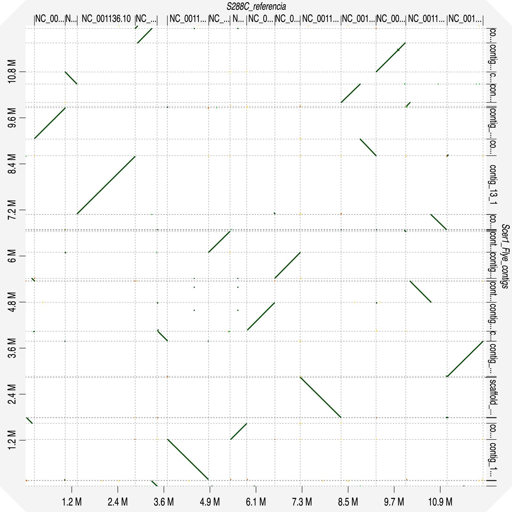
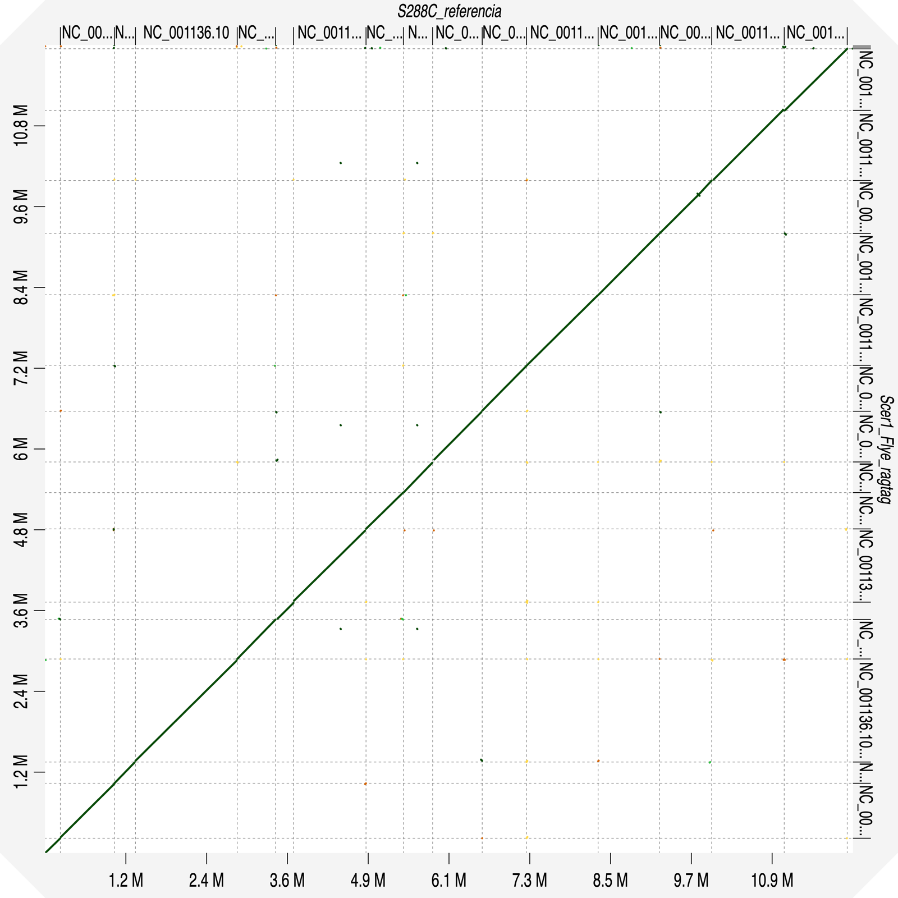
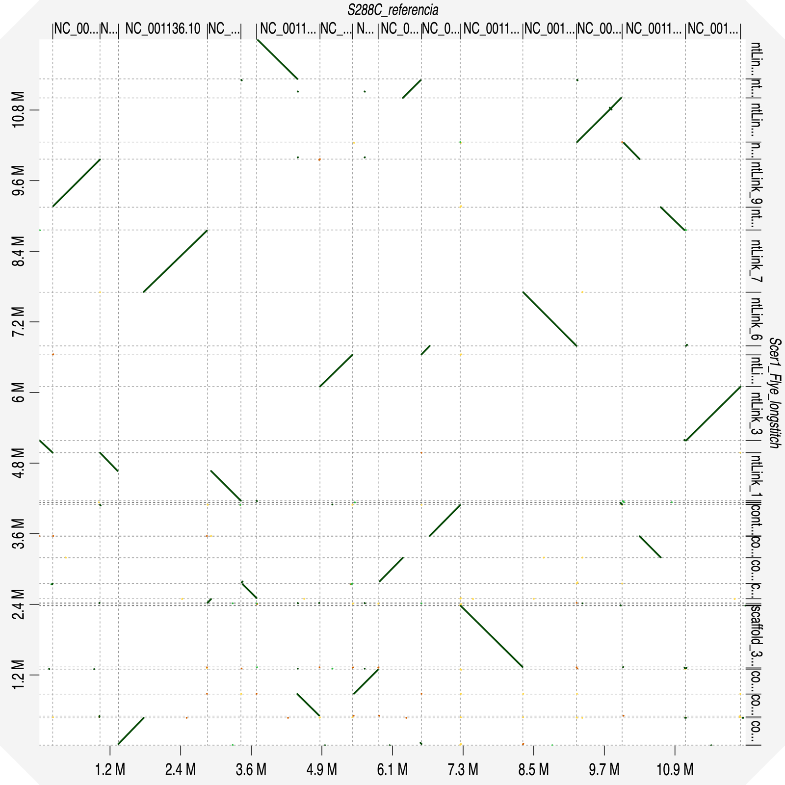
No eixo X estão os 16 cromossomos da referência (de NC_001133, cromossomo I, a NC_001148, cromossomo XVI); no eixo Y, as sequências da montagem, que o D-GENIES ordena para formar a melhor diagonal possível. A cor indica a identidade do alinhamento: verde-escuro é alta, amarelo e laranja são mais baixas.
- Contigs: cada cromossomo da referência é coberto por um ou poucos contigs. O
contig_13_1, por exemplo, cobre sozinho praticamente todo o cromossomo IV (NC_001136, 1,5 Mb). Muitos segmentos descem, mas são contigs inteiros na orientação oposta, e não inversões. As quebras entre contigs são os pontos onde o montador parou. - RagTag: uma única diagonal limpa, subindo de ponta a ponta. O RagTag ordenou e orientou os contigs pela referência, por isso nenhum segmento desce. Parece perfeito, mas é em parte circular: a ordem veio da própria referência. A faixa cinza no topo do eixo Y são os contigs que ele não posicionou, e os pontos soltos na linha de cima são esses contigs alinhando em vários cromossomos (sequências repetitivas, como os da Etapa 11.3).
- LongStitch: mais pedaços do que nos contigs, por causa dos cortes do Tigmint (12.2), mas cada junção foi feita com base nas reads da própria amostra, e não na referência.
- Pontos soltos fora da diagonal, nos três gráficos: sequências repetidas (elementos Ty, subtelômeros) que também alinham em outros lugares do genoma.
Algum scaffold junta cromossomos diferentes? No gráfico do LongStitch, algumas faixas do eixo Y parecem conter pedaços de mais de um cromossomo. Para não depender só do olho, contamos, para cada sequência, quantos kb alinham em cada cromossomo da referência (só alinhamentos de 10 kb ou mais) e listamos as que têm 50 kb ou mais em dois cromossomos diferentes. Fazemos isso nos contigs e nos scaffolds do LongStitch, para saber quem criou a junção:
conda activate polimento
REF=ncbi_dataset/data/GCF_000146045.2/GCF_000146045.2_R64_genomic.fna
for f in 9.Montagens-polidas/Scer1_q10_l500_Flye.fasta \
10.Scaffolding-Longstitch/Scer1_q10_l500_Flye/draft.k32.w100.tigmint-ntLink.longstitch-scaffolds.fa; do
echo "== $f (sequências com >= 50 kb alinhados em mais de um cromossomo)"
minimap2 -x asm5 -t 24 $REF $f 2>/dev/null \
| awk '$11>=10000{b[$1"\t"$6]+=$11} END{for(k in b) if(b[k]>=50000) print k"\t"int(b[k]/1000)"kb"}' \
| sort -k1,1 -k3,3nr \
| awk '{n[$1]++; l[$1]=l[$1]" "$2"("$3")"} END{for(s in n) if(n[s]>1) print s":"l[s]}'
done
conda deactivate
== 9.Montagens-polidas/Scer1_q10_l500_Flye.fasta (sequências com >= 50 kb alinhados em mais de um cromossomo)
contig_13_1: NC_001136.10(1558kb) NC_001144.5(52kb)
== 10.Scaffolding-Longstitch/Scer1_q10_l500_Flye/draft.k32.w100.tigmint-ntLink.longstitch-scaffolds.fa (sequências com >= 50 kb alinhados em mais de um cromossomo)
ntLink_1: NC_001137.3(520kb) NC_001135.5(310kb)
contig_13_1-1::contig_13_1:0-459546: NC_001136.10(443kb) NC_001144.5(52kb)
ntLink_1foi criado pelo ntLink: ele juntou um trecho de 520 kb do cromossomo V (NC_001137) com praticamente o cromossomo III inteiro (NC_001135, 316 kb). Nos contigs, esses dois cromossomos estavam separados. Lembre que o n ótimo escolhido para esta montagem foi 2 (12.2): bastaram duas reads ligando as pontas para o ntLink fazer a junção. Ela pode ser um erro, por exemplo uma ligação através de repetições subteloméricas, que são parecidas entre cromossomos, ou um rearranjo real da CBS7963. Só com estes dados não dá para decidir. É o tipo de junção que precisa ser conferida antes de ser aceita: por exemplo, contando quantas reads atravessam o ponto de junção, ou procurando o mesmo rearranjo em outra montagem independente.contig_13_1já vinha assim do Flye: além de cobrir o cromossomo IV inteiro, ele tem 52 kb que alinham no cromossomo XII (NC_001144). O Tigmint cortou esse contig em alguns pontos, mas não neste: o pedaço que tem os dois (contig_13_1:0-459546) continuou inteiro. Isso quer dizer que as reads longas sustentam a continuidade, um indício de que a estrutura existe de fato no genoma da CBS7963, e não de erro de montagem. Mas, de novo, confirmar exigiria olhar o ponto exato e as reads que passam por ele.- Lição: o dotplot e a contagem por cromossomo são boas formas de encontrar junções suspeitas. Decidir se são reais ou erros já exige olhar as reads que passam pelo ponto de junção.
Checklist da Etapa 12¶
- Tenho scaffolds RagTag de cada montagem em
10.Scaffolding/ - Tenho scaffolds LongStitch em
10.Scaffolding-Longstitch/ - Comparei número de placed vs. unplaced no RagTag
- Entendi por que o número de scaffolds pode aumentar em regiões repetitivas/subteloméricas
- Comparei os contigs e os dois scaffoldings com a referência num dotplot (D-GENIES)
Etapa 13 — Comparação das montagens candidatas¶
Chegamos ao momento de decidir com qual montagem seguir. Note que, embora tenhamos gerado scaffolds com RagTag e LongStitch nas etapas anteriores, a comparação e a escolha aqui são feitas com base nas montagens sem scaffolding (os contigs brutos de cada montador). O scaffolding depende de decisões adicionais (sintenia com uma referência, no caso do RagTag, ou suporte de long reads atravessando regiões repetitivas, no caso do LongStitch) que podem introduzir viés ou fragmentar ainda mais a montagem justamente nas regiões repetitivas/subteloméricas, como vimos na investigação anterior. Por isso, preferimos avaliar a qualidade "pura" de cada montador antes de aplicar qualquer scaffolding.
13.1 Comparar as estatísticas das montagens polidas (sem scaffolding)¶
Antes de montar a tabela, precisamos do BUSCO das montagens finais (purgadas, polidas e só com a parte nuclear); na Etapa 9.3, rodamos o BUSCO nas montagens brutas. Corrigir indels pode consertar genes com a fase de leitura quebrada, então vale conferir:
conda activate busco
for f in 9.Montagens-polidas/*.fasta; do
prefix=$(basename $f .fasta)
busco -i $f -l saccharomycetaceae_odb12 -m genome -o 8.QC_montagens/BUSCO/${prefix}_final -c 24
done
conda deactivate
Ver saída do comando (resumida)
# Scer1_q10_l500_Flye (híbrida)
|C:99.6%[S:99.6%,D:0.1%],F:0.0%,M:0.4%,n:3282,E:1.5% |
WARNING: 50 of 3270 Complete matches (1.5%) contain internal stop codons in Miniprot gene predictions
# Scer1_q10_l500_hifiasm (híbrida)
|C:99.7%[S:99.5%,D:0.2%],F:0.0%,M:0.3%,n:3282,E:1.6% |
WARNING: 52 of 3272 Complete matches (1.6%) contain internal stop codons in Miniprot gene predictions
# Scer1_q10_l500_nextdenovo (híbrida)
|C:99.6%[S:99.5%,D:0.1%],F:0.0%,M:0.4%,n:3282,E:1.5% |
WARNING: 50 of 3269 Complete matches (1.5%) contain internal stop codons in Miniprot gene predictions
# Scer2_q10_l500_Flye (Medaka)
|C:66.7%[S:66.5%,D:0.2%],F:3.0%,M:30.4%,n:3282,E:1.6% |
WARNING: 34 of 2188 Complete matches (1.6%) contain internal stop codons in Miniprot gene predictions
# Scer2_q10_l500_hifiasm (Medaka)
|C:0.5%[S:0.5%,D:0.0%],F:0.1%,M:99.5%,n:3282 |
| Montagem | Completos (C) | Duplicados (D) | Faltando (M) | Genes com stop codon interno |
|---|---|---|---|---|
| Referência S288C (Etapa 9.3) | 99,9% | 0,0% | 0,1% | 49 (1,5%) |
| Scer1 Flye: bruta → final | 99,7% → 99,6% | 0,1% → 0,1% | 0,3% → 0,4% | 54 → 50 |
| Scer1 Hifiasm: bruta → final | 99,7% → 99,7% | 1,7% → 0,2% | 0,3% → 0,3% | 51 → 52 |
| Scer1 NextDenovo: bruta → final | 99,6% → 99,6% | 0,2% → 0,1% | 0,3% → 0,4% | 52 → 50 |
| Scer2 Flye: bruta → final | 66,7% → 66,7% | 0,1% → 0,2% | 30,2% → 30,4% | 30 → 34 |
| Scer2 Hifiasm (final) | 0,5% | 0,0% | 99,5% | — |
- A completude da Scer1 já era quase máxima e continua assim (99,6–99,7%, contra 99,9% da referência). O polimento não "achou" genes novos, porque nas montagens brutas quase nenhum estava faltando ou fragmentado.
- A duplicação do Hifiasm caiu de 1,7% para 0,2%: esse é o efeito do purge_dups (Etapa 9.5), e não do polimento.
- Os genes com stop codon interno quase não mudaram (50–52 nas montagens finais) e ficaram praticamente iguais aos da referência (49). Isso mostra que esse número, aqui, não mede erros de montagem: é um fundo da predição de genes, que aparece até na referência. Ele seria útil para comparar montagens com muitos erros de indel (QV baixo); nas nossas, que já partiam de QV acima de 30, o BUSCO não tem resolução para mostrar o ganho do polimento. Quem mostrou esse ganho foi o Merqury com k-mers Illumina (11.3).
- Scer2 Flye: 66,7% completo, igual à bruta. Com ~6× de cobertura, um terço dos genes simplesmente não foi montado, e o polimento não tem como recuperá-los. A Scer2 Hifiasm, com ~87 kb, tem só 15 genes completos.
Agora juntamos QUAST (11.1), BUSCO e Merqury (11.2 e 11.3) das versões polidas numa tabela só:
QREPORT=8.QC_montagens/quast-polimento_q10_l500/report.tsv
MERQURY=8.QC_montagens/merqury/merqury_summary_polimento.tsv
MERQURY_ILMN=8.QC_montagens/merqury_illumina/merqury_illumina_summary.tsv
# versão escolhida de cada montagem (Etapa 11.4)
declare -A versao=(
[Scer1_q10_l500_Flye]="hibrido"
[Scer1_q10_l500_hifiasm]="hibrido"
[Scer1_q10_l500_nextdenovo]="hibrido"
[Scer2_q10_l500_Flye]="medaka"
[Scer2_q10_l500_hifiasm]="medaka"
)
# nome de cada montagem no relatório do QUAST (--labels da Etapa 11.1)
declare -A quast_label=(
[Scer1_q10_l500_Flye]="Scer1_Flye_hibrido"
[Scer1_q10_l500_hifiasm]="Scer1_Hifiasm_hibrido"
[Scer1_q10_l500_nextdenovo]="Scer1_NextDenovo_hibrido"
[Scer2_q10_l500_Flye]="Scer2_Flye_medaka"
[Scer2_q10_l500_hifiasm]="Scer2_Hifiasm_medaka"
)
get_quast_value () {
awk -F'\t' -v label="$1" -v metric="$2" '
NR==1 { for(i=1;i<=NF;i++) if($i==label) col=i }
$1==metric { print $col }
' "$QREPORT"
}
echo -e "Sample\tVersao\tContigs\tTotal_length_bp\tN50\tGC(%)\tGenome_fraction(%)\tMisassemblies\tBUSCO_Complete\tBUSCO_Single\tBUSCO_Duplicated\tBUSCO_Fragmented\tBUSCO_Missing\tQV_Nanopore\tCompleteness_Nanopore\tQV_Illumina" > 8.QC_montagens/qc_summary.tsv
for prefix in Scer1_q10_l500_Flye Scer1_q10_l500_hifiasm Scer1_q10_l500_nextdenovo Scer2_q10_l500_Flye Scer2_q10_l500_hifiasm; do
v=${versao[$prefix]}
label=${quast_label[$prefix]}
# --- QUAST ---
contigs=$(get_quast_value "$label" "# contigs")
total_len=$(get_quast_value "$label" "Total length")
n50=$(get_quast_value "$label" "N50")
gc=$(get_quast_value "$label" "GC (%)")
genome_frac=$(get_quast_value "$label" "Genome fraction (%)")
misassemblies=$(get_quast_value "$label" "# misassemblies")
# --- BUSCO ---
busco_line=$(grep -h "C:" 8.QC_montagens/BUSCO/${prefix}_final/short_summary*.txt 2>/dev/null | head -1)
bc=$(grep -oP 'C:\K[0-9.]+' <<< "$busco_line")
bs=$(grep -oP 'S:\K[0-9.]+' <<< "$busco_line")
bd=$(grep -oP 'D:\K[0-9.]+' <<< "$busco_line")
bf=$(grep -oP 'F:\K[0-9.]+' <<< "$busco_line")
bm=$(grep -oP 'M:\K[0-9.]+' <<< "$busco_line")
# --- Merqury: k-mers Nanopore e, para a Scer1, k-mers Illumina ---
read qv comp <<< $(awk -F'\t' -v p="${prefix}_${v}" '$1==p{print $2, $4}' "$MERQURY")
qv_ilmn=$(awk -F'\t' -v p="${prefix}_${v}" '$1==p{print $2}' "$MERQURY_ILMN")
echo -e "$prefix\t$v\t$contigs\t$total_len\t$n50\t$gc\t$genome_frac\t$misassemblies\t$bc\t$bs\t$bd\t$bf\t$bm\t${qv:-NA}\t${comp:-NA}\t${qv_ilmn:-NA}"
done >> 8.QC_montagens/qc_summary.tsv
column -t -s $'\t' 8.QC_montagens/qc_summary.tsv
Ver saída do comando
$ column -t -s $'\t' 8.QC_montagens/qc_summary.tsv
Sample Versao Contigs Total_length_bp N50 GC(%) Genome_fraction(%) Misassemblies BUSCO_Complete BUSCO_Single BUSCO_Duplicated BUSCO_Fragmented BUSCO_Missing QV_Nanopore Completeness_Nanopore QV_Illumina
Scer1_q10_l500_Flye hibrido 37 11971151 754533 38.36 95.000 132 99.6 99.6 0.1 0.0 0.4 44.971 93.0835 36.2018
Scer1_q10_l500_hifiasm hibrido 24 12167298 723225 38.42 95.281 168 99.7 99.5 0.2 0.0 0.3 49.7119 93.0596 41.2846
Scer1_q10_l500_nextdenovo hibrido 24 12015996 766906 38.36 95.394 164 99.6 99.5 0.1 0.0 0.4 43.0445 92.6542 35.4923
Scer2_q10_l500_Flye medaka 705 8251798 15859 38.20 65.310 61 66.7 66.5 0.2 3.0 30.4 25.5501 24.4887 NA
Scer2_q10_l500_hifiasm medaka 13 86746 7329 37.75 0.608 2 0.5 0.5 0.0 0.1 99.5 32.5242 6.4674 NA
13.2 Resumo de QC das montagens (Merqury + BUSCO + QUAST)¶
| Montagem | Versão | Contigs | Tamanho (Mb) | N50 (kb) | Fração do genoma (%) | Misassemblies | BUSCO C / D (%) | QV Nanopore | QV Illumina |
|---|---|---|---|---|---|---|---|---|---|
| Scer1 Flye | híbrida | 37 | 11,97 | 755 | 95,0 | 132 | 99,6 / 0,1 | 45,0 | 36,2 |
| Scer1 Hifiasm | híbrida | 24 | 12,17 | 723 | 95,3 | 168 | 99,7 / 0,2 | 49,7 | 41,3 |
| Scer1 NextDenovo | híbrida | 24 | 12,02 | 767 | 95,4 | 164 | 99,6 / 0,1 | 43,0 | 35,5 |
| Scer2 Flye | Medaka | 705 | 8,25 | 16 | 65,3 | 61 | 66,7 / 0,2 | 25,6 | — |
| Scer2 Hifiasm | Medaka | 13 | 0,09 | 7 | 0,6 | 2 | 0,5 / 0,0 | 32,5 | — |
Qual montagem escolher?
- Na Scer1, as três montagens chegaram muito perto umas das outras depois da remoção de duplicatas e do polimento: 24–37 contigs, ~12 Mb, N50 de 720–770 kb, 95% do genoma de referência e BUSCO de 99,6–99,7%. Por essas métricas, qualquer uma delas seria uma boa montagem.
- O que separa as três é a qualidade das bases. Pela régua independente (k-mers Illumina), o Hifiasm tem QV 41,3, contra 36,2 do Flye e 35,5 do NextDenovo, ou seja, cerca de 3 a 4 vezes menos erros. Ele também empata no menor número de contigs (24). Por isso, ele é a melhor candidata a montagem final da Scer1.
- O Flye tem menos misassemblies (132, contra 164–168). Lembre, porém, que boa parte dos "misassemblies" do QUAST são diferenças estruturais reais entre a CBS7963 e a S288C (11.1), e não erros. Um número um pouco maior não é, por si só, motivo para descartar uma montagem.
- A régua Nanopore teria escolhido a mesma montagem (QV 49,7), mas os valores dela são inflados em 7,5 a 9 pontos, e as diferenças entre as montagens são menores do que parecem. Sem as reads Illumina, não teríamos como saber de quanto foi o ganho real.
- Na Scer2, a Flye é a única utilizável, mas é uma montagem incompleta: 705 contigs, 65% do genoma e dois terços dos genes. Com ~6× de cobertura, nenhum montador consegue fazer muito melhor. Os números de completude do Merqury da Scer2 não devem ser usados para comparar com a Scer1 (veja 11.2).
- A escolha depende do objetivo. Para anotação de genes, o QV e o BUSCO pesam mais; para estudar rearranjos cromossômicos, a contiguidade e a ausência de junções erradas (12.5) pesam mais. A seguir, os telômeros mostram mais um critério: quantos cromossomos foram montados de ponta a ponta. A escolha final fica para depois da checagem de contaminantes (Etapa 14).
13.3 Telômeros: quantos cromossomos foram montados de ponta a ponta?¶
Nenhuma das métricas anteriores responde a uma pergunta simples: os cromossomos estão completos, de um telômero ao outro? Um contig que começa e termina em telômero representa um cromossomo inteiro (telomere-to-telomere, T2T). Como S. cerevisiae tem 16 cromossomos, o máximo esperado é 16 contigs T2T, ou 32 pontas teloméricas.
Para responder, procuramos a repetição telomérica nas pontas de cada contig com o tidk (telomere identification toolkit), que funciona para qualquer organismo: primeiro ele descobre qual é a repetição telomérica, depois conta quantas vezes ela aparece ao longo de cada contig.
Instalação: ambiente tidk
Se o tidk já estiver instalado no sistema (teste com tidk --version), não é preciso criar nem ativar o ambiente.
1) Descobrir o motivo telomérico. O tidk explore procura repetições curtas em sequência nas pontas dos contigs e lista as mais frequentes. Em vertebrados e plantas, o primeiro da lista costuma ser óbvio (TTAGGG, TTTAGGG):
conda activate tidk
mkdir -p 11.Telomeros
tidk explore --minimum 5 --maximum 12 9.Montagens-polidas/Scer1_q10_l500_hifiasm.fasta > 11.Telomeros/explore_Scer1_hifiasm.tsv
head 11.Telomeros/explore_Scer1_hifiasm.tsv
Ver saída do comando
Warning! No clades found in the database. Run 'tidk build' to fetch the latest data.
[+] Exploring genome for potential telomeric repeats between lengths 5 and 12.
(...)
[+] Finished searching genome
[+] Generating output
$ head 11.Telomeros/explore_Scer1_hifiasm.tsv
canonical_repeat_unit count_repeat_runs_gt_100
ACACACCC 3076
ACACCACACCC 2398
AAATAGCCCT 2386
ACACCC 2241
ACACCCACC 1542
AAAAG 1478
ACACACACCC 1257
ACACACC 1189
ACGAT 924
O aviso "No clades found in the database" se refere ao tidk find, outro comando do tidk, que usa um banco de motivos já conhecidos; ele não afeta o explore nem o search.
O explore lista as repetições que aparecem em sequências longas (a coluna conta quantas vezes cada unidade forma um trecho repetido), escritas sempre na fita rica em C. Repare na lista: quase todas as primeiras são variações da mesma coisa, ACACACCC, ACACCACACCC, ACACCC, ACACCCACC, ACACACC... É exatamente o telômero irregular C₁₋₃A da levedura: em vez de um motivo dominante, aparecem vários parecidos. Em um organismo com telômero regular, o primeiro da lista se destacaria muito dos outros. Qual delas usar na busca? Num telômero regular, a resposta é simples: a primeira da lista. Num telômero irregular, como o da levedura, vale escolher a unidade mais curta da família (ACACCC). O tidk search conta cópias exatas do motivo, e um motivo longo como ACACACCC quase nunca se repete inteiro várias vezes seguidas numa sequência que "escorrega" o tempo todo entre variantes. Testamos os dois: com ACACACCC, o tidk encontrou só 5 cópias na primeira janela de um contig telomérico do Hifiasm e praticamente nenhuma ponta telomérica em todas as montagens; com ACACCC, encontrou 35 cópias na mesma janela. O tidk search procura também o complemento reverso do motivo (GGGTGT) na outra fita.
2) Contar o motivo ao longo dos contigs. Com o motivo escolhido, o tidk search conta quantas cópias dele aparecem em janelas de 1 kb ao longo de cada contig, nas duas fitas:
MOTIVO=ACACCC # a unidade mais curta da família encontrada no passo 1
for f in 5.Montagem-Flye/Scer1_q10_l500/assembly.fasta \
6.Montagem-hifiasm/Scer1_q10_l500_hifiasm.p_ctg.fa \
7.Montagem-NextDenovo/Scer1_q10_l500/01_rundir/03.ctg_graph/nd.asm.fasta \
9.Montagens-polidas/*.fasta; do
p=$(echo $f | tr '/' '_' | sed 's/\.fa.*$//')
tidk search --string $MOTIVO --window 1000 --output $p --dir 11.Telomeros $f
done 2> 11.Telomeros/tidk_search.log # o progresso (uma linha por contig) vai para o log
ls 11.Telomeros/
head -5 11.Telomeros/9.Montagens-polidas_Scer1_q10_l500_hifiasm_telomeric_repeat_windows.tsv
conda deactivate
Ver saída do comando
$ head -5 11.Telomeros/9.Montagens-polidas_Scer1_q10_l500_hifiasm_telomeric_repeat_windows.tsv
id window forward_repeat_number reverse_repeat_number telomeric_repeat
ptg000003l_1 1000 35 0 ACACCC
ptg000003l_1 2000 0 0 ACACCC
ptg000003l_1 3000 0 0 ACACCC
ptg000003l_1 4000 0 2 ACACCC
Cada linha é uma janela de 1 kb: o contig ptg000003l_1 tem 35 cópias do motivo no primeiro kb (a ponta telomérica) e praticamente nenhuma depois. As colunas forward e reverse contam o motivo em cada fita: na ponta esquerda de um cromossomo aparece ACACCC (forward), e na ponta direita, o complemento GGGTGT (reverse).
3) Resumir: quantas pontas de contig têm telômero? Uma ponta é considerada telomérica quando a primeira (ou a última) janela de 1 kb do contig tem pelo menos 10 cópias do motivo, somando as duas fitas. Num contig com menos de 1 kb, a primeira e a última janela são a mesma, então ele conta no máximo como uma ponta:
for t in 11.Telomeros/*_telomeric_repeat_windows.tsv; do
awk -F'\t' -v MIN=10 '
NR>1 { n=$3+$4; if(!($1 in prim)) prim[$1]=n; ult[$1]=n; nj[$1]++ }
END { for(c in prim){ e=prim[c]>=MIN; d=(nj[c]>1 && ult[c]>=MIN) # contig de uma janela só: uma ponta
t2t+=(e&&d); uma+=((e||d)&&!(e&&d)) }
printf "%s\tT2T: %d\tuma ponta: %d\tpontas teloméricas: %d\n", FILENAME, t2t, uma, 2*t2t+uma }' $t
done
Ver saída do comando
11.Telomeros/5.Montagem-Flye_Scer1_q10_l500_assembly_telomeric_repeat_windows.tsv T2T: 3 uma ponta: 12 pontas teloméricas: 18
11.Telomeros/6.Montagem-hifiasm_Scer1_q10_l500_hifiasm.p_ctg_telomeric_repeat_windows.tsv T2T: 3 uma ponta: 16 pontas teloméricas: 22
11.Telomeros/7.Montagem-NextDenovo_Scer1_q10_l500_01_rundir_03.ctg_graph_nd.asm_telomeric_repeat_windows.tsv T2T: 0 uma ponta: 1 pontas teloméricas: 1
11.Telomeros/9.Montagens-polidas_Scer1_q10_l500_Flye_telomeric_repeat_windows.tsv T2T: 3 uma ponta: 10 pontas teloméricas: 16
11.Telomeros/9.Montagens-polidas_Scer1_q10_l500_hifiasm_telomeric_repeat_windows.tsv T2T: 3 uma ponta: 16 pontas teloméricas: 22
11.Telomeros/9.Montagens-polidas_Scer1_q10_l500_nextdenovo_telomeric_repeat_windows.tsv T2T: 0 uma ponta: 1 pontas teloméricas: 1
11.Telomeros/9.Montagens-polidas_Scer2_q10_l500_Flye_telomeric_repeat_windows.tsv T2T: 0 uma ponta: 11 pontas teloméricas: 11
11.Telomeros/9.Montagens-polidas_Scer2_q10_l500_hifiasm_telomeric_repeat_windows.tsv T2T: 0 uma ponta: 1 pontas teloméricas: 1
| Montagem | Bruta: T2T / pontas | Final: T2T / pontas | Máximo possível |
|---|---|---|---|
| Scer1 Flye | 3 / 18 | 3 / 16 | 16 / 32 |
| Scer1 Hifiasm | 3 / 22 | 3 / 22 | 16 / 32 |
| Scer1 NextDenovo | 0 / 1 | 0 / 1 | 16 / 32 |
| Scer2 Flye | — | 0 / 11 | 16 / 32 |
| Scer2 Hifiasm | — | 0 / 1 | 16 / 32 |
4) Visualizar. O tidk plot desenha, para cada contig, o número de cópias do motivo ao longo do comprimento:
tidk plot --tsv 11.Telomeros/9.Montagens-polidas_Scer1_q10_l500_hifiasm_telomeric_repeat_windows.tsv \
--output 11.Telomeros/tidk_Scer1_hifiasm
O resultado é um SVG, que pode ser aberto no navegador. Cada painel é um contig, do início (à esquerda) ao fim (à direita), com o nome e o tamanho embaixo. Um pico na ponta é um telômero: com picos nas duas pontas, o contig é T2T; com pico numa ponta só, ele termina num telômero de um lado e foi interrompido do outro. Cuidado com a escala: cada painel tem o seu próprio eixo Y, então num contig sem telômero o ruído de fundo (1 ou 2 cópias espalhadas) aparece ampliado e pode parecer importante.
Ver figura: tidk plot da montagem Scer1 Hifiasm final (24 contigs)
Como interpretar
- Só 3 dos 16 cromossomos saíram inteiros (T2T) no Flye e no Hifiasm. Mas o Hifiasm chega a 22 das 32 pontas: dois terços dos cromossomos têm pelo menos uma ponta montada até o telômero. O que falta, em geral, é o meio: os cromossomos quebram em repetições internas longas, como o rDNA do cromossomo XII e os elementos Ty, que as reads não conseguem atravessar.
- O NextDenovo quase não tem telômeros (1 ponta), embora tenha N50 e fração do genoma parecidos com os das outras montagens. Tudo indica que ele não estende os contigs até as pontas dos cromossomos, onde estão as repetições subteloméricas e teloméricas. Isso não aparece em nenhuma das métricas anteriores: é um bom exemplo de por que olhar mais de um critério.
- Do bruto para o final, o Hifiasm não perdeu nenhuma ponta; o Flye perdeu duas (18 → 16). O mais provável é que essas pontas estivessem em trechos removidos pelo purge_dups (Etapa 9.5), que corta pontas de contigs e contigs inteiros classificados como duplicados. É um custo pequeno, mas que vale conhecer.
- A Scer2 Flye tem 11 pontas teloméricas, mesmo com ~6× de cobertura e 705 contigs: alguns pedaços pequenos das pontas dos cromossomos foram montados, só que soltos.
- Este é mais um ponto a favor do Hifiasm como montagem final da Scer1, somado ao QV (13.2).
Os parâmetros dependem do organismo
O tamanho da janela (--window) e o mínimo de cópias (MIN) precisam combinar com o tamanho dos telômeros: em vertebrados e plantas, eles têm vários kb e janelas de 10 kb funcionam bem; em levedura, têm só ~300 pb, por isso usamos janelas de 1 kb. Confira sempre o resultado olhando algumas pontas no arquivo .tsv. Isso vale especialmente para telômeros irregulares, como o da levedura: comparamos este resultado com um script que procura o padrão irregular TG₁₋₃ por expressão regular, e os dois concordaram (no máximo uma ponta de diferença por montagem).
13.4 Snail plot¶
O snail plot ("gráfico caracol") é a figura de resumo de montagem que aparece em muitas publicações de genomas, como as do Darwin Tree of Life. Ele é produzido pelo BlobToolKit e mostra, numa só imagem:
- o anel externo azul: a composição de bases (GC e AT) ao longo da montagem;
- o círculo cinza: os contigs ordenados do maior para o menor, com o comprimento de cada um no raio e a fração acumulada da montagem no ângulo (de 0 a 100%);
- as faixas coloridas: o maior contig (vermelho), o N50 (laranja-escuro) e o N90 (laranja-claro);
- o canto superior direito: a completude do BUSCO, quando ela é fornecida.
Quanto mais a área cinza se aproxima de um "disco cheio" com bordas regulares, mais contígua é a montagem. Uma montagem fragmentada vira uma espiral fina que desce rápido.
Instalação: ambiente blobtoolkit
conda create -n blobtoolkit -c conda-forge python=3.9
conda activate blobtoolkit
pip install blobtoolkit blobtk
conda deactivate
O pacote blobtoolkit cria o banco de dados (BlobDir) da montagem; o blobtk desenha os gráficos.
Atenção: o BlobTools v1, mais antigo, e o BlobToolKit se chamam blobtools na linha de comando. Para saber qual está ativo, rode blobtools --version: o v1 responde 1.1.1; o BlobToolKit, 4.x.
conda activate blobtoolkit
mkdir -p 13.Snailplot
for f in 9.Montagens-polidas/*.fasta; do
prefix=$(basename $f .fasta)
# 1) criar o BlobDir com as sequências da montagem (tamanho, GC e Ns de cada contig)
# o rm -rf é importante: o blobtools não sobrescreve campos que já existem no BlobDir
rm -rf 13.Snailplot/$prefix
blobtools create --fasta $f 13.Snailplot/$prefix
# 2) acrescentar o resultado do BUSCO (Etapa 13.1)
blobtools add --busco 8.QC_montagens/BUSCO/${prefix}_final/run_saccharomycetaceae_odb12/full_table.tsv 13.Snailplot/$prefix
# 3) desenhar o snail plot
python -c "import blobtk; blobtk.plot.snail(blobdir='13.Snailplot/$prefix', output='13.Snailplot/${prefix}.snail.png')"
done
conda deactivate
ls -lh 13.Snailplot/*.png
Se o passo 2 der erro (o formato do full_table.tsv muda entre versões do BUSCO), o snail plot ainda pode ser gerado sem ele: só o painel do BUSCO fica de fora. Copie os arquivos .png para o seu computador (scp) para visualizá-los.
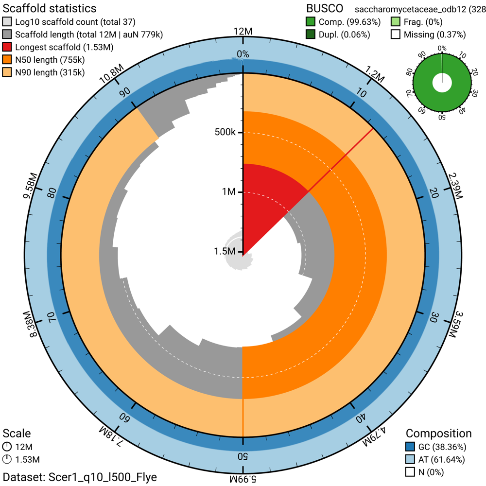
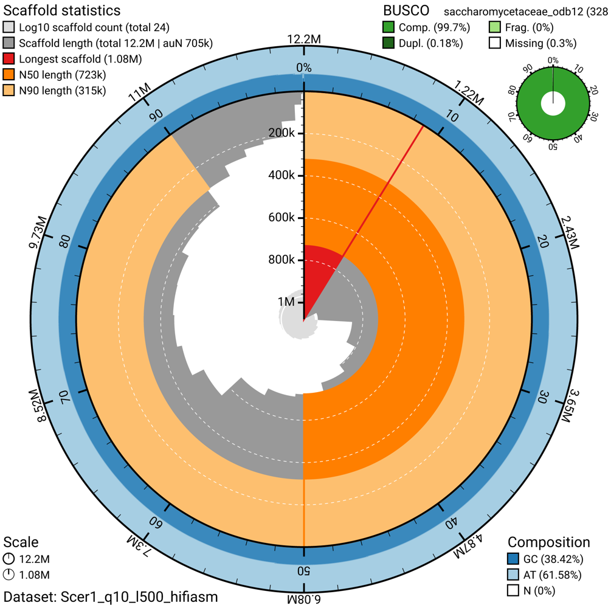
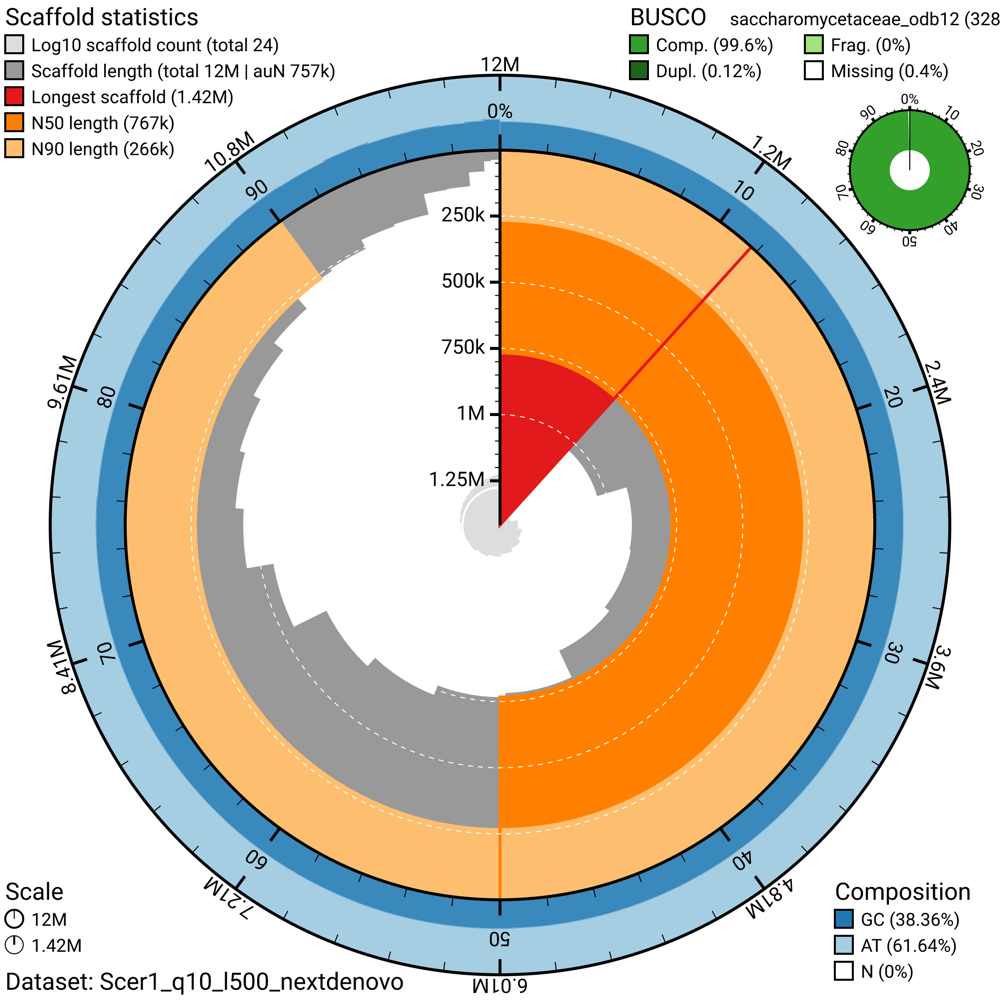
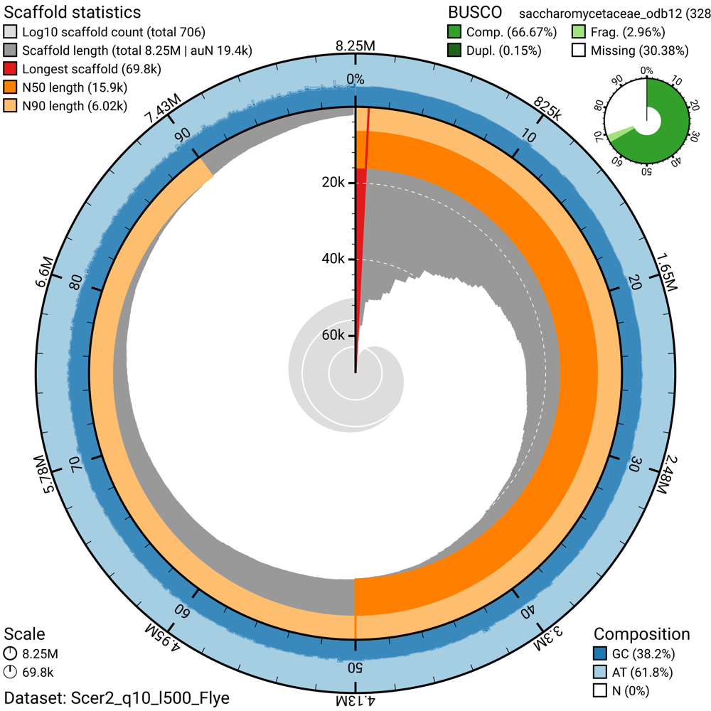
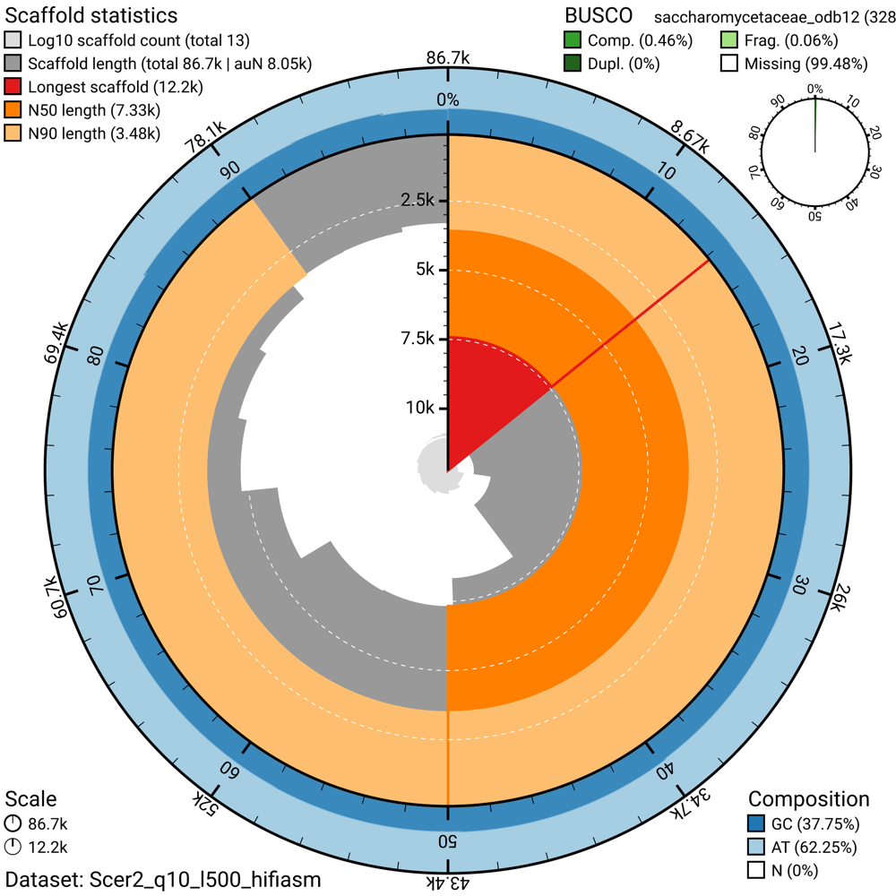
Cuidado com a escala
O raio do círculo cinza é ajustado ao maior contig de cada montagem, e o círculo externo, ao tamanho total dela (veja o quadro Scale, no canto inferior esquerdo). Na Scer1, o centro do gráfico vale ~1,1 Mb; na Scer2 Flye, só 70 kb. Por isso, os desenhos parecem mais parecidos do que são: compare sempre os números da legenda, e não só a forma.
Para comparar
- Coloque lado a lado a Scer1 Hifiasm e a Scer2 Flye. Na Scer1, 24 contigs cobrem 12,2 Mb, e o N50 (723 kb) aparece como uma faixa laranja larga. Na Scer2, são 706 contigs em 8,25 Mb, com N50 de 16 kb e a espiral cinza descendo até contigs de poucos kb. O BUSCO, no canto superior direito, mostra a mesma diferença: 99,7% contra 66,7%.
- Entre as três montagens da Scer1, o que muda no gráfico? Compare o maior contig, o N50, o N90 e o número de contigs na legenda com a tabela da Etapa 13.2.
- Na Scer2 Hifiasm, o snail plot ainda é desenhado, mas representa só ~87 kb. Que informação da legenda deixa isso claro de imediato?
Checklist da Etapa 13¶
- Gerei a tabela consolidada de QUAST + Merqury + BUSCO
- Entendi por que as três métricas de completude podem divergir
- Comparei as montagens candidatas por mais de um critério (não apenas pelo maior N50)
- Contei os telômeros e os cromossomos montados de ponta a ponta (T2T) em cada montagem
- Gerei o snail plot de cada montagem final
Etapa 14 — Checagem e remoção de contaminantes (BlobToolKit)¶
Mesmo uma montagem com boas métricas de completude e contiguidade pode conter sequências que não pertencem ao organismo de interesse: DNA de bactérias ou de outros organismos presentes na cultura, contaminação humana do laboratório, vetores. Nenhuma das métricas anteriores detecta isso. O BUSCO, por exemplo, só procura genes de levedura e simplesmente ignora um contig bacteriano.
A abordagem do BlobToolKit combina três informações para cada contig:
- a taxonomia, pelo melhor resultado de BLAST contra um banco de nucleotídeos de todos os organismos (aqui, o
core_ntdo NCBI); - o conteúdo de GC, que costuma ser diferente entre organismos distantes;
- a cobertura de reads: um contaminante presente em pequena quantidade na cultura forma contigs com cobertura bem diferente da do genoma principal.
Contigs do organismo de interesse formam um agrupamento (blob) compacto, com GC e cobertura parecidos e a mesma taxonomia. Contaminantes aparecem como pontos de outra cor, fora do agrupamento.
Vamos acrescentar essas informações ao mesmo BlobDir criado na Etapa 13.4, por isso a 13.4 precisa ter sido rodada antes. A checagem de contaminantes entra antes da escolha final: uma montagem com boas métricas pode perder pontos se carregar contaminantes. Por isso, rodamos nas três candidatas da Scer1 e na Scer2 Flye (a Scer2 Hifiasm, com ~87 kb, fica de fora).
Bancos usados
core_nt: versão dontmantida pelo NCBI desde 2024, sem a maior parte das sequências redundantes de grandes projetos de sequenciamento. É bem menor que ontcompleto, o que torna o BLAST mais rápido, mas ainda cobre todos os grupos de organismos.new_taxdump: a árvore taxonômica do NCBI, que o BlobToolKit usa para converter o identificador de taxonomia de cada hit (staxids) em espécie, gênero, filo etc.
Ajuste os dois caminhos abaixo para o seu servidor. Para baixar o taxdump: curl -L https://ftp.ncbi.nih.gov/pub/taxonomy/new_taxdump/new_taxdump.tar.gz | tar xzf -.
14.1 BLAST contra o core_nt¶
Este é o passo demorado: algumas horas por montagem, ou seja, provavelmente uma noite inteira para as quatro. Rode dentro do tmux.
DB=/media/hd16-databases/blast_dbs/core_nt/core_nt
MONTAGENS="Scer1_q10_l500_Flye Scer1_q10_l500_hifiasm Scer1_q10_l500_nextdenovo Scer2_q10_l500_Flye"
mkdir -p 14.Contaminantes
for prefix in $MONTAGENS; do
blastn -task megablast \
-query 9.Montagens-polidas/$prefix.fasta \
-db $DB \
-outfmt "6 qseqid staxids bitscore std" \
-max_target_seqs 10 -max_hsps 1 -evalue 1e-25 \
-num_threads 24 \
-out 14.Contaminantes/$prefix.blastn.out
done
O formato de saída 6 qseqid staxids bitscore std é o que o BlobToolKit espera: o nome do contig, o taxid do hit, o bitscore e as colunas padrão do BLAST. O -task megablast é o modo mais rápido do blastn, adequado para encontrar sequências muito parecidas.
14.2 Cobertura de reads¶
conda activate polimento # minimap2 e samtools
for prefix in $MONTAGENS; do
sample=${prefix%%_*}
minimap2 -ax map-ont -t 24 9.Montagens-polidas/$prefix.fasta 2.Filtragem-dadosbrutos/${sample}_q10_l500.fastq.gz \
| samtools sort -@ 8 -o 14.Contaminantes/$prefix.bam
samtools index 14.Contaminantes/$prefix.bam
done
conda deactivate
14.3 Juntar tudo no BlobDir e desenhar o blob plot¶
TAXDUMP=/media/hd16-databases/GEP2/DBs/taxdump
conda activate blobtoolkit
for prefix in $MONTAGENS; do
blobtools add \
--hits 14.Contaminantes/$prefix.blastn.out \
--taxrule bestsumorder \
--taxdump $TAXDUMP \
--cov 14.Contaminantes/$prefix.bam \
13.Snailplot/$prefix
python -c "import blobtk; blobtk.plot.blob(blobdir='13.Snailplot/$prefix', output='14.Contaminantes/${prefix}.blob.png')"
done
conda deactivate
ls -lh 14.Contaminantes/*.png
O --taxrule bestsumorder soma os bitscores dos hits de cada táxon ao longo do contig e atribui o contig ao táxon com a maior soma; é a regra padrão do BlobToolKit.
14.4 Tabela por contig e resumo por filo¶
conda activate blobtoolkit
for prefix in $MONTAGENS; do
blobtools filter \
--table 14.Contaminantes/$prefix.contigs.tsv \
--table-fields gc,length,${prefix}_cov,bestsumorder_phylum,bestsumorder_genus \
13.Snailplot/$prefix
head -3 14.Contaminantes/$prefix.contigs.tsv
echo "===== $prefix (filo: contigs, pb)"
awk -F'\t' 'NR==1{for(i=1;i<=NF;i++){if($i=="bestsumorder_phylum")f=i; if($i=="length")l=i}; next}
{n[$f]++; b[$f]+=$l} END{for(x in n) print x": "n[x]" contigs, "b[x]" pb"}' \
14.Contaminantes/$prefix.contigs.tsv | sort
done
conda deactivate
14.5 Remover os contaminantes¶
A regra mais simples e transparente: manter só os contigs atribuídos ao filo do organismo (Ascomycota, para S. cerevisiae) e os contigs sem nenhum hit (no-hit), que serão examinados à parte. Contigs sem hit não são automaticamente contaminantes: podem ser sequências da própria levedura que não estão no banco, como as regiões subteloméricas variáveis que vimos na Etapa 11.3.
FILO=Ascomycota
mkdir -p 14.Montagens-descontaminadas
conda activate polimento
for prefix in $MONTAGENS; do
t=14.Contaminantes/$prefix.contigs.tsv
rm -f 14.Contaminantes/$prefix.manter.txt 14.Contaminantes/$prefix.removidos.tsv
# as colunas são localizadas pelo nome, na primeira linha da tabela
awk -F'\t' -v F=$FILO -v M=14.Contaminantes/$prefix.manter.txt -v R=14.Contaminantes/$prefix.removidos.tsv '
NR==1 { for(i=1;i<=NF;i++){ if($i=="identifiers")id=i; if($i=="bestsumorder_phylum")f=i;
if($i=="bestsumorder_genus")g=i; if($i=="length")l=i; if($i ~ /_cov$/)c=i }; next }
$f==F || $f=="no-hit" { print $id > M; next }
{ print $id"\t"$f"\t"$g"\t"$l"\t"$c > R }' $t
touch 14.Contaminantes/$prefix.removidos.tsv
samtools faidx 9.Montagens-polidas/$prefix.fasta -r 14.Contaminantes/$prefix.manter.txt > 14.Montagens-descontaminadas/$prefix.fasta
echo "$prefix: $(wc -l < 14.Contaminantes/$prefix.manter.txt) contigs mantidos, $(wc -l < 14.Contaminantes/$prefix.removidos.tsv) removidos"
cat 14.Contaminantes/$prefix.removidos.tsv
done
conda deactivate
O arquivo .removidos.tsv lista, para cada contig removido, o filo, o gênero, o tamanho e a cobertura. Sempre confira essa lista antes de aceitar a remoção: um contig da própria levedura pode ter o melhor hit num organismo errado por causa de uma sequência mal anotada no banco, e um contaminante pode estar escondido dentro de um contig grande, sem que o contig inteiro seja atribuído a ele.
Comparando com o Kraken2
Vale voltar à Etapa 4 e comparar. O Kraken2 classificou ~24% dos reads como humanos e ~5 a 8% como B. cereus, mas usando um banco sem fungos. Se o blob plot não mostrar contigs de humano nem de Bacillus, isso reforça que aquelas classificações eram, em grande parte, falsos positivos, e que descartar os reads "contaminados" teria jogado fora dados de levedura. Se aparecerem contigs de Bacillus com cobertura própria, aí sim há evidência de contaminação real. É por isso que, em montagens Nanopore, a avaliação nos contigs costuma ser mais confiável que a classificação read a read.
Checklist da Etapa 14¶
- Rodei o BLAST das montagens candidatas contra o
core_nt - Gerei o blob plot e identifiquei se há contigs fora do agrupamento principal de Saccharomyces
- Conferi a lista de contigs removidos e tenho as montagens descontaminadas em
14.Montagens-descontaminadas/ - Comparei com os resultados de contaminação do Kraken2 (Etapa 4)
Escolha da montagem final¶
Só agora, com a checagem de contaminantes feita, temos todas as informações para escolher a montagem final. Reúna os critérios das etapas anteriores:
| Critério | Onde | O que olhar |
|---|---|---|
| Qualidade das bases | 11.3 e 13.2 | QV pela régua Illumina (a régua Nanopore infla os valores) |
| Completude gênica | 13.1 | BUSCO completos e duplicados |
| Contiguidade | 11.1 e 13.2 | número de contigs, N50, fração do genoma |
| Cromossomos completos | 13.3 | contigs T2T e pontas teloméricas |
| Erros estruturais | 11.1, 12.5 | misassemblies (lembrando que muitos são diferenças reais entre linhagens) e junções entre cromossomos |
| Contaminação | 14 | contigs removidos e quanto da montagem eles representavam |
Não existe uma regra única: o peso de cada critério depende do objetivo. Para anotação de genes, pesam mais o QV e o BUSCO; para estudar a organização dos cromossomos, a contiguidade, os telômeros e a ausência de junções erradas; para comparar com uma referência, os scaffolds do RagTag (Etapa 12) podem ser mais úteis do que os contigs.
Próximos passos típicos
- Projetos sem Illumina: sequenciar uma biblioteca Illumina da mesma linhagem, tanto para o polimento híbrido quanto para ter uma régua independente de qualidade
- Detecção de elementos repetitivos: RepeatModeler + RepeatMasker
- Anotação estrutural: BRAKER3 ou MAKER
- Anotação funcional: InterProScan, eggNOG-mapper
Licença¶
Este tutorial é distribuído sob CC BY 4.0. Reutilize com atribuição.
Reportar problemas¶
Encontrou erro, comando obsoleto, ou tem sugestão? Abra uma issue no GitHub usando o template "Erro no tutorial".